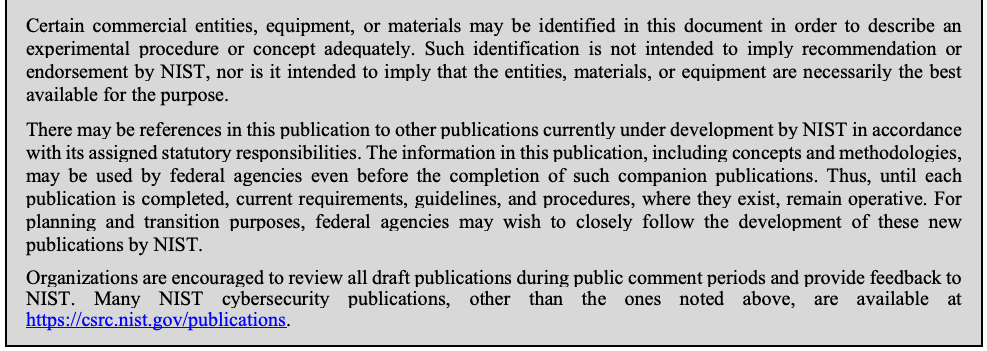
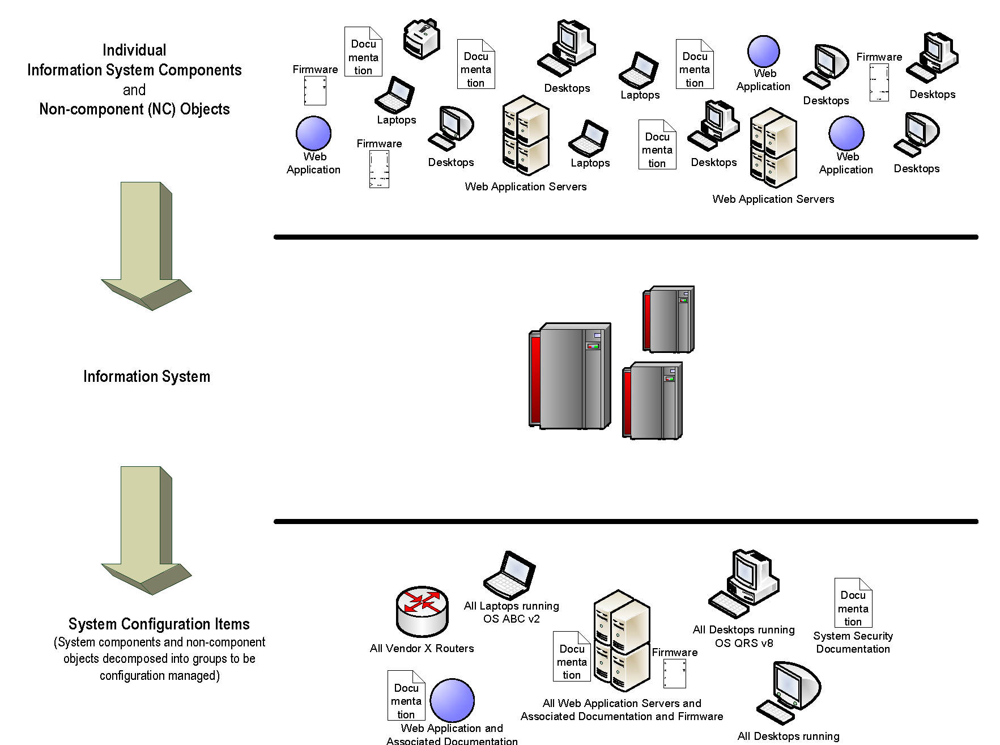

NIST SP 800-128 日本語訳
英語タイトル : Guide for Security-Focused Configuration Management of Information Systems日本語タイトル : 情報システムのセキュリティ重視構成管理ガイド（2019年10月更新を含む）
公開日 : 2019-10-10
原文URL : https://csrc.nist.gov/pubs/sp/800/128/upd1/final
翻訳編集 : 自動生成
[要約] SP 800-128 は、連邦情報システムとその運用環境のセキュリティを管理する組織向けに、セキュリティ重視構成管理（SecCM）の考え方と実施方法を示す指針です。構成管理の基本概念や SecCM の役割と責任に加え、計画、構成の特定と実装、構成変更の管理、監視という各フェーズのプロセスを説明します。SP 800-53 を補足する内容で、望ましい業務機能を支えつつ十分なセキュリティを確保し、組織のリスクを最小限に抑えるための構成の管理と監視を目的とします。
有志による非公式の日本語訳です。NIST および米国商務省が作成・承認・推奨したものではありません。要件の確認にはNIST の正式版 PDFを参照してください。
NIST Special Publication 800-128
NIST特別刊行物800-128
Guide for Security-Focused Configuration Management of
セキュリティ重視型構成管理ガイド：
Information Systems
情報システム
Arnold Johnson Kelley Dempsey Ron Ross Sarbari Gupta Dennis Bailey
Arnold Johnson、Kelley Dempsey、Ron Ross、Sarbari Gupta、Dennis Bailey
This publication is available free of charge from: https://doi.org/10.6028/NIST.SP.800-128
本刊行物は以下から無料で入手できる： https://doi.org/10.6028/NIST.SP.800-128
I N F O R M A T I O N S E C U R I T Y
情報セキュリティ
［NIST のロゴ。公的な標章のため、この非公式サイトには掲載していない。原本 PDF を参照。］
NIST Special Publication 800-128
NIST特別刊行物800-128
Guide for Security-Focused Configuration Management of
セキュリティ重視型構成管理ガイド：
Information Systems
情報システム
Arnold Johnson Kelley Dempsey Ron Ross
アーノルド・ジョンソン、ケリー・デンプシー、ロン・ロス
Computer Security Division Information Technology Laboratory
コンピュータセキュリティ部門 情報技術研究所
Sarbari Gupta Dennis Bailey
サーバリ・グプタ、デニス・ベイリー
Electrosoft Services, Inc. Reston, VA
Electrosoft Services, Inc. バージニア州レストン
Reston, VA
バージニア州レストン
This publication is available free of charge from: https://doi.org/10.6028/NIST.SP.800-128
本刊行物は以下から無料で入手できる： https://doi.org/10.6028/NIST.SP.800-128
August 2011
2011年8月
INCLUDES UPDATES AS OF 10-10-2019; SEE PAGE IV
2019年10月10日までの更新を含む。IVページを参照。
U.S. Department of Commerce Wilbur L. Ross, Jr., Secretary
米国商務省 ウィルバー・L・ロス・ジュニア長官
National Institute of Standards and Technology
国立標準技術研究所
Walter Copan, NIST Director and Under Secretary of Commerce for Standards and Technology
ウォルター・コパン、NIST所長兼標準技術担当商務次官
Authority
権限
This publication has been developed by NIST to further its statutory responsibilities under the Federal Information Security Modernization Act of 2014, 44 U.S.C. § 3551 et seq., Public Law (P.L.) 113-283. NIST is responsible for developing information security standards and guidelines, including minimum requirements for federal information systems, but such standards and guidelines shall not apply to national security systems without the express approval of appropriate federal officials exercising policy authority over such systems. This guideline is consistent with the requirements of the Office of Management and Budget (OMB) Circular.
本刊行物は、2014年連邦情報セキュリティ近代化法（44 U.S.C. § 3551 et seq., Public Law (P.L.) 113-283）に基づく法定責務をさらに果たすため、NISTが作成した。NISTは、連邦情報システムに関する最低要件を含む情報セキュリティ標準およびガイドラインを策定する責任を負う。ただし、このような標準およびガイドラインは、当該システムに対して政策上の権限を行使する適切な連邦政府職員の明示的な承認がない限り、国家安全保障システムには適用されない。本ガイドラインは、行政管理予算局（OMB）通達の要件に適合している。
Nothing in this publication should be taken to contradict the standards and guidelines made mandatory and binding on federal agencies by the Secretary of Commerce under statutory authority. Nor should these guidelines be interpreted as altering or superseding the existing authorities of the Secretary of Commerce, Director of the OMB, or any other federal official. This publication may be used by nongovernmental organizations on a voluntary basis and is not subject to copyright in the United States. Attribution would, however, be appreciated by NIST.
本刊行物のいかなる記述も、法的権限に基づき商務長官が連邦機関に義務付け、拘束力を持たせた標準およびガイドラインに反するものと解釈してはならない。また、本ガイドラインは、商務長官、OMB長官、またはその他の連邦政府職員が有する既存の権限を変更または置き換えるものと解釈してはならない。本刊行物は政府機関以外の組織も任意に利用でき、米国内では著作権の対象ではない。ただし、NISTを出典として明記していただければ幸いである。
National Institute of Standards and Technology Special Publication 800-128 Natl. Inst. Stand. Technol. Spec. Publ. 800-128, 99 pages (August 2011) CODEN: NSPUE2
国立標準技術研究所 特別刊行物800-128 国立標準技術研究所 特別刊行物800-128、99ページ（2011年8月） CODEN: NSPUE2
This publication is available free of charge from: https://doi.org/10.6028/NIST.SP.800-128
本刊行物は以下から無料で入手できる： https://doi.org/10.6028/NIST.SP.800-128
Certain commercial entities, equipment, or materials may be identified in this document in order to describe an experimental procedure or concept adequately. Such identification is not intended to imply recommendation or endorsement by NIST, nor is it intended to imply that the entities, materials, or equipment are necessarily the best available for the purpose.
原本PDFの抜粋画像

実験手順または概念を適切に説明するため、本書では特定の商業主体、機器または材料を特定することがある。このような特定は、NISTによる推奨または保証を意味するものではなく、当該主体、材料または機器が目的に対して入手可能な最良のものであることを示すものでもない。
There may be references in this publication to other publications currently under development by NIST in accordance with its assigned statutory responsibilities. The information in this publication, including concepts and methodologies, may be used by federal agencies even before the completion of such companion publications. Thus, until each publication is completed, current requirements, guidelines, and procedures, where they exist, remain operative. For planning and transition purposes, federal agencies may wish to closely follow the development of these new publications by NIST.
本刊行物には、割り当てられた法定責任に従ってNISTが現在策定中の他の刊行物への参照が含まれる場合がある。これらの刊行物が完成する前であっても、連邦機関は本刊行物の情報（概念および方法論を含む）を利用できる。したがって、各刊行物が完成するまでは、現行の要件、指針および手順が存在する場合、それらは引き続き有効である。計画および移行のため、連邦機関はNISTによるこれらの新たな刊行物の策定状況を注意深く追跡するとよい。
Organizations are encouraged to review all draft publications during public comment periods and provide feedback to NIST. Many NIST cybersecurity publications, other than the ones noted above, are available at https://csrc.nist.gov/publications.
組織は、パブリックコメント期間中にすべての草案を確認し、NISTに意見を提出することが推奨される。上記以外の多くのNISTサイバーセキュリティ刊行物は、https://csrc.nist.gov/publications から入手できる。
Comments on this publication may be submitted to: National Institute of Standards and Technology Attn: Computer Security Division, Information Technology Laboratory 100 Bureau Drive (Mail Stop 8930) Gaithersburg, MD 20899-8930 Electronic mail: sec-cert@nist.gov
本刊行物に関する意見は、以下に提出できる：国立標準技術研究所 宛先：コンピュータセキュリティ部門、情報技術研究所 100 Bureau Drive (Mail Stop 8930) Gaithersburg, MD 20899-8930 電子メール：sec-cert@nist.gov
All comments are subject to release under the Freedom of Information Act (FOIA).
すべての意見は、情報自由法（FOIA）に基づく公開の対象となる。
PAGE i
ページ i
Reports on Computer Systems Technology
コンピュータシステム技術に関する報告書
The Information Technology Laboratory (ITL) at the National Institute of Standards and Technology (NIST) promotes the U.S. economy and public welfare by providing technical leadership for the nation’s measurement and standards infrastructure. ITL develops tests, test methods, reference data, proof of concept implementations, and technical analyses to advance the development and productive use of information technology. ITL’s responsibilities include the development of management, administrative, technical, and physical standards and guidelines for the cost-effective security and privacy of other than national security-related information in federal information systems. The Special Publication 800-series reports on ITL’s research, guidelines, and outreach efforts in information system security, and its collaborative activities with industry, government, and academic organizations.
国立標準技術研究所（NIST）の情報技術研究所（ITL）は、米国の測定・標準インフラに技術的リーダーシップを提供することで、米国経済と公共福祉の向上に貢献している。ITLは、情報技術の発展と生産的な利用を促進するため、試験、試験方法、参照データ、概念実証の実装、および技術分析を開発する。ITLの責務には、連邦情報システムにおける国家安全保障関連以外の情報の費用対効果に優れたセキュリティとプライバシーを確保するための、マネジメント面、管理面、技術面、および物理面の標準とガイドラインの策定が含まれる。特別刊行物800シリーズは、情報システムセキュリティに関するITLの研究、ガイドライン、普及活動、および産業界、政府、学術機関との協働活動を報告する。
Abstract
概要
Guide for Security-Focused Configuration Management of Information Systems provides guidelines for organizations responsible for managing and administering the security of federal information systems and associated environments of operation. Configuration management concepts and principles described in this publication provide supporting information for NIST SP 800-53, Security and Privacy Controls for Federal Information Systems and Organizations. NIST SP 800-128 assumes that information security is an integral part of an organization’s overall configuration management. The focus of this document is on implementation of the information system security aspects of configuration management, and as such the term security-focused configuration management (SecCM) is used to emphasize the concentration on information security. In addition to the fundamental concepts associated with SecCM, the process of applying SecCM practices to information systems is described. The goal of SecCM activities is to manage and monitor the configurations of information systems to achieve adequate security and minimize organizational risk while supporting the desired business functionality and services.
「情報システムのセキュリティ重視構成管理ガイド」は、連邦情報システムおよび関連する運用環境のセキュリティを管理・運営する責任を負う組織向けの指針を示す。本書に記載された構成管理の概念と原則は、NIST SP 800-53『Security and Privacy Controls for Federal Information Systems and Organizations』を補足する情報を提供する。NIST SP 800-128は、情報セキュリティが組織全体の構成管理に不可欠な要素であることを前提としている。本書は、構成管理における情報システムのセキュリティ面の実装に焦点を当てる。そのため、情報セキュリティへの集中を強調する用語として、セキュリティ重視構成管理（SecCM）を用いる。SecCMの基本概念に加え、情報システムにSecCMの実践を適用するプロセスについても説明する。SecCM活動の目標は、望ましい業務機能およびサービスを支援しながら、十分なセキュリティを実現し、組織のリスクを最小限に抑えるため、情報システムの構成を管理・監視することである。
Keywords
キーワード
Configuration management; information systems; security program; risk management framework; security-focused continuous monitoring; SecCM; control; monitoring; security content automation protocol (SCAP).
構成管理；情報システム；セキュリティプログラム；リスク管理フレームワーク；セキュリティ重視の継続的監視；SecCM；管理策；監視；セキュリティコンテンツ自動化プロトコル（SCAP）。
Acknowledgments
謝辞
The authors, Arnold Johnson, Kelley Dempsey, and Ron Ross of NIST, and Sarbari Gupta and Dennis Bailey of Electrosoft, wish to thank their colleagues Murugiah Souppaya, Karen Scarfone, John Banghart, David Waltermire, and Blair Heiserman of NIST who reviewed drafts of the document and provided insightful recommendations. Nedim Goren and Jody Jacobs completed the errata update. A special note of thanks goes to Peggy Himes and Elizabeth Lennon for their superb technical editing and administrative support. We would also like to thank all those who responded to our call for public comments for lending their time and effort to make this a better document.
NISTの著者Arnold Johnson、Kelley Dempsey、Ron Ross、およびElectrosoftのSarbari Gupta、Dennis Baileyは、本書の草稿をレビューし、示唆に富む提言を寄せた同僚のNISTのMurugiah Souppaya、Karen Scarfone、John Banghart、David Waltermire、Blair Heisermanに感謝する。Nedim GorenとJody Jacobsは正誤表の更新を完了した。優れた技術編集と事務支援を行ったPeggy HimesとElizabeth Lennonにも、特に感謝する。また、本書をより良いものにするため、時間と労力を割いて公開コメント募集に応じてくださったすべての方々にも感謝する。
PAGE ii
ページ ii
Table of Contents
目次
CHAPTER ONE: INTRODUCTION — 1
第1章：はじめに — 1
1.1 PURPOSE AND APPLICABILITY — 2
1.1 目的と適用範囲 — 2
1.2 TARGET AUDIENCE — 2
1.2 対象読者 — 2
1.3 RELATIONSHIP TO OTHER SECURITY PUBLICATIONS — 2
1.3 他のセキュリティ関連刊行物との関係 — 2
1.4 ORGANIZATION OF THIS SPECIAL PUBLICATION — 3
1.4 本特別刊行物の構成 — 3
CHAPTER TWO: THE FUNDAMENTALS — 4
第2章：基本事項 — 4
2.1 OVERVIEW — 4
2.1 概要 — 4
2.2 THE PHASES OF SECURITY-FOCUSED CONFIGURATION MANAGEMENT — 7
2.2 セキュリティ重視構成管理の各段階 — 7
2.3 SECURITY-FOCUSED CONFIGURATION MANAGEMENT CONCEPTS — 9
2.3 セキュリティ重視構成管理の概念 — 9
2.4 SECCM ROLES AND RESPONSIBILITIES — 13
2.4 SECCMの役割と責任 — 13
CHAPTER THREE: THE PROCESS — 15
第3章：プロセス — 15
3.1 PLANNING — 15
3.1 計画 — 15
3.2 IDENTIFYING AND IMPLEMENTING CONFIGURATIONS — 30
3.2 構成の特定と実装 — 30
3.3 CONTROLLING CONFIGURATION CHANGE — 35
3.3 構成変更の管理 — 35
3.4 SECCM MONITORING — 40
3.4 SECCMの監視 — 40
3.5 USING SECURITY CONTENT AUTOMATION PROTOCOL (SCAP) — 44
3.5 セキュリティコンテンツ自動化プロトコル（SCAP）の使用 — 44
APPENDIX A REFERENCES ..........................................................................................................................A-1
付録A 参考文献 ..........................................................................................................................A-1
APPENDIX B GLOSSARY ..............................................................................................................................B-1
付録B 用語集 ..............................................................................................................................B-1
APPENDIX C ACRONYMS ............................................................................................................................ C-1
付録C 略語 ............................................................................................................................ C-1
APPENDIX D SAMPLE OUTLINE FOR A SECURITY CONFIGURATION MANAGEMENT PLAN.................................... D-1
付録D セキュリティ構成管理計画のサンプル構成 .................................... D-1
APPENDIX E SAMPLE CHANGE REQUEST ......................................................................................................E-1
付録E 変更要求サンプル ......................................................................................................E-1
APPENDIX F BEST PRACTICES FOR ESTABLISHING SECURE CONFIGURATIONS.................................................F-1
付録F セキュアな構成を確立するためのベストプラクティス .................................................F-1
APPENDIX G SECCM PROCESS FLOW CHARTS.............................................................................................. G-1
付録G SECCMプロセスフローチャート .............................................................................................. G-1
APPENDIX H CCB CHARTER SAMPLE............................................................................................................ H-1
付録H CCB憲章のサンプル ............................................................................................................ H-1
APPENDIX I SECURITY IMPACT ANALYSIS TEMPLATE......................................................................................I-1
付録I セキュリティ影響分析テンプレート ......................................................................................I-1
PAGE iii
ページ iii
Errata
正誤表
This table contains changes that have been incorporated into Special Publication 800-128. Errata updates can include corrections, clarifications, or other minor changes in the publication that are either editorial or substantive in nature.
この表には、特別刊行物800-128に反映された変更を記載する。正誤表の更新には、編集上または実質的な性質を持つ訂正、明確化、その他の軽微な変更が含まれる場合がある。
| Date | Type | Change | Page |
|---|---|---|---|
| 10/10/2019 | Substantive | Added new section, “Abstract” | ii |
| 10/10/2019 | Substantive | Added new section, “Keywords” | ii |
| 10/10/2019 | Substantive | Authority, Changed “Federal Information Security Management Act (FISMA), Public Law (P.L.) 107-347” to “Federal Information Security Modernization Act (FISMA) of 2013, 44 U.S.C. § 3551 et seq.” | i |
| 10/10/2019 | Substantive | Authority, Deleted “Public Law (P.L.) 107-347” | i |
| 10/10/2019 | Substantive | Authority, Deleted, “Section 8b(3), Securing Agency Information Systems, as analyzed in Circular A-130, Appendix IV: Analysis of Key Sections. Supplemental information is provided in Circular A-130, Appendix III.” | i |
| 10/10/2019 | Substantive | Deleted Section “Compliance with NIST Standards and Guidelines” | ii |
| 10/10/2019 | Substantive | Acknowledgements, Added “Nedim Goren and Jody Jacobs completed the errata update.” | ii |
| 10/10/2019 | Substantive | Added Errata table | vii |
| 10/10/2019 | Editorial | Changed the term “information system” to “system” for brevity. | Entire document |
| 10/10/2019 | Editorial | Changed “an” to “a” to correspond all applicable changes from “information system” to “system.” | Entire document |
| 10/10/2019 | Editorial | Added hyperlinks throughout publication to Appendix A, References | Entire document |
| 10/10/2019 | Editorial | Changed from “SISO” to “SAISO,” “ISO” to “system owner,” “ISSO” to “SSO,” “ISA” to “SA,” “ISU” to “SU,” and “IS" to “system,” to correspond with terminology updates. | Entire document |
| 10/10/2019 | Editorial | Chapter One, Section “Introduction,” first paragraph, second sentence: Deleted “these” before “systems” | 1 |
| 10/10/2019 | Editorial | Chapter One, Section “Introduction,” third paragraph, fourth sentence: Deleted “system” before “security aspects” | 1 |
| 10/10/2019 | Editorial | Chapter One, Section 1.1, first paragraph, second sentence: Deleted “security” before “controls” | 1 |
| 10/10/2019 | Substantive | Chapter One, Section Introduction, footnote 2: Changed from “Federal Information Security Management Act (P.L. 107-347, Title III), December 2002” to “Federal Information Security Modernization Act of 2014 [(Public Law 113-283)], December 2014” | 1 |
| 10/10/2019 | Editorial | Chapter One, Section 1.1, second paragraph, first sentence: Deleted “security” before “controls” | 2 |
| 10/10/2019 | Editorial | Chapter One, Section 1.1, second paragraph, second sentence: Deleted “security” before “controls” | 2 |
| 10/10/2019 | Substantive | Chapter One, Section 1.2, first paragraph, third bullet point: Changed from “or” to “and” | 2 |
| 10/10/2019 | Substantive | Chapter One, Section 1.3, first paragraph, second sentence: Deleted “Step 3,” “Step 4,” and “Step 6” | 2 |
| 10/10/2019 | Substantive | Chapter One, Section 1.3, first paragraph, second sentence: Changed from “Guide to Applying the Risk Management Framework to Federal Information Systems: A Security Life Cycle Approach” to “Risk Management Framework for Information Systems and Organizations: A Security Life Cycle Approach for Security and Privacy” | 2 |
| 10/10/2019 | Editorial | Chapter One, Section 1.3, first paragraph, second sentence: Deleted “Draft” before “NIST [SP 800-137]” | 3 |
| 10/10/2019 | Editorial | Chapter One, Section 1.3, first paragraph, third sentence: Deleted “security” before “controls” (two instances) | 3 |
| 日付 | 種別 | 変更内容 | ページ |
|---|---|---|---|
| 10/10/2019 | 実質的変更 | 新しい節「Abstract」を追加。 | ii |
| 10/10/2019 | 実質的変更 | 「Keywords」節を追加。 | ii |
| 10/10/2019 | 実質的変更 | 法令上の根拠：「Federal Information Security Management Act (FISMA), Public Law (P.L.) 107-347」を「Federal Information Security Modernization Act (FISMA) of 2013, 44 U.S.C. § 3551 et seq.」に変更。 | i |
| 10/10/2019 | 実質的変更 | 法令上の根拠：「Public Law (P.L.) 107-347」を削除。 | i |
| 10/10/2019 | 実質的変更 | 法令上の根拠：「Section 8b(3), Securing Agency Information Systems, as analyzed in Circular A-130, Appendix IV: Analysis of Key Sections. Supplemental information is provided in Circular A-130, Appendix III.」を削除。 | i |
| 10/10/2019 | 実質的変更 | 「Compliance with NIST Standards and Guidelines」節を削除。 | ii |
| 10/10/2019 | 実質的変更 | 謝辞に「Nedim Goren and Jody Jacobs completed the errata update.」を追加。 | ii |
| 10/10/2019 | 実質的変更 | 正誤表を追加。 | vii |
| 10/10/2019 | 編集上の変更 | 簡潔化のため、用語「information system」を「system」に変更。 | 文書全体 |
| 10/10/2019 | 編集上の変更 | 「information system」から「system」への該当するすべての変更に対応するため、「an」を「a」に変更。 | 文書全体 |
| 10/10/2019 | 編集上の変更 | 本書全体に、付録A「References」へのハイパーリンクを追加。 | 文書全体 |
| 10/10/2019 | 編集上の変更 | 用語の更新に合わせ、「SISO」を「SAISO」に、「ISO」を「system owner」に、「ISSO」を「SSO」に、「ISA」を「SA」に、「ISU」を「SU」に、「IS\"」を「system」に変更。 | 文書全体 |
| 10/10/2019 | 編集上の変更 | 第1章「Introduction」節、第1段落、第2文：「systems」の前の「these」を削除。 | 1 |
| 10/10/2019 | 編集上の変更 | 第1章「Introduction」節、第3段落、第4文：「security aspects」の前の「system」を削除。 | 1 |
| 10/10/2019 | 編集上の変更 | 第1章1.1節、第1段落、第2文：「controls」の前の「security」を削除。 | 1 |
| 10/10/2019 | 実質的変更 | 第1章「Introduction」節、脚注2：「Federal Information Security Management Act (P.L. 107-347, Title III), December 2002」を「Federal Information Security Modernization Act of 2014 [(Public Law 113-283)], December 2014」に変更。 | 1 |
| 10/10/2019 | 編集上の変更 | 第1章1.1節、第2段落、第1文：「controls」の前の「security」を削除。 | 2 |
| 10/10/2019 | 編集上の変更 | 第1章1.1節、第2段落、第2文：「controls」の前の「security」を削除。 | 2 |
| 10/10/2019 | 実質的変更 | 第1章1.2節、第1段落、第3箇条書き：「or」を「and」に変更。 | 2 |
| 10/10/2019 | 実質的変更 | 第1章1.3節、第1段落、第2文：「Step 3」「Step 4」「Step 6」を削除。 | 2 |
| 10/10/2019 | 実質的変更 | 第1章1.3節、第1段落、第2文：「Guide to Applying the Risk Management Framework to Federal Information Systems: A Security Life Cycle Approach」を「Risk Management Framework for Information Systems and Organizations: A Security Life Cycle Approach for Security and Privacy」に変更。 | 2 |
| 10/10/2019 | 編集上の変更 | 第1章1.3節、第1段落、第2文：「NIST [SP 800-137]」の前の「Draft」を削除。 | 3 |
| 10/10/2019 | 編集上の変更 | 第1章1.3節、第1段落、第3文：「controls」の前の「security」を削除（2か所）。 | 3 |
PAGE iv
ページ iv
| Date | Type | Change | Page |
|---|---|---|---|
| 10/10/2019 | Substantive | Chapter One, Section 1.3, third paragraph, first sentence: Deleted “NIST SP 800-117, Guide to Adopting and Using the Security Content Automation Protocol (SCAP)” | 3 |
| 10/10/2019 | Substantive | Chapter One, Section 1.3, third paragraph, first sentence: Changed from “SCAP Version 1.2” to “SCAP Version 1.3” | 3 |
| 10/10/2019 | Substantive | Chapter Two, Section 2.1.1, first paragraph, first sentence: Changed from “information systems enterprise” to “information technology” | 4 |
| 10/10/2019 | Editorial | Chapter Two, Section 2.1.2, footnote 5: Deleted “[44 U.S.C., Sec. 3542]” | 5 |
| 10/10/2019 | Substantive | Chapter Two, Section 2.1.2, footnote 5: Added “, and “system” is used synonymously with “information system.”” | 5 |
| 10/10/2019 | Editorial | Chapter Two, Section 2.1.2, footnote 6: Deleted “[CNSS Instructions 4009]” | 5 |
| 10/10/2019 | Editorial | Chapter Two, Section 2.1.2, footnote 10: Deleted footnote with definition of vulnerability; the definition of “vulnerability” is included in the glossary. | 5 |
| 10/10/2019 | Editorial | Chapter Two, Section 2.1.3, first paragraph, second sentence: Changed from “those” to “the” | 6 |
| 10/10/2019 | Editorial | Chapter Two, Section 2.1.3, first paragraph, fourth sentence: Changed from “These” to “However” | 6 |
| 10/10/2019 | Editorial | Chapter Two, Section 2.1.3, first paragraph, fourth sentence: Deleted “the” before “system” and changed from “system” to “systems” | 6 |
| 10/10/2019 | Substantive | Chapter Two, Section 2.1.3, footnote 8: Changed from “ISO 10007: 2003; IEEE Standard 828-2005” to “ISO 10007: 2017 (https://www.iso.org/standard/70400.html); IEEE Standard 828-2012-IEEE Standard for Configuration Management in Software and Software Engineering, https://standards.ieee.org/standard/828-2012.htm” | 6 |
| 10/10/2019 | Substantive | Chapter Two, Section 2.1.3, fifth paragraph, second sentence: changed from “will be” to “is” before “an initial investment” | 6 |
| 10/10/2019 | Editorial | Chapter Two, Section 2.2, first paragraph, first sentence: Changed from “-“ to “:” after “four major phases” | 7 |
| 10/10/2019 | Editorial | Chapter Two, Section 2.2, first paragraph, first sentence: Deleted “i)” before “Planning”, “ii)” before “Identifying and Implementing Configuration”, “iii)” before “Controlling Configuration Changes”, and “iv)” before Monitoring. | 7 |
| 10/10/2019 | Editorial | Chapter Two, Section 2.2, first paragraph, first sentence: Added “;” after “Planning,” “Identifying and Implementing Configurations,” and “Controlling Configuration Changes” | 7 |
| 10/10/2019 | Substantive | Chapter Two, Section 2.2.1, footnote 9: Changed from “http://checklists.nist.gov” to “https://www.nist.gov/programs-projects/national-checklist-program” | 7 |
| 10/10/2019 | Substantive | Chapter Two, Section 2.2.1, second paragraph, third sentence: Added “or mission/business process risk management” after “organizational” | 8 |
| 10/10/2019 | Substantive | Chapter Two, Section 2.2.4: Added footnote 10, “See NIST [SP 800-39], Managing Information Security Risk: Organization, Mission, and Information System View, for information on risk management levels.” | 8 |
| 10/10/2019 | Editorial | Chapter Two, Section 2.3.2, first paragraph, first sentence: Changed from “will” to “is to” after “SecCm policy” | 9 |
| 10/10/2019 | Substantive | Chapter Two, Section 2.3.2, first paragraph, second sentence: Added “supporting a mission/business process” after “systems” | 9 |
| 10/10/2019 | Substantive | Chapter Two, Section 2.3.5, first paragraph, second sentence: Deleted “This implies that t” before “CI is identified” | 10 |
| 10/10/2019 | Editorial | Chapter Two, Section 2.3.5, second paragraph, second sentence: Changed from “will vary” to “varies” | 10 |
| 10/10/2019 | Editorial | Chapter Two, Section 2.3.10, first paragraph, first sentence: Deleted “IS” before “components” (two instances) | 12 |
| 10/10/2019 | Editorial | Chapter Two, Section 2.3.10, second paragraph, fourth sentence: Deleted “security” before “controls” and “documentation” | 12 |
| 10/10/2019 | Editorial | Chapter Two, Section 2.3.10, footnote 13: Deleted “Draft” before “NIST SP 800-137” | 12 |
| 日付 | 種別 | 変更内容 | ページ |
|---|---|---|---|
| 10/10/2019 | 実質的変更 | 第1章1.3節、第3段落、第1文：「NIST SP 800-117, Guide to Adopting and Using the Security Content Automation Protocol (SCAP)」を削除。 | 3 |
| 10/10/2019 | 実質的変更 | 第1章1.3節、第3段落、第1文：「SCAP Version 1.2」を「SCAP Version 1.3」に変更。 | 3 |
| 10/10/2019 | 実質的変更 | 第2章2.1.1節、第1段落、第1文：「information systems enterprise」を「information technology」に変更。 | 4 |
| 10/10/2019 | 編集上の変更 | 第2章2.1.2節、脚注5：「[44 U.S.C., Sec. 3542]」を削除。 | 5 |
| 10/10/2019 | 実質的変更 | 第2章2.1.2節、脚注5：「, and “system” is used synonymously with “information system.”」を追加。 | 5 |
| 10/10/2019 | 編集上の変更 | 第2章2.1.2節、脚注6：「[CNSS Instructions 4009]」を削除。 | 5 |
| 10/10/2019 | 編集上の変更 | 第2章2.1.2節、脚注10：脆弱性の定義を記載した脚注を削除。「vulnerability」の定義は用語集に記載されている。 | 5 |
| 10/10/2019 | 編集上の変更 | 第2章2.1.3節、第1段落、第2文：「those」を「the」に変更。 | 6 |
| 10/10/2019 | 編集上の変更 | 第2章2.1.3節、第1段落、第4文：「These」を「However」に変更。 | 6 |
| 10/10/2019 | 編集上の変更 | 第2章2.1.3節、第1段落、第4文：「system」の前の「the」を削除し、「system」を「systems」に変更。 | 6 |
| 10/10/2019 | 実質的変更 | 第2章2.1.3節、脚注8：「ISO 10007: 2003; IEEE Standard 828-2005」を「ISO 10007: 2017 (https://www.iso.org/standard/70400.html); IEEE Standard 828-2012-IEEE Standard for Configuration Management in Software and Software Engineering, https://standards.ieee.org/standard/828-2012.htm」に変更。 | 6 |
| 10/10/2019 | 実質的変更 | 第2章2.1.3節、第5段落、第2文：「an initial investment」の前の「will be」を「is」に変更。 | 6 |
| 10/10/2019 | 編集上の変更 | 第2章2.2節、第1段落、第1文：「four major phases」の後の「-」を「:」に変更。 | 7 |
| 10/10/2019 | 編集上の変更 | 第2章2.2節、第1段落、第1文：「Planning」の前の「i)」、「Identifying and Implementing Configuration」の前の「ii)」、「Controlling Configuration Changes」の前の「iii)」、「Monitoring」の前の「iv)」を削除。 | 7 |
| 10/10/2019 | 編集上の変更 | 第2章2.2節、第1段落、第1文：「Planning,」「Identifying and Implementing Configurations,」「Controlling Configuration Changes」の後に「;」を追加。 | 7 |
| 10/10/2019 | 実質的変更 | 第2章2.2.1節、脚注9：「http://checklists.nist.gov」を「https://www.nist.gov/programs-projects/national-checklist-program」に変更。 | 7 |
| 10/10/2019 | 実質的変更 | 第2章2.2.1節、第2段落、第3文：「organizational」の後に「or mission/business process risk management」を追加。 | 8 |
| 10/10/2019 | 実質的変更 | 第2章2.2.4節：脚注10「See NIST [SP 800-39], Managing Information Security Risk: Organization, Mission, and Information System View, for information on risk management levels.」を追加。 | 8 |
| 10/10/2019 | 編集上の変更 | 第2章2.3.2節、第1段落、第1文：「SecCm policy」の後の「will」を「is to」に変更。 | 9 |
| 10/10/2019 | 実質的変更 | 第2章2.3.2節、第1段落、第2文：「systems」の後に「supporting a mission/business process」を追加。 | 9 |
| 10/10/2019 | 実質的変更 | 第2章2.3.5節、第1段落、第2文：「CI is identified」の前の「This implies that t」を削除。 | 10 |
| 10/10/2019 | 編集上の変更 | 第2章2.3.5節、第2段落、第2文：「will vary」を「varies」に変更。 | 10 |
| 10/10/2019 | 編集上の変更 | 第2章2.3.10節、第1段落、第1文：「components」の前の「IS」を削除（2か所）。 | 12 |
| 10/10/2019 | 編集上の変更 | 第2章2.3.10節、第2段落、第4文：「controls」と「documentation」の前の「security」を削除。 | 12 |
| 10/10/2019 | 編集上の変更 | 第2章2.3.10節、脚注13：「NIST SP 800-137」の前の「Draft」を削除。 | 12 |
PAGE v
ページ v
| Date | Type | Change | Page |
|---|---|---|---|
| 10/10/2019 | Editorial | Chapter Two, Section 2.3.10, footnote 13: Changed from “Step Six’ to “Monitor Step” in the parenthesis | 12 |
| 10/10/2019 | Editorial | Chapter Two, Section 2.4, first paragraph, first sentence: Deleted “al, as well as the” after “organization” | 13 |
| 10/10/2019 | Substantive | Chapter Two, Section 2.4, first paragraph, first sentence: Added “, mission/business process, and” after “organization” | 13 |
| 10/10/2019 | Substantive | Chapter Two, Section 2.4, third paragraph: Changed from “Senior Information Security Officer” to “Senior Agency Information Security Officer” | 13 |
| 10/10/2019 | Editorial | Chapter Three, Section “The Process,” second paragraph, second sentence: Changed from “these” to “the” before “activities” | 15 |
| 10/10/2019 | Substantive | Chapter Three, Section “The Process”, second paragraph, second and third sentences: Added “or mission/business process” after “organizational” | 15 |
| 10/10/2019 | Substantive | Chapter Three, Section “The Process”, second paragraph, fifth sentence: Deleted “organizational and information system” before “SecCM processes” | 15 |
| 10/10/2019 | Editorial | Chapter Three, Section 3.1, first sentence: Deleted “both” before “the organizational” | 15 |
| 10/10/2019 | Substantive | Chapter Three, Section 3.1.1, first paragraph, first sentence: Added “(or the mission/business process level)” after “organizational level” | 15 |
| 10/10/2019 | Editorial | Chapter Three, Section 3.1.1, eleventh paragraph, first sentence: Deleted “IS” before “Component Inventory” | 17 |
| 10/10/2019 | Substantive | Chapter Three, Section 3.1.1, thirteenth paragraph, second sentence: Deleted “Federal Desktop Core Configuration (FDCC),” after “(USGCB)” | 17 |
| 10/10/2019 | Substantive | Chapter Three, Section 3.1.1, twentieth paragraph, fourth sentence: Added “mission/business process or” before “system level” | 19 |
| 10/10/2019 | Substantive | Chapter Three, Section 3.1.1, twenty-fifth paragraph, first sentence: Added “(e.g., a software whitelist)” | 20 |
| 10/10/2019 | Editorial | Chapter Three, Section 3.1.1, twenty-fifth paragraph, second sentence: Deleted “are able to” after “System owners” | 20 |
| 10/10/2019 | Editorial | Chapter Three, Section 3.1.1, twenty-ninth paragraph, fourth sentence: Changed from “This” to “Tool installation and configuration” before “usually requires” | 21 |
| 10/10/2019 | Substantive | Chapter Three, Section 3.1.1, twenty-ninth paragraph, third sentence: Added “To the greatest extent possible, select automated” before “tools” | 21 |
| 10/10/2019 | Substantive | Chapter Three, Section 3.1.1, twenty-ninth paragraph, third sentence: Changed from “should be able to” to “that can” before “scan different” | 21 |
| 10/10/2019 | Editorial | Chapter Three, Section 3.1.1, twenty-ninth paragraph, third sentence: Changed “they” to “the current settings” before “are noncompliant” | 21 |
| 10/10/2019 | Editorial | Chapter Three, Section 3.1.1, twenty-ninth paragraph, fourth sentence: Changed from “Such” to “Automated configuration management” before” tools import” | 21 |
| 10/10/2019 | Editorial | Chapter Three, Section 3.1.1, thirtieth paragraph, second bullet: Changed “XML” to “Extensible Markup Language (XML)” before “and SCAP” | 22 |
| 10/10/2019 | Editorial | Chapter Three, Section 3.1.1, thirtieth paragraph, fifth bullet: Added “NIST” before “[SP 800-53]” | 22 |
| 10/10/2019 | Editorial | Chapter Three, Section 3.1.1, thirty-first paragraph, second sentence: Deleted “IT” before “servers” | 22 |
| 10/10/2019 | Editorial | Chapter Three, Section 3.1.1, thirty-first paragraph, third sentence: Changed from “These” to “The” before “products” | 22 |
| 10/10/2019 | Editorial | Chapter Three, Section 3.1.2, second paragraph, twelfth bullet point: Deleted “FDCC/” after “(e.g.,” | 24 |
| 10/10/2019 | Editorial | Chapter Three, Section 3.1.2, eigth paragraph, fourth sentence: Moved sentence “See Section 3.5 for more information on SCAP.” after “compliant tools.” to footnote 17. | 25 |
| 10/10/2019 | Editorial | Chapter Three, Section 3.1.2, ninth paragraph, third bullet point: Deleted “IS” | 26 |
| 10/10/2019 | Editorial | Chapter Three, Section 3.1.2, tenth paragraph, eigth bullet point: Changed from lower case “c” in “controls” to upper case “C” in” Controls” | 26 |
| 日付 | 種別 | 変更内容 | ページ |
|---|---|---|---|
| 10/10/2019 | 編集上の変更 | 第2章2.3.10節、脚注13：括弧内の「Step Six’」を「Monitor Step」に変更。 | 12 |
| 10/10/2019 | 編集上の変更 | 第2章2.4節、第1段落、第1文：「organization」の後の「al, as well as the」を削除。 | 13 |
| 10/10/2019 | 実質的変更 | 第2章2.4節、第1段落、第1文：「organization」の後に「, mission/business process, and」を追加。 | 13 |
| 10/10/2019 | 実質的変更 | 第2章2.4節、第3段落：「Senior Information Security Officer」を「Senior Agency Information Security Officer」に変更。 | 13 |
| 10/10/2019 | 編集上の変更 | 第3章「The Process」節、第2段落、第2文：「activities」の前の「these」を「the」に変更。 | 15 |
| 10/10/2019 | 実質的変更 | 第3章「The Process」節、第2段落、第2文および第3文：「organizational」の後に「or mission/business process」を追加。 | 15 |
| 10/10/2019 | 実質的変更 | 第3章「The Process」節、第2段落、第5文：「SecCM processes」の前の「organizational and information system」を削除。 | 15 |
| 10/10/2019 | 編集上の変更 | 第3章3.1節、第1文：「the organizational」の前の「both」を削除。 | 15 |
| 10/10/2019 | 実質的変更 | 第3章3.1.1節、第1段落、第1文：「organizational level」の後に「(or the mission/business process level)」を追加。 | 15 |
| 10/10/2019 | 編集上の変更 | 第3章3.1.1節、第11段落、第1文：「Component Inventory」の前の「IS」を削除。 | 17 |
| 10/10/2019 | 実質的変更 | 第3章3.1.1節、第13段落、第2文：「(USGCB)」の後の「Federal Desktop Core Configuration (FDCC),」を削除。 | 17 |
| 10/10/2019 | 実質的変更 | 第3章3.1.1節、第20段落、第4文：「system level」の前に「mission/business process or」を追加。 | 19 |
| 10/10/2019 | 実質的変更 | 第3章3.1.1節、第25段落、第1文：「(e.g., a software whitelist)」を追加。 | 20 |
| 10/10/2019 | 編集上の変更 | 第3章3.1.1節、第25段落、第2文：「System owners」の後の「are able to」を削除。 | 20 |
| 10/10/2019 | 編集上の変更 | 第3章3.1.1節、第29段落、第4文：「usually requires」の前の「This」を「Tool installation and configuration」に変更。 | 21 |
| 10/10/2019 | 実質的変更 | 第3章3.1.1節、第29段落、第3文：「tools」の前に「To the greatest extent possible, select automated」を追加。 | 21 |
| 10/10/2019 | 実質的変更 | 第3章3.1.1節、第29段落、第3文：「scan different」の前の「should be able to」を「that can」に変更。 | 21 |
| 10/10/2019 | 編集上の変更 | 第3章3.1.1節、第29段落、第3文：「are noncompliant」の前の「they」を「the current settings」に変更。 | 21 |
| 10/10/2019 | 編集上の変更 | 第3章3.1.1節、第29段落、第4文：「tools import」の前の「Such」を「Automated configuration management」に変更。 | 21 |
| 10/10/2019 | 編集上の変更 | 第3章3.1.1節、第30段落、第2箇条書き：「and SCAP」の前の「XML」を「Extensible Markup Language (XML)」に変更。 | 22 |
| 10/10/2019 | 編集上の変更 | 第3章3.1.1節、第30段落、第5箇条書き：「[SP 800-53]」の前に「NIST」を追加。 | 22 |
| 10/10/2019 | 編集上の変更 | 第3章3.1.1節、第31段落、第2文：「servers」の前の「IT」を削除。 | 22 |
| 10/10/2019 | 編集上の変更 | 第3章3.1.1節、第31段落、第3文：「products」の前の「These」を「The」に変更。 | 22 |
| 10/10/2019 | 編集上の変更 | 第3章3.1.2節、第2段落、第12箇条書き：「(e.g.,」の後の「FDCC/」を削除。 | 24 |
| 10/10/2019 | 編集上の変更 | 第3章3.1.2節、第8段落、第4文：「compliant tools.」の後にあった文「See Section 3.5 for more information on SCAP.」を脚注17へ移動。 | 25 |
| 10/10/2019 | 編集上の変更 | 第3章3.1.2節、第9段落、第3箇条書き：「IS」を削除。 | 26 |
| 10/10/2019 | 編集上の変更 | 第3章3.1.2節、第10段落、第8箇条書き：「controls」の小文字の「c」を「Controls」の大文字の「C」に変更。 | 26 |
PAGE vi
ページ vi
| Date | Type | Change | Page |
|---|---|---|---|
| 10/10/2019 | Editorial | Chapter Three, Section 3.1.2, fourteenth paragraph, Roman numeral i: Deleted “I” from “ISC” | 27 |
| 10/10/2019 | Editorial | Chapter Three, Section 3.1.2, fourteenth paragraph, Roman numeral iii: Deleted “I” from “ISC” | 27 |
| 10/10/2019 | Substantive | Chapter Three, Section 3.1.2, fifteenth paragraph, second sentence: Added “(e.g., software applications)” after “System applications” | 27 |
| 10/10/2019 | Editorial | Chapter Three, Section 3.1.2, twenty-first paragraph, sixth sentence: Changed from “IS elements” to “system components” | 28 |
| 10/10/2019 | Substantive | Chapter Three, Section 3.1.2, twenty-fourth paragraph, third sentence: Added “system owner or” before “SSO” | 30 |
| 10/10/2019 | Substantive | Chapter Three, Section 3.1.2, twenty-fourth paragraph, third sentence: Deleted “or ISSM” after “SSO” | 30 |
| 10/10/2019 | Substantive | Chapter Three, Section 3.2.1, first paragraph, first bullet, tenth sub-bullet: Changed “FIPS 140-2” to “[FIPS 140-3]” | 31 |
| 10/10/2019 | Editorial | Chapter Three, Section 3.2.1, first paragraph, fourth bullet: Deleted “[HIDS]” | 31 |
| 10/10/2019 | Substantive | Chapter Three, Section 3.2.1, second paragraph, second sentence: Changed “National Checklist Program” to “National Checklist Program Repository” | 31 |
| 10/10/2019 | Editorial | Chapter Three, Section 3.2.1, footnote 20: Changed “Special Publication” to “SP” | 31-32 |
| 10/10/2019 | Substantive | Chapter Three, Section 3.2.1, footnote 20: Added “and Repository. Also see https://www.nist.gov/programs-projects/national-checklist-program, which includes checklists from multiple authoritative sources including DISA STIGs, CIS Benchmarks, and commercial providers; and https://nvd.nist.gov/ncp/repository for information on the repository.” | 31-32 |
| 10/10/2019 | Substantive | Chapter Three, Section 3.2.1, footnote 20: Deleted “http://checklist.nist.gov” | 31-32 |
| 10/10/2019 | Editorial | Chapter Three, Section 3.2.2, fifth paragraph, fourth sentence: Changed “OS” to “operating system (OS)” | 33 |
| 10/10/2019 | Editorial | Chapter Three, Section 3.3, first paragraph, first sentence: Deleted "their” before “systems” | 35 |
| 10/10/2019 | Editorial | Chapter Three, Section 3.3.2, first paragraph, second sentence: Changed “they” to “changes” before “are implemented” | 36 |
| 10/10/2019 | Editorial | Chapter Three, Section 3.3.2, first paragraph, third sentence: Changed from “it” to “configuration change control” before “generally” | 36 |
| 10/10/2019 | Editorial | Chapter Three, Section 3.3.2, second paragraph, second sentence: Changed from “These changes” to “Changes” before “to the process” | 37 |
| 10/10/2019 | Editorial | Chapter Three, Section 3.3.2, fourth paragraph, first sentence: Changed from “these” to “such” before “activities” | 37 |
| 10/10/2019 | Editorial | Chapter Three, Section 3.3.3, first paragraph, first sentence: Changed from “This” to “Security impact analysis” before “is one of” | 38 |
| 10/10/2019 | Editorial | Chapter Three, Section 3.3.3, first paragraph, second sentence: Changed from “this” to “the system security” before “effort” | 38 |
| 10/10/2019 | Substantive | Chapter Three, Section 3.3.3, third paragraph, second sentence: Deleted footnote 25 because referenced publications were withdrawn. | 38 |
| 10/10/2019 | Editorial | Chapter Three, Section 3.3.3, third paragraph, second bullet point, third sentence: Changed from “it” to “the change” before “will be built” | 38 |
| 10/10/2019 | Editorial | Chapter Three, Section 3.3.3, third paragraph, third bullet point: Deleted “-“ after “(Deployed)” | 38 |
| 10/10/2019 | Editorial | Chapter Three, Section 3.3.3, third paragraph, third bullet point, first sentence: Changed from “This” to “Security impact analysis in the operations and maintenance phase” before “confirms that” | 38 |
| 10/10/2019 | Substantive | Chapter Three, Section 3.3.3, third paragraph, third bullet point, first sentence: Added “in the operational environment” after “introduced” | 38 |
| 10/10/2019 | Substantive | Chapter Three, Section 3.3.3, fourth paragraph, second Roman numeral ii, first sentence: Changed from “for example” to “but is not limited to” before “, a search” | 39 |
| 日付 | 種別 | 変更内容 | ページ |
|---|---|---|---|
| 10/10/2019 | 編集上の変更 | 第3章3.1.2節、第14段落、ローマ数字i：「ISC」から「I」を削除。 | 27 |
| 10/10/2019 | 編集上の変更 | 第3章3.1.2節、第14段落、ローマ数字iii：「ISC」から「I」を削除。 | 27 |
| 10/10/2019 | 実質的変更 | 第3章3.1.2節、第15段落、第2文：「System applications」の後に「(e.g., software applications)」を追加。 | 27 |
| 10/10/2019 | 編集上の変更 | 第3章3.1.2節、第21段落、第6文：「IS elements」を「system components」に変更。 | 28 |
| 10/10/2019 | 実質的変更 | 第3章3.1.2節、第24段落、第3文：「SSO」の前に「system owner or」を追加。 | 30 |
| 10/10/2019 | 実質的変更 | 第3章3.1.2節、第24段落、第3文：「SSO」の後の「or ISSM」を削除。 | 30 |
| 10/10/2019 | 実質的変更 | 第3章3.2.1節、第1段落、第1箇条書き、第10小箇条書き：「FIPS 140-2」を「[FIPS 140-3]」に変更。 | 31 |
| 10/10/2019 | 編集上の変更 | 第3章3.2.1節、第1段落、第4箇条書き：「[HIDS]」を削除。 | 31 |
| 10/10/2019 | 実質的変更 | 第3章3.2.1節、第2段落、第2文：「National Checklist Program」を「National Checklist Program Repository」に変更。 | 31 |
| 10/10/2019 | 編集上の変更 | 第3章3.2.1節、脚注20：「Special Publication」を「SP」に変更。 | 31-32 |
| 10/10/2019 | 実質的変更 | 第3章3.2.1節、脚注20：「and Repository. Also see https://www.nist.gov/programs-projects/national-checklist-program, which includes checklists from multiple authoritative sources including DISA STIGs, CIS Benchmarks, and commercial providers; and https://nvd.nist.gov/ncp/repository for information on the repository.」を追加。 | 31-32 |
| 10/10/2019 | 実質的変更 | 第3章3.2.1節、脚注20：「http://checklist.nist.gov」を削除。 | 31-32 |
| 10/10/2019 | 編集上の変更 | 第3章3.2.2節、第5段落、第4文：「OS」を「operating system (OS)」に変更。 | 33 |
| 10/10/2019 | 編集上の変更 | 第3章3.3節、第1段落、第1文：「systems」の前の「their」を削除。 | 35 |
| 10/10/2019 | 編集上の変更 | 第3章3.3.2節、第1段落、第2文：「are implemented」の前の「they」を「changes」に変更。 | 36 |
| 10/10/2019 | 編集上の変更 | 第3章3.3.2節、第1段落、第3文：「generally」の前の「it」を「configuration change control」に変更。 | 36 |
| 10/10/2019 | 編集上の変更 | 第3章3.3.2節、第2段落、第2文：「to the process」の前の「These changes」を「Changes」に変更。 | 37 |
| 10/10/2019 | 編集上の変更 | 第3章3.3.2節、第4段落、第1文：「activities」の前の「these」を「such」に変更。 | 37 |
| 10/10/2019 | 編集上の変更 | 第3章3.3.3節、第1段落、第1文：「is one of」の前の「This」を「Security impact analysis」に変更。 | 38 |
| 10/10/2019 | 編集上の変更 | 第3章3.3.3節、第1段落、第2文：「effort」の前の「this」を「the system security」に変更。 | 38 |
| 10/10/2019 | 実質的変更 | 第3章3.3.3節、第3段落、第2文：参照されている刊行物が撤回されたため、脚注25を削除。 | 38 |
| 10/10/2019 | 編集上の変更 | 第3章3.3.3節、第3段落、第2箇条書き、第3文：「will be built」の前の「it」を「the change」に変更。 | 38 |
| 10/10/2019 | 編集上の変更 | 第3章3.3.3節、第3段落、第3箇条書き：「(Deployed)」の後の「-」を削除。 | 38 |
| 10/10/2019 | 編集上の変更 | 第3章3.3.3節、第3段落、第3箇条書き、第1文：「confirms that」の前の「This」を「Security impact analysis in the operations and maintenance phase」に変更。 | 38 |
| 10/10/2019 | 実質的変更 | 第3章3.3.3節、第3段落、第3箇条書き、第1文：「introduced」の後に「in the operational environment」を追加。 | 38 |
| 10/10/2019 | 実質的変更 | 第3章3.3.3節、第4段落、第2のローマ数字ii、第1文：「, a search」の前の「for example」を「but is not limited to」に変更。 | 39 |
PAGE vii
ページ vii
| Date | Type | Change | Page |
|---|---|---|---|
| 10/10/2019 | Editorial | Chapter Three, Section 3.3.3, fourth paragraph, second Roman numeral ii, second sentence: Changed from “this” to “NVD” before “information” | 39 |
| 10/10/2019 | Editorial | Chapter Three, Section 3.3.4, first paragraph, first sentence: Deleted “Security” before “Assessment Reports” | 40 |
| 10/10/2019 | Substantive | Chapter Three, Section 3.4, first paragraph, first sentence: Added “if” before “an organization’s” and “(i.e., reduce risk)” after “from attacks” | 40 |
| 10/10/2019 | Substantive | Chapter Three, Section 3.4, first paragraph, footnote 23: Changed “baselines” to “baseline configurations” after “archived” | 40 |
| 10/10/2019 | Substantive | Chapter Three, Section 3.4, second paragraph, third sentence: Changed “Unapproved components are often a major threat to security; they rarely have updated patches, are not configured using the approved baseline configurations, and are not assessed or included in the authorization to operate” to “Unapproved components often create a major security risk; unapproved components rarely have updated patches, are not configured using the approved baseline configurations, and are not assessed or included in the authorization to operate.” | 41 |
| 10/10/2019 | Substantive | Chapter Three, Section 3.4.1, first paragraph, fifth sentence: Added “in support of overall continuous monitoring.” after “status” | 41 |
| 10/10/2019 | Substantive | Chapter Three, Section 3.4.1, second paragraph, sixth bullet point, first sentence: Changed from “system impact analysis” to “security impact analysis” | 42 |
| 10/10/2019 | Editorial | Chapter Three, Section 3.4.1, seventh paragraph, second sentence: Changed “they can take actions such as” to “actions can be taken such as” | 43 |
| 10/10/2019 | Editorial | Chapter Three, Section 3.5, first paragraph, first sentence: Changed “SCAP is a protocol currently consisting of a suite of specifications that standardize the format and nomenclature by which security software communicates information about software flaws and secure configurations” to “Security Content Automation Protocol (SCAP) is a suite of specifications that standardize the format and nomenclature by which information about software flaws and secure configurations can be communicated” | 44 |
| 10/10/2019 | Substantive | Chapter Three, Section 3.5, first paragraph, second sentence: Added “against an expected baseline” after “security configuration settings” | 44 |
| 10/10/2019 | Substantive | Chapter Three, Section 3.5, second paragraph, third sentence: Deleted “high-level” before “security requirements” | 44 |
| 10/10/2019 | Editorial | Chapter Three, Section 3.5, second paragraph, fourth sentence: Changed “These mappings” to “Mappings between settings and requirements” | 44 |
| 10/10/2019 | Editorial | Chapter Three, Section 3.5, second paragraph, sixth sentence: Changed from “This” to “The embedded mappings in SCAP-enabled tools” before “can provide” | 44 |
| 10/10/2019 | Substantive | Chapter Three, Section 3.5, second paragraph, seventh sentence: Deleted “If SCAP-enabled tools are not available or are not currently deployed within an organization, organizations plan ahead by implementing SCAP-expressed checklists for their common secure configurations in order to be well positioned when SCAP-enabled tools become available and/or are deployed.” | 44 |
| 10/10/2019 | Substantive | Chapter Three, Section 3.5, third paragraph, first sentence: Changed from “Organizations encourage security software vendors to incorporate support for Common Vulnerabilities and Exposures (CVE), Common Configuration Enumeration (CCE), and Common Platform Enumeration (CPE) into their products, as well as encourage all software vendors to include CVE and CCE identifiers and CPE product names in their vulnerability and patch advisories” to “NIST encourages security software vendors to incorporate support for Common Vulnerabilities and Exposures (CVE), Common Configuration Enumeration (CCE), and Software Identification (SWID) Tags into their products, as well as encourage all software vendors to include CVE and CCE identifiers and software identifiers provided by the Common Platform Enumeration (CPE) and SWID in their vulnerability and patch advisories” | 44 |
| 日付 | 種別 | 変更内容 | ページ |
|---|---|---|---|
| 10/10/2019 | 編集上の変更 | 第3章3.3.3節、第4段落、第2のローマ数字ii、第2文：「information」の前の「this」を「NVD」に変更。 | 39 |
| 10/10/2019 | 編集上の変更 | 第3章3.3.4節、第1段落、第1文：「Assessment Reports」の前の「Security」を削除。 | 40 |
| 10/10/2019 | 実質的変更 | 第3章3.4節、第1段落、第1文：「an organization’s」の前に「if」を、「from attacks」の後に「(i.e., reduce risk)」を追加。 | 40 |
| 10/10/2019 | 実質的変更 | 第3章3.4節、第1段落、脚注23：「archived」の後の「baselines」を「baseline configurations」に変更。 | 40 |
| 10/10/2019 | 実質的変更 | 第3章3.4節、第2段落、第3文：「Unapproved components are often a major threat to security; they rarely have updated patches, are not configured using the approved baseline configurations, and are not assessed or included in the authorization to operate」を「Unapproved components often create a major security risk; unapproved components rarely have updated patches, are not configured using the approved baseline configurations, and are not assessed or included in the authorization to operate.」に変更。 | 41 |
| 10/10/2019 | 実質的変更 | 第3章3.4.1節、第1段落、第5文：「status」の後に「in support of overall continuous monitoring.」を追加。 | 41 |
| 10/10/2019 | 実質的変更 | 第3章3.4.1節、第2段落、第6箇条書き、第1文：「system impact analysis」を「security impact analysis」に変更。 | 42 |
| 10/10/2019 | 編集上の変更 | 第3章3.4.1節、第7段落、第2文：「they can take actions such as」を「actions can be taken such as」に変更。 | 43 |
| 10/10/2019 | 編集上の変更 | 第3章3.5節、第1段落、第1文：「SCAP is a protocol currently consisting of a suite of specifications that standardize the format and nomenclature by which security software communicates information about software flaws and secure configurations」を「Security Content Automation Protocol (SCAP) is a suite of specifications that standardize the format and nomenclature by which information about software flaws and secure configurations can be communicated」に変更。 | 44 |
| 10/10/2019 | 実質的変更 | 第3章3.5節、第1段落、第2文：「security configuration settings」の後に「against an expected baseline」を追加。 | 44 |
| 10/10/2019 | 実質的変更 | 第3章3.5節、第2段落、第3文：「security requirements」の前の「high-level」を削除。 | 44 |
| 10/10/2019 | 編集上の変更 | 第3章3.5節、第2段落、第4文：「These mappings」を「Mappings between settings and requirements」に変更。 | 44 |
| 10/10/2019 | 編集上の変更 | 第3章3.5節、第2段落、第6文：「can provide」の前の「This」を「The embedded mappings in SCAP-enabled tools」に変更。 | 44 |
| 10/10/2019 | 実質的変更 | 第3章3.5節、第2段落、第7文：「If SCAP-enabled tools are not available or are not currently deployed within an organization, organizations plan ahead by implementing SCAP-expressed checklists for their common secure configurations in order to be well positioned when SCAP-enabled tools become available and/or are deployed.」を削除。 | 44 |
| 10/10/2019 | 実質的変更 | 第3章3.5節、第3段落、第1文：「Organizations encourage security software vendors to incorporate support for Common Vulnerabilities and Exposures (CVE), Common Configuration Enumeration (CCE), and Common Platform Enumeration (CPE) into their products, as well as encourage all software vendors to include CVE and CCE identifiers and CPE product names in their vulnerability and patch advisories」を「NIST encourages security software vendors to incorporate support for Common Vulnerabilities and Exposures (CVE), Common Configuration Enumeration (CCE), and Software Identification (SWID) Tags into their products, as well as encourage all software vendors to include CVE and CCE identifiers and software identifiers provided by the Common Platform Enumeration (CPE) and SWID in their vulnerability and patch advisories」に変更。 | 44 |
PAGE viii
ページ viii
| Date | Type | Change | Page |
|---|---|---|---|
| 10/10/2019 | Substantive | Chapter Three, Section 3.5, third paragraph, footnote 25, first sentence: Deleted “National Institute of Standards and Technology Special publications 800-117, Guide to Adopting and Using the Security Content Automation Protocol and” before “[SP 800-126]” | 44 |
| 10/10/2019 | Substantive | Chapter Three, Section 3.5, third paragraph, footnote 25, first sentence: Deleted “The text in Section 3.5 was taken from NIST SP 800-117, pages ES-1 and ES-2” | 44 |
| 10/10/2019 | Substantive | Chapter Three, Section 3.5, third paragraph, footnote 26: Added “or updated over time” after “to be added” | 44 |
| 10/10/2019 | Substantive | Chapter Three, Section 3.5, footnote 26: Changed from “http://scap.nist.gov/revis1” to “https://scap.nist.gov/” | 44 |
| 10/10/2019 | Substantive | Chapter Three, Section 3.5, footnote 27: Changed from “Table taken from National Institute of Standards and Technology Special Publication 800-117. The OCIL, CCSS, ARF and Asset Identification information was added based on NIST SP 800-126r2. Additional SCAP specifications are expected to be added, check http://scap.nist.gov/revision/ for updates” to “Information for the table was taken from NIST [SP 800-126], Rev 3, Section 2. Additional SCAP specifications are expected to be added, check https://csrc.nist.gov/Projects/Security-Content-Automation-Protocol/SCAP-Releases for updates” | 45 |
| 10/10/2019 | Substantive | Chapter Three, Section 3.5, Table “SCAP Version 1.2 Components:” Updated to “SCAP Version 1.3 Components.” Specification and Descriptions updated accordingly. | 45 |
| 10/10/2019 | Substantive | Updated Appendix A, References. All references updated to reflect latest revisions/versions. | A-1 – A-8 |
| 10/10/2019 | Substantive | Updated Appendix B, Glossary. Glossary terms and associated sources/references updated to reflect latest revisions/versions. | B-1 – B-9 |
| 10/10/2019 | Substantive | Updated Appendix C, Acronyms | C-1 |
| 10/10/2019 | Substantive | Appendix D, Section 3: Changed from “Suggested” to “Potential” before “SecCM Plan” | D-2 |
| 10/10/2019 | Editorial | Appendix E, first paragraph: Changed from “it” to “the change request” after “to adapt” | E-1 |
| 10/10/2019 | Editorial | Appendix F, first paragraph, first sentence: Changed from “These include" to “including:” | F-1 |
| 10/10/2019 | Editorial | Appendix F, section 1, third sentence: Changed from “These” to “The” before “checklists” | F-1 |
| 10/10/2019 | Substantive | Appendix F, section 1: Added “Associated NIST [SP 800-53] Control: CM-6.” | F-1 |
| 10/10/2019 | Substantive | Appendix F, section 1: Changed from “References: NIST SP 800-27: Engineering Principles for Information Technology Security (A Baseline for Achieving Security); NIST SP 800-68: Guide to Securing Microsoft Windows XP Systems for IT Professionals; NIST SP 800-69: Guidance for Securing Microsoft Windows XP Home Edition: A NIST Security Configuration Checklist; NIST SP 800-70: National Checklist Program for IT Products-Guidelines for Checklist Users and Developers; NIST SP 800-117: Guide to Adopting and Using the Security Content Automation Protocol (SCAP); and http://nvd.nist.gov” to “References: NIST [SP 800-70]: National Checklist Program for IT Products-Guidelines for Checklist Users and Developers; and https://nvd.nist.gov.” | F-1 |
| 10/10/2019 | Substantive | Appendix F, section 2: Added “Associated NIST [SP 800-53] Control: CM-1; CM-6.” | F-1 |
| 10/10/2019 | Substantive | Appendix F, section 3: Added “Associated NIST [SP 800-53] Control: CM-6; RA-3.” | F-1 |
| 10/10/2019 | Substantive | Appendix F, section 3: Deleted “NIST SP 800-48: Guide to Securing Legacy IEEE 802.11 Wireless Networks” | F-1 |
| 日付 | 種別 | 変更内容 | ページ |
|---|---|---|---|
| 10/10/2019 | 実質的変更 | 第3章3.5節、第3段落、脚注25、第1文：「[SP 800-126]」の前の「National Institute of Standards and Technology Special publications 800-117, Guide to Adopting and Using the Security Content Automation Protocol and」を削除。 | 44 |
| 10/10/2019 | 実質的変更 | 第3章3.5節、第3段落、脚注25、第1文：「The text in Section 3.5 was taken from NIST SP 800-117, pages ES-1 and ES-2」を削除。 | 44 |
| 10/10/2019 | 実質的変更 | 第3章3.5節、第3段落、脚注26：「to be added」の後に「or updated over time」を追加。 | 44 |
| 10/10/2019 | 実質的変更 | 第3章3.5節、脚注26：「http://scap.nist.gov/revis1」を「https://scap.nist.gov/」に変更。 | 44 |
| 10/10/2019 | 実質的変更 | 第3章3.5節、脚注27：「Table taken from National Institute of Standards and Technology Special Publication 800-117. The OCIL, CCSS, ARF and Asset Identification information was added based on NIST SP 800-126r2. Additional SCAP specifications are expected to be added, check http://scap.nist.gov/revision/ for updates」を「Information for the table was taken from NIST [SP 800-126], Rev 3, Section 2. Additional SCAP specifications are expected to be added, check https://csrc.nist.gov/Projects/Security-Content-Automation-Protocol/SCAP-Releases for updates」に変更。 | 45 |
| 10/10/2019 | 実質的変更 | 第3章3.5節、表「SCAP Version 1.2 Components:」を「SCAP Version 1.3 Components.」に更新。仕様と説明もそれに合わせて更新。 | 45 |
| 10/10/2019 | 実質的変更 | 付録A「References」を更新。すべての参考文献を最新の改訂版／バージョンに合わせて更新。 | A-1 – A-8 |
| 10/10/2019 | 実質的変更 | 付録B「Glossary」を更新。用語集の用語と関連する出典／参考文献を最新の改訂版／バージョンに合わせて更新。 | B-1 – B-9 |
| 10/10/2019 | 実質的変更 | 付録C「Acronyms」を更新。 | C-1 |
| 10/10/2019 | 実質的変更 | 付録D、第3節：「SecCM Plan」の前の「Suggested」を「Potential」に変更。 | D-2 |
| 10/10/2019 | 編集上の変更 | 付録E、第1段落：「to adapt」の後の「it」を「the change request」に変更。 | E-1 |
| 10/10/2019 | 編集上の変更 | 付録F、第1段落、第1文：「These include」を「including:」に変更。 | F-1 |
| 10/10/2019 | 編集上の変更 | 付録F、節1、第3文：「checklists」の前の「These」を「The」に変更。 | F-1 |
| 10/10/2019 | 実質的変更 | 付録F、節1：「Associated NIST [SP 800-53] Control: CM-6.」を追加。 | F-1 |
| 10/10/2019 | 実質的変更 | 付録F、節1：「References: NIST SP 800-27: Engineering Principles for Information Technology Security (A Baseline for Achieving Security); NIST SP 800-68: Guide to Securing Microsoft Windows XP Systems for IT Professionals; NIST SP 800-69: Guidance for Securing Microsoft Windows XP Home Edition: A NIST Security Configuration Checklist; NIST SP 800-70: National Checklist Program for IT Products-Guidelines for Checklist Users and Developers; NIST SP 800-117: Guide to Adopting and Using the Security Content Automation Protocol (SCAP); and http://nvd.nist.gov」を「References: NIST [SP 800-70]: National Checklist Program for IT Products-Guidelines for Checklist Users and Developers; and https://nvd.nist.gov.」に変更。 | F-1 |
| 10/10/2019 | 実質的変更 | 付録F、節2：「Associated NIST [SP 800-53] Control: CM-1; CM-6.」を追加。 | F-1 |
| 10/10/2019 | 実質的変更 | 付録F、節3：「Associated NIST [SP 800-53] Control: CM-6; RA-3.」を追加。 | F-1 |
| 10/10/2019 | 実質的変更 | 付録F、節3：「NIST SP 800-48: Guide to Securing Legacy IEEE 802.11 Wireless Networks」を削除。 | F-1 |
PAGE ix
ページ ix
| Date | Type | Change | Page |
|---|---|---|---|
| 10/10/2019 | Substantive | Appendix F, section 3: Changed from: “NIST SP 800-46: Guide to Enterprise Telework and Remote Access Security;” to “NIST [SP 800-46]: Guide to Enterprise Telework, Remote Access, and Bring Your Own Device (BYOD) Security” “NIST SP 800-52: Guidelines for the Selection and Use of Transport Layer Security (TLS) Implementations” to “NIST [SP 800-52]: Guidelines for the Selection, Configuration, and Use of Transport Layer Security (TLS) Implementations;” and “NIST SP 800-124: Guidelines on Cell Phone and PDA Security” to “NIST [SP 800-124]: Guidelines for Managing the Security of Mobile Devices in the Enterprise” | F-1 – F-2 |
| 10/10/2019 | Substantive | Appendix F, section 4: Added “Associated NIST [SP 800-53] Control: CM-7.” | F-2 |
| 10/10/2019 | Substantive | Appendix F, section 5: Added “Associated NIST [SP 800-53] Control: AC-17.” | F-2 |
| 10/10/2019 | Substantive | Appendix F, section 5: Changed from: “NIST SP 800-46: Guide to Enterprise Telework and Remote Access Security;” to “NIST [SP 800-46]: Guide to Enterprise Telework, Remote Access, and Bring Your Own Device (BYOD) Security” “NIST SP 800-52: Guidelines for the Selection and Use of Transport Layer Security (TLS) Implementations” to “NIST [SP 800-52]: Guidelines for the Selection, Configuration, and Use of Transport Layer Security (TLS) Implementations;” and “NIST SP 800-124: Guidelines on Cell Phone and PDA Security” to “NIST [SP 800-124]: Guidelines for Managing the Security of Mobile Devices in the Enterprise” | F-2 |
| 10/10/2019 | Substantive | Appendix F, section 6: Changed from “are” to “remain” after “Passwords” | F-3 |
| 10/10/2019 | Substantive | Appendix F, section 6: Added “Associated NIST [SP 800-53] Control: IA-2; IA-5.” | F-3 |
| 10/10/2019 | Substantive | Appendix F, section 6: Changed from “NIST SP 800-63: Electronic Authentication Guideline” to “NIST [SP 800-63B]: Digital Identity Guidelines, Authentication and Lifecycle Management” | F-3 |
| 10/10/2019 | Substantive | Appendix F, section 6: Deleted “NIST SP 800-118: Guide to Enterprise Password Management (Draft)” | F-3 |
| 10/10/2019 | Substantive | Appendix F, section 7, first paragraph, first sentence: Changed from “Personal computers are a fundamental part of any organization’s information system” to “Endpoints (e.g., laptops, desktops, mobile devices) are a fundamental part of any organizational system” | F-3 |
| 10/10/2019 | Editorial | Appendix F, section 7, first paragraph, second sentence: Changed from “They” to “Endpoints” | F-3 |
| 10/10/2019 | Substantive | Appendix F, section 7, first paragraph, third sentence: Changed from “their PC” to “the endpoint” before “, frequently allow” | F-3 |
| 10/10/2019 | Substantive | Appendix F, section 7: Added “Associated NIST [SP 800-53] Control: SC-7, SC-18, SI-3, SI-4.” | F-4 |
| 10/10/2019 | Substantive | Appendix F, section 7: Added “NIST [SP 800-124]: Guidelines for Managing the Security of Mobile Devices in the Enterprise; and NIST [SP 800-179]: Guide to Securing Apple OS X 10.10 System for IT Professional: A NIST Security Configuration Checklist.” | F-4 |
| 10/10/2019 | Editorial | Appendix F, section 8, first paragraph, first sentence: Changed from “as part of an information system’s secure configuration” to “to be part the secure configuration of the system” after “is considered” | F-4 |
| 10/10/2019 | Substantive | Appendix F, section 8: Added “Associated NIST [SP 800-53] Control: SC-13.” | F-4 |
| 10/10/2019 | Substantive | Appendix F, section 8: Changed from: “FIPS 140-2” to “[FIPS 140-3]” “NIST SP 800-57 (parts 1-3): Recommendation for Key Management” to “NIST [SP 800-57]: Recommendation for Key Management, Part 1: General; NIST [SP 800-57]: Recommendation for Key Management, Part 2: Best Practices for Key Management Organization; NIST [SP 800-57]: Recommendation for Key Management, Part 3: Application-Specific Key Management Guidance;” | F-4 |
| 10/10/2019 | Substantive | Appendix F, section 8: Deleted “NIST SP 800-21: Guideline for Implementing Cryptography in the Federal Government” | F-4 |
| 日付 | 種別 | 変更内容 | ページ |
|---|---|---|---|
| 10/10/2019 | 実質的変更 | 付録F、節3：「NIST SP 800-46: Guide to Enterprise Telework and Remote Access Security;」を「NIST [SP 800-46]: Guide to Enterprise Telework, Remote Access, and Bring Your Own Device (BYOD) Security」に、「NIST SP 800-52: Guidelines for the Selection and Use of Transport Layer Security (TLS) Implementations」を「NIST [SP 800-52]: Guidelines for the Selection, Configuration, and Use of Transport Layer Security (TLS) Implementations;」に、「NIST SP 800-124: Guidelines on Cell Phone and PDA Security」を「NIST [SP 800-124]: Guidelines for Managing the Security of Mobile Devices in the Enterprise」に変更。 | F-1 – F-2 |
| 10/10/2019 | 実質的変更 | 付録F、節4：「Associated NIST [SP 800-53] Control: CM-7.」を追加。 | F-2 |
| 10/10/2019 | 実質的変更 | 付録F、節5：「Associated NIST [SP 800-53] Control: AC-17.」を追加。 | F-2 |
| 10/10/2019 | 実質的変更 | 付録F、節5：「NIST SP 800-46: Guide to Enterprise Telework and Remote Access Security;」を「NIST [SP 800-46]: Guide to Enterprise Telework, Remote Access, and Bring Your Own Device (BYOD) Security」に、「NIST SP 800-52: Guidelines for the Selection and Use of Transport Layer Security (TLS) Implementations」を「NIST [SP 800-52]: Guidelines for the Selection, Configuration, and Use of Transport Layer Security (TLS) Implementations;」に、「NIST SP 800-124: Guidelines on Cell Phone and PDA Security」を「NIST [SP 800-124]: Guidelines for Managing the Security of Mobile Devices in the Enterprise」に変更。 | F-2 |
| 10/10/2019 | 実質的変更 | 付録F、節6：「Passwords」の後の「are」を「remain」に変更。 | F-3 |
| 10/10/2019 | 実質的変更 | 付録F、節6：「Associated NIST [SP 800-53] Control: IA-2; IA-5.」を追加。 | F-3 |
| 10/10/2019 | 実質的変更 | 付録F、節6：「NIST SP 800-63: Electronic Authentication Guideline」を「NIST [SP 800-63B]: Digital Identity Guidelines, Authentication and Lifecycle Management」に変更。 | F-3 |
| 10/10/2019 | 実質的変更 | 付録F、節6：「NIST SP 800-118: Guide to Enterprise Password Management (Draft)」を削除。 | F-3 |
| 10/10/2019 | 実質的変更 | 付録F、節7、第1段落、第1文：「Personal computers are a fundamental part of any organization’s information system」を「Endpoints (e.g., laptops, desktops, mobile devices) are a fundamental part of any organizational system」に変更。 | F-3 |
| 10/10/2019 | 編集上の変更 | 付録F、節7、第1段落、第2文：「They」を「Endpoints」に変更。 | F-3 |
| 10/10/2019 | 実質的変更 | 付録F、節7、第1段落、第3文：「, frequently allow」の前の「their PC」を「the endpoint」に変更。 | F-3 |
| 10/10/2019 | 実質的変更 | 付録F、節7：「Associated NIST [SP 800-53] Control: SC-7, SC-18, SI-3, SI-4.」を追加。 | F-4 |
| 10/10/2019 | 実質的変更 | 付録F、節7：「NIST [SP 800-124]: Guidelines for Managing the Security of Mobile Devices in the Enterprise; and NIST [SP 800-179]: Guide to Securing Apple OS X 10.10 System for IT Professional: A NIST Security Configuration Checklist.」を追加。 | F-4 |
| 10/10/2019 | 編集上の変更 | 付録F、節8、第1段落、第1文：「is considered」の後の「as part of an information system’s secure configuration」を「to be part the secure configuration of the system」に変更。 | F-4 |
| 10/10/2019 | 実質的変更 | 付録F、節8：「Associated NIST [SP 800-53] Control: SC-13.」を追加。 | F-4 |
| 10/10/2019 | 実質的変更 | 付録F、節8：「FIPS 140-2」を「[FIPS 140-3]」に、「NIST SP 800-57 (parts 1-3): Recommendation for Key Management」を「NIST [SP 800-57]: Recommendation for Key Management, Part 1: General; NIST [SP 800-57]: Recommendation for Key Management, Part 2: Best Practices for Key Management Organization; NIST [SP 800-57]: Recommendation for Key Management, Part 3: Application-Specific Key Management Guidance;」に変更。 | F-4 |
| 10/10/2019 | 実質的変更 | 付録F、節8：「NIST SP 800-21: Guideline for Implementing Cryptography in the Federal Government」を削除。 | F-4 |
PAGE x
ページ x
| Date | Type | Change | Page |
|---|---|---|---|
| 10/10/2019 | Substantive | Appendix F, section 8: Added “NIST [SP 800-175B]: Guideline for Using Cryptographic Standards in the Federal Government: Cryptographic Mechanisms” | F-4 |
| 10/10/2019 | Substantive | Appendix F, section 9: Added “Associated NIST [SP 800-53] Control: CM-2, CM-3, CM-4, SI-2.” | F-5 |
| 10/10/2019 | Substantive | Appendix F, section 9: Changed from “NIST SP 800-40: Creating a Patch and Vulnerability Program” to “NIST [SP 800-40]: Guide to Enterprise Patch Management Technologies” | F-5 |
| 10/10/2019 | Editorial | Appendix F, section 10: Changed from “an organization’s information system” to “an organizational system” | F-5 |
| 10/10/2019 | Substantive | Appendix F, section 10: Added “Associated NIST [SP 800-53] Control: CM-5, CM-7, CM-11, SI-7” | F-5 |
| 10/10/2019 | Substantive | Appendix F, section 10: Changed from “None” to “NIST [SP 800-167]: Guide to Application Whitelisting” | F-5 |
| 日付 | 種別 | 変更内容 | ページ |
|---|---|---|---|
| 10/10/2019 | 実質的変更 | 付録F、節8：「NIST [SP 800-175B]: Guideline for Using Cryptographic Standards in the Federal Government: Cryptographic Mechanisms」を追加。 | F-4 |
| 10/10/2019 | 実質的変更 | 付録F、節9：「Associated NIST [SP 800-53] Control: CM-2, CM-3, CM-4, SI-2.」を追加。 | F-5 |
| 10/10/2019 | 実質的変更 | 付録F、節9：「NIST SP 800-40: Creating a Patch and Vulnerability Program」を「NIST [SP 800-40]: Guide to Enterprise Patch Management Technologies」に変更。 | F-5 |
| 10/10/2019 | 編集上の変更 | 付録F、節10：「an organization’s information system」を「an organizational system」に変更。 | F-5 |
| 10/10/2019 | 実質的変更 | 付録F、節10：「Associated NIST [SP 800-53] Control: CM-5, CM-7, CM-11, SI-7」を追加。 | F-5 |
| 10/10/2019 | 実質的変更 | 付録F、節10：「None」を「NIST [SP 800-167]: Guide to Application Whitelisting」に変更。 | F-5 |
PAGE xi
ページ xi
CHAPTER ONE
第1章
INTRODUCTION
序論
THE NEED FOR CONFIGURATION MANAGEMENT TO PROTECT INFORMATION AND SYSTEMS
情報およびシステムを保護するための構成管理の必要性
A system is composed of many components1 that can be interconnected in a multitude of arrangements to meet a variety of business, mission, and information security needs. How system components are networked, configured, and managed is critical in providing adequate information security and supporting an organization’s risk management process.
システムは、多様な業務、使命、および情報セキュリティ上のニーズを満たすために、さまざまな形で相互接続できる多数のコンポーネント1から成る。システムコンポーネントをどのようにネットワーク接続し、構成し、管理するかは、適切な情報セキュリティを確保し、組織のリスク管理プロセスを支援するうえで極めて重要である。
A system is typically in a constant state of change in response to new, enhanced, corrected, or updated hardware and software capabilities, patches for correcting software flaws and other errors to existing components, new security threats, changing business functions, etc. Implementing system changes almost always results in some adjustment to the system configuration. To ensure that the required adjustments to the system configuration do not adversely affect the security of the system or the organization from operation of the system, a well-defined configuration management process that integrates information security is needed.
システムは通常、新しい、強化された、修正された、または更新されたハードウェアおよびソフトウェア機能、既存コンポーネントのソフトウェアの欠陥やその他のエラーを修正するパッチ、新たなセキュリティ脅威、業務機能の変化などに対応して、絶えず変化している。システム変更を実施すると、ほぼ必ずシステム構成に何らかの調整が生じる。システム構成への必要な調整が、システム自体のセキュリティ、またはシステム運用に起因する組織のセキュリティに悪影響を及ぼさないようにするには、情報セキュリティを統合した、明確に定義された構成管理プロセスが必要である。
Organizations apply configuration management (CM) for establishing baselines and for tracking, controlling, and managing many aspects of business development and operation (e.g., products, services, manufacturing, business processes, and information technology). Organizations with a robust and effective CM process need to consider information security implications with respect to the development and operation of systems including hardware, software, applications, and documentation. Effective CM of systems requires the integration of the management of secure configurations into the organizational CM process or processes. For this reason, this document assumes that information security is an integral part of an organization’s overall CM process; however, the focus of this document is on implementation of the information security aspects of CM, and as such the term security-focused configuration management (SecCM) is used to emphasize the concentration on information security. Though both IT business application functions and security-focused practices are expected to be integrated as a single process, SecCM in this context is defined as the management and control of configurations for systems to enable security and facilitate the management of information security risk.
組織は、業務の開発および運用に関する多くの側面（製品、サービス、製造、業務プロセス、情報技術など）について、ベースラインを確立し、追跡、統制、管理するために構成管理（CM）を適用する。堅牢で効果的なCMプロセスを持つ組織は、ハードウェア、ソフトウェア、アプリケーション、文書を含むシステムの開発および運用に関連する情報セキュリティ上の影響を考慮する必要がある。システムの効果的なCMには、安全な構成の管理を組織のCMプロセスに統合することが必要である。このため本書では、情報セキュリティが組織全体のCMプロセスに不可欠な要素であると想定する。ただし、本書の焦点はCMの情報セキュリティ側面の実装にある。その点を明確にするため、情報セキュリティへの重点を表す「セキュリティ重視の構成管理（SecCM）」という用語を用いる。ITの業務アプリケーション機能とセキュリティ重視の実践は、単一のプロセスとして統合されることが期待されるが、ここでSecCMとは、セキュリティを可能にし、情報セキュリティリスクの管理を促進するための、システム構成の管理および統制を指す。
1.1 PURPOSE AND APPLICABILITY
1.1 目的と適用範囲
Federal agencies are responsible for “including policies and procedures that ensure compliance with minimally acceptable system configuration requirements, as determined by the agency” within their information security program.2 Managing system configurations is also a minimum security requirement identified in [FIPS 200],3 and NIST [SP 800-53]4 defines controls that support this requirement.
連邦機関は、自らの情報セキュリティプログラムに「当該機関が定める最低限許容可能なシステム構成要件への準拠を確保する方針および手順を含める」責任を負う。2システム構成の管理は、[FIPS 200]3で特定された最低限のセキュリティ要件でもあり、NIST [SP 800-53]4は、この要件を支援する管理策を定めている。
In addition to general guidelines for ensuring that security considerations are integrated into the CM process, this publication provides guidelines for implementation of the Configuration Management family of controls defined in NIST [SP 800-53] (CM-1 through CM-9). This publication also includes guidelines for NIST [SP 800-53] controls related to managing the configuration of the system architecture and associated components for secure processing, storing, and transmitting of information. Configuration management is an important process for establishing and maintaining secure system configurations, and provides important support for managing security risks in systems.
構成管理（CM）プロセスにセキュリティ上の考慮事項を確実に統合するための一般指針に加え、本書はNIST [SP 800-53]で定義されている構成管理ファミリーの管理策（CM-1からCM-9）の実装指針を示す。また、安全な情報の処理、保存、送信に向けて、システムアーキテクチャおよび関連コンポーネントの構成を管理するためのNIST [SP 800-53]管理策に関する指針も含む。構成管理は、安全なシステム構成を確立・維持するための重要なプロセスであり、システムのセキュリティリスク管理を重要な形で支援する。
The guidelines in this publication are applicable to all federal information systems other than those systems designated as national security systems as defined in [44 USC 3542]. The guidelines have been broadly developed from a technical perspective to complement similar guidelines for national security systems and may be used for such systems with the approval of appropriate federal officials exercising policy authority over such systems. State, local, and tribal governments, as well as private sector organizations are encouraged to consider using these guidelines, as appropriate.
本書のガイドラインは、[44 USC 3542]で定義される国家安全保障システムに指定されたシステムを除き、すべての連邦情報システムに適用される。本ガイドラインは、国家安全保障システム向けの同様のガイドラインを補完するため、技術的観点から幅広く策定されており、当該システムについて政策権限を行使する適切な連邦当局者の承認を得た場合には、そのようなシステムにも使用できる。州政府、地方政府、部族政府および民間部門の組織にも、適切に本ガイドラインの利用を検討することが推奨される。
This publication is intended to provide guidelines for organizations responsible for managing and administrating the security of federal information systems and associated environments of operation. For organizations responsible for the security of information processed, stored, and transmitted by external or service-oriented environments (e.g., cloud service providers), the configuration management concepts and principles presented here can aid organizations in establishing assurance requirements for suppliers providing external information technology services.
本書は、連邦情報システムおよび関連する運用環境のセキュリティを管理・運営する組織にガイドラインを提供することを目的とする。外部環境またはサービス指向環境（例：クラウドサービスプロバイダー）によって処理、保存、送信される情報のセキュリティを担う組織にとって、本書に示す構成管理の概念と原則は、外部情報技術サービスを提供する供給者に対する保証要件の確立に役立つ。
1.2 TARGET AUDIENCE
1.2 対象読者
This publication is intended to serve a diverse audience of system and information security professionals including:
本書は、システムおよび情報セキュリティの専門家を含む幅広い読者を対象とする。具体的には、次のとおりである。
•Individuals with system and information security management and oversight responsibilities (e.g., chief information officers, senior agency information security officers, and authorizing officials);
•システムおよび情報セキュリティの管理・監督に責任を持つ者（例：最高情報責任者、上級機関情報セキュリティ責任者、認可担当官）。
•Individuals with system development responsibilities (e.g., program and project managers, mission/application owners, system designers, system and application programmers);
•システム開発に責任を持つ者（例：プログラムおよびプロジェクトマネージャー、ミッション／アプリケーション所有者、システム設計者、システムおよびアプリケーションのプログラマー）。
•Individuals with security implementation and operational responsibilities (e.g., system owners, information owners and stewards, system administrators, system security officers); and
•セキュリティの実装および運用に責任を持つ者（例：システム所有者、情報所有者および管理責任者、システム管理者、システムセキュリティ責任者）。
•Individuals with system and information security assessment and monitoring responsibilities (e.g., auditors, Inspectors General, assessors/assessment teams).
•システムおよび情報セキュリティの評価・監視に責任を持つ者（例：監査人、監察総監、評価者／評価チーム）。
Commercial companies producing information technology products and systems, creating information security-related technologies, and providing information security services can also benefit from the information in this publication.
情報技術製品およびシステムを製造し、情報セキュリティ関連技術を開発し、情報セキュリティサービスを提供する民間企業も、本書の情報を活用できる。
1.3 RELATIONSHIP TO OTHER SECURITY PUBLICATIONS
1.3 他のセキュリティ関連文書との関係
Configuration management concepts and principles described in this publication provide supporting information for NIST [SP 800-53], Security and Privacy Controls for Federal Information Systems and Organizations, as amended. This publication also provides important supporting information for the Implement Step, Assess Step , and the Monitor Step of the Risk Management Framework (RMF) that is discussed in NIST [SP 800-37], Risk Management Framework for Information Systems and Organizations: A System Life Cycle Approach for Security and Privacy, as amended. More specific guidelines on the implementation of the Monitor step of the RMF is provided in NIST [SP 800-137], Information Security Continuous Monitoring for Federal Information Systems and Organizations. The purpose of the Monitor step in the Risk Management Framework is to continuously monitor the effectiveness of all controls selected, implemented, and authorized for protecting organizational information and systems, which includes the Configuration Management controls identified in NIST [SP 800-53]. The monitoring phase identified in the security-focused configuration management (SecCM) process defined later in this document supports the RMF Monitoring phase by providing specific activities associated with the monitoring of the system structural architecture and the configuration settings of the software and hardware that operate in that system architecture.
本書に記載する構成管理の概念と原則は、改正を反映したNIST [SP 800-53]『Security and Privacy Controls for Federal Information Systems and Organizations』を補足する情報を提供する。また、本書は、改正を反映したNIST [SP 800-37]『Risk Management Framework for Information Systems and Organizations: A System Life Cycle Approach for Security and Privacy』で説明されるリスク管理枠組み（RMF）の実装（Implement）段階、評価（Assess）段階、監視（Monitor）段階に関する重要な補足情報も提供する。RMFのMonitor段階を実装するためのより具体的なガイドラインは、NIST [SP 800-137]『Information Security Continuous Monitoring for Federal Information Systems and Organizations』に示されている。リスク管理枠組みにおけるMonitor段階の目的は、組織の情報およびシステムを保護するために選定、実装、認可されたすべての管理策の有効性を継続的に監視することであり、NIST [SP 800-53]で特定される構成管理管理策も対象となる。本書で後述するセキュリティ重視の構成管理（SecCM）プロセスの監視フェーズは、システムの構造アーキテクチャと、そのアーキテクチャで動作するソフトウェアおよびハードウェアの構成設定を監視する具体的な活動を示し、RMFの監視フェーズを支援する。
Many of the SecCM concepts and principles described in this publication draw upon the underlying principles established for managing information security risk in NIST [SP 800-39], Managing Information Security Risk: Organization, Mission, and Information System View.
本書で説明するSecCMの概念と原則の多くは、情報セキュリティリスクの管理に関する基本原則を定めるNIST [SP 800-39]『Managing Information Security Risk: Organization, Mission, and Information System View』に基づいている。
This publication often refers to information from NIST [SP 800-70], National Checklist Program for IT Products--Guidelines for Checklist Users and Developers, as amended; and NIST [SP 800-126], The Technical Specification for the Security Content Automation Protocol (SCAP), Version 1.3, as a potential means of automated support in conducting many configuration management activities.
本書では、構成管理活動の多くを自動化して支援する手段として、改正を反映したNIST [SP 800-70]『National Checklist Program for IT Products--Guidelines for Checklist Users and Developers』およびNIST [SP 800-126]『The Technical Specification for the Security Content Automation Protocol (SCAP), Version 1.3』の情報をしばしば参照する。
Additionally, this publication refers to numerous NIST Special Publications that provide guidelines on use and configuration of specific technologies for securing systems. Many of these publications are identified in Appendix F, Best Practices for Establishing Secure Configurations.
さらに、本刊行物では、システムを保護するための特定技術の使用および構成に関するガイドラインを示す多数のNIST特別刊行物を参照している。これらの刊行物の多くは、付録F「安全な構成を確立するためのベストプラクティス」に記載されている。
1.4 ORGANIZATION OF THIS SPECIAL PUBLICATION
1.4 本特別刊行物の構成
The remainder of this special publication is organized as follows:
本特別刊行物の残りは、次のように構成されている。
•Chapter Two describes the fundamental concepts associated with SecCM including: (i) an overview of general configuration management terms and concepts, and its relationship to security-focused configuration management of information technology (IT) and systems; (ii) the major phases of SecCM; (iii) the fundamental concepts relevant to the practice of SecCM; and (iv) the primary roles and responsibilities relevant to SecCM.
•第2章では、SecCMに関連する基本概念を説明する。内容には、(i) 構成管理に関する一般的な用語および概念の概要と、それらと情報技術（IT）およびシステムのセキュリティ重視型構成管理との関係、(ii) SecCMの主要なフェーズ、(iii) SecCMの実践に関連する基本概念、(iv) SecCMに関連する主要な役割と責任が含まれる。
•Chapter Three describes the process of applying SecCM practices to systems within an organization including: (i) planning SecCM activities for the organization; (ii) identifying and implementing secure configurations; (iii) controlling configuration changes to systems; (iv) monitoring the configuration of systems to ensure that configurations are not inadvertently altered from the approved baseline; and (v) the use of standardized Security Content Automation Protocol (SCAP) protocols for supporting automated tools in verifying system configurations.
•第3章では、組織内のシステムにSecCMの実践を適用するプロセスを説明する。内容には、(i) 組織のSecCM活動の計画、(ii) 安全な構成の特定および実装、(iii) システムの構成変更の管理、(iv) 承認済みベースラインから構成が不注意に変更されていないことを確認するためのシステム構成の監視、(v) システム構成を検証する自動化ツールを支援するために、標準化されたセキュリティコンテンツ自動化プロトコル（SCAP）を使用することが含まれる。
•Supporting appendices provide more detailed SecCM information including: (A) general references; (B) glossary of terms and definitions; (C) acronyms; (D) sample SecCM plan outline; (E) sample configuration change request template; (F) best practices for establishing secure configurations in systems, (G) flow charts for various SecCM processes and activities, and (H) sample Configuration Control Board (CCB) charter.
•付録では、SecCMに関するより詳細な情報を示す。内容は、(A) 一般参考資料、(B) 用語集、(C) 略語、(D) SecCM計画の概要例、(E) 構成変更要求テンプレート例、(F) システムにおける安全な構成確立のベストプラクティス、(G) 各種SecCMプロセスおよび活動のフローチャート、(H) 構成管理委員会（CCB）憲章の例である。
CHAPTER TWO
第2章
THE FUNDAMENTALS
基礎
BASIC CONCEPTS OF SECURITY CONFIGURATION MANAGEMENT
セキュリティ構成管理の基本概念
This chapter presents the fundamentals of security-focused configuration management (SecCM) including: (i) an overview of basic configuration management terms and concepts, and the role of SecCM; (ii) the primary phases of SecCM; (iii) SecCM concepts; and (iv) the roles and responsibilities relevant to SecCM.
本章では、セキュリティ重視型構成管理（SecCM）の基礎を示す。内容には、(i) 構成管理の基本的な用語および概念の概要と、SecCMの役割、(ii) SecCMの主要なフェーズ、(iii) SecCMの概念、(iv) SecCMに関連する役割と責任が含まれる。
2.1 OVERVIEW
2.1 概要
This section provides an overview of SecCM including its importance in managing organizational risks from systems, the basic terms associated with configuration management, and characterization of SecCM within the configuration management discipline.
本節では、システムに起因する組織リスクの管理におけるSecCMの重要性、構成管理に関連する基本用語、および構成管理分野におけるSecCMの位置付けを含め、SecCMの概要を示す。
2.1.1 BASIC CONFIGURATION MANAGEMENT
2.1.1 基本的な構成管理
Configuration management has been applied to a broad range of products and systems in subject areas such as automobiles, pharmaceuticals, and information technology. Some basic terms associated with the configuration management discipline are briefly explained below.
構成管理は、自動車、医薬品、情報技術など、さまざまな分野の幅広い製品およびシステムに適用されてきた。構成管理分野に関連する基本用語を以下に簡潔に説明する。
Configuration Management (CM) comprises a collection of activities focused on establishing and maintaining the integrity of products and systems, through control of the processes for initializing, changing, and monitoring the configurations of those products and systems.
構成管理（CM）は、製品およびシステムの構成を初期化、変更、監視するプロセスを管理することを通じて、それらの製品およびシステムの完全性を確立し維持することに重点を置く活動の集合である。
A Configuration Item (CI) is an identifiable part of a system (e.g., hardware, software, firmware, documentation, or a combination thereof) that is a discrete target of configuration control processes.
構成品目（CI）とは、システムの識別可能な構成要素（例：ハードウェア、ソフトウェア、ファームウェア、文書、またはこれらの組合せ）であり、構成管理プロセスによる管理の個別対象となるものをいう。
A Baseline Configuration is a set of specifications for a system, or CI within a system, that has been formally reviewed and agreed on at a given point in time, and which can be changed only through change control procedures. The baseline configuration is used as a basis for future builds, releases, and/or changes.
ベースライン構成とは、ある時点で正式にレビューされ合意された、システムまたはシステム内のCIに関する仕様一式であり、変更管理手順を通じてのみ変更できる。ベースライン構成は、将来の構築、リリース、および／または変更の基礎として使用される。
A Configuration Management Plan (CM Plan) is a comprehensive description of the roles, responsibilities, policies, and procedures that apply when managing the configuration of products and systems. The basic parts of a CM Plan include:
構成管理計画（CM計画）とは、製品およびシステムの構成を管理する際に適用される役割、責任、方針、および手順を包括的に記述したものである。CM計画の基本要素には、以下が含まれる。
•Configuration Control Board (CCB) – Establishment of and charter for a group of qualified people with responsibility for the process of controlling and approving changes throughout the development and operational lifecycle of products and systems; may also be referred to as a change control board;
•構成管理委員会（CCB）：製品およびシステムの開発ライフサイクルから運用ライフサイクル全体にわたり変更を管理し承認するプロセスに責任を持つ、適格な人員から成るグループの設置およびその憲章。変更管理委員会と呼ばれることもある。
•Configuration Item Identification – methodology for selecting and naming configuration items that need to be placed under CM;
•構成品目の識別：構成管理の対象とする必要がある構成品目を選択し、命名するための方法論。
•Configuration Change Control – process for managing updates to the baseline configurations for the configuration items; and
•構成変更管理：構成品目のベースライン構成に対する更新を管理するプロセス。
•Configuration Monitoring – process for assessing or testing the level of compliance with the established baseline configuration and mechanisms for reporting on the configuration status of items placed under CM.
•構成監視：確立されたベースライン構成への適合度を評価または試験するプロセス、および構成管理の対象となる品目の構成状況を報告するための仕組み。
This guideline is associated with the application of security-focused configuration management practices as they apply to systems. The configuration of a system is a representation of the system’s components, how each component is configured, and how the components are connected or arranged to implement the system. The possible conditions in which a system or system component can be arranged affect the security posture of the system. The activities involved in managing the configuration of a system include development of a configuration management plan, establishment of a configuration control board, development of a methodology for configuration item identification, establishment of the baseline configuration, development of a configuration change control process, and development of a process for configuration monitoring and reporting.
本ガイドは、システムに適用されるセキュリティ重視構成管理の実践に関するものである。システムの構成とは、システムの構成要素、各構成要素の設定方法、およびシステムを実装するための構成要素の接続方法または配置方法を表したものである。システムまたはシステム構成要素が取り得る状態は、システムのセキュリティ態勢に影響する。システム構成の管理活動には、構成管理計画の策定、構成管理委員会の設置、構成品目を特定する方法の策定、ベースライン構成の確立、構成変更管理プロセスの策定、ならびに構成の監視および報告プロセスの策定が含まれる。
2.1.2 THE CHALLENGE OF PROTECTING INFORMATION AND MANAGING RISK
2.1.2 情報の保護とリスク管理の課題
As the ubiquity of information technology increases the dependence on systems, organizations are faced with an increase in the number and severity of threats that can have adverse impacts on operations, assets, and individuals. Given the potential for harm that can arise from environmental disruptions, human errors, and purposeful attacks by hostile entities and other threats, an organization must place greater emphasis on the management of risk associated with systems as it attempts to carry out its mission and business processes. The cornerstone of any effort to manage organizational risk related to systems is an effective security5 program.
情報技術の普及に伴ってシステムへの依存度が高まるにつれ、組織は、業務、資産、および個人に悪影響を及ぼす可能性のある脅威の数と深刻度の増大に直面している。環境の混乱、人為的ミス、敵対的な主体による意図的な攻撃、その他の脅威から生じ得る損害を踏まえ、組織は使命と業務プロセスを遂行するにあたり、システムに関連するリスクの管理を一層重視しなければならない。システムに関する組織リスクを管理するあらゆる取り組みの要となるのは、効果的なセキュリティ5プログラムである。
It is incumbent upon the organization to implement its directives in a manner that provides adequate security6 for protecting information and systems. As threats continue to evolve in an environment where organizations have finite resources with which to protect themselves, security has become a risk-based activity where the operational and economic costs of ensuring that a particular threat does not exploit a vulnerability are balanced against the needs of the organization’s mission and business processes. In a world of limited resources, the practice of risk management is fundamental to an information security program.
組織は、情報とシステムを保護するための適切なセキュリティ6を確保できる方法で、その指示事項を実施する責任がある。脅威が進化し続け、組織が自らを守るために使える資源に限りがある環境では、特定の脅威が脆弱性を悪用するのを防ぐための運用上および経済上のコストと、組織の使命および業務プロセスのニーズとの均衡を図るリスクベースの活動として、セキュリティが扱われるようになった。資源が限られる世界では、リスク管理の実践は情報セキュリティプログラムの基盤である。
In risk-based mission protection strategies, organizations explicitly identify and respond to risks associated with the use of systems in carrying out missions and business processes. Careful consideration is given to how a range of diverse threats can expose existing vulnerabilities and cause harm to the organization. In the management of risk, organizations often have very little control over threats. Organizations cannot control earthquakes, floods, disgruntled employees, hackers, and other threats; however, organizations can control vulnerabilities and reduce threats via implementation of a robust SecCM process that is part of the overall risk management process. Vulnerabilities represent the various types of weaknesses that can be exploited by a threat. While an analysis of system vulnerabilities reveals a variety of potential causes, many vulnerabilities can be traced to software flaws and misconfigurations of system components.
リスクベースの使命保護戦略において、組織は、使命および業務プロセスを遂行するためのシステム利用に伴うリスクを明示的に特定し、対応する。多様な脅威が既存の脆弱性をどのように露呈させ、組織に損害を与え得るかを慎重に検討する。リスク管理において、組織は脅威をほとんど制御できないことが多い。組織は地震、洪水、不満を抱く従業員、ハッカー、その他の脅威を制御できない。しかし、全体的なリスク管理プロセスの一部をなす堅牢なSecCMプロセスを実施することで、脆弱性を制御し、脅威を低減することはできる。脆弱性とは、脅威によって悪用され得るさまざまな種類の弱点である。システムの脆弱性を分析すると、潜在的な原因は多岐にわたることが明らかになるが、多くの脆弱性はソフトウェアの欠陥やシステム構成要素の設定ミスに起因する。
The management of configurations has traditionally been viewed as an IT management best practice.7 Using SecCM to gain greater control over and ensure the integrity of IT resources facilitates asset management, improves incident response, help desk, disaster recovery and problem solving, aids in software development and release management, enables greater automation of processes, and supports compliance with policies and preparation for audits.
構成管理は、従来、IT管理のベストプラクティスと見なされてきた。7SecCMを用いてIT資源に対する管理を強化し、その完全性を確保することは、資産管理を円滑にし、インシデント対応、ヘルプデスク、災害復旧および問題解決を改善し、ソフトウェア開発とリリース管理を支援し、プロセスの自動化を促進し、方針への準拠や監査準備を支援する。
2.1.3 ROLE OF SECURITY-FOCUSED CONFIGURATION MANAGEMENT8
2.1.3 セキュリティ重視構成管理の役割8
The configuration of a system and its components has a direct impact on the security posture of the system. How the configurations are established and maintained requires a disciplined approach for providing adequate security. Changes to the configuration of a system are often needed to stay up to date with changing business functions and services, and information security needs. However, changes can adversely impact the previously established security posture; therefore, effective configuration management is vital to the establishment and maintenance of security of information and systems. The security-focused configuration management process is critical to maintaining a secure state under normal operations, contingency recovery operations, and reconstitution to normal operations.
システムとその構成要素の構成は、システムのセキュリティ態勢に直接影響する。構成の確立と維持には、適切なセキュリティを提供するための規律ある取り組みが必要である。変化する業務機能やサービス、および情報セキュリティ上のニーズに対応し続けるため、システム構成の変更がしばしば必要となる。しかし、変更は既に確立されたセキュリティ態勢に悪影響を及ぼすことがある。そのため、効果的な構成管理は、情報とシステムのセキュリティを確立し維持するうえで不可欠である。セキュリティ重視構成管理プロセスは、通常運用、緊急時の復旧運用、および通常運用への復帰の間、安全な状態を維持するうえで極めて重要である。
Security-Focused Configuration Management (SecCM) is the management and control of secure configurations for a system to enable security and facilitate the management of risk. SecCM builds on the general concepts, processes, and activities of configuration management by attention on the implementation and maintenance of the established security requirements of the organization and systems.
セキュリティ重視の構成管理（SecCM）とは、システムのセキュアな構成を管理および制御し、セキュリティを確保するとともにリスク管理を容易にすることである。SecCMは、組織およびシステムに確立されたセキュリティ要件の実装と維持に重点を置くことにより、構成管理の一般的な概念、プロセスおよび活動を基盤としている。
Information security configuration management requirements are integrated into (or complement) existing organizational configuration management processes (e.g., business functions, applications, products) and information systems. SecCM activities include:
情報セキュリティ構成管理要件は、既存の組織の構成管理プロセス（例：業務機能、アプリケーション、製品）および情報システムに統合される（またはそれらを補完する）。SecCMの活動には、次が含まれる。
•identification and recording of configurations that impact the security posture of the system and the organization;
•システムおよび組織のセキュリティ態勢に影響する構成を特定し、記録すること。
•the consideration of security risks in approving the initial configuration;
•初期構成を承認する際にセキュリティリスクを考慮すること。
•the analysis of security implications of changes to the system configuration; and
•システム構成への変更がセキュリティに及ぼす影響を分析すること；および
•documentation of the approved/implemented changes.
•承認済み／実装済みの変更を文書化すること。
In cases where an organization has no existing CM process in place, security-focused configuration management practices as defined in this document are developed and implemented from process inception.
組織に既存のCMプロセスがない場合、本書で定義するセキュリティ重視の構成管理の実践を、プロセスの開始時点から策定し実装する。
Initial implementation of a SecCM program may require considerable effort. If there is no existing SecCM process within the organization, there is an initial investment in developing and implementing a program that is comprehensive enough to span multiple technologies, the organizational structure, and disparate processes, and that can deliver consistent results while supporting the organization’s missions and business processes. In addition, tools are procured and implemented, system components inventoried and recorded, and processes modified to account for new ways of managing technology in the context of SecCM.
SecCMプログラムの初期実装には、多大な労力が必要となる場合がある。組織内に既存のSecCMプロセスがない場合、複数の技術、組織構造および個別のプロセスにまたがり、組織のミッションと業務プロセスを支援しながら一貫した結果をもたらせる、包括的なプログラムの策定と実装に初期投資が必要となる。さらに、ツールを調達して導入し、システム構成要素を棚卸しして記録し、SecCMの枠組みで技術を管理する新たな方法に対応できるようプロセスを変更する。
Once in place, SecCM requires an ongoing investment in time and resources. Product patches, fixes, and updates require time for security impact analysis even as threats and vulnerabilities continue to exist. As changes to systems are made, baseline configurations are updated, specific configuration settings confirmed, and configuration items tracked, verified, and reported. SecCM is a continuous activity that, once incorporated into IT management processes, touches all stages of the system development life cycle (SDLC). Organizations that implement SecCM throughout the SDLC and make its tenets a part of the IT management culture are most likely to reap benefits in terms of improvement of security and functionality, and more effective management of organizational risk.
SecCMを導入した後も、継続的に時間とリソースを投入する必要がある。製品のパッチ、修正および更新には、脅威や脆弱性が依然として存在する中でも、セキュリティ影響分析のための時間が必要となる。システムに変更を加える際には、ベースライン構成を更新し、個々の構成設定を確認し、構成品目を追跡、検証および報告する。SecCMは継続的な活動であり、IT管理プロセスに組み込まれると、システム開発ライフサイクル（SDLC）のすべての段階に及ぶ。SDLC全体でSecCMを実施し、その基本原則をIT管理文化の一部とする組織は、セキュリティと機能性の向上、および組織的リスクのより効果的な管理という点で、最も大きな利益を得る可能性が高い。
2.2 THE PHASES OF SECURITY-FOCUSED CONFIGURATION MANAGEMENT
2.2 セキュリティに重点を置いた構成管理のフェーズ
Security-focused configuration management of systems involves a set of activities that can be organized into four major phases: Planning; Identifying and Implementing Configurations; Controlling Configuration Changes; and Monitoring. It is through these phases that SecCM not only supports security for a system and its components, but also supports the management of organizational risk. Chapter 3 presents the detailed processes and considerations in implementing the necessary activities in each of these phases.
システムのセキュリティ重視の構成管理には、一連の活動が含まれ、次の4つの主要なフェーズに整理できる。計画、構成の識別および実装、構成変更の制御、ならびに監視である。これらのフェーズを通じて、SecCMはシステムおよびその構成要素のセキュリティを支援するだけでなく、組織的リスクの管理も支援する。第3章では、各フェーズに必要な活動を実施するための詳細なプロセスと考慮事項を示す。
The four phases of SecCM are illustrated in Figure 2-1 and described below.
SecCMの4つのフェーズを図2-1に示し、以下で説明する。
Figure 2-1 – Security-focused Configuration Management Phases
図2-1 – セキュリティ重視の構成管理の各フェーズ
2.2.1 PLANNING
2.2.1 計画
As with many security activities, planning can greatly impact the success or failure of the effort. As a part of planning, the scope or applicability of SecCM processes are identified.
多くのセキュリティ活動と同様に、計画は取り組みの成否に大きく影響し得る。計画の一環として、SecCMプロセスの適用範囲または適用可能性を特定する。
Planning includes developing policy and procedures to incorporate SecCM into existing information technology and security programs, and then disseminating the policy throughout the organization. Policy addresses areas such as the implementation of SecCM plans, integration into existing security program plans, Configuration Control Boards (CCBs), configuration change control processes, tools and technology, the use of common secure configurations9 and baseline configurations, monitoring, and metrics for compliance with established SecCM policy and procedures. It is typically more cost-effective to develop and implement a SecCM plan, policies, procedures, and associated SecCM tools at the organizational or mission/business process risk management level.10
計画には、SecCMを既存の情報技術プログラムおよびセキュリティプログラムに組み込むための方針と手順を策定し、その方針を組織全体に周知することが含まれる。方針は、SecCM計画の実施、既存のセキュリティプログラム計画への統合、構成管理委員会（CCB）、構成変更管理プロセス、ツールと技術、共通セキュア構成9およびベースライン構成の使用、監視、ならびに確立されたSecCMの方針と手順への準拠に関する指標といった領域を扱う。SecCM計画、方針、手順、および関連するSecCMツールを策定・実施するのは、通常、組織レベルまたはミッション/業務プロセスのリスク管理レベルで行うほうが費用対効果が高い。10
2.2.2 IDENTIFYING AND IMPLEMENTING CONFIGURATIONS
2.2.2 構成の特定と実装
After the planning and preparation activities are completed, a secure baseline configuration for the system is developed, reviewed, approved, and implemented. The approved baseline configuration for a system and associated components represents the most secure state consistent with operational requirements and constraints. For a typical system, the secure baseline may address configuration settings, software loads, patch levels, how the information system is physically or logically arranged, how various security controls are implemented, and documentation. Where possible, automation is used to enable interoperability of tools and uniformity of baseline configurations across the system.
計画および準備活動の完了後、システムのセキュアなベースライン構成を策定し、レビュー、承認した上で実装する。システムおよび関連コンポーネントについて承認されたベースライン構成は、運用上の要件と制約に適合する範囲で最も安全な状態を表す。一般的なシステムでは、セキュアベースラインに構成設定、ソフトウェアの導入内容、パッチレベル、情報システムの物理的または論理的な配置、各種セキュリティ管理策の実装方法、文書類を含めることがある。可能な場合は、自動化を用いてツール間の相互運用性とシステム全体でのベースライン構成の統一性を実現する。
2.2.3 CONTROLLING CONFIGURATION CHANGES
2.2.3 構成変更の管理
Given the continually evolving nature of a system and the mission it supports, the challenge for organizations is not only to establish an initial baseline configuration that represents a secure state (which is also cost-effective, functional, and supportive of mission and business processes), but also to maintain a secure configuration in the face of the significant waves of change that ripple through organizations.
システムとそれが支援するミッションは絶えず変化する。そのため組織の課題は、セキュアな初期ベースライン構成を確立すること（費用対効果が高く、機能し、ミッションおよび業務プロセスを支援することも含む）だけではない。組織全体に及ぶ大きな変化が波及する中で、セキュアな構成を維持する必要がある。
In this phase of SecCM, the emphasis is put on the management of change to maintain the secure, approved baseline of the system. Through the use of SecCM practices, organizations ensure that changes are formally identified, proposed, reviewed, analyzed for security impact, tested, and approved prior to implementation. As part of the configuration change control effort, organizations can employ a variety of access restrictions for change including access controls, process automation, abstract layers, change windows, and verification and audit activities to limit unauthorized and/or undocumented changes to the system.
SecCMのこのフェーズでは、システムの承認済みセキュアベースラインを維持するための変更管理に重点を置く。組織はSecCMの実践を通じて、変更を正式に特定、提案、レビューし、セキュリティ影響を分析し、テストしてから実装前に承認する。構成変更管理の一環として、アクセス制御、プロセスの自動化、抽象化レイヤー、変更作業時間帯、検証および監査活動など、さまざまな変更アクセス制限を用いて、システムに対する未承認または未記録の変更を抑止できる。
2.2.4 MONITORING
2.2.4 監視
Monitoring activities are used as the mechanism within SecCM to validate that the system is adhering to organizational policies, procedures, and the approved secure baseline configuration. Planning and implementing secure configurations and then controlling configuration change is usually not sufficient to ensure that a system which was once secure will remain secure. Monitoring identifies undiscovered/undocumented system components, misconfigurations, vulnerabilities, and unauthorized changes, all of which, if not addressed, can expose organizations to increased risk. Using automated tools helps organizations to efficiently identify when the system is not consistent with the approved baseline configuration and when remediation actions are necessary. In addition, the use of automated tools often facilitates situational awareness and the documentation of deviations from the baseline configuration.
監視活動は、システムが組織の方針、手順、および承認済みセキュアベースライン構成に従っていることをSecCM内で検証する仕組みである。セキュアな構成を計画・実装し、その後に構成変更を管理するだけでは、かつて安全だったシステムが安全であり続けることを保証するのに通常は十分ではない。監視では、未発見または未記録のシステムコンポーネント、誤った構成、脆弱性、未承認の変更を特定する。これらを是正しなければ、組織のリスクが高まるおそれがある。自動化ツールを使うと、システムが承認済みベースライン構成と一致しない場合や是正措置が必要な場合を効率よく特定できる。また、自動化ツールは状況認識や、ベースライン構成からの逸脱の記録にも役立つことが多い。
Processes and requirements within all four SecCM phases do not remain static thus all processes in all four phases are reviewed and revised as needed to support organizational risk management. SecCM monitoring activities may loop back to any of the previous phases (as noted in Figure 2-1) and precipitate changes.
SecCMの4つのフェーズすべてにおけるプロセスと要件は固定されたものではない。組織のリスク管理を支援するため、各フェーズのプロセスを必要に応じてレビューし、改訂する。SecCMの監視活動は（図2-1に示すように）前のどのフェーズにも戻り、変更を促すことがある。
SecCM monitoring is done through assessment and reporting activities. Reports address the secure state of individual system configurations and are used as input to Risk Management
SecCMの監視は、評価と報告を通じて行う。報告書は個々のシステム構成のセキュアな状態を記述し、リスク管理
Framework information security continuous monitoring requirements.11 SecCM monitoring can also support gathering of information for metrics that can be used to provide quantitative evidence that the SecCM program is meeting its stated goals, and can be used to improve SecCM processes in general.
フレームワークの情報セキュリティ継続監視要件の入力として使用される。11 SecCMの監視は、SecCMプログラムが定めた目標を達成していることを示す定量的な証拠を得るための指標の収集も支援でき、SecCMプロセス全般の改善にも利用できる。
2.3 SECURITY-FOCUSED CONFIGURATION MANAGEMENT CONCEPTS
2.3 セキュリティ重視の構成管理の概念
This section describes the fundamental concepts relevant to the practice of SecCM within an organization. Recognizing that organizations have widely varying missions and organizational structures, there may be differences in the way that SecCM is implemented and managed.
本節では、組織内でSecCMを実践するうえで重要な基本概念を説明する。組織によって任務や組織構造が大きく異なることを踏まえると、SecCMの実装方法や管理方法にも違いが生じる場合がある。
2.3.1 CONFIGURATION MANAGEMENT POLICY AND PROCEDURES
2.3.1 構成管理方針および手順
The development of documented SecCM policy communicates senior management’s expectations for SecCM to members of the organization through specific, measurable, and confirmable objectives. It is a top-down approach which defines what is required and what is not permitted with respect to using SecCM to manage and control information resources.
文書化されたSecCM方針を策定することで、具体的で、測定可能かつ確認可能な目標を通じて、SecCMに関する上級管理職の期待を組織の構成員に伝える。このトップダウン型のアプローチでは、情報資源の管理および制御にSecCMを用いる際に、何が求められ、何が許可されないかを定める。
While policy defines the objectives for what must be done, procedures describe how the policy objectives are met through specific actions and results. SecCM procedures are developed to describe the methodology and tasks for each activity that supports implementation of the SecCM policy.
方針が何を実施すべきかという目標を定める一方、手順は具体的な行動と結果を通じて、その方針目標をどのように達成するかを記述する。SecCM手順は、SecCM方針の実装を支援する各活動の方法論および作業を記述するために策定される。
Documenting configuration management policy and procedures is performed during the Planning phase and supports the implementation of NIST [SP 800-53] control CM-1 Configuration Management Policy and Procedures.
構成管理方針および手順の文書化は計画フェーズに行われ、NIST [SP 800-53]管理策CM-1「構成管理方針および手順」の実装を支援する。
2.3.2 CONFIGURATION MANAGEMENT PLAN
2.3.2 構成管理計画
The Configuration Management Plan serves to describe how SecCM policy is to be implemented. The SecCM Plan may be written to apply to an entire organization, or it may be localized and tailored to a system or a group of systems supporting a mission/business process within the organization. The SecCM Plan may take the form of an all-inclusive, stand-alone document that describes all aspects of SecCM or may be contained within more broadly defined CM procedures. A SecCM Plan may also take the form of a set of documents and appendices that taken together describe all aspects of SecCM. Finally, the SecCM Plan may take the form of a set of predefined data elements in a repository.
構成管理計画は、SecCM方針をどのように実装するかを記述するためのものである。SecCM計画は、組織全体に適用するものとして作成することも、組織内の任務／業務プロセスを支援する特定のシステムまたはシステム群向けに範囲を限定し、調整して作成することもできる。SecCM計画は、SecCMのあらゆる側面を記述する包括的な単独文書の形をとることも、より広範に定義された構成管理手順の中に含めることもできる。また、複数の文書と付録を組み合わせて、SecCMのあらゆる側面を記述する形式にすることもできる。さらに、リポジトリ内の事前定義済みデータ要素一式の形をとることもできる。
The SecCM Plan is produced during the Planning phase and supports the implementation of NIST [SP 800-53] controls CM-1 Configuration Management Policy and Procedures and CM-9 Configuration Management Plan.
SecCM計画は計画フェーズに作成され、NIST [SP 800-53]管理策CM-1「構成管理方針および手順」ならびにCM-9「構成管理計画」の実装を支援する。
2.3.3 CONFIGURATION CONTROL BOARD
2.3.3 構成管理委員会
The Configuration Control Board (CCB) is a group typically consisting of two or more individuals that have the collective responsibility and authority to review and approve changes to an information system. The group, which represents various perspectives from within the organization, is chosen to evaluate and approve changes to the system. The CCB is a check and balance on configuration change activity, assuring that changes are held to organizationally defined criteria (e.g., scope, cost, impact on security) before being implemented.
構成管理委員会（CCB）は、通常2人以上で構成され、情報システムへの変更をレビューし承認する共同責任と権限を持つグループである。組織内のさまざまな視点を代表するこのグループは、システムへの変更を評価し承認するために選任される。CCBは構成変更活動に対する相互牽制の役割を果たし、変更が実装される前に、組織が定めた基準（例：範囲、コスト、セキュリティへの影響）を満たすようにする。
The CCB may be less formal for systems which have limited size, scope, and criticality in the context of the mission of the organization. The organization determines the size and formality of the CCB that is appropriate for a given system (or systems) within the organization.
組織の任務に照らして規模、範囲、および重要度が限定的なシステムについては、CCBの形式を簡略化できる場合がある。組織は、組織内の個々のシステム（またはシステム群）に適したCCBの規模と形式の度合いを決定する。
The CCB establishment is part of the Planning phase of SecCM and supports the implementation of NIST [SP 800-53] control CM-3 Configuration Change Control.
CCBの設置はSecCMの計画フェーズの一部であり、NIST [SP 800-53]管理策CM-3「構成変更管理」の実装を支援する。
2.3.4 COMPONENT INVENTORY
2.3.4 コンポーネント目録
The component inventory is a descriptive record of the components within an organization down to the system level. A consolidated representation of the components within all of the systems within an organization allows the organization to have greater visibility into and control over its systems, facilitating the implementation, operation, and management of a security program. The organization determines the level of granularity required for tracking the components for SecCM. For example, one organization may track a workstation (with all peripherals) as a single component while another may document each peripheral as a separate component in the inventory.
コンポーネント目録は、組織内のコンポーネントをシステムレベルまで記録した説明的な記録である。組織内のすべてのシステムに含まれるコンポーネントを統合して表すことで、組織はシステムに対する可視性と制御を高められ、セキュリティプログラムの実装、運用、および管理が容易になる。SecCMのためにコンポーネントを追跡する際に必要な粒度は、組織が決定する。例えば、ある組織は、すべての周辺機器を含むワークステーションを1つのコンポーネントとして追跡する一方、別の組織は、各周辺機器を目録内の個別コンポーネントとして記録する場合がある。
Each component is associated with only one system and the authority over and responsibility for each component is with only one system owner (i.e., every item in the component inventory falls within the authorization boundary of a single system).
各コンポーネントは1つのシステムだけに関連付けられ、各コンポーネントに対する権限および責任は1人のシステム所有者だけが持つ（すなわち、コンポーネント目録の各項目は、単一システムの認可境界内に含まれる）。
Creating an inventory of system components is part of the Planning phase of SecCM and supports the implementation of the NIST [SP 800-53] control CM-8 System Component Inventory.
システムコンポーネントの目録作成はSecCMの計画フェーズの一部であり、NIST [SP 800-53]管理策CM-8「システムコンポーネント目録」の実装を支援する。
2.3.5 CONFIGURATION ITEMS
2.3.5 構成品目
In the context of SecCM of systems, a configuration item (CI) is an aggregation of system components that is designated for configuration management and treated as a single entity throughout the SecCM process. The CI is identified, labeled, and tracked during its life cycle – the CI is the target of many of the activities within SecCM, such as configuration change control and monitoring activities. A CI may be a specific system component (e.g., server, workstation, router, application), a group of system components (e.g., group of servers with like operating systems, group of network components such as routers and switches, an application or suite of applications), a non-component object (e.g., firmware, documentation), or a system as a whole. CIs give organizations a way to decompose the system into manageable parts whose configurations can be actively managed.
システムのSecCMにおいて、構成品目（CI）とは、構成管理の対象として指定され、SecCMプロセス全体を通じて単一の実体として扱われるシステム構成要素の集合体である。CIは、そのライフサイクルを通じて識別、ラベル付けおよび追跡される。CIは、構成変更管理や監視活動など、SecCM内の多くの活動の対象となる。CIは、特定のシステム構成要素（例：サーバー、ワークステーション、ルーター、アプリケーション）、システム構成要素のグループ（例：同種のオペレーティングシステムを備えたサーバー群、ルーターやスイッチなどのネットワーク構成要素群、アプリケーションまたはアプリケーション群）、構成要素ではないオブジェクト（例：ファームウェア、文書）、あるいはシステム全体であり得る。CIにより、組織はシステムを管理可能な部分に分解し、それぞれの構成を能動的に管理できる。
The purpose of breaking up a system into CIs is to allow more granularity and control in managing the secure configuration of the system. The level of granularity varies among organizations and systems and is balanced against the associated management overhead for each CI. In one organization, it may be appropriate to create a single CI to track all of the laptops within a system, while in another organization, each laptop may represent an individual CI.
システムをCIに分割する目的は、システムのセキュアな構成を管理する際の粒度と制御性を高めることである。粒度の水準は組織やシステムによって異なり、各CIに伴う管理オーバーヘッドとのバランスが取られる。ある組織では、システム内のすべてのノートパソコンを追跡する単一のCIを作成するのが適切な場合がある一方、別の組織では、各ノートパソコンを個別のCIとする場合がある。
Identification of the configuration items that compose a system is part of the Planning phase of SecCM and supports the implementation of NIST [SP 800-53] control CM-3 Configuration Change Control.
システムを構成する構成品目の識別は、SecCMの「計画」フェーズの一部であり、NIST [SP 800-53] 管理策 CM-3「構成変更管理」の実装を支援する。
2.3.6 SECURE CONFIGURATIONS OF INFORMATION SYSTEMS
2.3.6 情報システムのセキュアな構成
Configurations represent the possible states in which a system and its components can be arranged. Secure configurations are designed to reduce the organizational security risk from operation of a system, and may involve using trusted or approved software loads, maintaining up-to-date patch levels, applying secure configuration settings of the IT products used, and implementation of endpoint protection platforms. Secure configurations for a system are most often achieved through the application of secure configuration settings to the IT products (e.g., operating systems, databases, etc.) used to build the system. For example, a secure configuration for selected IT products used within the system or organization could incorporate the principle of least functionality. Least functionality helps to minimize the potential for introduction of security vulnerabilities and includes, but is not limited to, disabling or uninstalling unused/unnecessary operating system (OS) functionality, protocols, ports, and services, and limiting the software that can be installed and the functionality of that software.
構成とは、システムおよびその構成要素を配置し得る状態を表す。セキュアな構成は、システムの運用に起因する組織のセキュリティリスクを低減するよう設計され、信頼済みまたは承認済みのソフトウェア・ロードの使用、パッチを最新の状態に保つこと、使用するIT製品にセキュアな構成設定を適用すること、およびエンドポイント保護プラットフォームの実装を含む場合がある。システムのセキュアな構成は通常、システムの構築に使用するIT製品（例：オペレーティングシステム、データベースなど）にセキュアな構成設定を適用することで実現される。例えば、システムまたは組織内で使用する選定済みIT製品のセキュアな構成には、最小機能性の原則を取り入れることができる。最小機能性は、セキュリティ脆弱性が持ち込まれる可能性を最小限に抑えるのに役立ち、使用されていない、または不要なオペレーティングシステム（OS）の機能、プロトコル、ポートおよびサービスの無効化またはアンインストール、ならびにインストール可能なソフトウェアとその機能の制限などを含むが、これらに限定されない。
Implementing secure configurations is part of the Identifying and Implementing Configurations phase of SecCM and supports the implementation of NIST [SP 800-53] controls CM-6 Configuration Settings and CM-7 Least Functionality.
セキュアな構成の実装は、SecCMの「構成の識別および実装」フェーズの一部であり、NIST [SP 800-53] 管理策 CM-6「構成設定」および CM-7「最小機能性」の実装を支援する。
2.3.7 BASELINE CONFIGURATION
2.3.7 ベースライン構成
A baseline configuration is a set of specifications for a system, or Configuration Item (CI) within a system, that has been formally reviewed and agreed on at a given point in time, and which can be changed only through change control procedures. The baseline configuration is used as a basis for future builds, releases, and/or changes.
ベースライン構成とは、システムまたはシステム内の構成品目（CI）に関する仕様一式であり、特定の時点で正式にレビューされ合意されたもので、変更管理手順によってのみ変更できる。ベースライン構成は、将来のビルド、リリース、および／または変更の基礎として使用される。
The baseline configuration of a system may evolve over time depending on the stage of the system development life cycle (SDLC). Early in the SDLC when a system is being initiated and acquired, the baseline may be a set of functional requirements. As the system is developed and implemented, the baseline may expand to include additional configuration items such as the technical design, the software load, the architecture, and configurations of the system and its individual components. A baseline configuration may also represent different information computing environments such as development, test, and production.
システムのベースライン構成は、システム開発ライフサイクル（SDLC）の段階に応じて時間とともに変化する場合がある。SDLCの初期、システムの開始および取得の段階では、ベースラインは機能要件一式である場合がある。システムの開発および実装が進むにつれて、ベースラインには、技術設計、ソフトウェア・ロード、アーキテクチャ、システムおよび個々の構成要素の構成など、追加の構成品目が含まれるよう拡張される場合がある。ベースライン構成は、開発、テストおよび本番など、異なる情報処理環境を表す場合もある。
When a new baseline configuration is established, the implication is that all of the changes from the last baseline have been approved. Older versions of approved baseline configurations are maintained and made available for review or rollback as needed.
新たなベースライン構成を確立することは、前回のベースライン以降に行われたすべての変更が承認済みであることを意味する。承認済みベースライン構成の旧バージョンは維持され、必要に応じてレビューまたはロールバックに利用できるようにされる。
Developing and documenting the baseline configuration for a system is part of the Identifying and Implementing Configurations phase of SecCM and supports the implementation of NIST [SP 800-53] control CM-2 Baseline Configuration.
システムのベースライン構成を策定し文書化することは、SecCMの「構成の識別および実装」フェーズの一部であり、NIST [SP 800-53] 管理策 CM-2「ベースライン構成」の実装を支援する。
2.3.8 CONFIGURATION CHANGE CONTROL
2.3.8 構成変更管理
Configuration change control is the documented process for managing and controlling changes to the configuration of a system or its constituent CIs. Configuration change control for the system involves the systematic proposal, justification, implementation, test/evaluation, review, and disposition of changes to the system, including upgrades and modifications. Configuration change control is applied to include changes to components of the system, changes to the configuration settings for information technology products, emergency/unscheduled changes, and changes to remediate flaws. Changes are controlled from the time the change is proposed to the implementation and testing of the change. Each step in the change process is clearly articulated along with the responsibilities and authorities of the roles involved.
構成変更管理とは、システムまたはその構成品目（CI）の構成に対する変更を管理・統制するための、文書化されたプロセスである。システムの構成変更管理では、アップグレードや改修を含め、変更の提案、正当化、実装、テスト／評価、レビュー、処置決定を体系的に行う。対象には、システムのコンポーネントへの変更、情報技術製品の構成設定の変更、緊急または予定外の変更、欠陥を是正する変更が含まれる。変更は、提案時から実装およびテストの完了まで管理する。変更プロセスの各段階と、関係する役割の責任および権限を明確に定める。
Configuration change control falls under the Controlling Configuration Changes phase of SecCM and supports the implementation of NIST [SP 800-53] control CM-3 Configuration Change Control and CM-5 Access Restrictions for Change.
構成変更管理は、SecCMの「構成変更の管理」フェーズに属し、NIST [SP 800-53]の管理策CM-3「構成変更管理」およびCM-5「変更に対するアクセス制限」の実装を支援する。
2.3.9 SECURITY IMPACT ANALYSIS
2.3.9 セキュリティ影響分析
Security impact analysis is the analysis conducted by qualified staff within an organization to determine the extent to which changes to the system affect the security posture of the system. Because systems are typically in a constant state of change, it is important to understand the impact of changes on the functionality of existing security controls and in the context of organizational risk tolerance. Security impact analysis is incorporated into the documented configuration change control process.
セキュリティ影響分析とは、システムへの変更がそのセキュリティ態勢にどの程度影響するかを、組織内の適格な担当者が判断するために行う分析である。システムは通常、絶えず変化するため、変更が既存のセキュリティ管理策の機能に及ぼす影響と、組織のリスク許容度を踏まえた影響を把握することが重要である。セキュリティ影響分析は、文書化された構成変更管理プロセスに組み込まれる。
The analysis of the security impact of a change occurs when changes are analyzed and evaluated for adverse impact on security, preferably before they are approved and implemented, but also in the case of emergency/unscheduled changes. Once the changes are implemented and tested, a security impact analysis (and/or assessment) is performed to ensure that the changes have been implemented as approved, and to determine if there are any unanticipated effects of the change on existing security controls.
変更のセキュリティ影響分析は、変更によるセキュリティへの悪影響を分析・評価する際に実施する。望ましくは変更の承認・実装前に行うが、緊急または予定外の変更についても実施する。変更を実装してテストした後にもセキュリティ影響分析（および／または評価）を行い、承認どおりに実装されたことを確認するとともに、既存のセキュリティ管理策に予期しない影響が生じていないかを判断する。
Security impact analysis is performed as a part of the Controlling Configuration Changes phase of SecCM and supports the implementation of NIST [SP 800-53] control CM-4 Security Impact Analysis.
セキュリティ影響分析は、SecCMの「構成変更の管理」フェーズの一部として実施され、NIST [SP 800-53]の管理策CM-4「セキュリティ影響分析」の実装を支援する。
2.3.10 CONFIGURATION MONITORING
2.3.10 構成監視
Configuration monitoring involves activities to determine whether systems are configured in accordance with the organization’s agreed-upon baseline configurations, and whether the components identified within the system are consistent with the component inventory being maintained by the organization.
構成監視では、システムが組織の合意済みベースライン構成に従っているか、およびシステム内で特定された構成要素が組織の管理するコンポーネント目録と一致しているかを確認する。
Configuration monitoring helps to ensure that SecCM controls are operating as intended and are providing effective security while supporting adherence to SecCM policies and procedures. Configuration monitoring may also help to motivate staff members to perform SecCM activities in accordance with policies and procedures. Additionally, configuration monitoring supports organizations in their efforts to conform to the Risk Management Framework.12 Information gathered during configuration monitoring can be used to support overall continuous monitoring activities13 including ongoing assessments of specific controls and updates to documentation such as System Security Plans, Security Assessment Reports, and Security Status Reports. Automation capabilities, such as those defined by SCAP, can be used to automate assessment activities.
構成監視は、SecCM管理策が意図したとおりに機能して効果的なセキュリティを提供し、SecCMの方針および手順への準拠を支援していることの確認に役立つ。また、担当者が方針および手順に従ってSecCM活動を行うよう促すこともある。さらに、構成監視はリスク管理枠組みへの適合を目指す組織の取り組みを支援する。12構成監視で得た情報は、継続的監視活動全般13（特定の管理策の継続的評価や、システムセキュリティ計画、セキュリティ評価報告書、セキュリティ状況報告書などの文書更新を含む）の支援に利用できる。SCAPで定義された機能など、自動化機能を評価活動の自動化に利用できる。
Configuration monitoring is part of the Monitoring phase of SecCM and supports the implementation of all NIST [SP 800-53] controls in the CM Family.
構成監視はSecCMの「監視」フェーズの一部であり、NIST [SP 800-53] CMファミリーのすべての管理策の実装を支援する。
2.4 SECCM ROLES AND RESPONSIBILITIES
2.4 SecCMの役割と責任
The set of roles (at the organization, mission/business process, and system level) that are relevant to the SecCM program are defined along with the responsibilities. The responsibilities are in the context of SecCM only and are not inclusive of other non-SecCM responsibilities the roles may also have. Typically, SecCM roles and responsibilities include:
SecCMプログラムに関係する組織レベル、ミッション／業務プロセスレベル、システムレベルの役割を定め、それぞれの責任を明確にする。ここで述べる責任はSecCMに限ったものであり、各役割が担うSecCM以外の責任は含まない。通常、SecCMの役割と責任には次が含まれる。
Chief Information Officer (CIO) The CIO designates and/or provides a SecCM Program Manager for the organization and approves the organizational SecCM plan and policies.
最高情報責任者（CIO） CIOは、組織のSecCMプログラムマネージャーを任命または配置し、組織のSecCM計画および方針を承認する。
Senior Agency Information Security Officer (SAISO) The SAISO may act as the SecCM Program Manager for the organization. The SAISO may also provide staff with security expertise to serve on the CCB and/or to conduct security impact analyses. Organizations may also refer to this position as the Chief Information Security Officer (CISO).
上級機関情報セキュリティ責任者（SAISO） SAISOは、組織のSecCMプログラムマネージャーを務めることがある。また、CCBの委員として、またはセキュリティ影響分析の実施担当者として、セキュリティの専門知識を持つ職員を配置することもある。この役職は、最高情報セキュリティ責任者（CISO）とも呼ばれる。
Authorizing Official (AO) The AO manages or participates in the CCB for systems s/he authorizes and may provide technical staff to conduct and/or review security impact analyses. The AO coordinates with the Risk Executive (Function) on SecCM issues and makes the final determination whether or not a given change or set of changes continues to be an acceptable security risk.
認可担当者（AO）は、自身が認可するシステムの構成管理委員会（CCB）を管理するか、その活動に参加し、セキュリティ影響分析を実施および／またはレビューする技術スタッフを提供する場合がある。AOはSecCMの課題についてリスクエグゼクティブ（機能）と調整し、特定の変更または変更一式が引き続き許容可能なセキュリティリスクであるかどうかを最終的に決定する。
System Owner The system owner identifies, defines, and ensures implementation of the aspects of SecCM for the information system that have not been defined by the organization of which the system is a part. The system owner also ensures implementation of organizational-level SecCM requirements for the system.
システム所有者 システム所有者は、システムが属する組織によって定義されていない情報システムのSecCMの側面を特定し、定義し、その実装を確実にする。また、当該システムに対する組織レベルのSecCM要件の実装も確実にする。
SecCM Program Manager The SecCM Program Manager develops SecCM policies and procedures, provides direction, and oversees the implementation of the SecCM program for the organization and/or system level SecCM program. The SecCM Program Manager may be the SAISO (or someone designated by the SAISO or the CIO) at the organizational level or the system owner (or someone designated by the system owner) at the system level.
SecCMプログラムマネージャー SecCMプログラムマネージャーは、SecCMのポリシーおよび手順を策定し、指針を示し、組織レベルおよび／またはシステムレベルのSecCMプログラムの実装を監督する。SecCMプログラムマネージャーは、組織レベルではSAISO（またはSAISOもしくはCIOが指名した者）、システムレベルではシステム所有者（またはシステム所有者が指名した者）である場合がある。
System Security Officer (SSO) The SSO assists the system owner with implementation of SecCM for the system, conducts configuration monitoring activities (reporting and analysis), and may serve on the CCB.
システムセキュリティ責任者（SSO） SSOは、システム所有者によるシステムに対するSecCMの実装を支援し、構成監視活動（報告および分析）を実施し、CCBのメンバーを務める場合がある。
System Administrator (SA) The SA implements agreed-upon secure baseline configurations, incorporates secure configuration settings for IT products, and assists with security impact analyses and configuration monitoring activities as needed. In addition, the SA may be included in the process for determining the appropriate baseline configuration for each CI and may serve on the CCB. SAs are also responsible for complying with SecCM policies and implementing/following SecCM procedures.
システム管理者（SA） SAは、合意されたセキュアなベースライン構成を実装し、IT製品にセキュアな構成設定を取り入れ、必要に応じてセキュリティ影響分析および構成監視活動を支援する。さらに、各CIに適切なベースライン構成を決定するプロセスに加わる場合があり、CCBのメンバーを務める場合もある。SAはSecCM方針を遵守し、SecCM手順を実装してそれに従う責任も負う。
System/Software Developer The developer ensures that secure configuration settings are built into applications in accordance with security requirements and assists with security impact analyses and configuration monitoring activities as needed. In addition, the developer may be included in the process for determining the appropriate baseline configuration for relevant CIs and may serve on the CCB. Developers are also responsible for complying with SecCM policies and implementing/following SecCM procedures.
システム／ソフトウェア開発者 開発者は、セキュリティ要件に従ってセキュアな構成設定がアプリケーションに組み込まれることを確実にし、必要に応じてセキュリティ影響分析および構成監視活動を支援する。さらに、開発者は、関連するCIに適切なベースライン構成を決定するプロセスに加わる場合があり、CCBのメンバーを務める場合もある。開発者は、SecCM方針を遵守し、SecCM手順を実装してそれに従う責任も負う。
System User (SU) The SU initiates change requests, assists with functional testing, and complies with SecCM requirements.
システム利用者（SU） SUは変更要求を開始し、機能テストを支援し、SecCM要件を遵守する。
CHAPTER THREE
第3章
THE PROCESS
プロセス
IMPLEMENTATION AND APPLICATION OF SECURITY-FOCUSED CONFIGURATION MANAGEMENT
セキュリティ重視の構成管理の実装および適用
This chapter describes the process of applying security-focused configuration management to systems within an organization. The goal of SecCM activities is to manage and monitor the configurations of systems to achieve adequate security and minimize organizational risk while supporting the desired business functionality and services.
本章では、組織内のシステムにセキュリティ重視の構成管理を適用するプロセスについて説明する。SecCM活動の目的は、望ましい業務機能およびサービスを支援しながら、十分なセキュリティを実現し、組織的リスクを最小限に抑えるため、システムの構成を管理および監視することである。
The following sections discuss activities that occur within each of the four phases of SecCM. Some of the activities may be more efficiently performed at the organizational or mission/business process level (i.e., applying to more than one information system), while other activities may be more efficiently performed at the system level (i.e., applying to a single system). Each organization determines what activities are conducted at the organizational or mission/business process level and what activities are conducted at the system level in accordance with organizational management requirements. Appendix G provides flow charts of the SecCM activities described here. The flow charts are intended to serve as tools for organizations to draw upon for developing their own SecCM processes.
以下の各節では、SecCMの4つのフェーズそれぞれで実施する活動について説明する。活動の中には、組織レベルまたはミッション／業務プロセスレベル（すなわち、複数の情報システムに適用されるレベル）で実施する方が効率的なものもあれば、システムレベル（すなわち、単一のシステムに適用されるレベル）で実施する方が効率的なものもある。各組織は、組織の管理要件に従って、どの活動を組織レベルまたはミッション／業務プロセスレベルで実施し、どの活動をシステムレベルで実施するかを決定する。付録Gには、本書で説明するSecCM活動のフローチャートを示す。これらのフローチャートは、組織が独自のSecCMプロセスを策定する際に活用できるツールとして意図されている。
3.1 PLANNING
3.1 計画
This section describes various SecCM planning activities at the organizational and system level.
本節では、組織レベルおよびシステムレベルでのさまざまなSecCM計画活動について説明する。
3.1.1 PLANNING AT THE ORGANIZATIONAL LEVEL
3.1.1 組織レベルでの計画
The following subsections describe the planning phase activities that are normally conducted at the organizational level (or the mission/business process level). The subsections are listed in the order in which the planning activities typically occur. As always, organizations have flexibility in determining which activities are performed at what level and in what order. Planning at the organizational level includes SecCM program documented policies and procedures that provide direction and support for managing configurations of individual systems within the organization.
以下の小節では、通常、組織レベル（またはミッション／業務プロセスレベル）で実施される計画フェーズの活動について説明する。小節は、計画活動が通常実施される順序で並べている。常に、組織は、どの活動をどのレベルでどの順序で実施するかを柔軟に決定できる。組織レベルでの計画には、組織内の個々のシステムの構成管理に関する指針と支援を提供する、文書化されたSecCMプログラムの方針および手順が含まれる。
Establish Organization-wide SecCM Program The practice of SecCM for ensuring adequate security and facilitating the management of risk is most effectively realized if it is implemented in a consistent manner across the organization. Some SecCM activities are more effective when performed at the organizational level, with responsibility assigned to the organization-wide SecCM program.
組織全体のSecCMプログラムを確立する 十分なセキュリティを確保し、リスク管理を容易にするSecCMの実践は、組織全体で一貫した方法により実施した場合に最も効果的に実現される。一部のSecCM活動は、組織全体のSecCMプログラムに責任を割り当て、組織レベルで実施した方がより効果的である。
For organizations with varied and complex enterprise architecture, implementing SecCM in a consistent and uniform manner across the organization requires organization-wide coordination of resources. A senior management-level program manager designated to lead and oversee the organization-wide SecCM program can provide this type of coordination. For many large organizations, dedicated staff may be needed. For smaller organizations, or those with funding or resource constraints, the organization-wide SecCM program may be implemented by senior management-level staff that meet as a group to determine the SecCM-related activities for the organization.
多様で複雑なエンタープライズアーキテクチャを持つ組織では、組織全体でSecCMを一貫した統一的な方法で実施するため、組織横断的な資源調整が必要となる。組織全体のSecCMプログラムを主導・監督するよう任命された上級管理職レベルのプログラムマネージャーが、この種の調整を担うことができる。多くの大規模組織では、専任職員が必要となる場合がある。小規模な組織や、資金または資源に制約のある組織では、上級管理職レベルの職員がグループとして集まり、組織のSecCM関連活動を決定する形で、組織全体のSecCMプログラムを実施してもよい。
The SecCM program manager provides knowledge and direction in the form of policies and procedures, communications, training, defined roles and responsibilities, support, oversight of program activities, and coordination with stakeholders. An organization-wide SecCM program also demonstrates management commitment for the effort. This commitment from the top of the organization is communicated throughout the organization down to the individual system owners.
SecCMプログラムマネージャーは、方針と手順、情報共有、研修、定義された役割と責任、支援、プログラム活動の監督、およびステークホルダーとの調整という形で、知識と指針を提供する。組織全体のSecCMプログラムは、この取り組みに対する経営陣のコミットメントも示す。組織上層部からのこのコミットメントは、組織全体を通じて個々のシステム所有者にまで伝達される。
The SecCM program manager facilitates communications regarding SecCM policies, procedures, issues, etc., within the organization. Consideration is given to implementation of a security information management console or “dashboard” to communicate basic project and operational information to stakeholders in language they understand. The SecCM program manager also considers other vehicles for communication such as Web site updates, emails, and newsletters to share milestones, measures of value, and other SecCM-related news with stakeholders.
SecCMプログラムマネージャーは、組織内でSecCMのポリシー、手順、課題などに関する情報共有を促進する。ステークホルダーが理解できる言葉で基本的なプロジェクト情報や運用情報を伝えるため、セキュリティ情報管理コンソールまたは「ダッシュボード」の導入を検討する。SecCMプログラムマネージャーは、節目、価値を示す指標、その他のSecCM関連ニュースをステークホルダーと共有するため、ウェブサイトの更新、電子メール、ニュースレターなど、他の伝達手段も検討する。
Primary Roles: SecCM Program Manager
主な役割：SecCMプログラムマネージャー
Supporting Roles: SAISO (if s/he is not the SecCM Program Manager); CIO; AO
支援する役割：SAISO（SecCMプログラムマネージャーを兼務していない場合）、CIO、AO
Expected Input: Organizational risk tolerance; organizational security requirements; applicable laws, regulations, policies, etc. from higher authorities
想定される入力：組織のリスク許容度、組織のセキュリティ要件、上位機関が定める適用法令・規制・ポリシーなど
Expected Output: Functional organization-wide SecCM program
想定される出力：組織全体で機能するSecCMプログラム
Develop Organizational SecCM Policy The organization is typically responsible for defining documented policies for the SecCM program. The SecCM program manager develops, disseminates, and periodically reviews and updates the SecCM policies for the organization. The policies are included as a part of the overall organization-wide security policy. The SecCM policy normally includes the following:
組織のSecCMポリシーを策定する 通常、SecCMプログラムの文書化されたポリシーを定める責任は組織にある。SecCMプログラムマネージャーは、組織のSecCMポリシーを策定して周知し、定期的に見直して更新する。これらのポリシーは、組織全体のセキュリティポリシーの一部として組み込まれる。SecCMポリシーには通常、次の事項が含まれる。
•Purpose – the objective(s) in establishing organization-wide SecCM policy;
•目的 — 組織全体のSecCMポリシーを定める目的。
•Scope – the extent of the enterprise architecture to which the policy applies;
•適用範囲 — ポリシーが適用されるエンタープライズアーキテクチャの範囲。
•Roles – the roles that are significant within the context of the policy;
•役割 — ポリシーの適用において重要となる役割。
•Responsibilities – the responsibilities of each identified role;
•責任 — 特定された各役割が担う責任。
•Activities – the functions that are performed to meet policy objectives;
•活動 — ポリシーの目的を達成するために遂行する作業。
•Common secure configurations – federal and/or organization-wide standardized benchmarks for configuration settings along with how to address deviations; and
•共通セキュア構成 — 構成設定に関する連邦政府および／または組織全体で標準化されたベンチマークと、そこからの逸脱への対処方法。
•Records – the records of configuration management activities to be maintained; the information to be included in each type of record; who is responsible for writing/keeping the records; and procedures for protecting, accessing, auditing, and ultimately deleting such records.
•記録 — 維持する構成管理活動の記録、各種記録に含める情報、記録の作成・保管の責任者、ならびに記録の保護、アクセス、監査、最終的な削除に関する手順。
SecCM policy may also address the following topics:
SecCMポリシーでは、次の事項を扱うこともできる。
•SecCM training requirements;
•SecCM研修の要件。
•Use of SecCM templates;
•SecCMテンプレートの使用。
•Use of automated tools;
•自動化ツールの使用。
•Prohibited configuration settings; and
•禁止される構成設定。
•Requirements for inventory of systems and components.
•システムおよびコンポーネントの目録に関する要件。
The SecCM policy emphasizes management commitment, clarifies the required level of coordination among organizational entities, and defines the configuration monitoring approach.
SecCMポリシーは、経営陣のコミットメントを強調し、組織内の各主体間で求められる調整の水準を明確にし、構成監視の方法を定める。
Primary Roles: SecCM Program Manager
主な役割：SecCMプログラムマネージャー
Supporting Roles: SAISO (if s/he is not the SecCM Program Manager); CIO; AO
支援する役割：SAISO（SecCMプログラムマネージャーを兼務していない場合）、CIO、AO
Expected Input: Organizational risk tolerance; organizational security requirements; applicable laws, regulations, policies, etc. from higher authorities
想定される入力：組織のリスク許容度、組織のセキュリティ要件、上位機関が定める適用法令・規制・ポリシーなど
Expected Output: Documented SecCM policies
想定される出力：文書化されたSecCMポリシー
Develop Organizational SecCM Procedures The organization typically establishes and maintains common procedures for security-focused configuration management activities; however, some SecCM procedures may require development at the system level. Organizations may also provide hybrid procedures, i.e., the organization establishes procedures that contain parameters to be defined at the system level. In any case, the procedures are documented and disseminated to relevant staff, and in accordance with organizational policy. SecCM procedures address the following, as applicable:
組織のSecCM手順を策定する 通常、組織はセキュリティ重視構成管理活動に共通して適用する手順を定め、維持する。ただし、一部のSecCM手順はシステムレベルで策定する必要がある場合もある。組織は、ハイブリッド手順、すなわちシステムレベルで定義すべきパラメータを含む手順を定めることもできる。いずれの場合も、手順は文書化され、組織のポリシーに従って関係職員に周知される。SecCM手順では、該当する場合、次の事項を扱う。
Templates - Establishes templates related to SecCM that integrate the organization-wide SecCM policy and procedures and allow individual system owners to fill in information specific to their system. Templates may be developed for a SecCM Plan, system-specific procedure(s), change requests, security impact analyses, reporting on SecCM, etc. Templates may also be developed to apply specifically to low, moderate, or high-impact systems.14 Sample templates are provided in Appendices D and E.
テンプレート — 組織全体のSecCMポリシーおよび手順を反映し、個々のシステム所有者が各自のシステム固有の情報を記入できるようにする、SecCM関連テンプレートを定める。SecCM計画、システム固有の手順、変更要求、セキュリティ影響分析、SecCMに関する報告などのテンプレートを作成できる。また、低・中・高影響度システムに特化したテンプレートを作成することもできる。14サンプルテンプレートは付録DおよびEに示す。
Component Inventory – Describes how components are to be managed within the inventory (e.g., how new components are added to the inventory, what information about each component is tracked, and how updates are made including removal of retired components). If automated tools are to be used, factors such as how often they will run, who will administer them, who will have access, and how they will be audited are described.
コンポーネント目録：目録内でコンポーネントをどのように管理するか（例：新しいコンポーネントを目録に追加する方法、各コンポーネントについて追跡する情報、廃止されたコンポーネントの削除を含む更新方法）を記述する。自動化ツールを使用する場合は、実行頻度、管理者、アクセス権を持つ者、監査方法などの要素を記述する。
Baseline Configuration – Identifies the steps for creation of a baseline configuration, content of the baseline configuration, approval of the initial baseline configuration, maintenance of the baseline configuration (i.e., when it should be updated and by whom), and control of the baseline configuration. If applicable, requirements from higher regulatory bodies are considered and integrated when defining baseline configurations (e.g., requirements from OMB memos, laws such as Health Insurance Portability and Accountability Act (HIPAA), etc.).
ベースライン構成：ベースライン構成の作成手順、内容、初期構成の承認、維持（すなわち、更新時期と更新担当者）、および管理方法を定める。該当する場合は、ベースライン構成を定義する際に、上位規制機関の要件（例：OMB覚書の要件、医療保険の携行性と責任に関する法律（HIPAA）などの法律上の要件）を考慮して組み込む。
Common Secure Configurations – Identifies commonly recognized and standardized secure configurations to be applied to configuration items. The common secure configurations specified in the procedure are derived from established federal, organizational, or industry specifications (the National Checklist Program contains references to common secure configurations such as the United States Government Configuration Baseline (USGCB), Defense Information System Agency (DISA) Security Technical Implementation Guides (STIGs), Center for Internet Security (CIS) Benchmarks, etc.). Where possible, common secure configurations use SCAP-expressed content. Deviations from the common secure configurations are also addressed (e.g., identification of acceptable methods for assessing, approving, documenting, and justifying deviations to common secure configurations, along with identification of controls implemented to
共通セキュア構成：構成品目に適用する、広く認識され標準化されたセキュア構成を特定する。手順に定める共通セキュア構成は、確立された連邦政府、組織、または業界の仕様に基づく（National Checklist Programには、米国政府構成ベースライン（USGCB）、国防情報システム局（DISA）のセキュリティ技術実装ガイド（STIG）、Center for Internet Security（CIS）Benchmarksなど、共通セキュア構成に関する参照情報が含まれる）。可能な場合は、SCAPで表現されたコンテンツを使用する。共通セキュア構成からの逸脱も扱う（例：共通セキュア構成からの逸脱を評価、承認、文書化、正当化するための許容可能な方法の特定、ならびに次の目的で実装される管理策の特定
mitigate risk from the deviations), in the event that the configuration for a given system must diverge from the defined configuration due to mission requirements or other constraints.
逸脱によるリスクを緩和する）。ミッション要件やその他の制約により、あるシステムの構成を定義済みの構成から逸脱させなければならない場合に備える。
Patch Management – Defines how an organization’s patch management process is integrated into SecCM, how patches are prioritized and approved through the configuration change control process, and how patches are tested for their impact on existing secure configurations. Also defines how patches are integrated into updates to approved baseline configurations and how patch implementation is controlled (access controls, etc.).
パッチ管理：組織のパッチ管理プロセスをSecCMにどのように統合するか、構成変更管理プロセスを通じてパッチをどのように優先順位付けし承認するか、および既存のセキュアな構成への影響についてパッチをどのようにテストするかを定める。また、承認済みベースライン構成の更新にパッチをどのように組み込むか、およびパッチの実装をどのように管理するか（アクセス制御など）も定める。
Configuration Change Control – Identifies the steps to move a configuration change from its initial request to eventual release into the operational environment. The procedure includes, but is not limited to:
構成変更管理：構成変更を最初の要求から運用環境への最終的なリリースまで進める手順を特定する。この手順には、以下が含まれるが、これらに限定されない。
•Change request and approval procedures;
•変更要求および承認の手順。
•Criteria to determine the types of changes that are preapproved or exempt from configuration control such as vendor-provided security patches, updated antivirus signatures, creation or deletion of users, replacement of defective peripherals, motherboard or hard drives, etc.;15
•どの種類の変更を事前承認するか、または構成管理の対象外とするかを判断する基準。例として、ベンダー提供のセキュリティパッチ、更新されたウイルス対策シグネチャ、ユーザーの作成または削除、不良周辺機器、マザーボード、またはハードドライブの交換などがある。15
•Security impact analysis procedures including how and with what level of rigor analysis results are to be documented and requirements for post-implementation review to confirm that the change was implemented as approved and that no additional security impact has resulted;
•セキュリティ影響分析の手順。これには、分析結果をどのように、どの程度の厳密さで文書化するか、および変更が承認どおりに実装され、追加のセキュリティ影響が生じていないことを確認する実装後レビューの要件が含まれる。
•Criteria to determine whether a change is significant enough to trigger consideration of system reauthorization activities;
•変更がシステム再認可活動の検討を促すほど重大かどうかを判断する基準。
•Review for consistency with organizational enterprise architecture;
•組織のエンタープライズアーキテクチャとの整合性レビュー。
•Establishment of a group that approves changes (e.g., a Configuration Control Board);
•変更を承認するグループ（例：構成管理委員会）の設置。
•Requirements for testing of changes for submission to the CCB (i.e., the format and types of information to present to the CCB such as a test plan, schedule, and test results);
•CCBに提出する変更の試験要件（すなわち、試験計画、スケジュール、試験結果など、CCBに提示する情報の形式および種類）。
•If change approvals at the system level are permitted, criteria for elevating a change request from system level approval to organizational approval (e.g., the change will affect other organizational systems, the change will require a system outage that could adversely impact the mission, etc.);
•システムレベルでの変更承認が認められる場合に、変更要求をシステムレベルの承認から組織レベルの承認へ上申する基準（例：変更が他の組織システムに影響する場合、変更により任務に悪影響を及ぼす可能性のあるシステム停止が必要となる場合など）。
•Requirements for testing of changes prior to release into the operational environment;
•運用環境へのリリース前に変更を試験するための要件。
•Requirements for access restrictions for change (i.e., who can make change to the information system and under what circumstances);
•変更に関するアクセス制限の要件（すなわち、誰がどのような状況で情報システムを変更できるか）。
•Requirements for rollback of changes in the event that problems occur;
•問題が発生した場合に変更をロールバックするための要件。
•Requirements for management of unscheduled changes (e.g., changes needed for critical flaw remediation) that are tailored to support expedited reviews and approvals; and
•迅速なレビューと承認を支援するよう調整された、予定外の変更（例：重大な欠陥の修正に必要な変更）の管理要件。
•Requirements for retroactive analysis, testing, and approval of changes that are implemented outside of the change control process.
•変更管理プロセス外で実装された変更の事後分析、試験、および承認に関する要件。
Help Desk Procedures – Describes how change requests originating through the help desk are recorded, submitted, tracked, and integrated into the configuration change control process.
ヘルプデスク手順：ヘルプデスク経由で受け付けた変更要求を記録、提出、追跡し、構成変更管理プロセスに統合する方法を記述する。
SDLC Procedures – Describes how SecCM is used to manage and control system configurations and changes within the organizationally defined SDLC process and throughout the life cycle of a system.
システム開発ライフサイクル（SDLC）手順 – 組織が定めたSDLCプロセスにおいて、またシステムのライフサイクル全体を通じて、SecCMを用いてシステム構成および変更を管理・統制する方法を記述する。
15Preapproved changes are still tested and documented prior to implementation.
15 実装前に、事前承認済みの変更についてもテストと文書化を行う。
Monitoring – Describes how monitoring activities and related reports are applied to assess the secure state of the system, and how to identify when the actual configuration becomes different in some way from the approved baseline configuration (i.e., unauthorized change) within a system through analysis of monitoring and reporting activities.
監視 – 監視活動と関連報告を適用してシステムのセキュアな状態を評価する方法、および監視・報告活動の分析を通じて、システムの実際の構成が承認済みベースライン構成から何らかの形で異なった場合（すなわち未承認の変更）を特定する方法を記述する。
Media Library Procedures – Describes management of the media library and includes naming conventions for media, labeling procedures (name/version, date created, retention period, owner, date for destruction, impact or classification level), tracking media, access controls, protections for media integrity (e.g., checksums), inventory checks, capacity planning, and archiving of media.
メディアライブラリ手順 – メディアライブラリの管理方法を記述する。メディアの命名規則、ラベル付け手順（名称／バージョン、作成日、保存期間、所有者、廃棄日、影響度または分類レベル）、メディアの追跡、アクセス制御、メディアの完全性保護（例：チェックサム）、インベントリ確認、容量計画、メディアのアーカイブを含む。
Primary Roles: SecCM Program Manager; System Owners. Note: SecCM Program Managers and System Owners both have responsibility in determining which procedures are needed at their respective levels and how they are documented (e.g., as several separate procedures, as a single procedure, as part of the SecCM plan)
主担当の役割：SecCMプログラムマネージャー、システム所有者。注：SecCMプログラムマネージャーとシステム所有者は、それぞれのレベルで必要な手順と文書化の方法（例：複数の個別手順、単一の手順、SecCM計画の一部）を決定する責任を負う。
Supporting Roles: SAISO or equivalent (if s/he is not the SecCM Program Manager); SSO; SA; System User
支援する役割：SAISOまたは同等の役職（本人がSecCMプログラムマネージャーでない場合）、SSO、SA、システム利用者
Expected Input: Organizational policies organizational risk tolerance; organizational security requirements; applicable laws, regulations, policies, etc. from higher authorities
想定される入力：組織の方針、組織のリスク許容度、組織のセキュリティ要件、上位当局が定める適用法令・規則・方針など
Expected Output: Documented SecCM procedures
想定される出力：文書化されたSecCM手順
Develop the SecCM Monitoring Strategy
SecCM監視戦略の策定
SecCM monitoring verifies that the SecCM process is effective with respect to maintaining the security posture of the organization and adherence to baseline configurations and SecCM policy. The SecCM monitoring strategy is based on the risk tolerance of, and security requirements for, the organization. The SecCM monitoring strategy is consistent with, and provides input to, the organization’s overall continuous monitoring strategy. The organization typically develops the SecCM monitoring strategy; however, organizations have the flexibility to develop some or all of the SecCM monitoring strategy at the mission/business process or system level.
SecCM監視は、組織のセキュリティ態勢の維持、ならびにベースライン構成およびSecCM方針の遵守という観点から、SecCMプロセスが有効であることを検証する。SecCM監視戦略は、組織のリスク許容度とセキュリティ要件に基づく。SecCM監視戦略は、組織全体の継続的監視戦略と整合し、かつその入力となる。SecCM監視戦略は通常、組織が策定するが、組織は、SecCM監視戦略の一部または全部をミッション/業務プロセスレベルまたはシステムレベルで策定する柔軟性を有する。
A schedule for SecCM monitoring and associated reporting is established as part of the strategy. Scheduled and ad hoc assessments are included within the strategy. The monitoring schedule may coincide with scheduled releases such that assessments are performed before and after deployments. Ad hoc assessments may also be conducted so that staff does not become lax in between scheduled assessments. Additionally, the schedule includes provisions for reviewing and revising the SecCM monitoring strategy to ensure that the strategy continues to meet organizational security requirements.
戦略の一部として、SecCM監視および関連する報告のスケジュールを定める。戦略には、定期的な評価と臨時の評価の両方を含める。監視スケジュールは、展開の前後に評価を行えるよう、予定されたリリースに合わせてもよい。定期評価の合間に職員の気が緩まないよう、臨時評価を実施してもよい。さらに、スケジュールには、SecCM監視戦略が引き続き組織のセキュリティ要件を満たすよう、戦略をレビューし改訂するための規定を含める。
See Section 3.4 for more information on SecCM monitoring.
SecCM監視の詳細については3.4節を参照のこと。
Primary Roles: SecCM Program Manager
主担当の役割：SecCMプログラムマネージャー
Supporting Roles: SAISO or equivalent (if s/he is not the SecCM Program Manager); System Owner; SSO
支援する役割：SAISOまたは同等の役職（本人がSecCMプログラムマネージャーでない場合）、システム所有者、SSO
Expected Input: SecCM policy and procedures, overall organizational continuous monitoring policy and procedures; organizational risk tolerance; organizational security requirements
想定される入力：SecCMの方針と手順、組織全体の継続的監視の方針と手順、組織のリスク許容度、組織のセキュリティ要件
Expected Output: Strategy and schedule for configuration monitoring and reporting
想定される出力：構成の監視と報告のための戦略とスケジュール
Define the Types of Changes That Do Not Require Configuration Change Control
構成変更管理を必要としない変更の種類の定義
In the interest of resource management, the organization may wish to designate the types of changes that are preapproved (i.e., changes that are not sent to the CCB for approval)15 and changes that are typically not included under configuration control (i.e., changes that are completely exempt from SecCM). Vendor-provided security patches, updated antivirus signatures, and replacement of defective peripherals or internal hardware are examples of changes that may be preapproved. Database content updates, creating/removing/updating accounts, and creation or deletion of user files are examples of changes that are typically exempt from configuration change control.
リソース管理の観点から、組織は、事前承認される変更（すなわち、承認のためにCCBに送られない変更）15の種類と、通常は構成管理の対象に含まれない変更（すなわち、SecCMから完全に除外される変更）の種類を指定したい場合がある。ベンダが提供するセキュリティパッチ、更新されたウイルス対策シグネチャ、不良な周辺機器や内部ハードウェアの交換は、事前承認されうる変更の例である。データベースの内容の更新、アカウントの作成・削除・更新、ユーザファイルの作成や削除は、通常、構成変更管理から除外される変更の例である。
Primary Roles: SecCM Program Manager; System Owner
主担当の役割：SecCMプログラムマネージャー、システム所有者
Supporting Roles: SAISO (if s/he is not the SecCM Program Manager); AO; SSO; SA; System/Software Developers
支援する役割：SAISO（本人がSecCMプログラムマネージャーでない場合）、AO、SSO、SA、システム／ソフトウェア開発者
Expected Input: SecCM policies and procedures; types of changes that typically occur within the organization and/or system
想定される入力：SecCMの方針および手順、組織および／またはシステムで通常発生する変更の種類
Expected Output: Record of the types of changes that are exempt from configuration control; record of the types of changes that are configuration controlled
想定される出力：構成管理を免除される変更の種類の記録、および構成管理の対象となる変更の種類の記録
Develop SecCM Training
SecCM研修の策定
SecCM is a fundamental part of an organizational security program, but often requires a change in organizational culture. Staff is provided training to ensure their understanding of SecCM policies and procedures. Training also provides a venue for management to communicate the reasons why SecCM is important. SecCM training material is developed covering organizational policies, procedures, tools, artifacts, and monitoring requirements. The training may be mandatory or optional as appropriate and is targeted to relevant staff (e.g., system administrators, system/software developers, system security officers, system owners, etc.) as necessary to ensure that staff has the skills to manage the baseline configurations in accordance with organizational policy.
SecCMは組織のセキュリティプログラムの基本的な部分であるが、多くの場合、組織文化の変革を必要とする。職員には、SecCMの方針と手順を確実に理解させるための研修が提供される。研修は、経営陣がSecCMの重要性の理由を伝える場にもなる。SecCM研修資料は、組織の方針、手順、ツール、成果物、および監視要件を網羅するように作成する。研修は、必要に応じて必須または任意とし、職員が組織の方針に従ってベースライン構成を管理する技能を確実に身につけられるよう、必要に応じて関係する職員（例：システム管理者、システム/ソフトウェア開発者、システムセキュリティ責任者、システム所有者など）を対象とする。
Primary Roles: SecCM Program Manager; System Owner
主な役割：SecCMプログラムマネージャー、システム所有者
Supporting Roles: SAISO (if s/he is not the SecCM Program Manager); CIO; AO; SSO
支援する役割：SAISO（本人がSecCMプログラムマネージャーでない場合）、CIO、AO、SSO
Expected Input: SecCM policies and procedures
想定される入力：SecCM方針および手順
Expected Output: Training materials and/or courses scheduled as necessary
想定される出力：必要に応じて作成した研修教材、および／または設定した研修コース
Identify Approved IT Products Many organizations establish a list of approved hardware and software products (e.g., a software whitelist) for use across the organization.). System owners select and use products from the approved list without the need for explicit approval. Depending upon organizational policy, additional products required for a particular system may need to be approved by the CCB for that system; alternatively, a product used may need to be added to the organizationally controlled and approved IT products list. Some organizations may also provide a buying service or similar purchasing/contracting vehicle from which preapproved products may be purchased or are required to be purchased.
承認済みIT製品を特定する 多くの組織は、組織全体で使用する承認済みハードウェアおよびソフトウェア製品の一覧（例：ソフトウェアのホワイトリスト）を作成している。システム所有者は、明示的な承認を得ることなく、承認済み一覧から製品を選択して使用する。組織の方針によっては、特定のシステムに必要な追加製品について、そのシステムのCCBによる承認が必要となる場合がある。あるいは、使用する製品を、組織が管理する承認済みIT製品一覧に追加する必要がある場合もある。一部の組織は、事前承認済み製品を購入できる、またはそこからの購入が義務付けられる、購入サービスまたは同様の調達・契約手段を提供することもある。
Primary Roles: SecCM Program Manager and/or the Configuration Control Board; System Owner
主な役割：SecCMプログラムマネージャーおよび／または構成管理委員会、システム所有者
Supporting Roles: SAISO (if s/he is not the SecCM Program Manager); AO; SSO
支援する役割：SAISO（本人がSecCMプログラムマネージャーでない場合）、AO、SSO
Expected Input: SecCM policies and procedures; organizational security requirements; acquisition/buying service information
想定される入力：SecCM方針および手順、組織のセキュリティ要件、調達／購入サービスに関する情報
Expected Output: List of approved IT Products for the organization
想定される出力：組織の承認済みIT製品一覧
Identify Tools
ツールの特定
Managing the myriad configurations found within system components has become an almost impossible task using manual methods like spreadsheets. When possible, organizations look for automated solutions which, in the long run, can lower costs, enhance efficiency, and improve the reliability of SecCM efforts.
システムコンポーネント内に存在する膨大な構成を、スプレッドシートのような手作業の方法で管理することは、ほぼ不可能な作業となっている。組織は可能な限り、長期的にコストを削減し、効率を高め、SecCMの取組みの信頼性を向上させることのできる自動化ソリューションを求める。
In most cases, tools to support activities in SecCM phases two, three, and four are selected for use across the organization by SecCM program management, and system owners are responsible for applying the tools to the SecCM activities performed on each system. Similarly, tools and mechanisms for inventory reporting and management may be provided to system owners by the organization. In accordance with federal government and organizational policy, if automated tools are used, the tools are Security Content Automation Protocol (SCAP)-validated to the extent that such tools are available. SCAP is described in more detail in Section 3.5.
ほとんどの場合、SecCMの第2、第3および第4フェーズの活動を支援するツールは、SecCMプログラム管理者が組織全体で使用するものとして選定し、システム所有者は各システムで実施するSecCM活動にそのツールを適用する責任を負う。同様に、資産目録の報告および管理に使うツールや仕組みを、組織がシステム所有者に提供する場合もある。連邦政府および組織の方針に従い、自動化ツールを使用する場合は、利用可能な範囲で当該ツールをセキュリティ・コンテンツ自動化プロトコル（SCAP）検証済みとする。SCAPについては3.5節で詳しく説明する。
If not provided by the organization, tools are identified and deployed to support SecCM at the system level. When possible, existing SecCM tools from within the organization are leveraged to support consistent organization-wide SecCM practices, centralized reporting, and cost efficiency. Leveraging existing tools may require them to be installed and configured to function on individual systems. Tool installation and configuration usually requires that accounts be set up, administrators identified, schedules determined, the appropriate baseline configurations set up, and possibly installation of a client on each component to be configuration-controlled. If the tool has already been deployed within the organization, instructions for installation, configuration, and deployment are available or easy to produce if needed.
組織からツールが提供されない場合、システムレベルでSecCMを支援するツールを特定し導入する。可能な場合は、組織内の既存のSecCMツールを活用し、組織全体で一貫したSecCMの実践、集中報告およびコスト効率を支援する。既存ツールの活用には、個々のシステム上で動作するようインストールおよび設定する必要がある場合がある。通常、ツールのインストールと設定には、アカウントの設定、管理者の特定、スケジュールの決定、適切なベースライン構成の設定、そして場合によっては構成管理対象とする各構成要素へのクライアントのインストールが必要となる。ツールがすでに組織内に導入されている場合は、インストール、設定および展開の手順が用意されているか、必要に応じて容易に作成できる。
There are a wide variety of configuration management tools available to support an organization’s SecCM program. At a minimum, the organization considers tools that can automatically assess configuration settings of system components. To the greatest extent possible, select automated tools that can scan different system components (e.g., Web server, database server, network devices, etc.) running different operating systems, identify the current configuration settings, and indicate where the current settings are noncompliant with policy. Automated configuration management tools import settings from one or more common secure configurations and then allow for tailoring the configurations to the organization’s security and mission/functional requirements.
組織のSecCMプログラムを支援する構成管理ツールには、さまざまなものがある。組織は最低限、システムコンポーネントの構成設定を自動的に評価できるツールを検討する。可能な限り、異なるオペレーティングシステムで稼働するさまざまなシステムコンポーネント（例：Webサーバー、データベースサーバー、ネットワーク機器など）をスキャンし、現在の構成設定を特定し、現在の設定が方針に準拠していない箇所を示せる自動化ツールを選択する。自動構成管理ツールは、1つ以上の一般的なセキュア構成から設定を取り込み、組織のセキュリティ要件およびミッション／機能要件に合わせて構成を調整できるようにする。
Tools that implement and/or assess configuration settings are evaluated to determine whether they include requirements such as:
構成設定を実装および／または評価するツールについては、次のような要件を含んでいるかどうかを評価する。
•Ability to pull information from a variety of sources (different type of components, different operating systems, different platforms, etc.);
•さまざまな情報源（種類の異なる構成要素、オペレーティングシステム、プラットフォームなど）から情報を取得できること。
•Use of standardized specifications such as Extensible Markup Language (XML) and SCAP;
•Extensible Markup Language（XML）やSCAPなど、標準化された仕様の使用。
•Integration with other products such as help desk, inventory management, and incident response solutions;
•ヘルプデスク、インベントリ管理、インシデント対応ソリューションなど、他製品との統合。
•Vendor-provided support (patches, updated vulnerability signatures, etc.);
•ベンダーが提供するサポート（パッチ、更新された脆弱性シグネチャなど）。
•Compliance with applicable federal laws, Executive Orders, directives, policies, regulations, standards, and guidelines and link vulnerabilities to NIST [SP 800-53] controls;
•適用される連邦法、大統領令、指令、方針、規制、標準、およびガイドラインへの準拠、ならびに脆弱性とNIST [SP 800-53]管理策との関連付け。
•Standardized reporting capability (e.g. SCAP, XML) including the ability to tailor output and drill down; and
•出力の調整および詳細へのドリルダウン機能を含む、標準化された報告機能（例：SCAP、XML）。
•Data consolidation into Security Information and Event Management (SIEM) tools and dashboard products.
•セキュリティ情報・イベント管理（SIEM）ツールおよびダッシュボード製品へのデータ統合。
Organizations may consider implementation of an all-in-one solution for configuration management. For example, various configuration management functions are included in products for managing servers, workstations, desktops, and services provided by applications. The products may include functions such as:
組織は、構成管理のオールインワンソリューションの導入を検討する場合がある。例えば、サーバー、ワークステーション、デスクトップ、およびアプリケーションが提供するサービスを管理する製品に、さまざまな構成管理機能が含まれる。これらの製品には、次のような機能が含まれる場合がある。
•Inventory/discovery of system components;
•システムコンポーネントの目録作成／検出。
•Software distribution;
•ソフトウェア配布。
•Patch management;
•パッチ管理。
•Operating system deployment;
•オペレーティングシステムの展開。
•Policy management;
•方針管理。
•Migration to new baseline configuration; and
•新しいベースライン構成への移行。
•Backup/recovery.
•バックアップ／復旧。
Primary Roles: SecCM Program Manager and/or the Configuration Control Board; System Owner
主な役割：SecCMプログラムマネージャーおよび／または構成管理委員会、システム所有者
Supporting Roles: SAISO (if s/he is not the SecCM Program Manager); CIO; AO; SSO; SA
支援する役割：SAISO（SecCMプログラムマネージャーを兼任しない場合）、CIO、AO、SSO、SA
Expected Input: SecCM policies and procedures; organizational and system security requirements; acquisition/buying service information
想定される入力：SecCM方針および手順、組織およびシステムのセキュリティ要件、調達／サービス購入に関する情報
Expected Output: Tools to be implemented in support of SecCM
想定される出力：SecCMを支援するために導入するツール
Establish Configuration Test Environment and Program Some organizations may wish to establish and maintain a configuration test environment and program for testing IT products, tools, and proposed changes to them in a centrally managed environment isolated from the production environment. The test environment is used for various types of testing to include:
構成テスト環境およびプログラムの確立 組織によっては、本番環境から隔離された一元管理環境で、IT製品、ツール、およびそれらに対する変更案を試験するための構成テスト環境とプログラムを確立し、維持することを望む場合がある。テスト環境は、次のようなさまざまな種類の試験に使用される。
•IT products proposed for approval and use within the organization;
•組織内での承認および使用が提案されているIT製品。
•Configuration settings for approved IT products;
•承認済みIT製品の構成設定。
•Patches issued by suppliers prior to their rollout through the organization;
•組織全体への展開前に、供給元が発行したパッチ。
•Validation of tools that detect unapproved configuration settings;
•未承認の構成設定を検出するツールの検証。
•Verification of testing processes to validate approved configuration settings;
•承認済み構成設定を検証するための試験プロセスの検証。
•Security impact analyses; and
•セキュリティ影響分析。
•Other configuration-related changes.
•その他の構成関連の変更。
NIST [SP 800-115], Technical Guide to Information Security Testing and Assessment, provides guidelines on how to establish and conduct an effective information security functional testing program. Specific guidelines are provided for system configuration review and vulnerability scanning which may be directly applied to the configuration test program.
NIST [SP 800-115]『情報セキュリティ試験および評価のための技術ガイド』は、効果的な情報セキュリティ機能試験プログラムを確立し実施する方法に関するガイドラインを示す。システム構成レビューおよび脆弱性スキャンに関する具体的なガイドラインは、構成試験プログラムに直接適用できる場合がある。
Primary Roles: SecCM Program Manager; System Owner
主な役割：SecCMプログラムマネージャー、システム所有者
Supporting Roles: SAISO (if s/he is not the SecCM Program Manager); CIO; AO; SSO; SA
支援する役割：SAISO（SecCMプログラムマネージャーを兼任しない場合）、CIO、AO、SSO、SA
Expected Input: SecCM policies and procedures;
想定される入力：SecCM方針および手順。
Expected Output: Isolated test environment and program in support of SecCM
想定される出力：SecCMを支援する隔離されたテスト環境およびプログラム
3.1.2 PLANNING AT THE SYSTEM LEVEL
3.1.2 システムレベルでの計画
The following subsections describe the planning phase activities that are normally completed at the system level. The subsections are listed in the order in which the planning activities typically occur. As always, organizations have flexibility in determining which activities are performed at the organizational level and which activities are performed at the system level, and in what order. The system-level planning phase results in a completed SecCM Plan, an established Configuration Control Board, an accurate system component inventory, and defined configuration items for the system.
以下の各項では、通常システムレベルで完了する計画フェーズの活動を説明する。各項は、通常これらの計画活動が行われる順に記載されている。組織は常に、どの活動を組織レベルとシステムレベルのどちらで実施するか、およびその順序を柔軟に決定できる。システムレベルの計画フェーズの成果物は、完成したSecCM計画、設置された構成管理委員会、正確なシステムコンポーネント目録、およびシステムの構成品目の定義である。
Develop SecCM Plan for Information System
情報システムのSecCM計画の策定
The primary goal of the SecCM Plan is to document or provide references to system-specific SecCM-related information. The organization may define a master SecCM Plan and provide templates that require a subset of the SecCM Plan to be documented for each system, or the system owner may be required to define the system SecCM Plan in its entirety. Regardless of the format, a SecCM Plan is completed at the system level and typically covers the following topics:
SecCM計画の主な目的は、システム固有のSecCM関連情報を文書化すること、またはその参照先を示すことである。組織は、マスターSecCM計画を定義し、各システムについてSecCM計画の一部を文書化することを求めるテンプレートを提供してもよいし、システム所有者にシステムのSecCM計画全体の定義を求めてもよい。形式にかかわらず、SecCM計画はシステムレベルで作成され、通常は次の項目を扱う。
•Brief description of the subject system;
•対象システムの簡潔な説明。
•System component inventory;
•システムコンポーネント目録。
•System configuration items;
•システム構成品目。
•Rigor to be applied to managing changes to configuration items (e.g., based on the impact level of the system16);
•構成項目の変更管理に適用する厳格さ（例：システムの影響レベル16に基づく）
•Identification of the roles and responsibilities;
•役割および責任の特定。
•Identification and composition of the group or individual(s) that consider change requests;
•変更要求を検討するグループまたは個人の特定と構成。
•Configuration change control procedures to be followed (including references to organization-wide procedures);
•従うべき構成変更管理手順（組織全体の手順への参照を含む）。
•Identification on the location where SecCM artifacts (change requests, approvals, etc.) are maintained (e.g., media libraries);
•SecCM成果物（変更要求、承認など）の保管場所の特定（例：メディアライブラリ）。
•Access controls employed to control changes to configurations;
•構成の変更を制御するために用いるアクセス制御。
•Access controls to protect SecCM artifacts, records, reports, etc. (e.g., commensurate with system impact level;
•SecCMの成果物、記録、報告書等を保護するためのアクセス制御（例：システムの影響度レベルに見合ったもの）。
•SecCM tools that are used;
•使用するSecCMツール。
•Identification of common secure configurations (e.g., USGCB, DISA STIGs, National Checklist Program, etc.) to be used as a basis for establishing approved baseline configurations for the system;
•システムの承認済みベースライン構成を確立するための基礎として使用する、共通の安全な構成（例：USGCB、DISA STIG、National Checklist Programなど）の特定。
•Deviations from common secure configurations for configuration items including justifications;
•構成項目について、共通の安全な構成から逸脱する事項とその正当化理由。
•Criteria for approving baseline configurations for the system; and
•システムのベースライン構成を承認する基準。
•Handling of exceptions to the SecCM plan (e.g., location of SecCM artifacts, configuration change control procedures, etc.).
•SecCM計画に対する例外の取り扱い（例：SecCM成果物の保管場所、構成変更管理の手順など）。
The SecCM Plan may have various representations; it could be an actual document, a collection of data stored within a SecCM tool, or a variety of other representations. SecCM procedures may be covered separately or the SecCM plan may incorporate SecCM procedures. The SecCM Plan may also be instantiated at the system level from organizational templates. The level of detail for the SecCM plan is commensurate with the impact level of the subject system.
SecCM計画にはさまざまな表現形式がある。実際の文書、SecCMツールに格納されたデータの集合、その他の形式などで表すことができる。SecCMの手順を別途扱う場合も、SecCM計画に組み込む場合もある。組織のテンプレートから、システムレベルのSecCM計画を具体化する場合もある。SecCM計画の詳細さは、対象システムの影響度レベルに見合う。
SDLC Phase: Begin in Initiation phase, fine tune in Development/Acquisition phase, finalize in Implementation/Assessment phase
SDLCのフェーズ：開始フェーズで着手し、開発／取得フェーズで詳細を調整し、実装／評価フェーズで確定する。
Primary Roles: System Owner
主な役割：システム所有者。
Supporting Roles: SSO; SA; System/Software Developer; System User
支援する役割：SSO、SA、システム／ソフトウェア開発者、システム利用者。
Expected Input: Organizational SecCM policies, procedures, and templates
想定する入力：組織のSecCM方針、手順、およびテンプレート。
Expected Output: System-level SecCM plan, including system-level procedures
想定する出力：システムレベルの手順を含む、システムレベルのSecCM計画。
Create or Update System Component Inventory
システム構成要素インベントリの作成または更新
A system component is a discrete identifiable IT asset that represents a building block of a system. An accurate component inventory is essential to record the components that compose the system. The component inventory helps to improve the security of the system by providing a comprehensive view of the components that need to be managed and secured. All system components are tracked from acquisition to retirement as part of the organization’s SDLC process.
システム構成要素とは、システムを構成する個別に識別可能なIT資産である。システムを構成する構成要素を記録するには、正確な構成要素インベントリが不可欠である。構成要素インベントリは、管理と保護が必要な構成要素の全体像を示すことで、システムのセキュリティ向上に役立つ。すべてのシステム構成要素は、組織のSDLCプロセスの一環として、取得から廃止まで追跡される。
The system component inventory can be represented as:
システム構成要素インベントリは、次のように表すことができる。
where \(n\) is greater than or equal to one, and SC represents a system component within the organization.
ここで、\(n\)は1以上であり、SCは組織内のシステム構成要素を表す。
Every organizational component is included within the authorization boundary of one, and only one, system and is documented and tracked in an inventory which reflects the association with the system under which it is managed (i.e., an component associated with a system is included in that system component inventory). A component may support systems that are not within the same authorization boundary (i.e., such as a server that supports several Web applications or virtual machines); however, the owners of the supported systems have neither authority over, nor responsibility for, the supporting component, and thus the component would not be included in the component inventories of the supported systems.
組織の各構成要素は、ただ1つのシステムの認可境界内に含まれ、管理対象となるシステムとの対応関係を示すインベントリに記録され、追跡される。すなわち、あるシステムに関連付けられた構成要素は、そのシステムの構成要素インベントリに含まれる。構成要素は、同じ認可境界内にないシステムを支援する場合がある。例えば、複数のWebアプリケーションや仮想マシンを支援するサーバーが該当する。ただし、支援を受ける側のシステム所有者は、支援する側の構成要素に対する権限も責任も持たない。そのため、その構成要素は、支援を受ける側のシステムの構成要素インベントリには含まれない。
The component inventory is populated through a process of discovery. Discovery, which may be manual or automated, is the process of obtaining information on system components that compose the systems within the organization. The organization typically determines the types and granularity of the components (peripherals versus workstations, routers, etc.) that are to be identified within the inventory. In most organizations, it is impractical to manually collect this information for inclusion in the inventory or for analysis against the authorized inventory. The use of automated tools for discovery, analysis, and management of component inventories is generally a more effective and efficient means of maintaining component inventories. Still, it is important to note that even with automated inventory management tools, it may still be necessary to enter some component inventory data elements manually. Examples include, but are not limited to, organizational unique identifiers, system association (depending on network configuration, whether the inventory management tool installation is at the organizational level or system level, etc.), system/component owner, administrator, or user, configuration item association, or type of component. Tools that support inventory management are usually database-driven applications to track and manage system components within a given environment. Once an inventory is established, automated tools are often used to detect the removal or addition of components. Some inventory management tools allow for expanded monitoring of components through the use of built-in hooks in the OS, installation of agents on each component, or Application Programming Interfaces. With this functionality, the inventory management system can monitor changes in the component’s configuration and report the results to specified staff.
コンポーネント目録には、検出プロセスを通じて情報を登録する。検出は手動または自動で行い、組織内のシステムを構成するシステムコンポーネントに関する情報を取得するプロセスである。目録で特定するコンポーネントの種類と粒度（周辺機器かワークステーション、ルーターなどか）は、通常、組織が決める。多くの組織では、目録への登録や認可済み目録との照合分析のために、情報を手動で収集するのは現実的でない。検出、分析、コンポーネント目録管理に自動化ツールを使う方が、一般に目録の維持をより効果的かつ効率的に行える。ただし、自動化された目録管理ツールを使っていても、一部のコンポーネント目録データ要素を手動で入力する必要が生じる場合がある。例として、組織内で一意の識別子、システムとの関連付け（ネットワーク構成や、目録管理ツールの設置場所が組織レベルかシステムレベルかなどによる）、システム／コンポーネントの所有者、管理者または利用者、構成品目との関連付け、コンポーネントの種類が挙げられるが、これらに限られない。目録管理ツールは通常、所定の環境におけるシステムコンポーネントを追跡・管理するデータベース駆動型アプリケーションである。目録を作成した後、自動化ツールを使ってコンポーネントの削除や追加を検出することが多い。目録管理ツールには、OSの組み込みフック、各コンポーネントへのエージェントの導入、またはアプリケーションプログラミングインターフェース（API）を使って、コンポーネントの監視を拡張できるものもある。この機能により、目録管理システムはコンポーネントの構成変更を監視し、その結果を指定された職員に報告できる。
Inventory management tools are SCAP-validated, to the extent such tools are available. When purchasing a commercial off-the-shelf (COTS) or customized inventory management application, organizations are well advised to include SCAP requirements in requests for proposals, purchase agreements, contracts, etc. Specifying components by a commonly recognized identifier such as the Common Platform Enumeration (CPE) can facilitate interchange of data among SCAP-compliant tools.17 Use of commonly recognized identifiers from the start of the acquisition process provides a common taxonomy for the component inventory to track components throughout the entire SDLC (i.e., from acquisition to retirement).
インベントリ管理ツールは、そのようなツールが利用可能な範囲で、SCAP検証済みのものとする。市販（COTS）またはカスタマイズされたインベントリ管理アプリケーションを購入する際、組織は提案依頼書、購入契約、契約書などにSCAP要件を含めることが望ましい。共通プラットフォーム一覧（CPE）のような一般に認知された識別子によってコンポーネントを指定すれば、SCAP準拠ツール間のデータ交換を容易にできる。17取得プロセスの開始時から一般に認知された識別子を使用することで、コンポーネントインベントリに共通の分類体系が提供され、SDLC全体（すなわち、取得から廃棄まで）を通じてコンポーネントを追跡できる。
A system component inventory adds real value to SecCM when each item in the inventory is associated with information that can be leveraged for determination of approved configuration baselines, configuration change control/security impact analysis, and monitoring/reporting. Some data elements18 typically stored for each component in the system component inventory include:
システムコンポーネントインベントリがSecCMに真の価値をもたらすのは、インベントリ内の各項目が、承認された構成ベースラインの決定、構成変更管理/セキュリティ影響分析、および監視/報告に活用できる情報と関連付けられている場合である。システムコンポーネントインベントリにおいて各コンポーネントについて通常格納されるデータ要素18には、次のようなものがある。
•Unique Identifier and/or Serial Number;
•一意の識別子および／またはシリアル番号
•System of which the component is a part;19
•そのコンポーネントが属するシステム19
•Type of component (e.g., server, desktop, application);
•コンポーネントの種類（例：サーバー、デスクトップ、アプリケーション）
•Manufacturer/Model information;
•製造元／モデル情報
•Operating System Type and Version/Service Pack Level (preferably using the appropriate Common Platform Enumeration Name);
•オペレーティングシステムの種類およびバージョン/サービスパックレベル（適切な共通プラットフォーム一覧名を用いることが望ましい）
•Presence of virtual machines;19
•仮想マシンの有無19
•Application Software Version/License information (preferably using the appropriate Common Platform Enumeration Name);
•アプリケーションソフトウェアのバージョン／ライセンス情報（適切なCommon Platform Enumeration Nameを使用することが望ましい）
•Physical location (e.g., building/room number);
•物理的な場所（例：建物／部屋番号）
•Logical location (e.g., IP address);
•論理的な場所（例：IPアドレス）
•Media Access Control (MAC) address;
•メディアアクセス制御（MAC）アドレス
•Owner;
•所有者
•Operational status;
•運用状態
•Primary and secondary administrators; and
•主担当および副担当の管理者
•Primary user (if applicable).
•主な利用者（該当する場合）
Some additional data elements may also be recorded to facilitate SecCM, such as:
SecCMを支援するため、追加のデータ要素を記録する場合もある。例えば次のものがある。
•Status of the component (e.g., operational, spare, disposed, etc.);
•コンポーネントの状態（例：運用中、予備、廃棄済みなど）
•Relationships to other system components in the inventory;19
•インベントリ内の他のシステムコンポーネントとの関係19
•Relationships to/dependencies on other systems; 19
•他のシステムとの関係/他のシステムへの依存関係 19
•Other systems supported by this component;19
•このコンポーネントが支援する他のシステム19
•Identification of any Service-Level Agreements (SLA) that apply to the component;
•コンポーネントに適用されるサービスレベル合意（SLA）の特定
•Applicable common secure configurations;
•適用される共通セキュア構成
•Configuration item (CI) of which it is a part;
•当該コンポーネントが属する構成品目（CI）
•Controls supported by this component; and
•このコンポーネントが支援する管理策
•Identification of any incident logs that apply to the component.
•コンポーネントに該当するインシデントログの特定
SDLC Phase: Begin in Development/Acquisition phase, finalize in Implementation/Assessment phase, ongoing updates during Operations and Maintenance phase
SDLCフェーズ：開発／取得フェーズで開始し、実装／評価フェーズで最終化し、運用・保守フェーズ中に継続的に更新する。
Primary Roles: System Owner
主な役割：システム所有者
Supporting Roles: SSO; SA; SU
支援する役割：SSO、SA、SU
Expected Input: Organizational and/or system-level tools, organizational and/or system-level policies and procedures
想定される入力：組織レベルおよび／またはシステムレベルのツール、組織レベルおよび／またはシステムレベルの方針と手順
Expected Output: Accurate system component inventory
想定される出力：正確なシステムコンポーネント目録
Determine Configuration Items
構成項目の決定
When implementing configuration management, the system owner determines how to best decompose the system into one or more configuration items (CIs). CIs may be one or a group of system components, documents, network diagrams, scripts, custom code, and various other elements that compose the system and which require configuration management.
構成管理を実施する際、システム所有者は、システムを1つ以上の構成項目（CI）にどのように分解するのが最善かを決定する。CIは、1つまたは一群のシステムコンポーネント、文書、ネットワーク図、スクリプト、カスタムコード、その他システムを構成し構成管理を必要とするさまざまな要素でありうる。
A system can be represented as a set of one or more CIs as follows:
システムは、次のように1つ以上のCIの集合として表すことができる。
System = {CI_1, CI_2, …CI_n} where n is greater than or equal to 1.
System = {CI_1, CI_2, …CI_n} ここで、nは1以上である。
There is a one-to-many relationship between systems and CIs. Thus, each system is composed of one or more CIs and each CI is part of one, and only one, system. In cases where an organization establishes and maintains a common configuration baseline for a given platform (e.g., Windows version X, Linux version Y) or component type (e.g., workstation, server, router) each individual system inherits the common configuration baseline as a CI, or part of a CI, for that system. The CI is managed for use in that system to include any deviations as justified and recorded (See Section 3.2.2.iii). The point is that a CI is owned and managed as part of only one system regardless of the common configuration baseline source.
システムとCIの間には1対多の関係がある。したがって、各システムは1つ以上のCIで構成され、各CIは1つのシステムだけに属する。組織が特定のプラットフォーム（例：WindowsのバージョンX、LinuxのバージョンY）またはコンポーネントの種類（例：ワークステーション、サーバー、ルーター）に対する共通構成ベースラインを確立し維持する場合、各システムはその共通構成ベースラインを、そのシステムのCIまたはCIの一部として継承する。そのCIは、正当化され記録された逸脱を含め、当該システムで使用するために管理される（3.2.2.iii節を参照）。要点は、共通構成ベースラインの出所にかかわらず、CIは1つのシステムだけの一部として所有および管理されることである。
A CI may be composed of one or more system components (SCs) (e.g., server, workstation, router, application), one or more non-component (NC) system objects (e.g., documentation, diagrams, firmware), or some combination thereof as indicated in the following representations:
CIは、次の表現に示すように、1つ以上のシステムコンポーネント（SC）（例：サーバ、ワークステーション、ルータ、アプリケーション）、1つ以上の非コンポーネント（NC）システムオブジェクト（例：文書、図、ファームウェア）、またはそれらの組合せで構成されうる。
•i. CI_A = {SC_1, SC_2, …SC_n} where n is greater than or equal to one;
•i. CI_A = {SC_1, SC_2, …SC_n} ここで、nは1以上である。
•ii. CI_B = {NC_1, NC_2, …NC_n} where n is greater than or equal to one; and/or
•ii. CI_B = {NC_1, NC_2, …NC_n}（nは1以上）、および/または
•iii. CI_C = {SC_1, SC_2, …SC_n + NC_1, NC_2, …NC_n} where n is greater than or equal to one.
•iii. CI_C = {SC_1, SC_2, …SC_n + NC_1, NC_2, …NC_n} ここで、nは1以上である。
For example, a system with a number of servers using similar technology may be taken together as one CI (as in representation i). System applications (e.g., software applications) may be represented as one or more CIs (also as in representation i). All documentation for the system may be included in one CI or each document may be treated as a separate CI (as in representation ii). Conversely, the system owner may find that it is more expedient to include the servers, applications running on the servers, and supporting documentation in a single CI (as in representation iii). When applying representations i or ii, it is important to note that the rigor of the review and approval of change proposals for one CI (e.g., a CI composed of servers) may be higher than that applied to another CI (e.g., a CI composed of documentation). Furthermore, CIs within the same system may be tracked using different tools.
例えば、類似の技術を使用する複数のサーバーをまとめて1つのCIとすることができる（表現i）。システムアプリケーション（例：ソフトウェアアプリケーション）は、1つ以上のCIとして表すことができる（同じく表現i）。システムの文書はすべて1つのCIに含めることも、各文書を個別のCIとして扱うこともできる（表現ii）。一方、システム所有者は、サーバー、サーバー上で稼働するアプリケーションおよび関連文書を1つのCIにまとめた方が効率的だと判断する場合もある（表現iii）。表現iまたはiiを適用する場合、1つのCI（例：サーバーで構成されるCI）の変更提案に対するレビューおよび承認の厳格さが、別のCI（例：文書で構成されるCI）に適用される厳格さより高くなる場合がある点に注意することが重要である。さらに、同一システム内のCIを異なるツールで追跡することもできる。
Every item within the system component inventory is associated with one and only one CI, and hence, is included within the authorization boundary of a single system.
システムコンポーネント目録内の各項目は、1つだけのCIに関連付けられ、その結果、単一システムの認可境界に含まれる。
Each CI is assigned an unambiguous identifier so that it can be uniquely referenced within SecCM processes. Each CI could have a series of approved baseline configurations as it moves through its life cycle and is the object of configuration change control. As the CI moves through its life cycle, the organization manages version numbers for the CI.
各CIには、SecCMプロセス内で一意に参照できるよう、曖昧さのない識別子を割り当てる。各CIは、ライフサイクルを進むにつれて一連の承認済みベースライン構成を持つことができ、構成変更管理の対象となる。CIがライフサイクルを進む間、組織はCIのバージョン番号を管理する。
A set of data elements is maintained for each CI to define and describe the CI to enable it to be rebuilt from scratch. The types of information that are associated with a CI may include:
各CIについて、CIを定義し説明し、ゼロから再構築できるようにするための一連のデータ要素を維持する。CIに関連付ける情報の種類には、次が含まれる場合がある。
•The system of which the CI is a part;
•CIが属するシステム。
•Logical and/or physical placement within the system;
•システム内の論理的および／または物理的な配置。
•Ownership and management information;
•所有者および管理に関する情報。
•Inventory of system components that makes up the CI;
•CIを構成するシステムコンポーネントの目録。
•Inventory of documentation that makes up the CI;
•CIを構成する文書の目録。
•Version numbers for components and non-component objects;
•コンポーネントおよび非コンポーネントオブジェクトのバージョン番号。
•Relationship to/dependencies on other CIs within the system;
•システム内の他のCIとの関係／依存関係。
•Information related to custom software used within the CI;
•CI内で使用されるカスタムソフトウェアに関する情報。
•IT products or components common secure configurations; and
•IT製品またはコンポーネントの共通セキュア構成；および
•Any other information needed to rebuild or reconstitute the CI.
•CIの再構築または再構成に必要なその他の情報。
While decomposing a system into a number of CIs may make it easier to manage changes within the system, it is important to note that when one CI within a system changes, other CIs within the system may also be affected. Furthermore, approved changes to a CI may result in updates to the system component inventory.
システムを複数のCIに分解すると、システム内の変更管理が容易になる場合がある。ただし、システム内の1つのCIが変更されると、同じシステム内の他のCIにも影響が及ぶ場合がある点に注意することが重要である。さらに、CIに対する承認済み変更によって、システムコンポーネント目録の更新が必要となる場合がある。
Another potential type of configuration item that is considered, particularly with respect to establishment and maintenance of a configuration test program is a CI for SecCM tools and testing processes. Tools and testing processes used to validate deviations from approved system baseline configurations are under configuration control to reduce the potential for such testing to return false positive or false negative results (i.e., subject tools and processes are able to detect unauthorized configuration settings and are able to successfully recognize approved configuration settings).
構成品目として検討されるもう1つの候補は、特に構成テストプログラムの確立と維持に関して、SecCMツールおよびテストプロセス自体をCIとすることである。承認済みシステムベースライン構成からの逸脱を検証するために使用するツールおよびテストプロセスは、構成管理下に置く。これにより、そのようなテストが偽陽性または偽陰性の結果を返す可能性を減らす（すなわち、対象のツールおよびプロセスが、未承認の構成設定を検出し、承認済みの構成設定を正しく識別できるようにする）。
SDLC Phase: Begin in Development/Acquisition phase, finalize in Implementation/Assessment phase
SDLCフェーズ：開発／取得フェーズで開始し、実装／評価フェーズで最終化する。
Primary Roles: System Owner
主な役割：システム所有者
Supporting Roles: SSO; SA
支援する役割：SSO、SA
Expected Input: Organizational and/or system level policies and procedures; system component inventory; system documents; system diagrams; system scripts; system custom code; any other system components that require configuration management
想定される入力：組織レベルおよび／またはシステムレベルの方針と手順；システムコンポーネント目録；システム文書；システム図；システムスクリプト；システムのカスタムコード；構成管理を必要とするその他すべてのシステムコンポーネント
Expected Output: System components and non-component objects grouped into CIs
想定される出力：CIにグループ化されたシステムコンポーネントおよび非コンポーネントオブジェクト
Relationship between an Information System and Its Configuration Items and Information System Components Figure 3-1 depicts the relationship between the system as a whole, individual system components and non-component objects, and system configuration items (CIs). The system is composed of numerous individual components and non-component objects as described above. The system components and non-component objects that require configuration management are grouped into CIs whose configurations are managed as one. For instance, in Figure 3-1 at the component level we see numerous individual desktops. At the CI level we see that all the desktops running OS QRS version 8 have been grouped into one CI and all the desktops running OS XYZ version 5 have been grouped into another CI. In this way, the system components and non-component objects with related/similar/identical configuration requirements are configuration-managed as a group rather than as individual components.
情報システムと、その構成品目および情報システムコンポーネントとの関係 図3-1は、システム全体、個々のシステムコンポーネントおよび非コンポーネントオブジェクト、ならびにシステム構成品目（CI）の関係を示す。前述のとおり、システムは多数の個々のコンポーネントおよび非コンポーネントオブジェクトで構成される。構成管理を必要とするシステムコンポーネントおよび非コンポーネントオブジェクトは、構成を一体として管理するCIにグループ化される。例えば、図3-1のコンポーネントレベルには、多数の個別デスクトップが示されている。CIレベルでは、OS QRSバージョン8を実行するすべてのデスクトップが1つのCIに、OS XYZバージョン5を実行するすべてのデスクトップが別のCIにグループ化されている。このように、関連する、類似する、または同一の構成要件を持つシステムコンポーネントおよび非コンポーネントオブジェクトは、個々のコンポーネントとしてではなく、グループとして構成管理される。

図3-1。上段に、デスクトップ、ノートパソコン、Webアプリケーション、Webアプリケーションサーバー、文書、ファームウェアなどの個別の情報システムコンポーネントおよび非コンポーネントオブジェクトを示す。中央の情報システムを経て、下段では構成管理対象の構成品目にまとめている。例として、Vendor Xの全ルーター、OS ABC v2を実行する全ノートパソコン、OS QRS v8を実行する全デスクトップ、システムセキュリティ文書、関連文書とファームウェアを含むWebアプリケーションサーバー、関連文書を含むWebアプリケーション、OS XYZ v5を実行する全デスクトップが示されている。
Figure 3-1 – Example of the Relationship between system and its components and CIs
図3-1 – システムとそのコンポーネントおよびCIの関係の例
Establish Configuration Control Board (CCB) for the System
システムの構成管理委員会（CCB）の設置
A CCB or equivalent group is identified for the review and approval of configuration changes for the system. The CCB is established through the creation of a charter which defines the authority and scope of the group and how it should operate. A charter may define the CCB’s membership, the roles and responsibilities of its members, and whether it reports to an oversight body like an Executive Steering Committee or the Risk Executive (Function). A charter also describes the process by which the CCB operates, including how to handle changes and the range of dispositions (approved, not approved, on hold, etc.), evaluation criteria, and the quorum required to make configuration change control-related decisions.
システムの構成変更をレビューし承認するために、CCB または同等のグループを指定する。CCB は、グループの権限と範囲、および運営方法を定める憲章を作成することによって設置される。憲章では、CCB のメンバー構成、メンバーの役割と責任、Executive Steering Committee やリスクエグゼクティブ（機能）などの監督機関に報告するかどうかを定めることができる。憲章ではまた、CCB の運営プロセスとして、変更の取り扱い方法、処理結果の範囲（承認、不承認、保留など）、評価基準、構成変更管理に関する決定に必要な定足数も記述する。
The CCB plays an important role of gatekeeper in deciding which changes may be acted upon and introduced into a system. The CCB deliberately considers the potential effect of a proposed change on the functionality and secure state of the system and risk to the mission should the change be implemented in the context of the risk tolerance established by the organization. By reviewing each proposed and implemented modification, the CCB ensures that there is a disciplined, systematic, and secure approach for introducing change. Having a clearly defined process or framework for the evaluation and approval of change requests, including predefined evaluation criteria, helps to ensure that each proposed and implemented change is evaluated in a consistent and repeatable manner balancing security, business, and technical viewpoints.
CCB は、どの変更に着手してシステムに導入してよいかを決定するゲートキーパーとして重要な役割を果たす。CCB は、提案された変更がシステムの機能性とセキュアな状態に及ぼしうる影響、およびその変更を実施した場合のミッションへのリスクを、組織が定めたリスク許容度に照らして慎重に検討する。提案された変更と実施された変更をそれぞれレビューすることで、CCB は、変更の導入に対して規律ある体系的でセキュアなアプローチが取られることを確保する。事前に定めた評価基準を含め、変更要求の評価と承認のプロセスまたはフレームワークを明確に定義しておくことは、提案された変更と実施された変更のそれぞれが、セキュリティ、ビジネス、技術の観点のバランスを取りながら、一貫性と再現性のある方法で評価されることを確保するのに役立つ。
Organizational policy may allow flexibility regarding the size and formality of the CCB. Low-impact and/or small, uncomplicated systems may require less formality such that the CCB may be composed of as few as two members (typically the system owner and the SSO). For high-impact systems and complex moderate-impact systems, the organization may require a CCB that is composed of at least three individuals, at least one of whom is a system owner or SSO. Additionally, the organization may determine that it is necessary to formally submit proposed changes to the CCB and go through formalized reviews and security impact analysis prior to acceptance and approval.
組織方針により、CCBの規模や形式の厳格さに柔軟性を持たせることができる。影響度が低いシステムや小規模で単純なシステムでは、形式を簡素化し、CCBを最少2名（通常、システム所有者とSSO）で構成できる場合がある。影響度が高いシステムや、影響度が中程度でも複雑なシステムでは、少なくとも3名（うち少なくとも1名はシステム所有者またはSSO）でCCBを構成するよう、組織が求める場合がある。また、変更案をCCBに正式に提出し、受理・承認前に正式なレビューとセキュリティ影響分析を経ることを組織が求める場合もある。
Regardless of the size and formalism of the CCB for a system, best practices for configuration change control require that changes to the system be vetted by at least one authorized individual who is independent of the requestor – in other words, in order to maintain adequate separation of duties, system administrators, developers, etc., are not given the authority to unilaterally propose and approve changes to the configuration of a system (excluding changes identified in procedures as being exempt from SecCM). The vetting activity is recorded in an artifact that can be archived (e.g., CCB minutes, actions to be taken, assigned responsibilities for actions, reports generated, approvals/disapprovals and rationale, etc.).
CCBの規模や形式にかかわらず、構成変更管理のベストプラクティスでは、変更要求者から独立した少なくとも1名の認可された担当者がシステム変更を審査する。つまり、職務分離を適切に維持するため、システム管理者や開発者などに、（SecCMの対象外と手順で定められた変更を除き）システム構成の変更を単独で提案し承認する権限を与えない。審査活動は、アーカイブ可能な記録（例：CCB議事録、実施事項、担当者の割り当て、作成された報告書、承認／不承認とその理由など）に残す。
In selecting members of the CCB, an organization considers roles that represent a range of stakeholders. The viewpoints and expertise of individuals representing the organizational and/or system mission, information security (system security officers, security architects, etc.), information technology (e.g., system administrators, network engineers, enterprise architects, etc.), end users, customers, vendors, etc., are considered for inclusion in the CCB. It is not necessary that all participants have a voting role in the CCB, but their input may support improved decision making. For example, vendor participation may be valuable for insight into product-specific functions, features, or configurations but the vendor is not given a vote on approval of the change.
CCBの構成員を選ぶ際、組織は幅広い利害関係者を代表する役割を考慮する。組織および／またはシステムのミッション、情報セキュリティ（システムセキュリティ責任者、セキュリティアーキテクトなど）、情報技術（システム管理者、ネットワークエンジニア、エンタープライズアーキテクトなど）、エンドユーザー、顧客、ベンダーなどを代表する個人の視点や専門知識をCCBに取り入れることを検討する。参加者全員がCCBで投票権を持つ必要はないが、その意見はより良い意思決定を支援する場合がある。例えば、ベンダーの参加は製品固有の機能、特性、構成に関する知見を得る上で有用な場合があるが、ベンダーには変更承認に関する投票権を与えない。
SDLC Phase: Begin in Development/Acquisition phase, finalize in Implementation/Assessment phase
SDLCフェーズ：開発／調達フェーズで開始し、実装／評価フェーズで確定する
Primary Roles: SecCM Program Manager (if established at the organizational level); system owner (if established at the system level). Note: If a single CCB serves a number of systems but is not at the organizational level, the set of system owners for all of the participating systems are responsible for implementing the CCB
主担当の役割：SecCMプログラムマネージャー（組織レベルで設置する場合）、システム所有者（システムレベルで設置する場合）。注：1つのCCBが複数のシステムを担当し、組織レベルには設置されていない場合、参加するすべてのシステムの所有者がCCBを実施する責任を負う。
Supporting Roles: SAISO (if s/he is not the SecCM Program Manager); SSO
支援する役割：SAISO（本人がSecCMプログラムマネージャーでない場合）、SSO
Expected Input: Organizational and/or system-level policies and procedures
想定される入力：組織レベルおよび／またはシステムレベルの方針・手順
Expected Output: Established Configuration Control Board and charter
想定される出力：設置済みの構成管理委員会およびその憲章
3.2 IDENTIFYING AND IMPLEMENTING CONFIGURATIONS
3.2 構成の特定と実装
The following subsections describe the Identifying and Implementing Configurations phase activities. In this phase, the activities are typically completed at the system level following the applicable organizational and/or system-specific SecCM policy and procedures. The subsections are listed in the general chronological order in which the configuration activities occur. As always, organizations have flexibility in determining which activities are performed at what level and in what order. Completion of the Identifying and Implementing Configurations phase results in implementation of a secure configuration baseline for each system and constituent CIs, (i.e., each established CI is the object of a documented and approved secure configuration).
以下の各節では、構成の特定と実装フェーズの活動を説明する。このフェーズの活動は、通常、適用される組織の、および／またはシステム固有のSecCM方針と手順に従い、システムレベルで完了する。各節は、構成に関する活動が行われるおおよその時系列順に並べている。これまでと同様に、組織は、どの活動をどのレベルで、どの順序で実施するかを柔軟に決定できる。構成の特定と実装フェーズが完了すると、各システムとそれを構成するCIについて、セキュアな構成ベースラインが実装された状態になる（すなわち、確立された各CIが、文書化され承認されたセキュアな構成の対象となる）。
3.2.1 ESTABLISH SECURE CONFIGURATIONS
3.2.1 セキュア構成の確立
In developing and deploying a system, secure configurations are established for the system and its constituent CIs. Secure configurations may include:
システムの開発および配備に際して、システムとその構成品目（CI）にセキュア構成を確立する。セキュア構成には次が含まれる場合がある。
•Setting secure values (i.e., the parameters that describe how particular automated functions of IT products behave) including, but not limited to:
•セキュアな値を設定する（すなわち、情報技術製品の特定の自動機能の動作を定めるパラメーターを設定する）。これには次の事項が含まれるが、これらに限られない。
OS and application features (enabling or disabling depending on the specific o feature, setting specific parameters, etc.); Services (e.g., automatic updates) and ports (e.g., DNS over port 53); o Network protocols (e.g., NetBIOS, IPv6) and network interfaces (e.g., Bluetooth, o IEEE 802.11, infrared); Methods of remote access (e.g., SSL, VPN, SSH, IPSEC); o Access controls (e.g., controlling permissions to files, directories, registry keys, o and restricting user activities such as modifying system logs or installing applications); Management of identifiers/accounts (e.g., changing default account names, o determining length of time until inactive accounts are disabled, using unique user names, establishing user groups); Authentication controls (e.g., password length, use of special characters,o minimum password age, multifactor authentication/use of tokens); Audit settings (e.g., capturing key events such as failures, logons, permission o changes, unsuccessful file access, creation of users and objects, deletion and modification of system files, registry key and kernel changes); System settings (e.g., session timeouts, number of remote connections, sessiono lock); and Cryptography (e.g., using [FIPS 140-3]-validated cryptographic protocols and o algorithms to protect data in transit and in storage);
オペレーティングシステム（OS）およびアプリケーションの機能（特定の機能を有効化または無効化する、個別のパラメーターを設定するなど）；サービス（例：自動更新）およびポート（例：ポート53のDNS）；ネットワークプロトコル（例：NetBIOS、IPv6）およびネットワークインターフェース（例：Bluetooth、IEEE 802.11、赤外線）；リモートアクセス方式（例：SSL、VPN、SSH、IPSEC）；アクセス制御（例：ファイル、ディレクトリ、レジストリキーへの権限を制御すること、システムログの変更やアプリケーションのインストールなどの利用者操作を制限すること）；識別子／アカウント管理（例：既定のアカウント名の変更、非アクティブなアカウントを無効化するまでの期間の設定、一意のユーザー名の使用、ユーザーグループの設定）；認証制御（例：パスワードの長さ、特殊文字の使用、パスワードの最短有効期間、多要素認証／トークンの使用）；監査設定（例：失敗、ログオン、権限変更、ファイルアクセスの失敗、ユーザーやオブジェクトの作成、システムファイルの削除・変更、レジストリキーおよびカーネルの変更などの重要イベントを記録すること）；システム設定（例：セッションのタイムアウト、リモート接続数、セッションロック）；および暗号技術（例：[FIPS 140-3]検証済みの暗号プロトコルおよびアルゴリズムを用いて、転送中および保存中のデータを保護すること）。
•Applying vendor-released patches in response to identified vulnerabilities, including software updates;
•特定された脆弱性に対応するため、ソフトウェア更新を含むベンダー提供パッチを適用する。
•Using approved, signed software, if supported;
•サポートされている場合は、承認済みの署名付きソフトウェアを使用する。
•Implementing safeguards through software to protect end-user machines against attack (e.g., antivirus, antispyware, anti-adware, personal firewalls, host-based intrusion detection systems);
•ソフトウェアで保護策を実装し、エンドユーザー端末を攻撃から保護する（例：ウイルス対策、スパイウェア対策、アドウェア対策、パーソナルファイアウォール、ホスト型侵入検知システム）。
•Applying network protections (e.g., TLS, IPSEC);
•ネットワーク保護策を適用する（例：TLS、IPSEC）。
•Establishing the location where a component physically and logically resides (e.g., behind a firewall, within a DMZ, on a specific subnet, etc.); and
•コンポーネントが物理的および論理的に配置される場所を定める（例：ファイアウォールの内側、DMZ内、特定のサブネット上など）。
•Maintaining and updating technical specification and design documentation, system security documentation, system procedures, etc.
•技術仕様書および設計文書、システムセキュリティ文書、システム手順などを維持し、更新する。
In many cases, organizational policies, in accordance with federal laws, standards, directives, and orders, establish generally accepted common secure configurations (e.g., National Checklist Program, DISA STIGs, CIS benchmarks). Configurations identified in the National Checklist Program Repository20 as well as SCAP-expressed checklists are a source for establishing common secure configurations. Commercial product developers are also a potential source for common secure configurations. Deviations from common secure configurations are justified and recorded (see Section 3.2.2.iii).
多くの場合、組織のポリシーは、連邦法、標準、指令、および命令に従って、一般に受け入れられている共通のセキュアな構成（例：National Checklist Program、DISA STIGs、CIS benchmarks）を定める。National Checklist Program Repository20で特定されている構成や SCAP で表現されたチェックリストは、共通のセキュアな構成を確立するための情報源である。商用製品の開発者も、共通のセキュアな構成の情報源となりうる。共通のセキュアな構成からの逸脱は、正当化され記録される（Section 3.2.2.iii を参照）。
In establishing and maintaining secure configurations, organizations consider potential interoperability conflicts with interconnected systems. Coordination of secure configuration baselines between system staff and/or the relevant CCB(s) helps ensure synchronization of secure configurations between interconnected systems to meet desired security and operational functionality.
セキュア構成を確立し維持する際、組織は相互接続システムとの間に生じ得る相互運用性の競合を考慮する。システム担当者および／または関係する構成管理委員会（CCB）間でセキュアなベースライン構成を調整すると、相互接続システム間のセキュア構成を同期させ、求めるセキュリティ機能と運用機能を満たすのに役立つ。
If not identified in organizational policies and procedures, the system owner, in coordination with the SSO, has the responsibility of establishing secure configurations (based on appropriate common secure configurations, if available) for a system and its constituent CIs. Regardless of the responsible party, the secure configurations comply with all applicable federal requirements and are approved in accordance with organizational policy.
組織の方針や手順で責任者が定められていない場合、システム所有者はSSOと連携し、システムおよびその構成品目（CI）に対するセキュア構成（利用可能であれば適切な共通セキュア構成に基づく）を確立する責任を負う。担当者にかかわらず、セキュア構成は該当する連邦要件をすべて満たし、組織方針に従って承認される。
SDLC Phase: Begin in Development/Acquisition phase, finalize in Implementation/Assessment phase
SDLCフェーズ：開発／調達フェーズで開始し、実装／評価フェーズで確定する
Primary Roles: System Owner; SSO
主担当の役割：システム所有者、SSO
Supporting Roles: SA; System/Software Developer
支援する役割：SA、システム／ソフトウェア開発者
Expected Input: Organizational and/or system-level policies and procedures including mandated or suggested common secure configurations; System Security Plan/ system security requirements; system/component technical documentation
想定される入力：義務付けられた、または推奨される共通セキュア構成を含む、組織レベルおよび／またはシステムレベルの方針と手順；システムセキュリティ計画／システムセキュリティ要件；システム／コンポーネントの技術文書
Expected Output: Initial secure baseline configuration(s) for the system and its CI(s)
想定される出力：システムおよびそのCIに対する初期のセキュアなベースライン構成
3.2.2 IMPLEMENT SECURE CONFIGURATIONS
3.2.2 セキュアな構成の実装
Implementing secure configurations for IT products is no simple task. There are many IT products, and each has a myriad of possible parameters that can be configured. In addition, organizations have mission and business process needs which may require that IT products be configured in a particular manner. To further complicate matters, for some products, the configuration settings of the underlying platform may need to be modified to allow for the functionality required for mission accomplishment such that they deviate from the approved common secure configurations.
IT製品のセキュアな構成を実装するのは簡単な作業ではない。IT製品は数多くあり、それぞれに設定可能なパラメータが無数にある。さらに、組織にはミッションおよび業務プロセス上のニーズがあり、それに応じてIT製品を特定の方法で構成する必要が生じる場合がある。問題をさらに複雑にしているのは、ミッション達成に必要な機能を実現するため、製品によっては基盤プラットフォームの構成設定を変更する必要があり、その結果、承認済みの共通セキュア構成から逸脱する場合があることである。
Using the secure configuration previously established (see Section 3.2.1) as a starting point, the following structured approach is recommended when implementing the secure configuration:
先に確立したセキュアな構成（Section 3.2.1 を参照）を出発点として、セキュアな構成を実装する際には次の構造化されたアプローチが推奨される：
i. Prioritize Configurations
i. 構成の優先順位付け
In the ideal environment, all IT products within an organization would be configured to the most secure state that still provided the functionality required by the organization. However, due to limited resources and other constraints, many organizations may find it necessary to prioritize which systems, IT products, or CIs to target first for secure configuration as they implement SecCM.
理想的な環境では、組織内のすべての IT 製品が、組織が必要とする機能を提供しつつ最もセキュアな状態に構成されるであろう。しかし、資源の制約やその他の制約のため、多くの組織は、SecCM を実装するにあたり、どのシステム、IT 製品、または CI を最初にセキュアな構成の対象とするかについて優先順位を付ける必要があると判断する場合がある。
In determining the priorities for implementing secure configurations in systems, IT products, or CIs, organizations consider the following criteria:
システム、IT製品またはCIにセキュアな構成を実装する優先順位を決定する際、組織は以下の基準を考慮する。
•System impact level – Implementing secure configurations in systems with a high or moderate security impact level may have priority over systems with a low security impact level.
•システムの影響度 – セキュリティ影響度が高または中のシステムへのセキュアな構成の実装は、セキュリティ影響度が低のシステムより優先される場合がある。
•Risk assessments – Risk assessments can be used to target systems, IT products, or CIs having the most impact on security and organizational risk.
•リスク評価 – リスク評価を利用して、セキュリティおよび組織的リスクに最も大きな影響を与えるシステム、IT製品またはCIを対象にできる。
•Vulnerability scanning – Vulnerability scans can be used to target systems, IT products, or CIs that are most vulnerable. For example, the Common Vulnerability Scoring System (CVSS) is a specification within SCAP that provides an open framework for communicating the characteristics of software flaw vulnerabilities and in calculating their relative severity. CVSS scores can be used to help prioritize configuration and patching activities.
•脆弱性スキャン – 脆弱性スキャンを利用して、最も脆弱なシステム、IT製品またはCIを対象にできる。例えば、共通脆弱性評価システム（CVSS）はSCAP内の仕様であり、ソフトウェア欠陥の脆弱性の特性を伝達し、その相対的な深刻度を算出するためのオープンな枠組みを提供する。CVSSスコアは、構成およびパッチ適用活動の優先順位付けに役立てることができる。
•Degree of penetration – The degree of penetration represents the extent to which the same product is deployed within an information technology environment. For example, if an organization uses a specific operating system on 95 percent of its workstations, it may obtain the most immediate value by planning and deploying secure configurations for that operating system. Other IT products or CIs can be targeted afterwards.
•普及度 – 普及度は、同一の製品が情報技術環境内でどの程度展開されているかを表す。例えば、組織がワークステーションの 95 パーセントで特定のオペレーティングシステムを使用している場合、そのオペレーティングシステムのセキュアな構成を計画し展開することで、最も即効性のある価値が得られる可能性がある。その他の IT 製品や CI は、その後に対象とすることができる。
ii. Test Configurations
ii. 構成のテスト
Organizations fully test secure configurations prior to implementation in the production environment. There are a number of issues that may be encountered when implementing configurations including software compatibility and hardware device driver issues. For example, there may be legacy applications with special operating requirements that do not function correctly after a common secure configuration has been applied. Additionally, configuration errors could occur if Operating System (OS) and multiple application configurations are applied to the same component. For example, a setting for an application configuration parameter may conflict with a similar setting for an OS configuration parameter.
組織は、本番環境に実装する前に、セキュアな構成を十分にテストする。構成を実装する際には、ソフトウェアの互換性やハードウェアのデバイスドライバの問題など、さまざまな問題に遭遇する可能性がある。例えば、特殊な運用要件を持つレガシーアプリケーションが、共通のセキュアな構成の適用後に正しく機能しない場合がある。さらに、オペレーティングシステム（OS）と複数のアプリケーションの構成を同一のコンポーネントに適用すると、構成エラーが発生する可能性がある。例えば、あるアプリケーションの構成パラメータの設定が、OS の構成パラメータの類似した設定と競合する場合がある。
Virtual environments are recommended for testing secure configurations as they allow organizations to examine the functional impact on applications without having to configure actual machines.
仮想環境は、実際のマシンを構成することなくアプリケーションへの機能的影響を調べることができるため、セキュアな構成のテストに推奨される。
iii. Resolve Issues and Document Deviations
iii. 問題の解決と逸脱の文書化
Testing secure configuration implementations may introduce functional problems within the system or applications. For example, the new secure configuration may close a port or stop a service that is needed for OS or application functionality. These problems are examined individually and either resolved or documented as a deviation from, or exception to, the established common secure configurations.
セキュアな構成の実装をテストすると、システムやアプリケーション内に機能上の問題が生じる場合がある。例えば、新しいセキュアな構成によって、OS やアプリケーションの機能に必要なポートが閉じられたり、サービスが停止されたりする場合がある。これらの問題は個別に検討され、解決されるか、確立された共通のセキュアな構成からの逸脱または例外として文書化される。
In some cases, changing one configuration setting may require changes to another setting, another CI, or another system. For instance, a common secure configuration may specify strengthened password requirements which may require a change to existing single sign-on applications. Or there may be a requirement that the OS-provided firewall be enabled by default. To ensure that applications function as expected, the firewall policy may need to be revised to allow specific ports, services, IP addresses, etc. When conflicts between applications and secure configurations cannot be resolved, deviations are documented and approved through the configuration change control process as appropriate.
場合によっては、ある構成設定を変更すると、別の設定、別のCI、または別のシステムの変更が必要となることがある。例えば、共通セキュア構成が強化されたパスワード要件を指定しており、そのために既存のシングルサインオンアプリケーションの変更が必要となることがある。あるいは、OSが提供するファイアウォールを既定で有効にするという要件がある場合もある。アプリケーションが期待どおりに機能するよう、特定のポート、サービス、IPアドレスなどを許可するようにファイアウォールポリシーを改訂する必要が生じることがある。アプリケーションとセキュア構成との競合を解決できない場合は、必要に応じて構成変更管理プロセスを通じて逸脱を文書化し、承認する。
iv. Record and Approve the Baseline Configuration
iv. ベースライン構成の記録と承認
The established and tested secure configuration, including any necessary deviations, represents the preliminary baseline configuration and is recorded in order to support configuration change control/security impact analysis, incident resolution, problem solving, and monitoring activities. Once recorded, the preliminary baseline configuration is approved in accordance with organizationally defined policy. Once approved, the preliminary baseline configuration becomes the initial baseline configuration for the system and its constituent CIs.
確立され、テストされたセキュアな構成は、必要な逸脱を含めて暫定的なベースライン構成となり、構成変更管理／セキュリティ影響分析、インシデントの解決、問題解決、および監視の活動を支援するために記録される。記録された暫定的なベースライン構成は、組織が定めたポリシーに従って承認される。承認されると、暫定的なベースライン構成は、システムとそれを構成する CI の初期ベースライン構成となる。
The baseline configuration of a system includes the sum total of the secure configurations of its constituent CIs and represents the system-specific configuration against which all changes are controlled.
システムのベースライン構成は、その構成品目（CI）のセキュア構成の総体であり、すべての変更を管理する際のシステム固有の構成を表す。
The baseline configuration may include, as applicable, information regarding the system architecture, the interconnection of hardware components, secure configuration settings of software components, the software load, supporting documentation, and the elements in a release package. There could be a different baseline configuration for each life cycle stage (development, test, staging, production) of the system.
ベースライン構成には、該当する場合、システムアーキテクチャ、ハードウェア構成要素の相互接続、ソフトウェア構成要素のセキュア構成設定、ソフトウェアの導入内容、関連文書、リリースパッケージの構成物に関する情報を含めることができる。システムのライフサイクル段階（開発、テスト、ステージング、本番）ごとに異なるベースライン構成を設ける場合もある。
When possible, organizations employ automated tools to support the management of baseline configurations and to keep the configuration information as up to date and near real time as possible. There are a number of solutions which maintain baseline configurations for a wide variety of hardware and software products. Some comprehensive SecCM solutions integrate the maintenance of baseline configurations with component inventory and monitoring tools.
組織は可能な場合、ベースライン構成の管理を支援し、構成情報を可能な限り最新かつほぼリアルタイムに保つために自動化ツールを使用する。多種多様なハードウェア製品およびソフトウェア製品のベースライン構成を維持するソリューションは数多く存在する。包括的な SecCM ソリューションの中には、ベースライン構成の維持を、コンポーネントインベントリツールや監視ツールと統合しているものもある。
v. Deploy the Baseline Configuration
v. ベースライン構成の展開
Organizations are encouraged to implement baseline configurations in a centralized and automated manner using automated configuration management tools, automated scripts, vendor-provided mechanisms, etc.
組織は、自動化された構成管理ツール、自動化スクリプト、ベンダーが提供するメカニズムなどを使用して、ベースライン構成を集中的かつ自動的な方法で実装することが推奨される。
Media libraries may be used to store, protect, and control the master copies of approved versions of baseline configurations. Media may be the means to store information (paper, tapes, CD/DVDs, USB drives, etc.) or the information itself (e.g., files, software code). The media library may also include commercially licensed software, custom-developed software, and other artifacts and documents generated throughout the SDLC.
メディアライブラリを用いて、承認済みベースライン構成の各バージョンのマスターコピーを保存、保護、管理できる。メディアとは、情報を保存する媒体（紙、テープ、CD/DVD、USBドライブなど）または情報そのもの（ファイル、ソフトウェアコードなど）を指す。メディアライブラリには、商用ライセンスソフトウェア、独自開発ソフトウェア、SDLC全体で作成されたその他の成果物や文書も含めることができる。
SDLC Phase: Implementation/Assessment phase
SDLCフェーズ：実装／評価フェーズ
Primary Roles: System Owner; SSO
主担当の役割：システム所有者、SSO
Supporting Roles: SA; System/Software Developer
支援する役割：SA、システム／ソフトウェア開発者
Expected Input: Organizational and/or system-level policies and procedures including mandated or suggested common secure configurations; System Security Plan/system security requirements; system/component technical documentation
想定される入力：義務付けまたは推奨される共通セキュア構成を含む組織レベルおよび／またはシステムレベルの方針・手順、システムセキュリティ計画／システムセキュリティ要件、システム／コンポーネントの技術文書
Expected Output: Approved, recorded, and deployed secure baseline configuration(s) for system CI(s), including recorded deviations from common secure configurations
想定される出力：システムのCIに対して承認、記録、配備されたセキュアなベースライン構成（共通セキュア構成からの逸脱の記録を含む）
3.3 CONTROLLING CONFIGURATION CHANGE
3.3 構成変更の管理
If organizations are to maintain secure configurations for systems in an environment where technology is continually evolving and the number and seriousness of threats is expanding, changes to system configurations need to be managed and controlled.
技術が絶えず進化し、脅威の数と深刻度が増している環境で、システムのセキュア構成を維持するには、システム構成への変更を管理・統制する必要がある。
The following subsections describe the Controlling Configuration Changes phase activities. In this phase, the activities are normally implemented at the system level following policy and procedures. The following subsections are listed in the order in which the configuration activities typically occur. As always, organizations have flexibility in determining which activities are performed at what level and in what order. Completion of the Controlling Configuration Changes phase results in implementation of access restrictions for change, and documented configuration change control and security impact analysis processes.
以下の各節では、「構成変更の管理」フェーズで行う活動を説明する。このフェーズの活動は通常、方針および手順に従ってシステムレベルで実施する。各節は、構成活動が一般に行われる順序に沿って並べている。組織は、どの活動をどのレベルで、どの順序で行うかを柔軟に決定できる。このフェーズを完了すると、変更に対するアクセス制限が実装され、構成変更管理およびセキュリティ影響分析のプロセスが文書化される。
3.3.1 IMPLEMENT ACCESS RESTRICTIONS FOR CHANGE
3.3.1 変更に対するアクセス制限の実装
Access restrictions for change represent the enforcement side of SecCM. Configuration change control is a process for funneling changes for a system through a managed process; however, without access restrictions, there is nothing preventing someone from implementing changes outside of the process. Access restrictions are a mechanism to enforce configuration control processes by controlling who has access to the system and/or its constituent CIs to make changes. Access restrictions for change may also include controlling access to additional change-related information such as change requests, records, correspondence, change test plans and results, etc.
変更に対するアクセス制限は、SecCMの実施・強制面を担う。構成変更管理は、システムへの変更を管理されたプロセスに通す仕組みである。しかし、アクセス制限がなければ、誰かがプロセス外で変更を実装することを防ぐものがない。アクセス制限は、変更を行うためにシステムおよび／またはその構成品目（CI）へアクセスできる者を制御し、構成管理プロセスを強制する仕組みである。さらに、変更申請、記録、やり取り、変更テスト計画や結果など、変更に関連する情報へのアクセスも制御する場合がある。
To implement access restrictions for change:
変更に対するアクセス制限を実装するには、次の手順を行う。
i. Determine the possible types of configuration changes that can be made in the system including network, operating system, and application layers; ii. Determine which individuals have privileged access and which of those privileged individuals are authorized to make what types of changes; and iii. Implement technical mechanisms (e.g., role-based access, file/group permissions, etc.) to ensure that only authorized individuals are able to make the appropriate changes.
i. システム内で可能な構成変更の種類（ネットワーク、オペレーティングシステム、アプリケーションの各層を含む）を特定する。ii. 特権アクセスを持つ個人と、そのうち誰がどの種類の変更を行う権限を持つかを特定する。iii. 適切な変更を許可された個人だけが実行できるよう、技術的な仕組み（役割ベースアクセス、ファイル／グループ権限など）を実装する。
SDLC Phase: Implementation/Assessment phase
SDLCフェーズ：実装／評価フェーズ
Primary Roles: System Owner; SSO
主担当の役割：システム所有者、SSO
Supporting Roles: SA
支援する役割：SA
Expected Input: System Security Plan/system security requirements; organizational and/or system-level policies and procedures
想定される入力：システムセキュリティ計画／システムセキュリティ要件、組織レベルおよび／またはシステムレベルの方針・手順
Expected Output: Appropriate access restrictions for change implemented for the system
想定される出力：システムに適切な変更アクセス制限を実装した状態
3.3.2 IMPLEMENT THE CONFIGURATION CHANGE CONTROL PROCESS
3.3.2 構成変更管理プロセスの実装
A well-defined configuration change control process is fundamental to any SecCM program. Configuration change control is the process for ensuring that configuration changes to a system are formally requested, evaluated for their security impact, tested for effectiveness, and approved before the changes are implemented. Although the process may have different steps and levels of rigor depending on organizational risk tolerance and/or system-impact level, configuration change control generally consists of the following steps:
適切に定義された構成変更管理プロセスは、あらゆるSecCMプログラムの基盤である。構成変更管理とは、システム構成の変更について正式な申請を行い、セキュリティ影響を評価し、有効性をテストし、実装前に承認することを確実にするプロセスである。組織のリスク許容度および／またはシステム影響度に応じて手順や厳格さの水準は異なるが、通常、構成変更管理は次の手順で構成される。
i. Request the change. A request for change may originate from any number of sources including the end user of the system, a help desk, or from management. Proposed changes may also originate from vendor-supplied patches, application updates, security alerts, system scans, etc. See Appendix E for a Sample Change Request Template.
i. 変更を申請する。システム利用者、ヘルプデスク、管理者など、さまざまな関係者が変更を申請できる。ベンダー提供のパッチ、アプリケーション更新、セキュリティ警告、システムスキャンなどから変更案が生じることもある。変更申請テンプレートの例については附属書Eを参照。
ii. Record the request for the proposed change. A change request is formally entered into the configuration change control process when it is recorded in accordance with organizational procedures. Organizations may use paper-based requests, emails, a help desk, and/or automated tools to track change requests, route them based on workflow processes, and allow for electronic acknowledgements/approvals.
ii. 提案された変更の申請を記録する。組織の手順に従って記録すると、変更申請は構成変更管理プロセスに正式に登録される。組織は、紙の申請書、電子メール、ヘルプデスク、および／または自動化ツールを用いて変更申請を追跡し、ワークフローに沿って回付し、電子的な受領確認や承認を可能にできる。
iii. Determine if the proposed change requires configuration control. Some types of changes may be exempt from configuration change control or pre-approved as defined in the SecCM plan and/or procedures. If the change is exempt or pre-approved, note this on the change request and allow the change to be made without further analysis or approval; however, system documentation may still require updating (e.g., the System Security Plan, the baseline configuration, system component inventory, etc.).
iii. 提案された変更に構成変更管理が必要かを判断する。SecCM計画および／または手順で定める一部の変更は、構成変更管理を免除または事前承認できる。変更が免除または事前承認の対象である場合、その旨を変更申請に記録し、追加の分析や承認なしに変更を実施できるようにする。ただし、システムセキュリティ計画、ベースライン構成、システムコンポーネント目録などのシステム文書は、引き続き更新が必要な場合がある。
iv. Analyze the proposed change for its security impact on the system (see Section 3.3.3).
iv. 提案された変更がシステムに及ぼすセキュリティ影響を分析する（3.3.3節を参照）。
v. Test the proposed change for security and functional impacts. Testing confirms the impacts identified during analysis and/or reveals additional impacts. The impacts of the change are presented to the CCB and to the AO.
v. 提案された変更がセキュリティと機能に及ぼす影響をテストする。テストでは、分析で特定された影響を確認し、および／または追加の影響を明らかにする。変更の影響をCCBおよび認可担当者（AO）に提示する。
vi. Approve the change. This step is usually performed by the CCB. The CCB may require the implementation of additional controls if the change is necessary for mission accomplishment but has a negative impact on the security of the system and organization. Implementation of additional controls is coordinated with the AO and System Owner.
vi. 変更を承認する。この手順は通常CCBが実施する。ミッション達成に変更が必要であっても、システムおよび組織のセキュリティに悪影響を及ぼす場合、CCBは追加の管理策の実装を求めることがある。追加の管理策の実装はAOおよびシステム所有者と調整する。
vii. Implement the approved change. Once approved, authorized staff makes the change. Depending upon the scope of the change, it may be helpful to develop an implementation plan. Change implementation includes changes to applicable/related configuration parameters as well as updating system documentation to reflect the change(s). Stakeholders (e.g., users, management, help desk, etc.) are notified about the change, especially if the change implementation requires a service interruption or alters the functionality of the system. In the case of the latter situation, user and help desk training may be required.
vii. 承認された変更を実装する。承認後、認可された職員が変更を実施する。変更の範囲によっては、実装計画を策定するとよい。変更の実装には、該当する構成パラメーターの変更と、その変更を反映するシステム文書の更新が含まれる。関係者（利用者、管理者、ヘルプデスクなど）に変更を通知する。特に、サービス中断が必要な場合やシステム機能が変わる場合は通知する。後者の場合、利用者およびヘルプデスク担当者への研修が必要となることがある。
viii. Verify that the change was implemented correctly (e.g., vulnerability scans, post-implementation security and functionality analysis, reassessment of affected security controls, etc.). Configuration change control is not complete and a change request not closed until it has been confirmed that the change was deployed without issues. Although the initial security impact analysis and testing may have found no impact from the change, an improperly implemented change can cause its own security issues.
viii. 変更が正しく実装されたことを検証する（例：脆弱性スキャン、実装後のセキュリティおよび機能の分析、影響を受けるセキュリティ管理策の再評価など）。変更が問題なく配備されたことが確認されるまでは、構成変更管理は完了せず、変更要求もクローズされない。当初のセキュリティ影響分析とテストでは変更による影響が見つからなかったとしても、不適切に実装された変更は、それ自体がセキュリティ上の問題を引き起こすことがある。
ix. Close out the change request. With completion of the above steps, the change request is closed out in accordance with organizational procedures.
ix. 変更申請を完了処理する。上記の手順を完了した後、組織の手順に従って変更申請を完了する。
Changes are also evaluated for consistency with organizational enterprise architecture.
変更が組織のエンタープライズアーキテクチャと整合しているかも評価する。
If configuration change control procedures have been defined by the organization, the system owner interprets the procedures in the context of the target system, and refines the process to make it practical to perform. Changes to the process may need to be approved by the organizational CCB in accordance with SecCM policy.
組織が構成変更管理手順を定めている場合、システム所有者は対象システムに照らして手順を解釈し、実行可能なプロセスとなるよう調整する。プロセスの変更には、SecCM方針に従い、組織のCCBによる承認が必要となることがある。
It is important that IT operations and maintenance staff who support the system are active participants in the configuration change control process and are aware of their responsibility for following it. If significant business process reengineering is needed, for example, updating help desk activities or a patch management process, training may be required.
システムを支援するIT運用・保守担当者が構成変更管理プロセスに積極的に参加し、そのプロセスに従う責任を認識していることが重要である。例えば、ヘルプデスク業務やパッチ管理プロセスの更新など、大幅な業務プロセス再設計が必要な場合は、研修が必要となることがある。
Unscheduled or Unauthorized Changes
予定外または未承認の変更
Unfortunately, it is not uncommon to see activities such as deploying or disposing of hardware, making changes to configurations, and installing patches occurring outside the configuration change control process even though such activities can have a significant impact on the security of a system. Additionally, situations may arise that necessitate an unscheduled (emergency) change. It is incumbent upon system owners to identify all sources of change to make certain that changes requiring configuration control go through the configuration change control process, even if it is after the fact.
システムのセキュリティに大きな影響を及ぼす可能性があるにもかかわらず、ハードウェアの配備や廃棄、構成変更、パッチのインストールが構成変更管理プロセスの外で行われることは、残念ながら珍しくない。また、予定外（緊急）の変更が必要となる状況も生じる。システム所有者は、変更の発生源をすべて特定し、構成管理が必要な変更が、事後であっても構成変更管理プロセスを通るようにする責任を負う。
When unscheduled changes must be made and time does not allow for following the established configuration change control process, unscheduled changes are still managed and controlled. Organizations include instructions for handling unscheduled changes within the configuration change control procedures as well as instructions for handling unauthorized changes that are subsequently discovered. Configuration change control procedures also address flaw remediation to allow rapid but controlled change to fix software errors. Unscheduled changes are reviewed/resolved by the CCB as soon as is practical after unscheduled changes are made.
確立された構成変更管理プロセスに従う時間がない場合でも、予定外の変更は管理・統制する。組織は、構成変更管理手順に予定外の変更への対処方法と、後から発見された未承認変更への対処方法を含める。ソフトウェアの誤りを迅速かつ統制された方法で修正できるよう、構成変更管理手順では欠陥の是正も扱う。予定外の変更を行った後、実行可能な限り速やかにCCBがレビューして解決する。
SDLC Phase: Implementation/Assessment phase, ongoing during the Operations and Maintenance phase
SDLCフェーズ：実装／評価フェーズ。運用・保守フェーズでも継続。
Primary Roles: System Owner; CCB; SSO
主担当の役割：システム所有者、CCB、SSO
Supporting Roles: SA; System User
支援する役割：SA、システム利用者
Expected Input: Organizational and/or system-level SecCM policies and procedures; System Security Plan/system security requirements
想定される入力：組織レベルおよび／またはシステムレベルのSecCM方針・手順、システムセキュリティ計画／システムセキュリティ要件
Expected Output: Documented and implemented configuration change control process
想定される出力：文書化され、実装された構成変更管理プロセス
3.3.3 CONDUCT SECURITY IMPACT ANALYSIS
3.3.3 セキュリティ影響分析の実施
Security impact analysis is one of the most critical steps in the configuration change control process with respect to SecCM. Organizations spend significant resources developing and maintaining the secure state of systems; failing to properly analyze a change for its security impact can undo the system security effort and expose the organization to attack. The security impact analysis activity provides the linkage between configuration change control and improved security. The management of changes through a structured process has its own benefits – for instance, increased efficiency. However, it is only when those changes are evaluated for their security impact that the configuration change control process realizes benefits for the security posture of a system.
SecCMにおいて、セキュリティ影響分析は構成変更管理プロセスの中でも最も重要な段階の一つである。組織はシステムのセキュアな状態を維持するために多くの資源を投じているため、変更のセキュリティ影響を適切に分析しなければ、これまでのセキュリティ対策が損なわれ、組織が攻撃にさらされるおそれがある。セキュリティ影響分析は、構成変更管理とセキュリティ向上を結び付ける。構造化されたプロセスによる変更管理自体にも、効率向上などの利点がある。しかし、変更のセキュリティ影響を評価して初めて、構成変更管理プロセスの利点がシステムのセキュリティ態勢に反映される。
Very large organizations or system owners of large and complex systems may find it helpful to create a Configuration Review Board to manage and conduct security impact analyses and report the findings to the relevant CCB.
非常に大規模な組織、または大規模で複雑なシステムの所有者は、構成レビュー委員会を設置してセキュリティ影響分析を管理・実施し、その結果を関係するCCBに報告するとよい場合がある。
Changes are examined for impact on security, and for mitigating controls that can be implemented to reduce any resulting vulnerability. Security impact analyses are conducted by individuals or teams with technical knowledge of the system throughout the SDLC such that the impact of changes on security is considered at every phase:
変更によるセキュリティへの影響と、結果として生じる脆弱性を低減するために実装できる緩和管理策を検討する。セキュリティ影響分析は、SDLC全体を通じてシステムの技術的知識を持つ個人またはチームが実施し、すべてのフェーズで変更がセキュリティに及ぼす影響を考慮する。
•Initiation Phase (Before a Change is Deployed) Security impact analysis before a change is deployed is critical in ascertaining whether the change will impact the secure state of the system. The initial security impact analysis is conducted before the change is approved by the CCB. If there are security concerns with a change, they can be addressed/mitigated before time and energy are spent in building, testing, and/or rolling out the change.
•開始フェーズ（変更の配備前） 変更の配備前に行うセキュリティ影響分析は、その変更がシステムのセキュアな状態に影響するかどうかを判断する上で重要である。初回のセキュリティ影響分析は、CCBが変更を承認する前に実施する。変更にセキュリティ上の懸念がある場合、変更の構築、テスト、および／または展開に時間と労力を費やす前に対処し、緩和できる。
•Development/Acquisition and Implementation/Assessment Phases Security impact analysis is not a one-time event conducted during the initiation phase to support the decisions of the CCB when approving changes. When the change is initially proposed and reviewed, the manner in which the change will be built and implemented may not be known, something which can greatly influence the security impact of the change. For instance, for a custom-built component during the design phase, security impact analysis is performed on technical design documents to ensure that the design considers security best practices, implements the appropriate controls, and would not need to be redeveloped at a later date due to introduced vulnerabilities. Developers ensure that security is taken into account as they build the component, and the design is tested during implementation to confirm that expected controls were implemented and that no new or unexpected vulnerabilities were introduced.
•開発／調達フェーズおよび実装／評価フェーズ セキュリティ影響分析は、変更を承認するCCBの判断を支援するために開始フェーズで一度だけ行うものではない。変更の提案・レビュー時には、変更の構築方法や実装方法がまだ分からない場合があり、それらは変更のセキュリティ影響を大きく左右する。例えば、設計フェーズで独自開発コンポーネントの技術設計文書を対象にセキュリティ影響分析を行い、設計がセキュリティのベストプラクティスを考慮し、適切な管理策を実装し、導入された脆弱性のため後日再開発する必要がないことを確認する。開発者はコンポーネントの構築時にセキュリティが考慮されるようにし、実装時には設計をテストして、想定した管理策が実装され、新たな脆弱性や予期しない脆弱性が持ち込まれていないことを確認する。
•Operations and Maintenance Phase (After a Change is Deployed) Security impact analysis in the operations and maintenance phase confirms that the original security impact analysis was correct, and that unexpected vulnerabilities or impacts to security controls not identified in the testing environment have not been introduced in the operational environment. Additionally, the security impact of unscheduled and unauthorized changes is analyzed during the operations and maintenance phase.
•運用・保守フェーズ（変更の配備後） 運用・保守フェーズにおけるセキュリティ影響分析では、当初のセキュリティ影響分析が正しかったこと、および試験環境で特定されなかった予期しない脆弱性やセキュリティ管理策への影響が運用環境に持ち込まれていないことを確認する。さらに、予定外および未承認の変更によるセキュリティ影響も運用・保守フェーズで分析する。
The process for a security impact analysis consists of the following steps:
セキュリティ影響分析のプロセスは、次の手順で構成される。
•i. Understand the Change - If the change is being proposed, develop a high-level architecture overview which shows how the change will be implemented. If the change has already occurred (unscheduled/unauthorized), request follow-up documentation/information and review it or use whatever information is available (e.g., audit records, interview staff who made the change, etc.) to gain insight into the change.
•i. 変更を理解する - 変更が提案段階にある場合は、変更がどのように実装されるかを示す高レベルのアーキテクチャ概要を作成する。変更がすでに行われている場合（予定外／未認可）は、追加の文書や情報を要求してレビューするか、利用可能なあらゆる情報（監査記録、変更を行った職員へのインタビューなど）を用いて、変更について把握する。
•ii. Identify Vulnerabilities - If the change involves a COTS hardware or software product, identifying vulnerabilities may include, but is not limited to, a search of the National Vulnerability Database (NVD)21 which enumerates vulnerabilities, user experience, etc. Organizations can leverage NVD information to address known issues and remove or mitigate them before they become a concern. Other public databases of vulnerabilities, weaknesses, and threats may also be searched (e.g., US-CERT). Some automated vulnerability scanning tools (SCAP-validated tools where possible) are able to search various public vulnerability databases that apply to IT products/CPE names of IT products. If the change involves custom development, a more in-depth analysis of the security impact is conducted. Although application security is beyond the scope of this publication, there are many best practices and useful sources of information for how to ensure the security of software code.
•ii. 脆弱性を特定する - 変更に COTS のハードウェア製品またはソフトウェア製品が含まれる場合、脆弱性の特定には、脆弱性を列挙している National Vulnerability Database（NVD）21の検索や、ユーザーの経験などが含まれうるが、これらに限定されない。組織は NVD の情報を活用して既知の問題に対処し、それらが懸念となる前に除去または緩和することができる。脆弱性、弱点、脅威に関するその他の公開データベース（例：US-CERT）を検索することもできる。自動化された脆弱性スキャンツール（可能な場合は SCAP 検証済みツール）の中には、IT 製品や IT 製品の CPE 名に該当するさまざまな公開脆弱性データベースを検索できるものもある。変更にカスタム開発が含まれる場合は、セキュリティへの影響についてより詳細な分析を行う。アプリケーションセキュリティは本書の範囲外であるが、ソフトウェアコードのセキュリティを確保する方法については、多くのベストプラクティスと有用な情報源が存在する。
•iii. Assess Risks - Once a vulnerability has been identified, a risk assessment is needed to identify the likelihood of a threat exercising the vulnerability and the impact of such an event. Although vulnerabilities may be identified in changes as they are proposed, built, and tested, the assessed risk may be low enough that the risk can be accepted without remediation (i.e., risk acceptance). In other cases, the risk may be high enough that the change is not approved (i.e., risk avoidance), or that safeguards and countermeasures are implemented to reduce the risk (i.e., risk mitigation).22
•iii. リスクを評価する - 脆弱性が特定されたら、脅威がその脆弱性を悪用する可能性と、そうした事象の影響を明らかにするためにリスクアセスメントが必要となる。変更の提案、構築、テストの過程で脆弱性が特定されても、評価されたリスクが十分に低く、修正を行わずにリスクを受容できる場合がある（すなわち、リスク受容）。それ以外の場合には、リスクが高いために変更が承認されないこともあれば（すなわち、リスク回避）、リスクを低減するために保護策や対抗策が実装されることもある（すなわち、リスク緩和）。22
•iv. Assess Impact on Existing Security Controls - In addition to assessing the risk from the change, organizations analyze whether and how a change will impact existing security controls. For example, the change may involve installation of software that alters the existing baseline configuration, or the change itself may cause or require changes to the existing baseline configuration. The change may also affect other systems or system components that depend on the function or component being changed, either temporarily or permanently. For example, if a database that is used to support auditing controls is being upgraded to the latest version, auditing functionality within the system may be halted while the upgrade is being implemented.
•iv. 既存のセキュリティ管理策への影響を評価する - 組織は、変更によるリスクを評価するだけでなく、変更が既存のセキュリティ管理策に影響を及ぼすかどうか、またどのように影響するかを分析する。たとえば、変更が既存のベースライン構成を変えるソフトウェアのインストールを伴う場合や、変更そのものが既存のベースライン構成の変更を引き起こす、または必要とする場合がある。また、変更は、変更対象の機能やコンポーネントに依存する他のシステムやシステムコンポーネントに、一時的または恒久的に影響を及ぼすこともある。たとえば、監査管理策を支援するために使用されているデータベースを最新バージョンにアップグレードする場合、アップグレードの実施中はシステム内の監査機能が停止することがある。
v. Plan Safeguards and Countermeasures - In cases where risks have been identified and are unacceptable, organizations use the security impact analysis to revise the change or to plan safeguards and countermeasures to reduce the risk. For instance, if the security impact analysis reveals that the proposed change causes a modification to a common secure configuration setting, plans to rework the change to function within the existing setting are initiated. If a change involves new elevated privileges for users, plans to mitigate the additional risk are made (e.g., submission of requests for higher clearance levels for those users or implementation of stronger access controls).
v. 保護策および対策を計画する — リスクが特定され、受容できない場合、組織はセキュリティ影響分析を用いて変更を見直すか、リスクを低減する保護策および対策を計画する。例えば、セキュリティ影響分析により、提案された変更が共通の安全な構成設定を変更すると判明した場合、既存の設定内で機能するように変更を作り直す計画を開始する。変更によりユーザーに新たな特権が付与される場合は、追加リスクを軽減する計画を立てる（例：該当ユーザーのより高いクリアランスレベルの申請、またはより強力なアクセス制御の実装）。
See Appendix I for a sample Security Impact Analysis Template.
セキュリティ影響分析テンプレートの例は付録Iを参照。
SDLC Phase: Operations and Maintenance phase
SDLCフェーズ：運用・保守フェーズ
Primary Roles: SSO
主な役割：SSO
Supporting Roles: AO; System Owner; SA; System/Software Developer
支援する役割：AO、システム所有者、SA、システム／ソフトウェア開発者
Expected Input: Change request and/or any supporting documentation; System Security Plan including the current approved baseline configuration; system audit records; relevant COTS vulnerability information
想定される入力：変更要求および／または関連文書、現行の承認済みベースライン構成を含むシステムセキュリティ計画、システム監査記録、関連するCOTS脆弱性情報
Expected Output: Identified vulnerabilities; risk assessment of identified vulnerabilities including any potential countermeasures; analysis of the security impact of the change
想定される出力：特定された脆弱性、特定された脆弱性のリスク評価（潜在的な対策を含む）、変更によるセキュリティ影響の分析
3.3.4 RECORD AND ARCHIVE
3.3.4 記録とアーカイブ
Once the change has been analyzed, approved, tested, implemented, and verified, the organization ensures that updates have been made to supporting documents such as technical designs and baseline configurations, in addition to security-related documentation such as System Security Plans, Risk Assessments, Assessment Reports, and Plans of Action & Milestones. In cases where there is high risk or where significant changes have been made, a system reauthorization may be required.
変更の分析、承認、テスト、実装、検証が完了したら、組織は、システムセキュリティ計画、リスクアセスメント、評価報告書、行動計画およびマイルストーン（Plans of Action & Milestones）などのセキュリティ関連文書に加えて、技術設計やベースライン構成などの支援文書が更新されていることを確認する。リスクが高い場合や重大な変更が行われた場合には、システムの再認可が必要となることがある。
As changes are made to baseline configurations, the new baseline becomes the current version, and the previous baseline is no longer valid but is retained for historical purposes. If there are issues with a production release, retention of previous versions allows for a rollback or restoration to a previous secure and functional version of the baseline configuration. Additionally, archiving previous baseline configurations is useful for incident response and traceability support during formal audits.23
ベースライン構成に変更が加えられると、新しいベースラインが現行バージョンとなり、以前のベースラインは無効となるが、履歴として保持される。本番リリースに問題が生じた場合、以前のバージョンを保持していれば、セキュアで機能するベースライン構成の以前のバージョンへのロールバックや復元が可能となる。さらに、以前のベースライン構成をアーカイブしておくことは、インシデント対応や、正式な監査の際のトレーサビリティの支援に役立つ。23
SDLC Phase: Operations and Maintenance phase
SDLCフェーズ：運用・保守フェーズ
Primary Roles: SSO
主な役割：SSO
Supporting Roles: System Owner; SA; System/Software Developer
支援する役割：システム所有者、SA、システム／ソフトウェア開発者
Expected Input: Identified vulnerabilities; risk assessment of identified vulnerabilities including any potential countermeasures; analysis of the security impact of the change
想定される入力：特定された脆弱性、特定された脆弱性のリスク評価（潜在的な対策を含む）、変更によるセキュリティ影響の分析
Expected Output: Updated technical and system security-related documentation; decision on whether or not a system reauthorization is required; new baseline configuration
想定される出力：更新された技術文書およびシステムのセキュリティ関連文書、システム再認可の要否の決定、新しいベースライン構成
3.4 SECCM MONITORING
3.4 SecCM の監視
If a system is inconsistent with approved configurations as defined by the organization’s baseline configurations of system CIs, the System Security Plan, etc., or if an organization’s component inventory is inaccurate, the organization may be unaware of potential vulnerabilities and not take actions that would otherwise limit those vulnerabilities and protect it from attacks (i.e., reduce risk). Monitoring activities offer the organization better visibility into the actual state of security for its systems and also support adherence to SecCM policies and procedures. SecCM monitoring also provides input to the organization’s overall continuous monitoring strategy.24
システムが、システム CI のベースライン構成やシステムセキュリティ計画などで組織が定めた承認済みの構成と一致していない場合、あるいは組織のコンポーネントインベントリが不正確である場合、組織は潜在的な脆弱性に気づかず、本来であればそれらの脆弱性を抑え、攻撃からシステムを保護する（すなわち、リスクを低減する）ための措置を講じないおそれがある。監視活動は、組織のシステムにおけるセキュリティの実際の状態について組織の可視性を高めるとともに、SecCM のポリシーと手順の遵守を支援する。SecCM の監視はまた、組織全体の継続的監視戦略へのインプットにもなる。24
Organizations implement the configuration monitoring strategy developed during the SecCM planning phase. SecCM monitoring activities confirm that the existing configuration is identical to the current approved baseline configuration, that all items in the component inventory can be identified and are associated with the appropriate system, and, if possible, whether there are any unapproved (i.e., not recorded in the component inventory) components. Unapproved components often create a major security risk; unapproved components rarely have updated patches, are not configured using the approved baseline configurations, and are not assessed or included in the authorization to operate. For example, if a technician uses a router for testing and then forgets to remove it, or if an employee sets up a wireless access point in a remote office without management consent, the organization may be vulnerable without being aware of it.
組織は、SecCMの計画段階で策定した構成監視戦略を実施する。SecCM監視活動では、既存の構成が現行の承認済みベースライン構成と同一であること、構成要素インベントリ内のすべての項目を特定でき、適切なシステムに関連付けられていること、さらに可能であれば、未承認の構成要素（すなわち構成要素インベントリに記録されていないもの）が存在するかどうかを確認する。未承認の構成要素は重大なセキュリティリスクを生じさせることが多い。未承認の構成要素には、更新済みのパッチが適用されていないことが多く、承認済みベースライン構成に従って設定されておらず、評価されておらず、運用認可にも含まれていない。たとえば、技術者が試験にルーターを使用した後、撤去を忘れた場合や、従業員が管理者の同意なく遠隔拠点に無線アクセスポイントを設置した場合、組織はそのことに気付かないまま脆弱な状態に置かれる可能性がある。
3.4.1 ASSESSMENT AND REPORTING
3.4.1 評価と報告
SecCM monitoring is accomplished through assessment and reporting activities. For organizations with a large number of components, the only practical and effective solution for SecCM monitoring activities is the use of automated solutions that use standardized reporting methods such as SCAP. A system may have many components and many baseline configurations. To manually collect information on the configuration of all components and assess them against policy and approved baseline configurations is not practical, or even possible, in most cases. Automated tools can also facilitate reporting for Security Information and Event Management applications that can be accessed by management and/or formatted into other reports on baseline configuration status in support of overall continuous monitoring. Care is exercised in collecting and analyzing the results generated by automated tools to account for any false positives.
SecCM監視は、評価および報告活動を通じて実施される。構成要素が多数ある組織にとって、SecCM監視活動を実用的かつ効果的に行う唯一の解決策は、SCAPなどの標準化された報告方式を用いる自動化ソリューションの利用である。システムには、多数の構成要素と多数のベースライン構成が存在する場合がある。すべての構成要素の構成情報を手作業で収集し、ポリシーおよび承認済みベースライン構成に照らして評価することは、ほとんどの場合、実用的でないばかりか、実行も不可能である。自動化ツールは、管理者がアクセスできるセキュリティ情報・イベント管理アプリケーションへの報告や、継続的監視全体を支援するベースライン構成の状態に関する他の報告書の形式への整形も容易にする。自動化ツールが生成した結果を収集・分析する際は、誤検知を考慮するよう注意を払う。
SecCM monitoring may be supported by numerous means, including, but not limited to:
SecCM監視は、次のような（ただしこれらに限定されない）多様な手段で支援できる。
•Scanning to discover components not recorded in the inventory. For example, after testing of a new firewall, a technician forgets to remove it from the network. If it is not properly configured, it may provide access to the network for intruders. A scan would identify this network device as not a part of the inventory, enabling the organization to take action.
•インベントリに記録されていない構成要素を発見するためのスキャン。たとえば、新しいファイアウォールの試験後に、技術者がネットワークからの撤去を忘れることがある。適切に設定されていない場合、そのファイアウォールによって侵入者がネットワークにアクセスできる可能性がある。スキャンを実施すれば、このネットワーク機器がインベントリに含まれていないことを特定でき、組織は対処できる。
•Scanning to identify disparities between the approved baseline configuration and the actual configuration for a system. For example, a technician rolls out a new patch but forgets to update the baseline configurations of the systems impacted by the new patch. A scan would identify a difference between the actual environment and the description in the baseline configuration enabling the organization to take action. In another example, a new tool is installed on the workstations of a few end users of the system. During installation, the tool changes a number of configuration settings in the browser on the users’ workstations, exposing them to attack. A scan would identify the change in the workstation configuration, allowing the appropriate individuals to take action.
•承認済みベースライン構成とシステムの実際の構成との差異を特定するためのスキャン。例えば、技術者が新しいパッチを展開したものの、そのパッチの影響を受けるシステムのベースライン構成を更新し忘れる場合がある。スキャンにより、実環境とベースライン構成の記述との差異を特定でき、組織は必要な対応を取ることができる。別の例として、システムの一部のエンドユーザーのワークステーションに新しいツールがインストールされる場合がある。インストール中に、そのツールがユーザーのワークステーション上のブラウザー設定を複数変更し、攻撃にさらされる状態になることがある。スキャンでワークステーション構成の変更を特定でき、適切な担当者が対応できる。
•Implementation of automated change monitoring tools (e.g., change/configuration management tools, application whitelisting tools). Unauthorized changes to systems may be an indication that the systems are under attack or that SecCM procedures are not being
•自動変更監視ツール（例：変更／構成管理ツール、アプリケーション許可リストツール）の実装。システムに対する未承認の変更は、システムが攻撃を受けていること、またはSecCM手順が
followed or need updating. Automated tools are available that monitor systems for changes and alert system staff if unauthorized changes occur or are attempted.
遵守されていないか更新が必要であることを示している可能性がある。システムの変更を監視し、未承認の変更が発生または試行された場合にシステム担当者へ警告する自動化ツールが利用できる。
•Querying audit records/log monitoring to identify unauthorized change events.
•未承認の変更イベントを特定するための監査記録の照会／ログ監視。
•Running system integrity checks to verify that baseline configurations have not been changed.
•ベースライン構成が変更されていないことを検証するためのシステム完全性チェックの実行。
•Reviewing configuration change control records (including security impact analyses) to verify conformance with SecCM policy and procedures.
•SecCM方針および手順への準拠を検証するための構成変更管理記録（セキュリティ影響分析を含む）のレビュー。
When possible, organizations seek to normalize data to describe the system in order that the various outputs from monitoring can be combined, correlated, analyzed, and reported in a consistent manner. SCAP provides a common language for describing vulnerabilities, misconfigurations, and products and is an obvious starting point for organizations seeking a consistent way of communicating across the organization regarding the security status of the enterprise architecture (see Section 3.5).
可能な場合、組織はシステムを記述するデータの正規化を図り、監視から得られるさまざまな出力を一貫した方法で統合、相関分析、分析および報告できるようにする。SCAPは、脆弱性、構成ミスおよび製品を記述するための共通言語を提供するため、エンタープライズアーキテクチャのセキュリティ状況について組織全体で一貫したコミュニケーションを目指す組織にとって、明確な出発点となる（3.5節を参照）。
When inconsistencies are discovered as a result of monitoring activities, the organization may want to take remedial action. Action taken may be via manual methods or via use of automated tools. Automated tools are preferable since actions are not reliant upon human intervention and are taken immediately once an unauthorized change is identified. Examples of possible actions include:
監視活動の結果、不整合が発見された場合、組織は是正措置を講じることができる。措置は手作業で実施することも、自動化ツールを使って実施することもできる。自動化ツールは、人の介入に依存せず、未承認の変更が特定されると直ちに措置を実行できるため、より望ましい。考えられる措置の例を以下に示す。
•Implementing nondestructive remediation actions (e.g., quarantining of unregistered device(s), blocking insecure protocols, etc.);
•非破壊的な是正措置の実施（例：未登録デバイスの隔離、安全でないプロトコルの遮断など）。
•Sending an alert with change details to appropriate staff using email;
•変更の詳細を含む警告を電子メールで適切な担当者に送信する。
•Rolling back changes and restoring from backups;
•変更をロールバックし、バックアップから復元する。
•Updating the inventory to include newly identified components; and
•新たに特定したコンポーネントを含めるため、目録を更新する。
•Updating baseline configurations to represent new configurations.
•新しい構成を反映するため、ベースライン構成を更新する。
Changes detected as a result of monitoring activities are reconciled with approved changes. Specifically, reconciliation attempts to answer the following:
監視活動によって検出された変更を承認済み変更と照合する。具体的には、照合により以下の点を確認する。
•Who made the change;
•誰が変更を行ったか。
•Whether the change occurred in a scheduled maintenance window;
•変更が予定された保守時間帯に行われたか。
•Whether the change matches a previously detected and approved change; and
•変更が以前に検出され、承認された変更と一致するか。および
•Whether the change corresponds with an approved change request, help desk ticket, or product release.
•変更が承認済み変更要求、ヘルプデスクチケット、または製品リリースに対応しているか。
Additionally, the results of monitoring activities are analyzed to determine the reason(s) that an unauthorized change occurred. There are many potential causes for unauthorized changes. They may stem from:
さらに、監視活動の結果を分析し、未承認の変更が発生した理由を特定する。未承認の変更には多くの原因が考えられる。例えば、次のような原因がある。
•Accidental or unintentional changes;
•偶発的または意図しない変更。
•Malicious intent/attacks;
•悪意によるもの／攻撃。
•Individuals who believe configuration change control processes don’t apply to them;
•構成変更管理プロセスは自分には適用されないと考える者。
•Individuals who aren’t aware of the configuration change control process;
•構成変更管理プロセスを認識していない者。
•Errors made when changes are implemented; and
•変更の実装時に発生した誤り、および
•A delay between introducing the change and updating the inventory and baseline configuration for the affected systems;
•変更を導入してから、影響を受けるシステムのインベントリおよびベースライン構成を更新するまでの遅延。
Analyzing unauthorized changes identified through monitoring can not only identify vulnerabilities, but can also give organizations insight into any potential systemic problems with how the configuration change control process is managed. Once organizations are aware of any such problems, actions can be taken such as reengineering processes, implementing improved access restrictions for change, and providing training on SecCM processes.
監視によって特定された未承認の変更を分析することで、脆弱性を特定できるだけでなく、構成変更管理プロセスの管理方法に関する潜在的な組織全体の問題を把握することもできる。こうした問題を認識した後、プロセスの再設計、変更に対するアクセス制限の強化、SecCMプロセスに関する研修の提供などの措置を講じることができる。
Finally, monitoring may support the generation of metrics related to SecCM activities. Analysis and consolidation of monitoring reports can generate metrics such as the percentage of systems that are implemented in accordance with their approved baselines, the percentage of IT products that are configured in accordance with the organizationally defined common secure configurations, or percentage of system changes that have been subjected to security impact analyses. Thus, SecCM monitoring may also be a source of information that supports metrics requirements associated with the organization’s overall continuous monitoring process.
最後に、監視はSecCM活動に関連する測定指標の生成を支援する場合がある。監視報告書を分析し集約することで、承認済みベースラインに従って実装されたシステムの割合、組織が定める共通セキュア構成に従って構成されたIT製品の割合、またはセキュリティ影響分析を受けたシステム変更の割合などの指標を生成できる。したがって、SecCMの監視は、組織全体の継続的監視プロセスに関連する測定指標要件を支援する情報源にもなり得る。
Results of SecCM monitoring are reported to management as defined by organizational policy and the SecCM strategy. Various types of reporting may be needed to support compliance with applicable federal laws, Executive Orders, directives, policies, regulations, standards and guidelines.
SecCM監視の結果は、組織方針およびSecCM戦略で定めたとおり、管理者に報告する。適用される連邦法、大統領令、指令、方針、規則、標準、ガイドラインへの準拠を支援するには、さまざまな種類の報告が必要となる場合がある。
The SecCM monitoring strategy and procedures are reviewed and revised to ensure that organizational security requirements continue to be met.
組織のセキュリティ要件が継続して満たされるよう、SecCM監視戦略および手順をレビューして改訂する。
SDLC Phase: Operations and Maintenance phase
SDLCフェーズ：運用・保守フェーズ
Primary Roles: SAISO (for implementing organization-wide monitoring tools and overseeing monitoring activities potentially including engaging independent assessment teams); System Owner (for ensuring that configuration monitoring is implemented at the system level as defined in the strategy)
主担当の役割：SAISO（組織全体で監視ツールを実装し、独立評価チームの活用を含む監視活動を監督する）、システム所有者（戦略で定めたシステムレベルの構成監視を確実に実装する）
Supporting Roles: SSO; SA; System/Software Developer
支援する役割：SSO、SA、システム／ソフトウェア開発者
Expected Input: SecCM monitoring strategy; automated tools; system component inventory; current baseline configuration(s); audit records; System Security Plan/system security requirements
想定される入力：SecCM監視戦略、自動化ツール、システムコンポーネント目録、現在のベースライン構成、監査記録、システムセキュリティ計画／システムセキュリティ要件
Expected Output: SecCM monitoring reports, including security assessment reports and output from automated tools, as defined in the strategy and schedule
想定される出力：戦略および予定で定めた、セキュリティ評価報告書や自動化ツールの出力を含むSecCM監視報告書
3.4.2 IMPLEMENT AND MANAGE TOOLS FOR SECCM MONITORING
3.4.2 SecCM監視用ツールの実装と管理
SecCM monitoring tools identified during the planning phase are implemented and managed during the monitoring phase. Some tools may support SecCM activities in multiple phases, i.e., tools may have already been implemented and supporting activities during the identifying and implementing configurations phase and/or the controlling configuration changes phase. The monitoring-related functionality of such tools is then leveraged and managed during the monitoring phase.
計画フェーズで特定したSecCM監視ツールは、監視フェーズで実装・管理する。一部のツールは複数フェーズのSecCM活動を支援する場合がある。つまり、ツールが「構成の特定と実装」フェーズおよび／または「構成変更の管理」フェーズですでに導入され、活動を支援していることもある。その場合、監視に関する機能を監視フェーズで活用し、管理する。
Before implementing automated monitoring tools, organizations conduct a security impact analysis to ensure that the tools do not have a negative effect on the existing enterprise architecture as a whole or on individual systems/components.
自動監視ツールを実装する前に、ツールが既存のエンタープライズアーキテクチャ全体または個々のシステム／コンポーネントに悪影響を及ぼさないことを確認するため、組織はセキュリティ影響分析を実施する。
It is important to note that automated tools may not support or be able to function with all organizational systems or all components within a system. Organizations document the systems and/or components that are not monitored via automated tools and a manual process is developed and implemented for those systems/components.
自動化ツールが組織内のすべてのシステムや、システム内のすべてのコンポーネントに対応し、機能するとは限らない。自動化ツールで監視しないシステムおよび／またはコンポーネントを組織が文書化し、それらに対する手動プロセスを策定して実施する。
SDLC Phase: Implementation phase
SDLCフェーズ：実装フェーズ
Primary Roles: SecCM Program Manager; System Owner
主担当の役割：SecCMプログラムマネージャー、システム所有者
Supporting Roles: SAISO (if s/he is not the SecCM Program Manager); CIO; AO; SSO; SA; System/Software Developer
支援する役割：SAISO（本人がSecCMプログラムマネージャーでない場合）、CIO、AO、SSO、SA、システム／ソフトウェア開発者
Expected Input: Configuration monitoring strategy; enterprise architecture information and/or system architecture information; tools identified during the planning phase, information about other IT products with which monitoring tools will interface
想定される入力：構成監視戦略、エンタープライズアーキテクチャおよび／またはシステムアーキテクチャの情報、計画フェーズで特定したツール、監視ツールが接続する他のIT製品に関する情報
Expected Output: Implemented configuration monitoring tools
想定される出力：実装済みの構成監視ツール
3.5 USING SECURITY CONTENT AUTOMATION PROTOCOL25
3.5 セキュリティコンテンツ自動化プロトコル（SCAP）の使用25
Security Content Automation Protocol (SCAP) is a suite of specifications26 that standardize the format and nomenclature by which information about software flaws and secure configurations can be communicated. SCAP-enabled tools can be used for maintaining the security of enterprise systems, such as automatically verifying the installation of patches, checking system security configuration settings against an expected baseline, and examining systems for signs of compromise.
セキュリティコンテンツ自動化プロトコル（SCAP）は、ソフトウェアの欠陥とセキュア構成に関する情報を伝達する際の形式と用語を標準化する仕様群26である。SCAP対応ツールは、パッチの適用を自動的に確認する、システムのセキュリティ構成設定を予想されるベースラインと照合する、侵害の兆候を検査するといった方法で、組織のシステムのセキュリティ維持に利用できる。
To automate configuration management and produce assessment evidence for many NIST [SP 800-53] controls, federal agencies use SCAP-enabled tools along with SCAP-expressed checklists. SCAP-expressed checklists are customized as appropriate to meet specific organizational requirements. SCAP-expressed checklists can map individual system configuration settings to their corresponding security requirements. Mappings between settings and requirements can help demonstrate that the implemented settings adhere to these requirements. The mappings are embedded in SCAP-expressed checklists which allow SCAP-enabled tools to automatically generate standardized assessment and compliance evidence. The embedded mappings in SCAP-enabled tools can provide a substantial savings in effort and cost.
多くのNIST [SP 800-53]管理策について構成管理を自動化し、評価証拠を作成するため、連邦機関はSCAP対応ツールとSCAPで表現されたチェックリストを使用する。SCAPチェックリストは、組織固有の要件に合うよう適宜カスタマイズする。チェックリストにより、個々のシステム構成設定を対応するセキュリティ要件に対応付けられる。設定と要件の対応付けは、実装済みの設定が要件に準拠していることを示すのに役立つ。SCAPチェックリストにこの対応付けを組み込むと、SCAP対応ツールが標準化された評価証拠や準拠証拠を自動生成できる。SCAP対応ツールに組み込まれた対応付けにより、作業とコストを大幅に削減できる。
NIST encourages security software vendors to incorporate support for Common Vulnerabilities and Exposures (CVE), Common Configuration Enumeration (CCE), and Software Identification (SWID) Tags into their products, as well as encourage all software vendors to include CVE and CCE identifiers and software identifiers provided by the Common Platform Enumeration (CPE) and SWID in their vulnerability and patch advisories.
NISTは、セキュリティソフトウェアベンダーに対し、Common Vulnerabilities and Exposures（CVE）、Common Configuration Enumeration（CCE）、Software Identification（SWID）タグへの対応を製品に組み込むことを推奨する。また、すべてのソフトウェアベンダーに対し、脆弱性情報やパッチに関する勧告にCVEおよびCCE識別子と、Common Platform Enumeration（CPE）およびSWIDが提供するソフトウェア識別子を含めるよう推奨する。
25NIST[SP 800-126] provides information on the Security Content Automation Protocol.
25 Security Content Automation ProtocolについてはNIST [SP 800-126]を参照。
SCAP VERSION 1.3 COMPONENTS27
SCAPバージョン1.3のコンポーネント27
| SPECIFICATIONS | DESCRIPTION |
|---|---|
| Languages | |
| Extensible Configuration Checklist Description Format (XCCDF) 1.2 | Used for authoring security checklists/benchmarks and for reporting the results of evaluating them |
| Open Vulnerability and Assessment Language (OVAL) 5.11.2 | Used for representing system-configuration information, assessing machine state, and reporting assessment results |
| Open Checklist Interactive Language (OCIL) 2.0 | Used for representing checks that collect information from people or from existing data stores populated by other data collection methods |
| Reporting Formats | |
| Asset Reporting Format (ARF) 1.1 | Used to express information about assets and to define the relationships between assets and reports |
| Asset Identification 1.1 | Used to uniquely identify assets based on known identifiers and other asset information |
| Identification Schemes | |
| Common Platform Enumeration (CPE) 2.3 | A nomenclature and dictionary of hardware, operating systems, and applications; a method to identify the applicability to platforms |
| Software Identification (SWID) Tags 2015 | A structured metadata format for describing a released software product |
| Common Configuration Enumeration (CCE) 5 | A nomenclature and dictionary of software-security configurations |
| Common Vulnerabilities and Exposures (CVE) | A nomenclature and dictionary of security-related software flaws |
| Measurement and Scoring Systems | |
| Common Vulnerability Scoring System (CVSS) 3 | Used for measuring the relative severity of software flaws |
| Common Configuration Scoring System (CCSS) 1.0 | Used for measuring the relative severity of device security (mis-)configuration issues |
| Content and Result Integrity | |
| Trust Model for Security Automation Data (TMSAD) 1.0 | Guidance for using digital signatures in a common trust model applied to security automation specifications |
| 仕様 | 説明 |
|---|---|
| 言語 | |
| 拡張可能な構成チェックリスト記述形式（XCCDF）1.2 | セキュリティチェックリスト／ベンチマークの作成、およびその評価結果の報告に使用する |
| Open Vulnerability and Assessment Language（OVAL）5.11.2 | システム構成情報の表現、マシン状態の評価、評価結果の報告に使用する |
| Open Checklist Interactive Language（OCIL）2.0 | 人、または他のデータ収集方法で入力された既存データストアから情報を収集するチェック項目の表現に使用する |
| 報告形式 | |
| 資産報告形式（ARF）1.1 | 資産に関する情報を表現し、資産と報告書の関係を定義するために使用する |
| 資産識別1.1 | 既知の識別子やその他の資産情報に基づいて、資産を一意に識別するために使用する |
| 識別方式 | |
| 共通プラットフォーム列挙（CPE）2.3 | ハードウェア、オペレーティングシステム、アプリケーションの名称体系および辞書。プラットフォームへの適用可否を識別する方法 |
| ソフトウェア識別（SWID）タグ2015 | リリース済みソフトウェア製品を記述する構造化メタデータ形式 |
| 共通構成列挙（CCE）5 | ソフトウェアセキュリティ構成の名称体系および辞書 |
| 共通脆弱性識別子（CVE） | セキュリティ関連ソフトウェア欠陥の名称体系および辞書 |
| 測定およびスコアリングシステム | |
| 共通脆弱性スコアリングシステム（CVSS）3 | ソフトウェア欠陥の相対的な深刻度の測定に使用する |
| 共通構成スコアリングシステム（CCSS）1.0 | 機器のセキュリティ構成の誤りに関する相対的な深刻度の測定に使用する |
| コンテンツおよび結果の完全性 | |
| セキュリティ自動化データの信頼モデル（TMSAD）1.0 | セキュリティ自動化仕様に適用する共通の信頼モデルで、デジタル署名を使用するための指針 |
APPENDIX A
付録A
REFERENCES
参考文献
LAWS, POLICIES, DIRECTIVES, REGULATIONS, MEMORANDA, STANDARDS, AND GUIDELINES
法律、ポリシー、指令、規制、覚書、規格およびガイドライン
[40 USC 11331] Title 40 U.S. Code, Sec. 11331, Responsibilities for Federal information systems standards. 2017 ed. https://www.govinfo.gov/app/details/USCODE-2017-title40/USCODE-2017-title40-subtitleIII-chap113-subchapIII-sec11331
[40 USC 11331] 合衆国法典第40編第11331条、 Responsibilities for Federal information systems standards. 2017年版。 https://www.govinfo.gov/app/details/USCODE-2017-title40/USCODE-2017-title40-subtitleIII-chap113-subchapIII-sec11331
[44 USC 3502] Title 44 U.S. Code, Sec. 3502, Definitions. 2012 ed. https://www.govinfo.gov/app/details/USCODE-2017-title44/USCODE-2017-title44-chap35-subchapI-sec3502
[44 USC 3502] Title 44 U.S. Code, Sec. 3502, Definitions. 2012年版. https://www.govinfo.gov/app/details/USCODE-2017-title44/USCODE-2017-title44-chap35-subchapI-sec3502
[44 USC 3542] Title 44 U.S. Code, Sec. 3542, Definitions. 2006 ed. https://www.govinfo.gov/app/details/USCODE-2008-title44/USCODE-2008-title44-chap35-subchapIII-sec3542
[44 USC 3542] Title 44 U.S. Code, Sec. 3542, Definitions. 2006年版. https://www.govinfo.gov/app/details/USCODE-2008-title44/USCODE-2008-title44-chap35-subchapIII-sec3542
[44 USC 3544] Title 44 U.S. Code, Sec. 3544, Definitions. 2006 ed. https://www.govinfo.gov/app/details/USCODE-2008-title44/USCODE-2008-title44-chap35-subchapIII-sec3544
[44 USC 3544] Title 44 U.S. Code, Sec. 3544, Definitions. 2006年版. https://www.govinfo.gov/app/details/USCODE-2008-title44/USCODE-2008-title44-chap35-subchapIII-sec3544
[44 USC 3552] Title 44 U.S. Code, Sec. 3552, Definitions. 2012 ed. https://www.govinfo.gov/app/details/USCODE-2017-title44/USCODE-2017-title44-chap35-subchapII-sec3552
[44 USC 3552] Title 44 U.S. Code, Sec. 3552, Definitions. 2012年版. https://www.govinfo.gov/app/details/USCODE-2017-title44/USCODE-2017-title44-chap35-subchapII-sec3552
[44 USC 3601] Title 44 U.S. Code, Sec. 3601, Definitions. 2012 ed. https://www.govinfo.gov/app/details/USCODE-2017-title44/USCODE-2017-title44-chap36-sec3601
[44 USC 3601] Title 44 U.S. Code, Sec. 3601, Definitions. 2012年版. https://www.govinfo.gov/app/details/USCODE-2017-title44/USCODE-2017-title44-chap36-sec3601
[CMMI] Capability Maturity Model Integration (CMMI). https://cmmiinstitute.com/
[CMMI] Capability Maturity Model Integration (CMMI). https://cmmiinstitute.com/
[CNSS 4009] Committee for National Security Systems (CNSS) Instruction 4009, Committee on National Security systems (CNSS) Glossary, April 2015. https://www.cnss.gov/CNSS/issuances/Instructions.cfm
[CNSS 4009] Committee for National Security Systems (CNSS) Instruction 4009, Committee on National Security systems (CNSS) Glossary、2015年4月。 https://www.cnss.gov/CNSS/issuances/Instructions.cfm
[FIPS 140-3] National Institute of Standards and Technology (2019) Security Requirements for Cryptographic Modules. (U.S. Department of Commerce, Washington, DC), Federal Information Processing Standards Publication (FIPS) 140-3. https://doi.org/10.6028/NIST.FIPS.140-3
[FIPS 140-3] National Institute of Standards and Technology (2019) Security Requirements for Cryptographic Modules. (U.S. Department of Commerce, Washington, DC), Federal Information Processing Standards Publication (FIPS) 140-3. https://doi.org/10.6028/NIST.FIPS.140-3
[FIPS 199] National Institute of Standards and Technology (2004) Standards for Security Categorization of Federal Information and Information Systems. (U.S. Department of Commerce, Washington, DC), Federal Information Processing Standards Publication (FIPS) 199. https://doi.org/10.6028/NIST.FIPS.199
[FIPS 199] National Institute of Standards and Technology (2004) Standards for Security Categorization of Federal Information and Information Systems. (U.S. Department of Commerce, Washington, DC), Federal Information Processing Standards Publication (FIPS) 199. https://doi.org/10.6028/NIST.FIPS.199
[FIPS 200] National Institute of Standards and Technology (2006) Minimum Security Requirements for Federal Information and Information Systems. (U.S. Department of Commerce, Washington, DC), Federal Information Processing Standards Publication (FIPS) 200. https://doi.org/10.6028/NIST.FIPS.200
[FIPS 200] National Institute of Standards and Technology (2006) Minimum Security Requirements for Federal Information and Information Systems. (U.S. Department of Commerce, Washington, DC), Federal Information Processing Standards Publication (FIPS) 200. https://doi.org/10.6028/NIST.FIPS.200
[FISMA] Federal Information Security Modernization Act (P.L. 113-283), December 2014. https://www.govinfo.gov/app/details/PLAW-113publ283
[FISMA] Federal Information Security Modernization Act (P.L. 113-283), 2014年12月. https://www.govinfo.gov/app/details/PLAW-113publ283
[IEEE 828-2012] IEEE 828-2012-IEEE Standard for Configuration Management in Software and Software Engineering. https://standards.ieee.org/standard/828-2012.html
[IEEE 828-2012] IEEE 828-2012-IEEE Standard for Configuration Management in Software and Software Engineering. https://standards.ieee.org/standard/828-2012.html
[ISO 10007] International Organization for Standardization (ISO) 10007:2017, Quality management – Guidelines for configuration management. https://www.iso.org/standard/70400.html
[ISO 10007] International Organization for Standardization (ISO) 10007:2017, Quality management – Guidelines for configuration management. https://www.iso.org/standard/70400.html
[ITIL] Information Technology Infrastructure Library (ITIL). https://www.axelos.com/best-practice-solutions/itil
[ITIL] Information Technology Infrastructure Library (ITIL). https://www.axelos.com/best-practice-solutions/itil
[NISTIR 7693] Wunder J, Halbardier AM, Waltermire DA (2011) Specification for Asset Identification 1.1. (National Institute of Standards and Technology, Gaithersburg, MD), NIST Interagency or Internal Report (IR) 7693. https://doi.org/10.6028/NIST.IR.7693
[NISTIR 7693] Wunder J, Halbardier AM, Waltermire DA (2011) Specification for Asset Identification 1.1. (National Institute of Standards and Technology, Gaithersburg, MD), NIST Interagency or Internal Report (IR) 7693. https://doi.org/10.6028/NIST.IR.7693
[OMB A-130] Office of Management and Budget Circular A-130, Managing Information as a Strategic Resource, July 2016. https://www.whitehouse.gov/sites/whitehouse.gov/files/omb/circulars/A130/a130revised.pdf
[OMB A-130] Office of Management and Budget Circular A-130, Managing Information as a Strategic Resource, 2016年7月. https://www.whitehouse.gov/sites/whitehouse.gov/files/omb/circulars/A130/a130revised.pdf
[SP 800-18] Swanson MA, Hash J, Bowen P (2006) Guide for Developing Security Plans for Federal Information Systems. (National Institute of Standards and Technology, Gaithersburg, MD), NIST Special Publication (SP) 800-18, Rev. 1. https://doi.org/10.6028/NIST.SP.800-18r1
[SP 800-18] Swanson MA, Hash J, Bowen P (2006) Guide for Developing Security Plans for Federal Information Systems. (National Institute of Standards and Technology, Gaithersburg, MD), NIST Special Publication (SP) 800-18, Rev. 1. https://doi.org/10.6028/NIST.SP.800-18r1
[SP 800-25] Lyons-Burke K, Committee FPKIS (2000) Federal Agency Use of Public Key Technology for Digital Signatures and Authentication. (National Institute of Standards and Technology, Gaithersburg, MD), NIST Special Publication (SP) 800-25. https://doi.org/10.6028/NIST.SP.800-25
[SP 800-25] Lyons-Burke K, Committee FPKIS (2000) Federal Agency Use of Public Key Technology for Digital Signatures and Authentication. (National Institute of Standards and Technology, Gaithersburg, MD), NIST Special Publication (SP) 800-25. https://doi.org/10.6028/NIST.SP.800-25
[SP 800-28] Jansen W, Winograd T, Scarfone KA (2008) Guidelines on Active Content and Mobile Code. (National Institute of Standards and Technology, Gaithersburg, MD), NIST Special Publication (SP) 800-28, Version 2. https://doi.org/10.6028/NIST.SP.800-28ver2
[SP 800-28] Jansen W, Winograd T, Scarfone KA (2008) Guidelines on Active Content and Mobile Code. (National Institute of Standards and Technology, Gaithersburg, MD), NIST Special Publication (SP) 800-28, Version 2. https://doi.org/10.6028/NIST.SP.800-28ver2
[SP 800-30] Joint Task Force Transformation Initiative (2012) Guide for Conducting Risk Assessments. (National Institute of Standards and Technology, Gaithersburg, MD), NIST Special Publication (SP) 800-30, Rev. 1. https://doi.org/10.6028/NIST.SP.800-30r1
[SP 800-30] Joint Task Force Transformation Initiative (2012) Guide for Conducting Risk Assessments. (National Institute of Standards and Technology, Gaithersburg, MD), NIST Special Publication (SP) 800-30, Rev. 1. https://doi.org/10.6028/NIST.SP.800-30r1
[SP 800-32] Kuhn R, Hu VC, Polk T, Chang S-jH (2001) Introduction to Public Key Technology and the Federal PKI Infrastructure. (National Institute of Standards and Technology, Gaithersburg, MD), NIST Special Publication (SP) 800-32. https://doi.org/10.6028/NIST.SP.800-32
[SP 800-32] Kuhn R, Hu VC, Polk T, Chang S-jH (2001) Introduction to Public Key Technology and the Federal PKI Infrastructure. (National Institute of Standards and Technology, Gaithersburg, MD), NIST Special Publication (SP) 800-32. https://doi.org/10.6028/NIST.SP.800-32
[SP 800-37] Joint Task Force (2018) Risk Management Framework for Information Systems and Organizations: A System Life Cycle Approach for Security and Privacy. (National Institute of Standards and Technology, Gaithersburg, MD), NIST Special Publication (SP) 800-37, Rev. 2. https://doi.org/10.6028/NIST.SP.800-37r2
[SP 800-37] Joint Task Force (2018) Risk Management Framework for Information Systems and Organizations: A System Life Cycle Approach for Security and Privacy. (National Institute of Standards and Technology, Gaithersburg, MD), NIST Special Publication (SP) 800-37, Rev. 2. https://doi.org/10.6028/NIST.SP.800-37r2
[SP 800-39] Joint Task Force Transformation Initiative (2011) Managing Information Security Risk: Organization, Mission, and Information System View. (National Institute of Standards and Technology, Gaithersburg, MD), NIST Special Publication (SP) 800-39. https://doi.org/10.6028/NIST.SP.800-39
[SP 800-39] Joint Task Force Transformation Initiative (2011) Managing Information Security Risk: Organization, Mission, and Information System View. (National Institute of Standards and Technology, Gaithersburg, MD), NIST Special Publication (SP) 800-39. https://doi.org/10.6028/NIST.SP.800-39
[SP 800-40] Souppaya MP, Scarfone KA (2013) Guide to Enterprise Patch Management Technologies. (National Institute of Standards and Technology, Gaithersburg, MD), NIST Special Publication (SP) 800-40, Rev. 3. https://doi.org/10.6028/NIST.SP.800-40r3
[SP 800-40] Souppaya MP, Scarfone KA (2013) Guide to Enterprise Patch Management Technologies. (National Institute of Standards and Technology, Gaithersburg, MD), NIST Special Publication (SP) 800-40, Rev. 3. https://doi.org/10.6028/NIST.SP.800-40r3
[SP 800-41] Scarfone KA, Hoffman P (2009) Guidelines on Firewalls and Firewall Policy. (National Institute of Standards and Technology, Gaithersburg, MD), NIST Special Publication (SP) 800-41, Rev. 1. https://doi.org/10.6028/NIST.SP.800-41r1
[SP 800-41] Scarfone KA, Hoffman P (2009) Guidelines on Firewalls and Firewall Policy. (National Institute of Standards and Technology, Gaithersburg, MD), NIST Special Publication (SP) 800-41, Rev. 1. https://doi.org/10.6028/NIST.SP.800-41r1
[SP 800-44] Tracy MC, Jansen W, Scarfone KA, Winograd T (2007) Guidelines on Securing Public Web Servers. (National Institute of Standards and Technology, Gaithersburg, MD), NIST Special Publication (SP) 800-44, Version 2. https://doi.org/10.6028/NIST.SP.800-44ver2
[SP 800-44] Tracy MC, Jansen W, Scarfone KA, Winograd T (2007) Guidelines on Securing Public Web Servers. (National Institute of Standards and Technology, Gaithersburg, MD), NIST Special Publication (SP) 800-44, Version 2. https://doi.org/10.6028/NIST.SP.800-44ver2
[SP 800-45] Tracy MC, Jansen W, Scarfone KA, Butterfield J (2007) Guidelines on Electronic Mail Security. (National Institute of Standards and Technology, Gaithersburg, MD), NIST Special Publication (SP) 800-45, Version 2. https://doi.org/10.6028/NIST.SP.800-45ver2
[SP 800-45] Tracy MC, Jansen W, Scarfone KA, Butterfield J (2007) Guidelines on Electronic Mail Security. (National Institute of Standards and Technology, Gaithersburg, MD), NIST Special Publication (SP) 800-45, Version 2. https://doi.org/10.6028/NIST.SP.800-45ver2
[SP 800-46] Souppaya MP, Scarfone KA (2016) Guide to Enterprise Telework, Remote Access, and Bring Your Own Device (BYOD) Security. (National Institute of Standards and Technology, Gaithersburg, MD), NIST Special Publication (SP) 800-46, Rev. 2. https://doi.org/10.6028/NIST.SP.800-46r2
[SP 800-46] Souppaya MP, Scarfone KA (2016) Guide to Enterprise Telework, Remote Access, and Bring Your Own Device (BYOD) Security. (National Institute of Standards and Technology, Gaithersburg, MD), NIST Special Publication (SP) 800-46, Rev. 2. https://doi.org/10.6028/NIST.SP.800-46r2
[SP 800-47] Grance T, Hash J, Peck S, Smith J, Korow-Diks K (2002) Security Guide for Interconnecting Information Technology Systems. (National Institute of Standards and Technology, Gaithersburg, MD), NIST Special Publication (SP) 800-47. https://doi.org/10.6028/NIST.SP.800-47
[SP 800-47] Grance T, Hash J, Peck S, Smith J, Korow-Diks K (2002) Security Guide for Interconnecting Information Technology Systems. (National Institute of Standards and Technology, Gaithersburg, MD), NIST Special Publication (SP) 800-47. https://doi.org/10.6028/NIST.SP.800-47
[SP 800-52] Polk T, McKay KA, Chokhani S (2014) Guidelines for the Selection, Configuration, and Use of Transport Layer Security (TLS) Implementations. (National Institute of Standards and Technology, Gaithersburg, MD), NIST Special Publication (SP) 800-52, Rev. 1. https://doi.org/10.6028/NIST.SP.800-52r1
[SP 800-52] Polk T, McKay KA, Chokhani S (2014) Guidelines for the Selection, Configuration, and Use of Transport Layer Security (TLS) Implementations. (National Institute of Standards and Technology, Gaithersburg, MD), NIST Special Publication (SP) 800-52, Rev. 1. https://doi.org/10.6028/NIST.SP.800-52r1
[SP 800-53] Joint Task Force Transformation Initiative (2013) Security and Privacy Controls for Federal Information Systems and Organizations. (National Institute of Standards and Technology, Gaithersburg, MD), NIST Special Publication (SP) 800-53, Rev. 4, Includes updates as of January 22, 2015. https://doi.org/10.6028/NIST.SP.800-53r4
[SP 800-53] Joint Task Force Transformation Initiative (2013) Security and Privacy Controls for Federal Information Systems and Organizations. (National Institute of Standards and Technology, Gaithersburg, MD), NIST Special Publication (SP) 800-53, Rev. 4, 2015年1月22日時点の更新を含む. https://doi.org/10.6028/NIST.SP.800-53r4
[SP 800-53A] Joint Task Force Transformation Initiative (2014) Assessing Security and Privacy Controls in Federal Information Systems and Organizations: Building Effective Assessment Plans. (National Institute of Standards and Technology, Gaithersburg, MD), NIST Special Publication (SP) 800-53A, Rev. 4, Includes updates as of December 18, 2014. https://doi.org/10.6028/NIST.SP.800-53Ar4
[SP 800-53A] Joint Task Force Transformation Initiative (2014) Assessing Security and Privacy Controls in Federal Information Systems and Organizations: Building Effective Assessment Plans. (National Institute of Standards and Technology, Gaithersburg, MD), NIST Special Publication (SP) 800-53A, Rev. 4, 2014年12月18日時点の更新を含む。 https://doi.org/10.6028/NIST.SP.800-53Ar4
[SP 800-54] Kuhn R, Sriram K, Montgomery DC (2007) Border Gateway Protocol Security. (National Institute of Standards and Technology, Gaithersburg, MD), NIST Special Publication (SP) 800-54. https://doi.org/10.6028/NIST.SP.800-54
[SP 800-54] Kuhn R, Sriram K, Montgomery DC (2007) Border Gateway Protocol Security. (National Institute of Standards and Technology, Gaithersburg, MD), NIST Special Publication (SP) 800-54. https://doi.org/10.6028/NIST.SP.800-54
[SP 800-55] Chew E, Swanson MA, Stine KM, Bartol N, Brown A, Robinson W (2008) Performance Measurement Guide for Information Security. (National Institute of Standards and Technology, Gaithersburg, MD), NIST Special Publication (SP) 800-55, Rev. 1. https://doi.org/10.6028/NIST.SP.800-55r1
[SP 800-55] Chew E, Swanson MA, Stine KM, Bartol N, Brown A, Robinson W (2008) Performance Measurement Guide for Information Security. (National Institute of Standards and Technology, Gaithersburg, MD), NIST Special Publication (SP) 800-55, Rev. 1. https://doi.org/10.6028/NIST.SP.800-55r1
[SP 800-57P1] Barker EB (2016) Recommendation for Key Management, Part 1:
[SP 800-57P1] Barker EB (2016) Recommendation for Key Management, Part 1:
General. (National Institute of Standards and Technology, Gaithersburg, MD), NIST Special Publication (SP) 800-57 Part 1, Rev. 4. https://doi.org/10.6028/NIST.SP.800-57pt1r4
General.（米国国立標準技術研究所、メリーランド州ゲイサーズバーグ）、NIST特別刊行物（SP）800-57第1部改訂第4版。https://doi.org/10.6028/NIST.SP.800-57pt1r4
[SP 800-57P2] Barker EB, Barker WC (2019) Recommendation for Key Management:
[SP 800-57P2] Barker EB, Barker WC (2019) 鍵管理に関する勧告：
Part 2 – Best Practices for Key Management Organizations. (National Institute of Standards and Technology, Gaithersburg, MD), NIST Special Publication (SP) 800-57 Part 2, Rev. 1. https://doi.org/10.6028/NIST.SP.800-57pt2r1
Part 2 – Best Practices for Key Management Organizations.（米国国立標準技術研究所、メリーランド州ゲイサーズバーグ）、NIST特別刊行物（SP）800-57第2部改訂第1版。https://doi.org/10.6028/NIST.SP.800-57pt2r1
[SP 800-57P3] Barker EB, Dang QH (2015) Recommendation for Key Management, Part 3: Application-Specific Key Management Guidance. (National Institute of Standards and Technology, Gaithersburg, MD), NIST Special Publication (SP) 800-57 Part 3, Rev. 1. https://doi.org/10.6028/NIST.SP.800-57pt3r1
[SP 800-57P3] Barker EB, Dang QH (2015) Recommendation for Key Management, Part 3: Application-Specific Key Management Guidance. (National Institute of Standards and Technology, Gaithersburg, MD), NIST Special Publication (SP) 800-57 Part 3, Rev. 1. https://doi.org/10.6028/NIST.SP.800-57pt3r1
[SP 800-58] Kuhn R, Walsh TJ, Fries S (2005) Security Considerations for Voice Over IP Systems. (National Institute of Standards and Technology, Gaithersburg, MD), NIST Special Publication (SP) 800-58. https://doi.org/10.6028/NIST.SP.800-58
[SP 800-58] Kuhn R, Walsh TJ, Fries S (2005) Security Considerations for Voice Over IP Systems. (National Institute of Standards and Technology, Gaithersburg, MD), NIST Special Publication (SP) 800-58. https://doi.org/10.6028/NIST.SP.800-58
[SP 800-63B] Grassi PA, Newton EM, Perlner RA, Regenscheid AR, Fenton JL, Burr WE, Richer JP, Lefkovitz NB, Danker JM, Choong Y-Y, Greene KK, Theofanos MF (2017) Digital Identity Guidelines: Authentication and Lifecycle Management. (National Institute of Standards and Technology, Gaithersburg, MD), NIST Special Publication (SP) 800-63B, Includes updates as of December 1, 2017. https://doi.org/10.6028/NIST.SP.800-63B
[SP 800-63B] Grassi PA, Newton EM, Perlner RA, Regenscheid AR, Fenton JL, Burr WE, Richer JP, Lefkovitz NB, Danker JM, Choong Y-Y, Greene KK, Theofanos MF (2017) Digital Identity Guidelines: Authentication and Lifecycle Management. (National Institute of Standards and Technology, Gaithersburg, MD), NIST Special Publication (SP) 800-63B, 2017年12月1日時点の更新を含む。 https://doi.org/10.6028/NIST.SP.800-63B
[SP 800-70] Quinn SD, Souppaya MP, Cook MR, Scarfone KA (2018) National Checklist Program for IT Products: Guidelines for Checklist Users and Developers. (National Institute of Standards and Technology, Gaithersburg, MD), NIST Special Publication (SP) 800-70, Rev. 4. https://doi.org/10.6028/NIST.SP.800-70r4
[SP 800-70] Quinn SD, Souppaya MP, Cook MR, Scarfone KA (2018) National Checklist Program for IT Products: Guidelines for Checklist Users and Developers. (National Institute of Standards and Technology, Gaithersburg, MD), NIST Special Publication (SP) 800-70, Rev. 4. https://doi.org/10.6028/NIST.SP.800-70r4
[SP 800-77] Frankel SE, Kent K, Lewkowski R, Orebaugh AD, Ritchey RW, Sharma SR (2005) Guide to IPsec VPNs. (National Institute of Standards and Technology, Gaithersburg, MD), NIST Special Publication (SP) 800-77. https://doi.org/10.6028/NIST.SP.800-77
[SP 800-77] Frankel SE, Kent K, Lewkowski R, Orebaugh AD, Ritchey RW, Sharma SR (2005) Guide to IPsec VPNs. (National Institute of Standards and Technology, Gaithersburg, MD), NIST Special Publication (SP) 800-77. https://doi.org/10.6028/NIST.SP.800-77
[SP 800-81-2] Chandramouli R, Rose SW (2013) Secure Domain Name System (DNS) Deployment Guide. (National Institute of Standards and Technology, Gaithersburg, MD), NIST Special Publication (SP) 800-81-2. https://doi.org/10.6028/NIST.SP.800-81-2
[SP 800-81-2] Chandramouli R, Rose SW (2013) Secure Domain Name System (DNS) Deployment Guide. (National Institute of Standards and Technology, Gaithersburg, MD), NIST Special Publication (SP) 800-81-2. https://doi.org/10.6028/NIST.SP.800-81-2
[SP 800-82] Stouffer KA, Lightman S, Pillitteri VY, Abrams M, Hahn A (2015) Guide to Industrial Control Systems (ICS) Security. (National Institute of Standards and Technology, Gaithersburg, MD), NIST Special Publication (SP) 800-82, Rev. 2. https://doi.org/10.6028/NIST.SP.800-82r2
[SP 800-82] Stouffer KA, Lightman S, Pillitteri VY, Abrams M, Hahn A (2015) Guide to Industrial Control Systems (ICS) Security. (National Institute of Standards and Technology, Gaithersburg, MD), NIST Special Publication (SP) 800-82, Rev. 2. https://doi.org/10.6028/NIST.SP.800-82r2
[SP 800-92] Kent K, Souppaya MP (2006) Guide to Computer Security Log Management. (National Institute of Standards and Technology, Gaithersburg, MD), NIST Special Publication (SP) 800-92. https://doi.org/10.6028/NIST.SP.800-92
[SP 800-92] Kent K, Souppaya MP (2006) Guide to Computer Security Log Management. (National Institute of Standards and Technology, Gaithersburg, MD), NIST Special Publication (SP) 800-92. https://doi.org/10.6028/NIST.SP.800-92
[SP 800-94] Scarfone KA, Mell PM (2007) Guide to Intrusion Detection and Prevention Systems (IDPS). (National Institute of Standards and Technology, Gaithersburg, MD), NIST Special Publication (SP) 800-94. https://doi.org/10.6028/NIST.SP.800-94
[SP 800-94] Scarfone KA, Mell PM (2007) Guide to Intrusion Detection and Prevention Systems (IDPS). (National Institute of Standards and Technology, Gaithersburg, MD), NIST Special Publication (SP) 800-94. https://doi.org/10.6028/NIST.SP.800-94
[SP 800-95] Singhal A, Winograd T, Scarfone KA (2007) Guide to Secure Web Services. (National Institute of Standards and Technology, Gaithersburg, MD), NIST Special Publication (SP) 800-95. https://doi.org/10.6028/NIST.SP.800-95
[SP 800-95] Singhal A, Winograd T, Scarfone KA (2007) Guide to Secure Web Services. (National Institute of Standards and Technology, Gaithersburg, MD), NIST Special Publication (SP) 800-95. https://doi.org/10.6028/NIST.SP.800-95
[SP 800-97] Frankel SE, Eydt B, Owens L, Scarfone KA (2007) Establishing Wireless Robust Security Networks: A Guide to IEEE 802.11i. (National Institute of Standards and Technology, Gaithersburg, MD), NIST Special Publication (SP) 800-97. https://doi.org/10.6028/NIST.SP.800-97
[SP 800-97] Frankel SE, Eydt B, Owens L, Scarfone KA (2007) Establishing Wireless Robust Security Networks: A Guide to IEEE 802.11i. (National Institute of Standards and Technology, Gaithersburg, MD), NIST Special Publication (SP) 800-97. https://doi.org/10.6028/NIST.SP.800-97
[SP 800-98] Karygiannis T, Eydt B, Barber G, Bunn L, Phillips T (2007) Guidelines for Securing Radio Frequency Identification (RFID) Systems. (National Institute of Standards and Technology, Gaithersburg, MD), NIST Special Publication (SP) 800-98. https://doi.org/10.6028/NIST.SP.800-98
[SP 800-98] Karygiannis T, Eydt B, Barber G, Bunn L, Phillips T (2007) Guidelines for Securing Radio Frequency Identification (RFID) Systems. (National Institute of Standards and Technology, Gaithersburg, MD), NIST Special Publication (SP) 800-98. https://doi.org/10.6028/NIST.SP.800-98
[SP 800-107] Dang QH (2012) Recommendation for Applications Using Approved Hash Algorithms. (National Institute of Standards and Technology, Gaithersburg, MD), NIST Special Publication (SP) 800-107, Rev. 1. https://doi.org/10.6028/NIST.SP.800-107r1
[SP 800-107] Dang QH (2012) Recommendation for Applications Using Approved Hash Algorithms. (National Institute of Standards and Technology, Gaithersburg, MD), NIST Special Publication (SP) 800-107, Rev. 1. https://doi.org/10.6028/NIST.SP.800-107r1
[SP 800-111] Scarfone KA, Souppaya MP, Sexton M (2007) Guide to Storage Encryption Technologies for End User Devices. (National Institute of Standards and Technology, Gaithersburg, MD), NIST Special Publication (SP) 800-111. https://doi.org/10.6028/NIST.SP.800-111
[SP 800-111] Scarfone KA, Souppaya MP, Sexton M (2007) Guide to Storage Encryption Technologies for End User Devices. (National Institute of Standards and Technology, Gaithersburg, MD), NIST Special Publication (SP) 800-111. https://doi.org/10.6028/NIST.SP.800-111
[SP 800-113] Frankel SE, Hoffman P, Orebaugh AD, Park R (2008) Guide to SSL VPNs. (National Institute of Standards and Technology, Gaithersburg, MD), NIST Special Publication (SP) 800-113. https://doi.org/10.6028/NIST.SP.800-113
[SP 800-113] Frankel SE, Hoffman P, Orebaugh AD, Park R (2008) Guide to SSL VPNs. (National Institute of Standards and Technology, Gaithersburg, MD), NIST Special Publication (SP) 800-113. https://doi.org/10.6028/NIST.SP.800-113
[SP 800-115] Scarfone KA, Souppaya MP, Cody A, Orebaugh AD (2008) Technical Guide to Information Security Testing and Assessment. (National Institute of Standards and Technology, Gaithersburg, MD), NIST Special Publication (SP) 800-115. https://doi.org/10.6028/NIST.SP.800-115
[SP 800-115] Scarfone KA, Souppaya MP, Cody A, Orebaugh AD (2008) Technical Guide to Information Security Testing and Assessment. (National Institute of Standards and Technology, Gaithersburg, MD), NIST Special Publication (SP) 800-115. https://doi.org/10.6028/NIST.SP.800-115
[SP 800-121] Padgette J, Bahr J, Holtmann M, Batra M, Chen L, Smithbey R, Scarfone KA (2017) Guide to Bluetooth Security. (National Institute of Standards and Technology, Gaithersburg, MD), NIST Special Publication (SP) 800-121, Rev. 2. https://doi.org/10.6028/NIST.SP.800-121r2
[SP 800-121] Padgette J, Bahr J, Holtmann M, Batra M, Chen L, Smithbey R, Scarfone KA (2017) Guide to Bluetooth Security. (National Institute of Standards and Technology, Gaithersburg, MD), NIST Special Publication (SP) 800-121, Rev. 2. https://doi.org/10.6028/NIST.SP.800-121r2
[SP 800-122] McCallister E, Grance T, Scarfone KA (2010) Guide to Protecting the Confidentiality of Personally Identifiable Information (PII). (National Institute of Standards and Technology, Gaithersburg, MD), NIST Special Publication (SP) 800-122. https://doi.org/10.6028/NIST.SP.800-122
[SP 800-122] McCallister E, Grance T, Scarfone KA (2010) Guide to Protecting the Confidentiality of Personally Identifiable Information (PII). (National Institute of Standards and Technology, Gaithersburg, MD), NIST Special Publication (SP) 800-122. https://doi.org/10.6028/NIST.SP.800-122
[SP 800-123] Scarfone KA, Jansen W, Tracy MC (2008) Guide to General Server Security. (National Institute of Standards and Technology, Gaithersburg, MD), NIST Special Publication (SP) 800-123. https://doi.org/10.6028/NIST.SP.800-123
[SP 800-123] Scarfone KA, Jansen W, Tracy MC (2008) Guide to General Server Security. (National Institute of Standards and Technology, Gaithersburg, MD), NIST Special Publication (SP) 800-123. https://doi.org/10.6028/NIST.SP.800-123
[SP 800-124] Souppaya MP, Scarfone KA (2013) Guidelines for Managing the Security of Mobile Devices in the Enterprise. (National Institute of Standards and Technology, Gaithersburg, MD), NIST Special Publication (SP) 800-124, Rev. 1. https://doi.org/10.6028/NIST.SP.800-124r1
[SP 800-124] Souppaya MP, Scarfone KA (2013) Guidelines for Managing the Security of Mobile Devices in the Enterprise. (National Institute of Standards and Technology, Gaithersburg, MD), NIST Special Publication (SP) 800-124, Rev. 1. https://doi.org/10.6028/NIST.SP.800-124r1
[SP 800-126] Waltermire DA, Quinn SD, Booth H, III, Scarfone KA, Prisaca D (2018) The Technical Specification for the Security Content Automation Protocol (SCAP): SCAP Version 1.3. (National Institute of Standards and Technology, Gaithersburg, MD), NIST Special Publication (SP) 800-126, Rev. 3. https://doi.org/10.6028/NIST.SP.800-126r3
[SP 800-126] Waltermire DA, Quinn SD, Booth H, III, Scarfone KA, Prisaca D (2018) The Technical Specification for the Security Content Automation Protocol (SCAP): SCAP Version 1.3. (National Institute of Standards and Technology, Gaithersburg, MD), NIST Special Publication (SP) 800-126, Rev. 3. https://doi.org/10.6028/NIST.SP.800-126r3
[SP 800-130] Barker EB, Smid ME, Branstad DK, Chokhani S (2013) A Framework for Designing Cryptographic Key Management Systems. (National Institute of Standards and Technology, Gaithersburg, MD), NIST Special Publication (SP) 800-130. https://doi.org/10.6028/NIST.SP.800-130
[SP 800-130] Barker EB, Smid ME, Branstad DK, Chokhani S (2013) A Framework for Designing Cryptographic Key Management Systems. (National Institute of Standards and Technology, Gaithersburg, MD), NIST Special Publication (SP) 800-130. https://doi.org/10.6028/NIST.SP.800-130
[SP 800-131A] Barker EB, Roginsky A (2019) Transitioning the Use of Cryptographic Algorithms and Key Lengths. (National Institute of Standards and Technology, Gaithersburg, MD), NIST Special Publication (SP) 800-131A, Rev. 2. https://doi.org/10.6028/NIST.SP.800-131Ar2
[SP 800-131A] Barker EB, Roginsky A (2019) Transitioning the Use of Cryptographic Algorithms and Key Lengths. (National Institute of Standards and Technology, Gaithersburg, MD), NIST Special Publication (SP) 800-131A, Rev. 2. https://doi.org/10.6028/NIST.SP.800-131Ar2
[SP 800-132] Sönmez Turan M, Barker EB, Burr WE, Chen L (2010) Recommendation for Password-Based Key Derivation: Part 1: Storage Applications. (National Institute of Standards and Technology, Gaithersburg, MD), NIST Special Publication (SP) 800-132. https://doi.org/10.6028/NIST.SP.800-132
[SP 800-132] Sönmez Turan M, Barker EB, Burr WE, Chen L (2010) Recommendation for Password-Based Key Derivation: Part 1: Storage Applications. (National Institute of Standards and Technology, Gaithersburg, MD), NIST Special Publication (SP) 800-132. https://doi.org/10.6028/NIST.SP.800-132
[SP 800-135] Dang QH (2011) Recommendation for Existing Application-Specific Key Derivation Functions. (National Institute of Standards and Technology, Gaithersburg, MD), NIST Special Publication (SP) 800-135, Rev. 1. https://doi.org/10.6028/NIST.SP.800-135r1
[SP 800-135] Dang QH (2011) Recommendation for Existing Application-Specific Key Derivation Functions. (National Institute of Standards and Technology, Gaithersburg, MD), NIST Special Publication (SP) 800-135, Rev. 1. https://doi.org/10.6028/NIST.SP.800-135r1
[SP 800-137] Dempsey KL, Chawla NS, Johnson LA, Johnston R, Jones AC, Orebaugh AD, Scholl MA, Stine KM (2011) Information Security Continuous Monitoring (ISCM) for Federal Information Systems and Organizations. (National Institute of Standards and Technology, Gaithersburg, MD), NIST Special Publication (SP) 800-137. https://doi.org/10.6028/NIST.SP.800-137
[SP 800-137] Dempsey KL, Chawla NS, Johnson LA, Johnston R, Jones AC, Orebaugh AD, Scholl MA, Stine KM (2011) Information Security Continuous Monitoring (ISCM) for Federal Information Systems and Organizations. (National Institute of Standards and Technology, Gaithersburg, MD), NIST Special Publication (SP) 800-137. https://doi.org/10.6028/NIST.SP.800-137
[SP 800-161] Boyens JM, Paulsen C, Moorthy R, Bartol N (2015) Supply Chain Risk Management Practices for Federal Information Systems and Organizations. (National Institute of Standards and Technology, Gaithersburg, MD), NIST Special Publication (SP) 800-161. https://doi.org/10.6028/NIST.SP.800-161
[SP 800-161] Boyens JM, Paulsen C, Moorthy R, Bartol N (2015) Supply Chain Risk Management Practices for Federal Information Systems and Organizations. (National Institute of Standards and Technology, Gaithersburg, MD), NIST Special Publication (SP) 800-161. https://doi.org/10.6028/NIST.SP.800-161
[SP 800-167] Sedgewick A, Souppaya MP, Scarfone KA (2015) Guide to Application Whitelisting. (National Institute of Standards and Technology, Gaithersburg, MD), NIST Special Publication (SP) 800-167. https://doi.org/10.6028/NIST.SP.800-167
[SP 800-167] Sedgewick A、Souppaya MP、Scarfone KA（2015年）Guide to Application Whitelisting.（米国国立標準技術研究所、メリーランド州ゲイサーズバーグ）、NIST特別刊行物（SP）800-167。https://doi.org/10.6028/NIST.SP.800-167
[SP 800-171] Ross RS, Dempsey KL, Viscuso P, Riddle M, Guissanie G (2016) Protecting Controlled Unclassified Information in Nonfederal Systems and Organizations. (National Institute of Standards and Technology, Gaithersburg, MD), NIST Special Publication (SP) 800-171, Rev. 1, Includes updates as of June 7, 2018. https://doi.org/10.6028/NIST.SP.800-171r1
[SP 800-171] Ross RS, Dempsey KL, Viscuso P, Riddle M, Guissanie G (2016) Protecting Controlled Unclassified Information in Nonfederal Systems and Organizations. (National Institute of Standards and Technology, Gaithersburg, MD), NIST Special Publication (SP) 800-171, Rev. 1, 2018年6月7日時点の更新を含む。 https://doi.org/10.6028/NIST.SP.800-171r1
[SP 800-171A] Ross RS, Dempsey KL, Pillitteri VY (2018) Assessing Security Requirements for Controlled Unclassified Information. (National Institute of Standards and Technology, Gaithersburg, MD), NIST Special Publication (SP) 800-171A. https://doi.org/10.6028/NIST.SP.800-171A
[SP 800-171A] Ross RS, Dempsey KL, Pillitteri VY (2018) Assessing Security Requirements for Controlled Unclassified Information. (National Institute of Standards and Technology, Gaithersburg, MD), NIST Special Publication (SP) 800-171A. https://doi.org/10.6028/NIST.SP.800-171A
[SP 800-175B] Barker EB (2016) Guideline for Using Cryptographic Standards in the Federal Government: Cryptographic Mechanisms. (National Institute of Standards and Technology, Gaithersburg, MD), NIST Special Publication (SP) 800-175B. https://doi.org/10.6028/NIST.SP.800-175B
[SP 800-175B] Barker EB（2016年）Guideline for Using Cryptographic Standards in the Federal Government: Cryptographic Mechanisms. （米国国立標準技術研究所、メリーランド州ゲイザースバーグ）、NIST特別刊行物（SP）800-175B。https://doi.org/10.6028/NIST.SP.800-175B
[SP 800-179] Trapnell M, Scarfone KA, Trapnell E, Badger ML, Souppaya MP, Yaga DJ (2016) Guide to Securing Apple OS X 10.10 Systems for IT Professionals: A NIST Security Configuration Checklist. (National Institute of Standards and Technology, Gaithersburg, MD), NIST Special Publication (SP) 800-179. https://doi.org/10.6028/NIST.SP.800-179
[SP 800-179] Trapnell M、Scarfone KA、Trapnell E、Badger ML、Souppaya MP、Yaga DJ（2016年）Guide to Securing Apple OS X 10.10 Systems for IT Professionals: A NIST Security Configuration Checklist. （米国国立標準技術研究所、メリーランド州ゲイザースバーグ）、NIST特別刊行物（SP）800-179。https://doi.org/10.6028/NIST.SP.800-179
[SP 800-181] Newhouse WD, Witte GA, Scribner B, Keith S (2017) National Initiative for Cybersecurity Education (NICE) Cybersecurity Workforce Framework. (National Institute of Standards and Technology, Gaithersburg, MD), NIST Special Publication (SP) 800-181. https://doi.org/10.6028/NIST.SP.800-181
[SP 800-181] Newhouse WD、Witte GA、Scribner B、Keith S（2017年）National Initiative for Cybersecurity Education (NICE) Cybersecurity Workforce Framework. （米国国立標準技術研究所、メリーランド州ゲイザースバーグ）、NIST特別刊行物（SP）800-181。https://doi.org/10.6028/NIST.SP.800-181
APPENDIX B
付録B
GLOSSARY
用語集
COMMON TERMS AND DEFINITIONS
共通の用語と定義
Appendix B provides definitions for security terminology used within Special Publication 800-128. Unless specifically defined in this glossary, all terms used in this publication are consistent with those definitions and the definitions contained in [CNSS 4009], National Information Assurance (IA) Glossary.
付録Bは、Special Publication 800-128で用いるセキュリティ用語の定義を示す。この用語集で特に定義されていない限り、本刊行物で用いるすべての用語は、これらの定義、および [CNSS 4009] National Information Assurance (IA) Glossary に記載された定義と整合する。
adequate security [OMB A-130] — Security protections commensurate with the risk resulting from the unauthorized access, use, disclosure, disruption, modification, or destruction of information. This includes ensuring that information hosted on behalf of an agency and information systems and applications used by the agency operate effectively and provide appropriate confidentiality, integrity, and availability protections through the application of cost-effective security controls.
adequate security [OMB A-130] — 情報の不正なアクセス、使用、開示、妨害、改変、または破壊から生じるリスクに見合ったセキュリティ保護。これには、機関に代わってホストされる情報、ならびに機関が使用する情報システムおよびアプリケーションが、費用対効果の高いセキュリティ管理策の適用を通じて、効果的に運用され、適切な機密性、完全性、可用性の保護を提供することを確保することが含まれる。
agency [OMB A-130] — Any executive agency or department, military department, Federal Government corporation, Federal Government-controlled corporation, or other establishment in the Executive Branch of the Federal Government, or any independent regulatory agency.
agency [OMB A-130] — 行政府の執行機関または省庁、軍の省庁、連邦政府の法人、連邦政府が管理する法人、連邦政府行政部門のその他の機関、または独立規制機関。
asset identification — SCAP constructs to uniquely identify assets (components) based on known identifiers and/or known information about the assets.
asset identification — 既知の識別子や資産（コンポーネント）に関する既知の情報に基づいて、資産を一意に識別するためのSCAPの構成要素。
asset reporting format (ARF) — SCAP data model for expressing the transport format of information about assets (components) and the relationships between assets and reports.
asset reporting format (ARF) — 資産（コンポーネント）に関する情報の転送形式と、資産とレポートの関係を表現するための、SCAPのデータモデル。
authentication [FIPS 200] — Verifying the identity of a user, process, or device, often as a prerequisite to allowing access to resources in a system.
authentication [FIPS 200] — ユーザ、プロセス、またはデバイスの識別情報を検証すること。多くの場合、システム内のリソースへのアクセスを許可する前提条件として行われる。
authorizing official [OMB A-130] — A senior Federal official or executive with the authority to authorize (i.e., assume responsibility for) operation of an information system or the use of a designated set of common controls at an acceptable level of risk to agency operations (including mission, functions, image, or reputation), agency assets, individuals, other organizations, and the Nation.
authorizing official [OMB A-130] — 機関の業務（任務、機能、イメージ、評判を含む）、機関の資産、個人、他の組織、および国家に対するリスクを許容可能な水準として、情報システムの運用または指定された共通管理策の集合の使用を認可する（すなわち、その責任を負う）権限を持つ、連邦政府の上級職員または幹部。
baseline configuration — A documented set of specifications for a system, or a configuration item within a system, that has been formally reviewed and agreed on at a given point in time, and which can be changed only through change control procedures.
ベースライン構成（baseline configuration） — システムまたはシステム内の構成アイテムについて、ある時点で正式にレビューされ合意された文書化済みの仕様の集合。変更できるのは変更管理手順を通じてのみである。
checksum [CNSSI-4009] — A value computed on data to detect error or manipulation.
checksum [CNSSI-4009] — エラーや改ざんを検出するためにデータに対して計算される値。
chief information officer [OMB A-130] — The senior official that provides advice and other assistance to the head of the agency and other senior management personnel of the agency to ensure that IT is acquired and information resources are managed for the agency in a manner that achieves the agency’s strategic goals and information resources management goals; and is responsible for ensuring agency compliance with, and prompt, efficient, and effective implementation of, the information policies and information resources management responsibilities, including the reduction of information collection burdens on the public.
chief information officer [OMB A-130] — 機関の長およびその他の上級管理職に助言その他の支援を提供し、機関の戦略目標および情報資源管理目標を達成する方法でITが調達され、情報資源が管理されることを確保する上級職員。また、国民に対する情報収集の負担の軽減を含め、情報ポリシーおよび情報資源管理の責任について、機関の遵守と、迅速、効率的かつ効果的な実施を確保する責任を負う。
common configuration enumeration (CCE) — A SCAP specification that provides unique, common identifiers for configuration settings found in a wide variety of hardware and software products.28
common configuration enumeration (CCE) — 多種多様なハードウェア・ソフトウェア製品にある構成設定に対して、一意の共通識別子を提供するSCAP仕様。28
common configuration scoring system (CCSS) — A SCAP specification for measuring the severity of software security configuration issues.
common configuration scoring system (CCSS) — ソフトウェアのセキュリティ構成上の問題の深刻度を測定するためのSCAP仕様。
common platform enumeration (CPE) — A SCAP specification that provides a standard naming convention for operating systems, hardware, and applications for the purpose of providing consistent, easily parsed names that can be shared by multiple parties and solutions to refer to the same specific platform type.29
common platform enumeration (CPE) — オペレーティングシステム、ハードウェア、アプリケーションに対する標準的な命名規則を提供するSCAP仕様。複数の関係者やソリューションが同じ特定のプラットフォーム種別を指すために共有できる、一貫性のある解析しやすい名前を提供することを目的とする。29
common secure configuration — A recognized standardized and established benchmark (e.g., National Checklist Program, DISA STIGs, CIS Benchmarks, etc.) that stipulates specific secure configuration settings for a given IT platform.
common secure configuration — 特定のIT基盤に対する具体的なセキュア構成設定を規定する、認知された標準化・確立済みのベンチマーク（例：National Checklist Program、DISA STIG、CIS Benchmarksなど）。
common vulnerabilities and exposures (CVE) — An SCAP specification that provides unique, common names for publicly known information system vulnerabilities.30
common vulnerabilities and exposures (CVE) — 公に知られている情報システムの脆弱性に対して、一意の共通名を提供するSCAP仕様。30
common vulnerability scoring system (CVSS) — An SCAP specification for communicating the characteristics of vulnerabilities and measuring their relative severity.31
common vulnerability scoring system (CVSS) — 脆弱性の特性を伝達し、その相対的な深刻度を測定するためのSCAP仕様。31
component — See system component.
component — system component を参照。
configuration — The possible conditions, parameters, and specifications with which an information system or system component can be described or arranged.
configuration — 情報システムまたはシステムコンポーネントを記述または配置する際の、可能な条件、パラメータ、仕様。
configuration baseline — See baseline configuration.
configuration baseline — baseline configuration を参照。
configuration control [CNSSI-4009] — Process for controlling modifications to hardware, firmware, software, and documentation to protect the information system against improper modifications before, during, and after system implementation.
構成制御（configuration control） [CNSSI-4009] — システムの実装前、実装中、実装後に、不適切な変更から情報システムを保護するため、ハードウェア、ファームウェア、ソフトウェア、文書への変更を管理するプロセス。
configuration control board [CNSSI-4009] — A group of qualified people with responsibility for the process of regulating and approving changes to hardware, firmware, software, and documentation throughout the development and operational life cycle of an information system.
configuration control board [CNSSI-4009] — 情報システムの開発・運用ライフサイクル全体を通じて、ハードウェア、ファームウェア、ソフトウェア、文書に対する変更を規制し承認するプロセスに責任を持つ、資格のある人々のグループ。
configuration item — An aggregation of information system components that is designated for configuration management and treated as a single entity in the configuration management process.
configuration item — 構成管理の対象として指定され、構成管理プロセスで単一の実体として扱われる、情報システムコンポーネントの集合。
configuration management — A collection of activities focused on establishing and maintaining the integrity of products and systems, through control of the processes for initializing, changing, and monitoring the configurations of those products and systems throughout the system development life cycle.
configuration management — システム開発ライフサイクル全体を通じて、製品およびシステムの構成の初期化、変更、監視のプロセスを管理することにより、それらの製品とシステムの完全性を確立し維持することに焦点を当てた、一連の活動。
configuration management plan — A comprehensive description of the roles, responsibilities, policies, and procedures that apply when managing the configuration of products and systems.
configuration management plan — 製品およびシステムの構成を管理する際に適用される役割、責任、方針、手順を包括的に記述したもの。
configuration settings — The set of parameters that can be changed in hardware, software, and/or firmware that affect the security posture and/or functionality of the information system.
構成設定（configuration settings） — ハードウェア、ソフトウェア、および／またはファームウェアで変更可能なパラメータの集合であって、情報システムのセキュリティ態勢や機能に影響するもの。
end-point protection platform — Safeguards implemented through software to protect end-user machines such as workstations and laptops against attack (e.g., antivirus, antispyware, anti-adware, personal firewalls, host-based intrusion detection and prevention systems, etc.).
end-point protection platform — ワークステーションやノートPCなどのエンドユーザのマシンを攻撃から守るために、ソフトウェアによって実装される防御策（例：ウイルス対策、スパイウェア対策、アドウェア対策、パーソナルファイアウォール、ホスト型侵入検知・防止システムなど）。
enterprise architecture [44 USC 3601] — A strategic information asset base, which defines the mission; the information necessary to perform the mission; the technologies necessary to perform the mission; and the transitional processes for implementing new technologies in response to changing mission needs; and includes a baseline architecture; a target architecture; and a sequencing plan.
enterprise architecture [44 USC 3601] — 任務、任務の遂行に必要な情報、任務の遂行に必要な技術、および変化する任務上のニーズに応じて新しい技術を導入するための移行プロセスを定義する、戦略的な情報資産の基盤。ベースラインアーキテクチャ、目標アーキテクチャ、シーケンス計画を含む。
executive agency [OMB A-130] — An executive Department specified in 5 U.S.C., Sec. 101; a military department specified in 5 U.S.C., Sec. 102; an independent establishment as defined in 5 U.S.C., Sec. 104(1); and a wholly owned Government corporation fully subject to the provisions of 31 U.S.C., Chapter 91.
executive agency [OMB A-130] — 5 U.S.C. Sec. 101に規定される執行省、5 U.S.C. Sec. 102に規定される軍の省庁、5 U.S.C. Sec. 104(1)に定義される独立機関、および31 U.S.C. Chapter 91の規定の全面的な適用を受ける政府の完全所有法人。
extensible configuration checklist description format (XCCDF) — SCAP language for specifying checklists and reporting checklist results.
extensible configuration checklist description format (XCCDF) — チェックリストの指定とチェックリスト結果の報告のためのSCAP言語。
federal information system [40 USC 11331] — An information system used or operated by an executive agency, by a contractor of an executive agency, or by another organization on behalf of an executive agency.
federal information system [40 USC 11331] — 執行機関、執行機関の請負業者、または執行機関に代わる他の組織によって使用または運用される情報システム。
host-based intrusion detection and prevention system [SP 800-94] — A program that monitors the characteristics of a single host and the events occurring within that host to identify and stop suspicious activity.
host-based intrusion detection and prevention system [SP 800-94] — 単一のホストの特性とそのホスト内で発生するイベントを監視し、不審な活動を特定して阻止するプログラム。
incident [44 USC 3552] — An occurrence that actually or potentially jeopardizes, without lawful authority, the confidentiality, integrity, or availability of information or an information system; or constitutes a violation or imminent threat of violation of security policies, security procedures, or acceptable use policies.
incident [44 USC 3552] — 情報または情報システムの機密性、完全性、または可用性を、法的権限なしに現実に、または潜在的に脅かす事象。あるいは、セキュリティポリシー、セキュリティ手順、または利用規定の違反もしくはその差し迫った脅威となる事象。
information resources [44 USC 3502] — Information and related resources, such as personnel, equipment, funds, and information technology.
information resources [44 USC 3502] — 人員、機器、資金、情報技術など、情報およびそれに関連する資源。
information security [44 USC 3552] — The protection of information and systems from unauthorized access, use, disclosure, disruption, modification, or destruction in order to provide confidentiality, integrity, and availability.
information security [44 USC 3552] — 機密性、完全性、可用性を確保するために、情報とシステムを不正なアクセス、使用、開示、中断、改ざん、破壊から保護すること。
information system [44 USC 3502] — A discrete set of information resources organized for the collection, processing, maintenance, use, sharing, dissemination, or disposition of information.
information system [44 USC 3502] — 情報の収集、処理、維持、使用、共有、配布、または処分のために編成された、個別の情報資源の集合。
information system component — A discrete identifiable IT asset that represents a building block of an information system.
information system component — 情報システムの構成要素を表す、個別に識別可能なIT資産。
information system component inventory — A descriptive record of components within an information system.
information system component inventory — 情報システム内のコンポーネントを記述した記録。
information system security plan [OMB A-130] — A formal document that provides an overview of the security requirements for an information system and describes the security controls in place or planned for meeting those requirements.
information system security plan [OMB A-130] — 情報システムのセキュリティ要件の概要を示し、それらの要件を満たすために実施済みまたは計画中のセキュリティ管理策を記述した正式文書。
information technology [OMB A-130] — Any services, equipment, or interconnected system(s) or subsystem(s) of equipment, that are used in the automatic acquisition, storage, analysis, evaluation, manipulation, management, movement, control, display, switching, interchange, transmission, or reception of data or information by the agency. For purposes of this definition, such services or equipment if used by the agency directly or is used by a contractor under a contract with the agency that requires its use; or to a significant extent, its use in the performance of a service or the furnishing of a product. Information technology includes computers, ancillary equipment (including imaging peripherals, input, output, and storage devices necessary for security and surveillance), peripheral equipment designed to be controlled by the central processing unit of a computer, software, firmware and similar procedures, services (including cloud computing and help-desk services or other professional services which support any point of the life cycle of the equipment or service), and related resources. Information technology does not include any equipment that is acquired by a contractor incidental to a contract which does not require its use.
information technology [OMB A-130] — 機関によるデータまたは情報の自動的な取得、保存、分析、評価、操作、管理、移動、制御、表示、切り替え、交換、送信、受信に用いられる、あらゆるサービス、機器、または相互接続された機器のシステムもしくはサブシステム。この定義において、そのようなサービスまたは機器とは、機関が直接使用するもの、または、機関との契約に基づき請負業者が使用し、その使用を契約で求められるものをいう。さらに、サービスの遂行または製品の提供において、その使用が相当程度に及ぶものも含む。情報技術には、コンピュータ、付属機器（セキュリティおよび監視に必要な画像周辺機器、入出力装置、記憶装置を含む）、コンピュータの中央処理装置が制御するよう設計された周辺機器、ソフトウェア、ファームウェアおよびこれに類する手順、サービス（クラウドコンピューティング、ヘルプデスクサービス、または機器もしくはサービスのライフサイクルのあらゆる時点を支援するその他の専門サービスを含む）、ならびに関連する資源が含まれる。情報技術には、その使用を要しない契約に付随して請負業者が取得する機器は含まれない。
information technology product — See system component.
information technology product — system component を参照。
malicious code [SP 800-53] — Software or firmware intended to perform an unauthorized process that will have adverse impact on the confidentiality, integrity, or availability of an information system. A virus, worm, Trojan horse, or other code-based entity that infects a host. Spyware and some forms of adware are also examples of malicious code.
malicious code [SP 800-53] — 情報システムの機密性、完全性、または可用性に悪影響を与える不正な処理を実行することを意図したソフトウェアまたはファームウェア。ホストに感染するウイルス、ワーム、トロイの木馬、その他のコードベースの存在。スパイウェアや一部のアドウェアも、悪意のあるコードの例である。
malware — See Malicious malicious Ccode.
malware — malicious code を参照。
media [FIPS 200] — Physical devices or writing surfaces including, but not limited to, magnetic tapes, optical disks, magnetic disks, large-scale integration (LSI) memory chips, and printouts (but excluding display media) onto which information is recorded, stored, or printed within system.
media [FIPS 200] — 磁気テープ、光ディスク、磁気ディスク、大規模集積（LSI）メモリチップ、印刷物（ただし表示媒体を除く）など、システム内で情報が記録、保存、または印刷される物理的な装置や記載面。これらに限らない。
media library — Stores, protects, and controls all authorized versions of media CIs.
media library — メディアCIのすべての認可されたバージョンを保管、保護、管理する。
misconfiguration — An incorrect or suboptimal configuration of an information system or system component that may lead to vulnerabilities.
misconfiguration — 脆弱性につながるおそれのある、情報システムまたはシステムコンポーネントの不適切または最適でない構成。
mobile code [SP 800-53] — Software programs or parts of programs obtained from remote systems, transmitted across a network, and executed on a local system without explicit installation or execution by the recipient.
mobile code [SP 800-53] — 遠隔のシステムから取得され、ネットワークを介して送信され、受信者による明示的なインストールや実行を伴わずにローカルのシステム上で実行されるソフトウェアプログラムまたはその一部。
mobile mode [SP 800-53] — Software programs or parts of programs obtained from remote information systems, transmitted across a network, and executed on a local information system without explicit installation or execution by the recipient.
mobile mode [SP 800-53] — 遠隔の情報システムから取得され、ネットワークを介して送信され、受信者による明示的なインストールや実行を伴わずにローカルの情報システム上で実行されるソフトウェアプログラムまたはその一部。
network-based intrusion detection and prevention system [SP 800-94] — An intrusion detection and prevention system that monitors network traffic for particular network segments or devices and analyzes the network and application protocol activity to identify and stop suspicious activity.
network-based intrusion detection and prevention system [SP 800-94] — 特定のネットワークセグメントまたはデバイスのネットワークトラフィックを監視し、ネットワークおよびアプリケーションのプロトコルの活動を分析して、不審な活動を識別し阻止する侵入検知・防止システム。
Open Checklist Interactive Language (OCIL) — SCAP language for expressing security checks that cannot be evaluated without some human interaction or feedback.
Open Checklist Interactive Language (OCIL) — 人による何らかの操作やフィードバックなしには評価できないセキュリティチェックを表現するためのSCAP言語。
Open Vulnerability and Assessment Language (OVAL) — SCAP language for specifying low-level testing procedures used by checklists.
Open Vulnerability and Assessment Language (OVAL) — チェックリストが使用する低水準のテスト手順を規定するためのSCAP言語。
organization [FIPS 200, Adapted] — An entity of any size, complexity, or positioning within an organizational structure (e.g., a federal agency, private enterprises, academic institutions, state, local, or tribal governments, or as appropriate, any of its operational elements).
organization [FIPS 200, Adapted] — 組織構造内での規模、複雑さ、位置付けを問わない実体（例：連邦機関、民間企業、学術機関、州政府・地方政府・部族政府、または適切な場合はそれらの運営部門のいずれか）。
remote access [SP 800-53] — Access to an organizational system by a user (or a process acting on behalf of a user) communicating through an external network.
remote access [SP 800-53] — 外部ネットワークを介して通信するユーザ（またはユーザに代わって動作するプロセス）による、組織のシステムへのアクセス。
risk executive (function) [SP 800-39] — An individual or group within an organization, led by the senior accountable official for risk management, that helps to ensure that security risk considerations for individual systems, to include the authorization decisions for those systems, are viewed from an organization-wide perspective with regard to the overall strategic goals and objectives of the organization in carrying out its missions and business functions; and managing risk from individual systems is consistent across the organization, reflects organizational risk tolerance, and is considered along with other organizational risks affecting mission/business success.
risk executive (function) [SP 800-39] — リスク管理の上級説明責任者が率いる、組織内の個人またはグループ。次の事項の確保を支援する。個々のシステムのセキュリティリスクに関する考慮事項（それらのシステムの認可の決定を含む）が、組織がミッションおよび業務機能を遂行するうえでの全体的な戦略目標と目的に照らして組織全体の視点から捉えられること。個々のシステムに由来するリスクの管理が組織全体で一貫し、組織のリスク許容度を反映し、ミッション／業務の成功に影響を与える組織の他のリスクとあわせて検討されること。
risk management [OMB A-130] — The program and supporting processes to manage risk to agency operations (including mission, functions, image, reputation), agency assets, individuals, other organizations, and the Nation, and includes: establishing the context for risk-related activities; assessing risk; responding to risk once determined; and monitoring risk over time.
risk management [OMB A-130] — 機関の業務（ミッション、機能、イメージ、評判を含む）、機関の資産、個人、他の組織、および国家に対するリスクを管理するためのプログラムとそれを支えるプロセス。リスク関連活動の状況の確立、リスクのアセスメント、判明したリスクへの対応、継続的なリスクの監視を含む。
safeguards [CNSSI-4009, Adapted] — Protective measures prescribed to meet the security objectives (i.e., confidentiality, integrity, and availability) specified for an information system. Safeguards may include security features, management controls, personnel security, and security of physical structures, areas, and devices. Synonymous with security controls and countermeasures.
safeguards [CNSSI-4009, Adapted] — 情報システムに対して規定されたセキュリティ目的（すなわち、機密性、完全性、可用性）を満たすために定められた保護措置。保護措置には、セキュリティ機能、管理面の管理策、人的セキュリティ、および物理的な構造物、区域、装置のセキュリティが含まれうる。セキュリティ管理策および対抗策と同義である。
security configuration management (SecCM) — The management and control of configurations for an information system to enable security and facilitate the management of risk.
security configuration management (SecCM) — セキュリティを実現し、リスク管理を容易にするための、情報システムの構成の管理と統制。
security content automation protocol (SCAP) — A protocol currently consisting of a suite of seven specifications32 that standardize the format and nomenclature by which security software communicates information about software flaws and security configurations.
security content automation protocol (SCAP) — 現在 7 つの仕様32の一式から構成されるプロトコルであり、セキュリティソフトウェアがソフトウェアの欠陥とセキュリティ構成に関する情報を伝達する際の形式と命名法を標準化する。
security control [OMB A-130] — The safeguards or countermeasures prescribed for an information system or an organization to protect the confidentiality, integrity, and availability of the system and its information.
security control [OMB A-130] — システムとその情報の機密性、完全性、可用性を保護するために、情報システムまたは組織に対して定められた保護措置または対抗策。
security impact analysis [CNSSI-4009, A adapted] — The analysis conducted by an organizational official to determine the extent to which a change to the information system have affected the security state of the system.
security impact analysis [CNSSI-4009, A adapted] — 情報システムへの変更がシステムのセキュリティ状態にどの程度影響を及ぼしたかを判断するために、組織の当局者が実施する分析。
security information and event management (SIEM) tool — Application that provides the ability to gather security data from information system components and present that data as actionable information via a single interface.
security information and event management (SIEM) tool — 情報システムのコンポーネントからセキュリティデータを収集し、そのデータを単一のインタフェースを通じて対処可能な情報として提示する機能を提供するアプリケーション。
security posture [CNSSI-4009, Adapted] — The security status of an enterprise’s networks, information, and systems based on information security resources (e.g., people, hardware, software, policies) and capabilities in place to manage the defense of the enterprise and to react as the situation changes. Synonymous with security status.
security posture [CNSSI-4009, Adapted] — 企業の防御を管理し、状況の変化に対応するために整備されている情報セキュリティ資源（例：人員、ハードウェア、ソフトウェア、ポリシー）と能力に基づく、企業のネットワーク、情報、およびシステムのセキュリティ状態。security status と同義である。
Senior Agency Information Security Officer [44 USC 3544] — Official responsible for carrying out the Chief Information Officer responsibilities under the Federal Information Security Modernization Act [FISMA] and serving as the Chief Information Officer’s primary liaison to the agency’s authorizing officials, information system owners, and information system security officers. Note 1: With respect to SecCM, a Senior Agency Information Security Officer is an individual that provides organization-wide procedures and/or templates for SecCM, manages or participates in the Configuration Control Board, and/or provides technical staff for security impact analyses. Note 2: Organizations subordinate to federal agencies may use the term Senior Agency Information Security Officer or Chief Information Security Officer to denote individuals filling positions with similar responsibilities to Senior Agency Information Security Officers.
Senior Agency Information Security Officer [44 USC 3544] — 連邦情報セキュリティ近代化法（FISMA）に基づく最高情報責任者の責任を遂行し、最高情報責任者と、機関の認可担当官、情報システム所有者、情報システムセキュリティ責任者との間の主たる連絡役を務める職員。注1：SecCMに関して、上級機関情報セキュリティ責任者は、組織全体にわたるSecCMの手順やテンプレートを提供し、構成管理委員会を運営またはこれに参加し、あるいはセキュリティ影響分析のための技術職員を提供する者である。注2：連邦機関の下位組織は、上級機関情報セキュリティ責任者と同様の責任を持つ職位の者を指して、Senior Agency Information Security Officer または Chief Information Security Officer という用語を用いることがある。
senior information security officer — See Senior Agency Information Security Officer.
senior information security officer — Senior Agency Information Security Officer を参照。
spyware [CNSSI-4009] — Software that is secretly or surreptitiously installed into an information system to gather information on individuals or organizations without their knowledge; a type of malicious code.
spyware [CNSSI-4009] — 個人や組織に関する情報を、それらの個人や組織に知られずに収集するために、情報システムに秘密裏に、または人目を忍んでインストールされるソフトウェア。悪意のあるコードの一種。
system [CNSSI 4009] — Any organized assembly of resources and procedures united and regulated by interaction or interdependence to accomplish a set of specific functions. Note: Systems also include specialized systems such as industrial/process controls systems, telephone switching and private branch exchange (PBX) systems, and environmental control systems.
system [CNSSI 4009] — 一連の特定の機能を達成するために、相互作用または相互依存によって結び付けられ制御された、資源と手順の組織化された集合体。注：システムには、産業用／プロセス制御システム、電話交換およびPBX（構内交換機）システム、環境制御システムなどの専用システムも含まれる。
system administrator [SP 800-37] — An individual, group, or organization responsible for setting up and maintaining a system or specific system elements, implements approved secure baseline configurations, incorporates secure configuration settings for IT products, and conducts/assists with configuration monitoring activities as needed.
system administrator [SP 800-37] — システムまたは特定のシステム要素の設定と維持を担当し、承認されたセキュアなベースライン構成を実装し、IT製品にセキュアな構成設定を組み込み、必要に応じて構成監視活動を実施または支援する、個人、グループ、または組織。
system component — A discrete identifiable information technology asset that represents a building block of a system and may include hardware, software, and firmware.
system component — システムの構成要素を表す、個別に識別可能な情報技術資産。ハードウェア、ソフトウェア、ファームウェアを含むことがある。
system owner (or program manager) [SP 800-37] — An organizational official responsible for the procurement, development, integration, modification, operation, maintenance, and disposal of a system.
system owner (or program manager) [SP 800-37] — システムの調達、開発、統合、変更、運用、保守、廃棄に責任を持つ組織の職員。
system security officer [SP 800-37] — Individual with assigned responsibility for maintaining the appropriate operational security posture for an information system or program.
system security officer [SP 800-37] — 情報システムまたはプログラムについて、適切な運用上のセキュリティ態勢を維持する責任を割り当てられた者。
system security plan — See information system security plan.
system security plan — information system security plan を参照。
system user [SP 800-37] — An individual or (system) process acting on behalf of an individual that is authorized to access information and information systems to perform assigned duties. Note: With respect to SecCM, an information system user is an individual who uses the information system functions, initiates change requests, and assists with functional testing.
system user [SP 800-37] — 割り当てられた職務を遂行するために情報および情報システムへのアクセスを認可された、個人、または個人に代わって動作する（システムの）プロセス。注：SecCMに関して、情報システム利用者とは、情報システムの機能を使用し、変更要求を起票し、機能テストを支援する個人である。
threat [SP 800-30] — Any circumstance or event with the potential to adversely impact organizational operations, organizational assets, individuals, other organizations, or the Nation through a system via unauthorized access, destruction, disclosure, modification of information, and/or denial of service.
threat [SP 800-30] — 不正アクセス、破壊、開示、情報の改ざん、および／またはサービス妨害を通じ、システムを介して組織の業務、組織の資産、個人、他の組織、または国家に悪影響を及ぼす可能性のあるあらゆる状況または事象。
threat source [FIPS 200] — The intent and method targeted at the intentional exploitation of a vulnerability or a situation and method that may accidentally trigger a vulnerability. Synonymous with threat agent.
threat source [FIPS 200] — 脆弱性を意図的に悪用することを目的とした意図と手法、または脆弱性を偶発的に誘発し得る状況と手法。threat agent と同義。
United States government configuration baseline (USGCB)33 — The United States Government Configuration Baseline (USGCB) provides security configuration baselines for Information Technology products widely deployed across the federal agencies. The USGCB baseline evolved from the federal Desktop Core Configuration mandate. The USGCB is a Federal government-wide initiative that provides guidance to agencies on what should be done to improve and maintain effective configuration settings focusing primarily on security.
United States government configuration baseline (USGCB)33 — United States Government Configuration Baseline（USGCB）は、連邦機関に広く展開されている情報技術製品のセキュリティ構成ベースラインを提供する。USGCBのベースラインは、連邦のDesktop Core Configuration義務付けから発展したものである。USGCBは連邦政府全体の取り組みであり、主にセキュリティに焦点を当てて、有効な構成設定を改善・維持するために何をすべきかについて、各機関にガイダンスを提供する。
user — See system user.
user — system user を参照。
vulnerability [CNSSI-4009, Adapted] — Weakness in an information system, system security procedures, internal controls, or implementation that could be exploited or triggered by a threat source. Note: The term weakness is synonymous for deficiency. Weakness may result in security and/or privacy risks.
vulnerability [CNSSI-4009, Adapted] — 脅威源によって悪用または誘発され得る、情報システム、システムのセキュリティ手順、内部統制、または実装における弱点。注：weakness（弱点）という用語はdeficiency（欠陥）と同義である。弱点は、セキュリティリスクやプライバシーリスクをもたらすことがある。
whitelist [SP 800-167] — A list of discrete entities, such as hosts, email addresses, network port numbers, runtime processes, or applications that are authorized to be present or active on a system according to a well-defined baseline.
whitelist [SP 800-167] — 明確に定義されたベースラインに従って、システム上に存在または稼働することが認可されている、ホスト、電子メールアドレス、ネットワークポート番号、実行時プロセス、アプリケーションなどの個別の実体の一覧。
APPENDIX C
付録C
ACRONYMS
略語
COMMON ABBREVIATIONS
主な略語
AO — Authorizing Official
AO — 認可権限者（Authorizing Official）
ARF — Asset Reporting Format
ARF — 資産報告フォーマット（Asset Reporting Format）
BYOD — Bring Your Own Device
BYOD — 私物デバイスの業務利用（Bring Your Own Device）
CCB — Configuration Control Board
CCB — 構成管理委員会（Configuration Control Board）
CCE — Common Configuration Enumeration
CCE — 共通構成列挙（Common Configuration Enumeration）
CCSS — Common Configuration Scoring System
CCSS — 共通構成スコアリングシステム（Common Configuration Scoring System）
CD — Compact Disc
CD — コンパクトディスク（Compact Disc）
CI — Configuration Item
CI — 構成品目（Configuration Item）
CIO — Chief Information Officer
CIO — 最高情報責任者（Chief Information Officer）
CIS — Center for Internet Security
CIS — Center for Internet Security
CISO — Chief Information Security Officer
CISO — 最高情報セキュリティ責任者（Chief Information Security Officer）
CM — Configuration Management
CM — 構成管理（Configuration Management）
CMMI — Capability Maturity Model Integration
CMMI — 能力成熟度モデル統合（Capability Maturity Model Integration）
CNSS — Committee for National Security Systems
CNSS — 国家安全保障システム委員会（Committee for National Security Systems）
COTS — Commercial Off-the-Shelf
COTS — 市販既製品（Commercial Off-the-Shelf）
CPE — Common Platform Enumeration
CPE — 共通プラットフォーム列挙（Common Platform Enumeration）
CVE — Common Vulnerabilities and Exposures
CVE — 共通脆弱性識別子（Common Vulnerabilities and Exposures）
CVSS — Common Vulnerability Scoring System
CVSS — 共通脆弱性評価システム（Common Vulnerability Scoring System）
DISA — Defense Information Systems Agency
DISA — 国防情報システム局（Defense Information Systems Agency）
DMZ — Demilitarized Zone
DMZ — 非武装地帯（Demilitarized Zone）
DNS — Domain Name System
DNS — ドメインネームシステム（Domain Name System）
DVD — Digital Video Disc
DVD — デジタルビデオディスク（Digital Video Disc）
EPP — Endpoint Protection Platform
EPP — エンドポイント保護プラットフォーム（Endpoint Protection Platform）
FIPS — Federal Information Processing Standards
FIPS — 連邦情報処理標準（Federal Information Processing Standards）
FISMA — Federal Information Security Modernization Act
FISMA — 連邦情報セキュリティ近代化法（Federal Information Security Modernization Act）
IA — Information Assurance
IA — 情報保証（Information Assurance）
ICS — Industrial Control System
ICS — 産業用制御システム（Industrial Control System）
IDPS — Intrusion Detection and Prevention System
IDPS — 侵入検知・防止システム（Intrusion Detection and Prevention System）
IEEE — Institute of Electrical and Electronics Engineers
IEEE — 米国電気電子学会（Institute of Electrical and Electronics Engineers）
IPSEC — Internet Protocol Security
IPSEC — インターネットプロトコルセキュリティ（Internet Protocol Security）
ISO — International Organization for Standardization
ISO — 国際標準化機構（International Organization for Standardization）
IT — Information Technology
IT — 情報技術（Information Technology）
ITIL — Information Technology Infrastructure Library
ITIL — Information Technology Infrastructure Library
ITL — Information Technology Laboratory
ITL — 情報技術ラボラトリ（Information Technology Laboratory）
MAC — Media Access Control
MAC — 媒体アクセス制御（Media Access Control）
NetBIOS — Network Basic Input/Output System
NetBIOS — Network Basic Input/Output System
NIST — National Institute of Standards and Technology
NIST — 米国国立標準技術研究所（National Institute of Standards and Technology）
NISTIR — National Institute of Standards and Technology Interagency Report
NISTIR — NIST 省庁間報告書（National Institute of Standards and Technology Interagency Report）
NVD — National Vulnerability Database
NVD — 米国脆弱性データベース（National Vulnerability Database）
OCIL — Open Checklist Interactive Language
OCIL — Open Checklist Interactive Language
OMB — Office of Management and Budget
OMB — 行政管理予算局（Office of Management and Budget）
OS — Operating System
OS — オペレーティングシステム（Operating System）
OVAL — Open Vulnerability and Assessment Language
OVAL — Open Vulnerability and Assessment Language
RFID — Radio Frequency Identification
RFID — 無線周波数識別（Radio Frequency Identification）
RMF — Risk Management Framework
RMF — リスクマネジメントフレームワーク（Risk Management Framework）
SA — System Administrator
SA — システム管理者（System Administrator）
SAISO — Senior Agency Information Security Officer
SAISO — 機関上級情報セキュリティ責任者（Senior Agency Information Security Officer）
SC — System Component
SC — システムコンポーネント（System Component）
SCAP — Security Content Automation Program
SCAP — Security Content Automation Program
SDLC — System Development Life Cycle
SDLC — システム開発ライフサイクル（System Development Life Cycle）
SecCM — Security-Focused Configuration Management
SecCM — セキュリティに重点を置いた構成管理（Security-Focused Configuration Management）
SIEM — Security Information and Event Management
SIEM — セキュリティ情報イベント管理（Security Information and Event Management）
SLA — Service-Level Agreement
SLA — サービスレベル合意（Service-Level Agreement）
SP — Special Publication
SP — Special Publication
SSH — Secure Shell
SSH — Secure Shell
SSL — Secure Socket Layer
SSL — Secure Socket Layer
SSO — System Security Officer
SSO — システムセキュリティ責任者（System Security Officer）
STIG — Security Technical Implementation Guidelines
STIG — セキュリティ技術導入ガイドライン（Security Technical Implementation Guidelines）
SU — System User
SU — システムユーザ（System User）
SWID — Software Identification
SWID — ソフトウェア識別（Software Identification）
TLS — Transport Layer Security
TLS — Transport Layer Security
TMSAD — Trust Model for Security Automation Data
TMSAD — セキュリティ自動化データの信頼モデル（Trust Model for Security Automation Data）
US-CERT — United States Computer Emergency Readiness Team34
US-CERT — 米国コンピュータ緊急事態対応チーム（United States Computer Emergency Readiness Team）34
USC
USC
United States Code
米国法典
USGCB
USGCB
United States Government Configuration Baseline
米国政府構成ベースライン
VOIP
VOIP
Voice over Internet Protocol
インターネットプロトコル（IP）による音声通信
VPN
VPN
Virtual Private Network
仮想プライベートネットワーク
XCCDF
XCCDF
Extensible Configuration Checklist Description Format
拡張可能な構成チェックリスト記述形式
XML
XML
Extensible Markup Language
拡張マークアップ言語
APPENDIX D
付録 D
SAMPLE OUTLINE FOR A SECURITY CONFIGURATION MANAGEMENT PLAN
セキュリティ構成管理計画のアウトライン例
The following is an outline for developing a SecCM Plan for an organization and/or a system. Organizations are encouraged to adapt the outline to make it suitable for their operational environment.
以下は、組織および／またはシステムのための SecCM 計画を策定するためのアウトラインである。組織は、このアウトラインを自らの運用環境に適したものとなるよう調整することが推奨される。
1. INTRODUCTION
1. はじめに
1.1 BACKGROUND [Overview of SecCM and its purpose]
1.1 背景［SecCM の概要とその目的］
1.2 OVERVIEW OF SYSTEM [System description; may reference relevant section of System Security Plan]
1.2 システムの概要［システムの説明。システムセキュリティ計画の関連セクションを参照してもよい］
1.2.1 System Mission
1.2.1 システムのミッション
1.2.2 Data Flow Description
1.2.2 データフローの説明
1.2.3 System Architecture
1.2.3 システムアーキテクチャ
1.2.4 System Administration and Management Activities
1.2.4 システムの運用管理活動
1.3 PURPOSE OF THIS DOCUMENT [Use of this document]
1.3 本文書の目的［本文書の用途］
1.4 SCOPE [Applicability of this plan]
1.4 範囲［本計画の適用範囲］
1.5 APPLICABLE POLICIES AND PROCEDURES
1.5 適用されるポリシーと手順
[List of applicable federal and organizational policies, standards, and procedures]
［適用される連邦政府および組織の方針、標準、手順を列挙］
2.SecCM PROGRAM 2.1 SecCMROLES AND RESPONSIBILITIES [Description of roles/responsibilities for SecCM] 2.2 SecCM PROGRAM ADMINISTRATION [Policies, Procedures, CCB] 2.2.1 SecCM Policies and Procedures (included herein or by reference) 2.2.2 Configuration Control Board Functions 2.2.3 Establishment of Change Control Board at the Organization Level 2.2.4 Establishment of Change Control Board at the System Level 2.2.5 Schedules and Resource Requirements 2.3 SecCM TOOLS [Tools and Archival locations for CCB] 2.3.1 SCM Tools 2.3.2 SCM Library 2.4 SecCM RETENTION, ARCHIVING, STORAGE AND DISPOSAL [Requirements for managing historical information on CIs, changes, etc.]
2.SecCMプログラム 2.1 SecCMの役割と責任［SecCMの役割および責任の説明］ 2.2 SecCMプログラムの運営［方針、手順、CCB］ 2.2.1 SecCMの方針および手順（本書に含めるか、参照先を示す） 2.2.2 構成管理委員会の機能 2.2.3 組織レベルでの変更管理委員会の設置 2.2.4 システムレベルでの変更管理委員会の設置 2.2.5 スケジュールおよびリソース要件 2.3 SecCMツール［CCB用ツールおよび保管場所］ 2.3.1 SCMツール 2.3.2 SCMライブラリ 2.4 SecCMの保持、アーカイブ、保管および廃棄［CI、変更などの履歴情報を管理する要件］
3. SecCM ACTIVITIES
3. SecCM の活動
3.1 CONFIGURATION IDENTIFICATION
3.1 構成の識別
3.1.1 Types of Configuration Items (CI) [Description of categories of CIs, such as HW, Documentation, SW and scripts, Web pages]
3.1.1 構成品目（CI）の種類［HW、文書、SW とスクリプト、Web ページなど、CI のカテゴリの説明］
3.1.2 Identification Criteria [How to determine which Information System Components will be included with which CIs]
3.1.2 識別基準［どの情報システムコンポーネントをどの CI に含めるかを判断する方法］
3.1.3 Configuration Item Labeling [Naming convention for CIs]
3.1.3 構成品目のラベル付け［CI の命名規則］
3.2 CONFIGURATION BASELINING [Defining the information to be included in baseline for each CI]
3.2 構成のベースライン化［各 CI のベースラインに含める情報の定義］
3.2.1 Identification of Applicable Common Secure Configurations
3.2.2 Information System Component CI Baselines
3.2.3 Non-Component Object CI Baselines
3.3 CONFIGURATION CHANGE CONTROL [Requirements related to Configuration Change Control]
3.2.1 適用する共通セキュリティ構成の特定
3.2.2 情報システムコンポーネントのCIベースライン
3.2.3 コンポーネント以外のオブジェクトのCIベースライン
3.3 構成変更管理 ［構成変更管理に関する要件］
3.3.1 Handling of Scheduled, Unscheduled, and Unauthorized Changes
3.3.2 Security Impact Analysis
3.3.3 Testing
3.3.4 Submission of Findings to the Change Control Board
3.3.5 Change Control Board Evaluation and Approval Process
3.3.6 Recording Requirements
3.4 SecCM MONITORING [Requirements related to monitoring baseline configurations and adherence to SecCM policies]
3.4.1 Organization Level Tools
3.4.2 System Level Tools
3.3.1 予定変更、予定外変更、および無許可変更の取扱い
3.3.2 セキュリティ影響分析
3.3.3 試験
3.3.4 変更管理委員会への調査結果の提出
3.3.5 変更管理委員会による評価および承認プロセス
3.3.6 記録要件
3.4 SecCMの監視 ［ベースライン構成の監視およびSecCM方針の遵守に関する要件］
3.4.1 組織レベルのツール
3.4.2 システムレベルのツール
•3.4.3 Monitoring Requirements and Frequencies
•3.4.3 監視の要件と頻度
3.5 SecCM REPORTING [Requirements related to reporting SecCM monitoring results and statistics to appropriate organizational staff]
3.5 SecCMの報告 [SecCMの監視結果および統計を組織内の適切な担当者に報告することに関する要件]
•3.5.1 Report Recipients
•3.5.1 報告の受領者
•3.5.2 Reviewing Reports
•3.5.2 報告のレビュー
Potential SecCM Plan APPENDICES:
SecCM計画の付録の候補：
•CCB Charter
•CCB憲章
•Change Request Form Template
•変更要求書のテンプレート
•Security Impact Analysis Report Format
•セキュリティ影響分析報告書の書式
•References
•参考文献
APPENDIX E
付録 E
SAMPLE CHANGE REQUEST
変更要求書のサンプル
A TEMPLATE
テンプレート
The following is a sample template for a Change Request artifact that can be used within a SecCM program. Organizations are encouraged to adapt the change request to suit their needs.
以下は、SecCMプログラムで使用できる成果物である変更要求書のサンプルテンプレートである。組織は、各自のニーズに合わせて変更要求書を適応させることが推奨される。
1. Date Prepared:
1. 作成日：
2. Title of Change Request:
2. 変更要求の題名：
3. Change Initiator/Project Manager:
3. 変更の起案者／プロジェクトマネージャー：
4. Change Description:
4. 変更の説明：
5. Change Justification:
5. 変更の正当性：
6.Urgency of Change: {Scheduled/Urgent/Unscheduled}
6.変更の緊急度：{予定／緊急／予定外}
7. System Components/CIs to be Changed:
7. 変更対象のシステムコンポーネント／構成項目（CI）：
8. Other System Components, CIs, or Systems to Be Affected by Change:
8. 変更の影響を受けるその他のシステムコンポーネント、CI、またはシステム：
9. Personnel involved with the Change:
9. 変更に関与する担当者：
10. Expected Security Impact of Change:
10. 変更による予想されるセキュリティへの影響：
11. Expected Functional Impact of Change:
11. 変更による予想される機能への影響：
12. Expected Impact of Not Doing Change:
12. 変更を行わない場合に予想される影響：
13. Potential Interface/Integration Issues:
13. インターフェース／統合に関する潜在的な問題：
14. Required Changes to Existing Applications:
14. 既存アプリケーションに必要な変更：
•15. Project work plan including change implementation date, deliverables, and back-out plan:
•15. 変更の実施日、成果物、切り戻し計画を含むプロジェクト作業計画：
16. Funding Required to Implement Change:
16. 変更の実施に必要な資金：
Change Approved/Disapproved (include justification and/or further action to be taken if disapproved):
変更の承認／不承認（不承認の場合は理由および／または必要な追加措置を記載）：
Authorized Signature(s):
権限者の署名：
NOTE: Supporting documentation may be attached to the Change Request.
注：変更要求書には補足資料を添付してもよい。
APPENDIX F
付録 F
BEST PRACTICES FOR ESTABLISHING SECURE CONFIGURATIONS
セキュアな構成を確立するためのベストプラクティス
Although there is no one-size-fits-all approach to SecCM, there are practices that organizations consider when developing and deploying secure configurations. including:
SecCMには万能の手法はないが、安全な構成を策定および展開する際に組織が考慮する実践事項には次のようなものがある：
1. Use Common Secure Configurations for Settings
1. 設定には共通のセキュア構成を使用する
Organizations consider available common secure configurations as the basis for establishing secure configuration settings. A comprehensive source for information on configuration settings is the National Checklist Program (https://checklists.nist.gov). The checklists cover a wide range of commercial products and are written in a standardized format to facilitate automatic assessment through SCAP-enabled tools.
組織は、利用可能な共通のセキュア構成を、セキュアな構成設定を確立するための基礎として検討する。構成設定に関する情報源としては、National Checklist Program（https://checklists.nist.gov）が包括的である。チェックリストは幅広い市販製品を対象とし、SCAP対応ツールによる自動評価を容易にするため、標準化された形式で作成されている。
Associated NIST [SP 800-53] Control: CM-6.
関連するNIST [SP 800-53]管理策：CM-6。
References: NIST [SP 800-70]: National Checklist Program for IT Products-Guidelines for Checklist Users and Developers; and https://nvd.nist.gov.
参考文献：NIST [SP 800-70]：IT製品向けNational Checklist Program — チェックリスト利用者および開発者向けガイドライン、および https://nvd.nist.gov。
2. Centralize Policy and Common Secure Configurations for Configuration Settings
2. 構成設定に関するポリシーと共通のセキュア構成を一元化する
Where possible and appropriate, secure configurations are developed and implemented in a top-down approach to ensure consistency across the organization. An example is the implementation of the group policy functionality, which can be used to distribute secure configuration policy in a centralized manner throughout established domains. Exceptions to the organization’s policy may be needed to tailor configurations for a particular system to support local constraints or requirements. Such exceptions are documented and approved as a part of the baseline configuration for that information system.
可能かつ適切な場合、セキュアな構成はトップダウンのアプローチで策定・実装し、組織全体での一貫性を確保する。例として、グループポリシー機能の実装がある。これを用いると、確立されたドメイン全体にセキュアな構成のポリシーを一元的に配布できる。特定のシステムの構成をローカルの制約や要件に合わせて調整するために、組織のポリシーに対する例外が必要になる場合がある。そうした例外は、その情報システムのベースライン構成の一部として文書化し、承認を受ける。
Associated NIST [SP 800-53] Controls: CM-1; CM-6.
関連するNIST [SP 800-53]管理策：CM-1、CM-6。
References: None.
参考文献：なし。
3. Tailor Secure Configurations According to System/Component Function and Role
3. システム／コンポーネントの機能と役割に応じてセキュア構成を調整する
Secure configuration settings are tailored to the system component’s function. For example, a server acting as a Windows domain controller may require stricter auditing requirements (e.g., auditing successful and unsuccessful account logons) than a file server. A public access Web server in a DMZ may require that fewer services are running than in a Web server behind an organization’s firewall supporting an intranet.
セキュアな構成設定は、システムコンポーネントの機能に合わせて調整する。たとえば、Windowsドメインコントローラーとして動作するサーバーでは、ファイルサーバーより厳格な監査要件（例：アカウントのログオン成功および失敗を監査すること）が必要な場合がある。DMZ内の公開Webサーバーでは、組織のファイアウォール内でイントラネットを支えるWebサーバーより、実行するサービスを少なくする必要がある場合がある。
Associated NIST [SP 800-53] Controls: CM-6; RA-3.
関連するNIST [SP 800-53]管理策：CM-6、RA-3。
References: NIST [SP 800-41]: Guidelines on Firewalls and Firewall Policy; NIST [SP 800-44]: Guidelines on Securing Public Web Servers; NIST [SP 800-45]: Guidelines on Electronic Mail Security; NIST [SP 800-46]: Guide to Enterprise Telework, Remote Access, and Bring Your Own Device (BYOD) Security; NIST [SP 800-52]: Guidelines for the Selection, Configuration, and Use of Transport Layer Security (TLS) Implementations; NIST [SP 800-54]: Border Gateway Protocol Security; NIST [SP 800-58]: Security Considerations for Voice Over IP Systems; NIST [SP 800-77]: Guide to IPsec VPNs; NIST [SP 800-81-2]: Secure Domain Name System (DNS) Deployment Guide; NIST [SP 800-82]: Guide to Industrial Control Systems (ICS) Security; NIST [SP 800-92]: Guide to Computer Security Log Management; NIST [SP 800-95]: Guide to Secure Web Services; NIST [SP 800-97]: Establishing Wireless Robust Security Networks: A Guide to IEEE 802.11i; NIST [SP 800-98]: Guidelines for Securing Radio Frequency Identification (RFID) Systems; NIST [SP 800-113]: Guide to SSL VPNs; NIST [SP 800-121]: Guide to Bluetooth Security; NIST [SP 800-123]: Guide to General Server Security; and NIST [SP 800-124]: Guidelines for Managing the Security of Mobile Devices in the Enterprise.
参考文献：NIST [SP 800-41]: Guidelines on Firewalls and Firewall Policy、NIST [SP 800-44]: Guidelines on Securing Public Web Servers、NIST [SP 800-45]: Guidelines on Electronic Mail Security、NIST [SP 800-46]: Guide to Enterprise Telework, Remote Access, and Bring Your Own Device (BYOD) Security、NIST [SP 800-52]: Guidelines for the Selection, Configuration, and Use of Transport Layer Security (TLS) Implementations、NIST [SP 800-54]: Border Gateway Protocol Security、NIST [SP 800-58]: Security Considerations for Voice Over IP Systems、NIST [SP 800-77]: Guide to IPsec VPNs、NIST [SP 800-81-2]: Secure Domain Name System (DNS) Deployment Guide、NIST [SP 800-82]: Guide to Industrial Control Systems (ICS) Security、NIST [SP 800-92]: Guide to Computer Security Log Management、NIST [SP 800-95]: Guide to Secure Web Services、NIST [SP 800-97]: Establishing Wireless Robust Security Networks: A Guide to IEEE 802.11i、NIST [SP 800-98]: Guidelines for Securing Radio Frequency Identification (RFID) Systems、NIST [SP 800-113]: Guide to SSL VPNs、NIST [SP 800-121]: Guide to Bluetooth Security、NIST [SP 800-123]: Guide to General Server Security、および NIST [SP 800-124]: Guidelines for Managing the Security of Mobile Devices in the Enterprise。
4. Eliminate Unnecessary Ports, Services, and Protocols (Least Functionality)
4. 不要なポート、サービス、プロトコルを排除する（最小機能）
Devices are configured to allow only the necessary ports, protocols, and services in accordance with functional needs and the risk tolerance in the organization. Open ports and available protocols and services are an inviting target for attackers, especially if there are known vulnerabilities associated with a given port, protocol, or service. Sources such as the NIST National Vulnerability Database (NVD) are available for highlighting vulnerabilities in various system components.
デバイスは、組織の機能上の必要性とリスク許容度に従い、必要なポート、プロトコル、サービスだけを許可するよう構成する。開放ポートや利用可能なプロトコルおよびサービスは攻撃者にとって魅力的な標的であり、特に特定のポート、プロトコル、サービスに既知の脆弱性がある場合はその傾向が強い。NIST National Vulnerability Database（NVD）などの情報源は、さまざまなシステムコンポーネントの脆弱性を明らかにするために利用できる。
Associated NIST [SP 800-53] Control: CM-7.
関連するNIST [SP 800-53]管理策：CM-7。
References: https://nvd.nist.gov/.
参考文献：https://nvd.nist.gov/.
5. Limit the Use of Remote Connections
5. リモート接続の使用を制限する
While connecting remotely to systems allows more flexibility in how users and system administrators accomplish their work, it also opens an avenue of attack popular with hackers. Use of remote connections is limited to only those absolutely necessary for mission accomplishment.
システムへのリモート接続は、ユーザーやシステム管理者が柔軟に業務を遂行できるようにする一方、ハッカーに人気の攻撃経路も開く。リモート接続の使用は、ミッション達成に絶対に必要なものに限定する。
Associated NIST [SP 800-53] Control: AC-17.
関連するNIST [SP 800-53]管理策：AC-17。
References: NIST [SP 800-41]: Guidelines on Firewalls and Firewall Policy; NIST [SP 800-46]: Guide to Enterprise Telework, Remote Access, and Bring Your Own Device (BYOD) Security; NIST [SP 800-47]: Security Guide for Interconnecting Information Technology Systems; NIST [SP 800-52]: Guidelines for the Selection, Configuration, and Use of Transport Layer Security (TLS) Implementations; NIST [SP 800-54]: Border Gateway Protocol Security; NIST [SP 800-77]: Guide to IPsec VPNs; NIST [SP 800-81-2]: Secure Domain Name System (DNS) Deployment Guide; NIST [SP 800-95]: Guide to Secure Web Services; and NIST [SP 800-113]: Guide to SSL VPNs.
参考文献：NIST [SP 800-41]：ファイアウォールおよびファイアウォールポリシーのガイドライン；NIST [SP 800-46]：企業テレワーク、リモートアクセス、および個人所有デバイス持ち込み（BYOD）のセキュリティに関するガイド；NIST [SP 800-47]：情報技術システム相互接続のセキュリティガイド；NIST [SP 800-52]：Transport Layer Security（TLS）実装の選択、構成および使用に関するガイドライン；NIST [SP 800-54]：Border Gateway Protocolのセキュリティ；NIST [SP 800-77]：IPsec VPNのガイド；NIST [SP 800-81-2]：セキュアなDomain Name System（DNS）導入ガイド；NIST [SP 800-95]：セキュアWebサービスのガイド；およびNIST [SP 800-113]：SSL VPNのガイド。
6. Develop Strong Password Policies
6. 強固なパスワードポリシーを策定する
Passwords remain a common mechanism for authenticating the identity of users and if they are poorly implemented or used, an attacker can undermine the best secure configuration. Organizations stipulate password policies and related requirements with the strength appropriate for protecting access to the organization’s assets.
パスワードは、依然としてユーザーの身元を認証する一般的な手段である。パスワードの実装または使用が不適切であれば、攻撃者は最善のセキュア構成であっても無効化できる。組織は、組織の資産へのアクセスを保護するのに適切な強度のパスワードポリシーおよび関連要件を定める。
Associated NIST [SP 800-53] Control: IA-2, IA-5.
関連するNIST [SP 800-53]管理策：IA-2、IA-5。
References: NIST [SP 800-63B]: Digital Identity Guidelines, Authentication and Lifecycle Management; NIST [SP 800-132]: Recommendation for Password-Based Key Derivation Part 1: Storage Applications; and NIST [SP 800-135]: Recommendation for Existing Application-Specific Key Derivation Functions.
参考文献：NIST [SP 800-63B]：デジタルIDガイドライン、認証およびライフサイクル管理；NIST [SP 800-132]：パスワードベース鍵導出に関する勧告 第1部：ストレージアプリケーション；およびNIST [SP 800-135]：既存のアプリケーション固有鍵導出関数に関する勧告。
7. Implement Endpoint Protection Platforms (EPPs)
7. エンドポイント保護プラットフォーム（EPP）を導入する
Endpoints (e.g., laptops, desktops, mobile devices) are a fundamental part of any organizational system. Endpoints are an important source of connecting end users to networks and systems, and are also a major source of vulnerabilities and a frequent target of attackers looking to penetrate a network. User behavior is difficult to control and hard to predict, and user actions, whether it is clicking on a link that executes malware or changing a security setting to improve the usability of the endpoint, frequently allow exploitation of vulnerabilities. Commercial vendors offer a variety of products to improve security at the “endpoints” of a network. These EPPs include:
エンドポイント（例：ラップトップ、デスクトップ、モバイルデバイス）は、あらゆる組織のシステムの基本的な構成要素である。エンドポイントはエンドユーザをネットワークやシステムに接続する重要な手段であると同時に、脆弱性の主要な発生源であり、ネットワークへの侵入をねらう攻撃者の頻繁な標的でもある。ユーザの行動は制御が難しく予測もしにくい。マルウェアを実行するリンクをクリックする、エンドポイントの使い勝手を改善するためにセキュリティ設定を変更するといったユーザの行為が、脆弱性の悪用を許すことは多い。商用ベンダは、ネットワークの「エンドポイント」のセキュリティを向上させる多様な製品を提供している。こうしたEPPには次のものがある。
a. Anti-malware
a. マルウェア対策
Anti-malware applications are part of the common secure configurations for system components. Anti-malware software employs a wide range of signatures and detection schemes, automatically updates signatures, disallows modification by users, run scans on a frequently scheduled basis, has an auto-protect feature set to scan automatically when a user action is performed (e.g., opening or copying a file), and may provide protection from zero-day attacks. For platforms for which anti-malware software is not available, other forms of anti-malware such as rootkit detectors may be employed.
マルウェア対策アプリケーションは、システムコンポーネントの共通のセキュアな構成の一部である。マルウェア対策ソフトウェアは、多様なシグネチャと検知方式を用い、シグネチャを自動的に更新し、ユーザによる改変を禁止し、頻繁な定期スケジュールでスキャンを実行し、ユーザの操作（例：ファイルを開く、コピーする）が行われたときに自動的にスキャンするよう設定された自動保護機能を備え、ゼロデイ攻撃からの保護を提供することもある。マルウェア対策ソフトウェアが利用できないプラットフォームでは、ルートキット検出ツールなど、他の形態のマルウェア対策を用いることがある。
b. Personal Firewalls
b. パーソナルファイアウォール
Personal firewalls provide a wide range of protection for host machines including restriction on ports and services, control against malicious programs executing on the host, control of removable devices such as USB devices, and auditing and logging capability.
パーソナルファイアウォールは、ホストマシンに対して幅広い保護を提供する。これには、ポートとサービスの制限、ホスト上で実行される悪意のあるプログラムに対する制御、USBデバイスなどのリムーバブルデバイスの制御、監査およびログ記録の機能が含まれる。
c. Host-based Intrusion Detection and Prevention System (IDPS)
c. ホストベース侵入検知・防止システム（IDPS）
Host-based IDPS is an application that monitors the characteristics of a single host and the events occurring within that host to identify and stop suspicious activity. This is distinguished from network-based IDPS, which is an intrusion detection and prevention system that monitors network traffic for particular network segments or devices and analyzes the network and application protocol activity to identify and stop suspicious activity.
ホストベースIDPSは、単一ホストの特性とそのホスト内で発生するイベントを監視し、不審な活動を特定して阻止するアプリケーションである。これは、特定のネットワークセグメントまたはデバイスのネットワークトラフィックを監視し、ネットワークおよびアプリケーションプロトコルの活動を分析して不審な活動を特定・阻止する侵入検知・防止システムであるネットワークベースIDPSとは異なる。
d. Restrict the use of mobile code
d. モバイルコードの使用を制限する
Organizations exercise caution in allowing the use of "mobile code" such as ActiveX, Java, and JavaScript. An attacker can easily attach a script to a URL in a Web page or email that, when clicked, will execute malicious code within the computer’s browser.
組織は、ActiveX、Java、JavaScriptなどの「モバイルコード」の使用を許可する際には注意を払う。攻撃者はWebページまたは電子メール内のURLにスクリプトを容易に仕込むことができ、ユーザーがそのURLをクリックすると、コンピューターのブラウザー内で悪意あるコードが実行される。
Associated NIST [SP 800-53] Controls: SC-7, SC-18, SI-3, SI-4
関連するNIST [SP 800-53]管理策：SC-7、SC-18、SI-3、SI-4
References: NIST [SP 800-28]: Guidelines on Active Content and Mobile Code; NIST [SP 800-41]: Guidelines on Firewalls and Firewall Policy; NIST [SP 800-47]: Security Guide for Interconnecting Information Technology Systems; NIST [SP 800-54]: Border Gateway Protocol Security; NIST [SP 800-94]: Guide to Intrusion Detection and Prevention Systems (IDPS); NIST [SP 800-124]: Guidelines for Managing the Security of Mobile Devices in the Enterprise; and NIST [SP 800-179]: Guide to Securing Apple OS X 10.10 System for IT Professional: A NIST Security Configuration Checklist.
参考文献：NIST [SP 800-28]：アクティブコンテンツおよびモバイルコードに関するガイドライン；NIST [SP 800-41]：ファイアウォールおよびファイアウォールポリシーのガイドライン；NIST [SP 800-47]：情報技術システム相互接続のセキュリティガイド；NIST [SP 800-54]：Border Gateway Protocolのセキュリティ；NIST [SP 800-94]：侵入検知・防止システム（IDPS）のガイド；NIST [SP 800-124]：企業におけるモバイルデバイスのセキュリティ管理に関するガイドライン；およびNIST [SP 800-179]：IT専門家向けApple OS X 10.10システムのセキュリティ保護ガイド：NISTセキュリティ構成チェックリスト。
8. Use Cryptography
8. 暗号技術を使用する
In many systems, especially those processing, storing, or transmitting information that is moderate impact or higher for confidentiality, cryptography is considered to be part of the secure configuration of the system. There are a variety of places to implement cryptography to protect data including individual file encryption, full disk encryption, Virtual Private Network connections, etc.
多くのシステムでは、特に機密性の影響度が中程度以上の情報を処理、保存、または伝送するシステムにおいて、暗号技術はシステムのセキュアな構成の一部とみなされる。個々のファイルの暗号化、ディスク全体の暗号化、仮想プライベートネットワーク（VPN）接続など、データを保護するために暗号技術を実装できる箇所はさまざまである。
Associated NIST [SP 800-53] Control: SC-13
関連するNIST [SP 800-53]管理策：SC-13
References: [FIPS 140-3]: Security Requirements for Cryptography Modules; NIST [SP 800-25]: Federal Agency Use of Public Key Technology for Digital Signatures and Authentication; NIST [SP 800-32]: Introduction to Public Key Technology and the Federal PKI Infrastructure; NIST [SP 800-57]: Recommendation for Key Management, Part 1: General; NIST [SP 800-57]: Recommendation for Key Management, Part 2: Best Practices for Key Management Organization; NIST [SP 800-57]: Recommendation for Key Management, Part 3: Application-Specific Key Management Guidance; NIST [SP 800-107]: Recommendation for Applications Using Approved Hash Algorithms; NIST [SP 800-111]: Guide to Storage Encryption Technologies for End User Devices; NIST [SP 800-130]: A Framework for Designing Cryptographic Key Management Systems; NIST [SP 800-131A]: Transitions: Recommendation for Transitioning the Use of Cryptographic Algorithms and Key Lengths; and NIST [SP 800-175B]: Guideline for Using Cryptographic Standards in the Federal Government: Cryptographic Mechanisms.
参考文献：[FIPS 140-3]：暗号モジュールのセキュリティ要件；NIST [SP 800-25]：電子署名および認証のための連邦機関による公開鍵技術の使用；NIST [SP 800-32]：公開鍵技術と連邦PKI基盤の紹介；NIST [SP 800-57]：鍵管理に関する勧告 第1部：一般事項；NIST [SP 800-57]：鍵管理に関する勧告 第2部：鍵管理組織のベストプラクティス；NIST [SP 800-57]：鍵管理に関する勧告 第3部：アプリケーション固有の鍵管理ガイダンス；NIST [SP 800-107]：承認済みハッシュアルゴリズムを使用するアプリケーションに関する勧告；NIST [SP 800-111]：エンドユーザーデバイス向けストレージ暗号化技術のガイド；NIST [SP 800-130]：暗号鍵管理システムの設計フレームワーク；NIST [SP 800-131A]：移行：暗号アルゴリズムと鍵長の使用移行に関する勧告；およびNIST [SP 800-175B]：連邦政府における暗号標準の使用に関するガイドライン：暗号メカニズム。
9. Develop a Patch Management Process
9. パッチ管理プロセスを策定する
A robust patch management process is important in reducing vulnerabilities in a system. As patches greatly impact the secure configuration of a system, the patch management process is integrated into SecCM at a number of points within the four SecCM phases including:
システムの脆弱性を低減するうえで、堅牢なパッチ管理プロセスは重要である。パッチはセキュアな構成に大きく影響するため、パッチ管理プロセスはSecCMの4つのフェーズにおける複数の時点でSecCMに統合される。具体的には次のとおりである：
•Performing security impact analysis of patches;
•パッチのセキュリティ影響分析を実施すること。
•Testing and approving patches as part of the configuration change control process;
•構成変更管理プロセスの一環としてパッチをテストし、承認する；
•Updating baseline configurations to include current patch level;
•最新のパッチレベルを反映するようベースライン構成を更新する；
•Assessing patches to ensure they were implemented properly; and
•パッチを評価し、適切に実装されたことを確認する。
•Monitoring systems/components for current patch status.
•システム／コンポーネントの最新のパッチ状態を監視する。
Associated NIST [SP 800-53] Controls: CM-2, CM-3, CM-4, SI-2
関連するNIST [SP 800-53]管理策：CM-2、CM-3、CM-4、SI-2
References: NIST [SP 800-40]: Guide to Enterprise Patch Management Technologies.
参考文献：NIST [SP 800-40]：エンタープライズ向けパッチ管理技術のガイド。
10. Control Software Installation
10. ソフトウェアのインストールを制御する
The installation of software is a point where many vulnerabilities are introduced into an organizational system. Malware or insecure software can give attackers easy access to an organization’s otherwise tightly protected network. Although the simplest approach is to lock down computers and manage software installation centrally (i.e., at the organizational level), this is not always a viable option for some organizations. Other methods for controlling the installation of software include:
ソフトウェアのインストールは、組織のシステムに多くの脆弱性が持ち込まれる場面である。マルウェアや安全でないソフトウェアにより、攻撃者が組織の、それ以外は厳重に保護されたネットワークに容易にアクセスできるようになる。最も単純な方法は、コンピュータをロックダウンし、ソフトウェアのインストールを一元的（すなわち組織レベル）に管理することだが、これが常に実行可能とは限らない。ソフトウェアのインストールを制御するその他の方法には次がある：
•Whitelisting – All software is checked against a list approved by the organization;
•ホワイトリスト方式 – すべてのソフトウェアを組織が承認したリストと照合する；
•Checksums – All software is checked to make sure the code has not changed;
•チェックサム – すべてのソフトウェアについて、コードが変更されていないことを確認する；
•Certificate – Only software with signed certificates from a trusted vendor is used;
•証明書 – 信頼できるベンダーの署名付き証明書を持つソフトウェアのみを使用する；
•Path or domain – Only software within a directory or domain can be installed; and
•パスまたはドメイン – 特定のディレクトリまたはドメイン内のソフトウェアのみインストールできるようにする；および
•File extension – Software with certain file extensions such as .bat cannot be installed.
•ファイル拡張子 – .batなど、特定のファイル拡張子を持つソフトウェアのインストールを禁止する。
Associated NIST [SP 800-53] Controls: CM-5, CM-7, CM-11, SI-7.
関連するNIST [SP 800-53]管理策：CM-5、CM-7、CM-11、SI-7。
References: NIST [SP 800-167]: Guide to Application Whitelisting.
参考文献：NIST [SP 800-167]：アプリケーション・ホワイトリスト化のガイド。
APPENDIX G
付録G
SECCM PROCESS FLOW CHARTS
SecCMのプロセスフローチャート
The following flow charts provide examples of the SecCM phases and SecCM activities for those phases that could be considered in developing SecCM processes. Organizations are encouraged to adapt the flow charts to make it suitable for them operating environment.
以下のフローチャートは、SecCMのフェーズと、各フェーズにおけるSecCMの活動の例を示すものであり、SecCMのプロセスを策定する際の検討材料となる。組織は、自らの運用環境に適するようにフローチャートを調整することが推奨される。
Security-Focused Configuration Management Phases
セキュリティに重点を置いた構成管理のフェーズ
Organizational-Level Security-Focused Configuration Management Program Planning Step Tasks (Section 3.1.1)
組織レベルのセキュリティに焦点を当てた構成管理プログラムの計画ステップのタスク（Section 3.1.1）
System-Level Security-Focused Configuration Management Program Planning Step Tasks (Section 3.1.2)
システムレベルのセキュリティに焦点を当てた構成管理プログラムの計画ステップのタスク（Section 3.1.2）
System-Level Security-Focused Configuration Management Identifying and Implementing Configurations Step Tasks (Section 3.2)
システムレベルのセキュリティに重点を置いた構成管理：構成の識別と実装のステップのタスク（Section 3.2）
System-Level Security-Focused Configuration Management Controlling Configuration Changes Step Tasks (Section 3.3)
システムレベルのセキュリティに重点を置いた構成管理：構成変更の管理のステップのタスク（Section 3.3）
Controlling Configuration Change – Implement Configuration Change Control Process (Section 3.3.2)
構成変更の管理 – 構成変更管理プロセスの実装（Section 3.3.2）
Controlling Configuration Changes – Conduct Security Impact Analyses (Section 3.3.3)
構成変更の管理：セキュリティ影響分析の実施（3.3.3節）
Organizational-Level Security-Focused Configuration Management Program Monitoring Step
組織レベルのセキュリティ重視型構成管理プログラムの監視ステップ
Implement the SecCM Monitoring Strategy and Schedule (Section 3.4)
SecCM監視戦略とスケジュールの実施（3.4節）
APPENDIX H
付録H
CCB CHARTER SAMPLE
CCB憲章のサンプル
The following is a sample template for a CCB charter that can be used within a SecCM program. Organizations are encouraged to adapt it to suit their needs.
以下は、SecCMプログラムで使用できるCCB憲章のサンプルテンプレートである。組織は、自らのニーズに合うように調整することが推奨される。
Configuration Control Board Charter
構成管理委員会憲章
PURPOSE
目的
<Describe the objectives of the CCB. It might say something like:“The Configuration Control Board (CCB) represents the interests of program and project management by ensuring that a structured process is used to consider proposed changes and incorporate them into a specified release of a product. The CCB shall request that impact analysis of proposed changes be performed, review change requests, make decisions, and communicate decisions made to affected groups and individuals.” Define the relationship of this CCB to any other CCBs in the organization or other decision-making bodies, such as a project steering committee.>
<CCBの目的を記述する。たとえば次のような記述が考えられる。「構成管理委員会（CCB）は、提案された変更を検討し、製品の特定のリリースに組み込むために構造化されたプロセスが用いられることを確保することによって、プログラム管理およびプロジェクト管理の利益を代表する。CCBは、提案された変更の影響分析の実施を要請し、変更要求をレビューし、決定を下し、下した決定を影響を受けるグループおよび個人に伝達しなければならない。」このCCBと、組織内の他のCCBやプロジェクト運営委員会などの他の意思決定機関との関係を定義する。>
SCOPE OF AUTHORITY
権限の範囲
<Indicate the scope of decisions that the CCB makes. This scope could be over a specific organizational range; a project, group of projects (program), or subproject; a maximum budget or schedule impact. This scope boundary separates decisions that this CCB can make from those that it must escalate to a higher-level CCB or manager for resolution.>
<CCBが下す決定の範囲を示す。この範囲は、特定の組織的範囲（プロジェクト、プロジェクト群（プログラム）、サブプロジェクト）や、予算またはスケジュールへの影響の上限に基づくものとなりうる。この範囲の境界によって、このCCBが下せる決定と、解決のために上位のCCBまたは管理者に上申しなければならない決定とが区別される。>
MEMBERSHIP
メンバー構成
<List the members of this CCB. The CCB typically includes representatives from program management, project management, software engineering, hardware engineering, testing, documentation, customer support, and marketing. One individual is designated as the CCB Chair. Keep the CCB as small as possible, to facilitate its ability to make rapid decisions, but make sure that the critical perspectives are represented.>
<このCCBのメンバーを列挙する。CCBには通常、プログラム管理、プロジェクト管理、ソフトウェアエンジニアリング、ハードウェアエンジニアリング、テスト、文書化、顧客サポート、マーケティングの代表者が含まれる。1名をCCB議長に指名する。迅速に決定を下せるようCCBはできるだけ少人数に保つが、重要な視点が代表されるようにする。>
OPERATING PROCEDURES
運営手順
<State the frequency of regularly scheduled CCB meetings and the conditions that will trigger a special meeting. Describe how meetings will be conducted, the number of CCB members who constitute a quorum to make decisions at a meeting, and the roles that must be represented for the meeting to proceed. Identify whether guest participants may attend, such as the individuals who proposed the change requests being considered at a specific meeting.>
<定例のCCB会議の頻度と、臨時会議を招集する条件を記述する。会議の進め方、会議で決定を下すための定足数となるCCBメンバーの人数、会議を進行するために出席が必要な役割を記述する。特定の会議で検討される変更要求を提案した個人など、ゲスト参加者の出席を認めるかどうかを明らかにする。>
DECISION-MAKING PROCESS
意思決定プロセス
<Describe how the CCB will make its decisions. Indicate whether voting, consensus, unanimity, delegation to a specific individual, or some other decision rule is used to make decisions. State whether the CCB Chair or another manager is permitted to overrule the CCB’s collective decision.>
<CCBがどのように決定を下すかを記述する。決定に投票、合意、全会一致、特定の個人への委任、その他の決定ルールのいずれを用いるかを示す。CCB議長または他の管理者がCCBの集団的決定を覆すことが認められるかどうかを記述する。>
COMMUNICATING STATUS
状況の伝達
<Describe how each decision that the CCB makes will be communicated to the individual who requested the change, senior management, project management, affected team members who must implement the change, higher- or lower-level CCBs, and any other stakeholders. Indicate where the decisions and any supporting information, rationale, or data will be stored.>
<CCBが下した各決定を、変更を要求した個人、上級管理者、プロジェクト管理者、変更を実装しなければならない影響を受けるチームメンバー、上位または下位のCCB、およびその他の利害関係者にどのように伝達するかを記述する。決定と、それを裏付ける情報、根拠、データをどこに保存するかを示す。>
APPENDIX I
付録I
SAMPLE SECURITY IMPACT ANALYSIS TEMPLATE
セキュリティ影響分析テンプレートのサンプル
The following is a sample template for a Security Impact Analysis that can be used within a SecCM program. Organizations are encouraged to adapt it to suit their needs.
以下は、SecCMプログラム内で使用できるセキュリティ影響分析のテンプレート例である。組織は各自のニーズに合わせてこれを調整することが推奨される。
The [insert relevant parties, e.g., Change Control Board, system owner, system security officer (SSO),system administrators, security assessors] complete Tables 1-5, which will be used to review the change and determine requirements.
［関連する関係者を挿入。例：変更管理委員会、システム所有者、システムセキュリティ責任者（SSO）、システム管理者、セキュリティ評価者］が表1～5に記入する。これらの表は、変更を審査し要件を判断するために使用される。
Table 1: Initiative/Release Background
表1：取り組み／リリースの背景
[TEMPLATE NOTE: Pre-filled information in Table 1 is for illustrative purposes only and should be replaced with information applicable to individual organizations]
[テンプレートの注記：表1にあらかじめ記入された情報は説明のためのものにすぎず、個々の組織に該当する情報に置き換えること]
| Initiative/Release Name | |
|---|---|
| Project Type | [Examples only]: -New Development: [insert description] -Enhancement: [insert description] -Maintenance: [insert description] [Insert project types and descriptions as applicable] |
| System Changes | Provide an overview of the changes. |
| Baseline Changes | Provide description of the new baseline. |
| Security Risks | Provide any risks or impacts on the system. |
| Planned Deployment Initiation Date | |
| Planned Deployment Completion Date | |
| System(s) Impacted by change | |
| Current Security Categorization of Impacted System(s) | |
| [Insert initiative/release background info required by the organization as applicable] |
| 取り組み／リリース名 | |
|---|---|
| プロジェクト種別 | ［例のみ］：-新規開発：［説明を挿入］ -機能強化：［説明を挿入］ -保守：［説明を挿入］ ［該当するプロジェクト種別と説明を挿入］ |
| システム変更 | 変更の概要を記載する。 |
| ベースラインの変更 | 新しいベースラインの説明を記載する。 |
| セキュリティリスク | システムに対するリスクまたは影響を記載する。 |
| 計画された展開開始日 | |
| 計画された展開完了日 | |
| 変更の影響を受けるシステム | |
| 影響を受けるシステムの現在のセキュリティ分類 | |
| ［該当する場合、組織が必要とする取り組み／リリースの背景情報を挿入］ |
Table 2: Initiative/Release Description and Potential Security Issues
表2：取り組み／リリースの説明および潜在的なセキュリティ問題
[TEMPLATE NOTE: Pre-filled information in Table 2 is for illustrative purposes only and should be replaced with information applicable to individual organizations]
[テンプレートの注記：表2にあらかじめ記入された情報は説明のためのものにすぎず、個々の組織に該当する情報に置き換えること]
| What are the business requirements driving the change? |
|---|
| 変更を推進する業務上の要件は何か。 |
|---|
| Please provide a description of the proposed change(s), including ALL additions, deletions, and modifications. |
|---|
| Is the Technical Lead and/or Project Lead aware of any potential security-related issues or challenges associated with this change? If so, briefly describe them or provide and attachment describing them. |
| 提案された変更について、追加、削除および修正をすべて含めて説明すること。 |
|---|
| 技術リードおよび／またはプロジェクトリードは、この変更に関連する潜在的なセキュリティ上の問題または課題を認識しているか。認識している場合は、それらを簡潔に説明するか、それらを説明した添付資料を提供すること。 |
Table 3: Change Type Worksheet
表3：変更種別ワークシート
Please review the list of Change Types below. In the second column, mark each applicable change type with an “X”. Provide a brief explanation of why applicable change types are selected in the third column. The change types are not intended to be mutually exclusive, so multiple change types may be selected for a single initiative/release. If none of the change types are applicable, please mark “Other change” and provide a description of the change in the third column.
以下の変更種別一覧を確認すること。第二列では、該当する各変更種別に「X」を付けること。第三列では、該当する変更種別を選択した理由を簡潔に説明すること。変更種別は相互排他的ではないため、一つの取り組み／リリースに複数の変更種別を選択できる。該当する変更種別がない場合は「その他の変更」に印を付け、第三列に変更内容を記載すること。
[TEMPLATE NOTE: Change type provided in Table 3 are for illustrative purposes only and should be replaced with changes types applicable to individual organizations]
[テンプレートの注記：表3に示す変更の種類は説明のためのものにすぎず、個々の組織に該当する変更の種類に置き換えること]
| Change Type | Applicable? (Mark X if Applicable) | Explanation (If Applicable) |
|---|---|---|
| New network device(s) (e.g., router, switch, firewall, VPN gateway) | ||
| New server(s) | ||
| New workstation(s) (desktops or laptops) | ||
| Other new HW | ||
| Decommissioning of existing HW | ||
| New virtual server | ||
| New OS | ||
| Upgrade of existing OS | ||
| New COTS application | ||
| Upgrade or patch of COTS application | ||
| New custom application | ||
| Upgrade or bug fix for existing custom application | ||
| New DBMS (e.g., Microsoft SQL Server or Oracle) | ||
| Upgrade of existing DBMS (e.g., Oracle 9i to 10g) | ||
| Addition of new DB instance | ||
| Modification of an existing DB instance (e.g., changes to a table) |
| 変更種別 | 該当するか（該当する場合はXを記入） | 説明（該当する場合） |
|---|---|---|
| 新規ネットワーク機器（例：ルーター、スイッチ、ファイアウォール、VPNゲートウェイ） | ||
| 新規サーバー | ||
| 新規ワークステーション（デスクトップまたはノートPC） | ||
| その他の新規HW | ||
| 既存HWの廃止 | ||
| 新規仮想サーバー | ||
| 新規OS | ||
| 既存OSのアップグレード | ||
| 新規COTSアプリケーション | ||
| COTSアプリケーションのアップグレードまたはパッチ適用 | ||
| 新規カスタムアプリケーション | ||
| 既存カスタムアプリケーションのアップグレードまたはバグ修正 | ||
| 新規DBMS（例：Microsoft SQL ServerまたはOracle） | ||
| 既存DBMSのアップグレード（例：Oracle 9iから10g） | ||
| 新規DBインスタンスの追加 | ||
| 既存DBインスタンスの変更（例：テーブルの変更） |
| Change Type | Applicable? (Mark X if Applicable) | Explanation (If Applicable) |
|---|---|---|
| New or upgraded Middleware application or service | ||
| Modifications to ports, protocols, and services used or provided by the system | ||
| Changes intended to address security requirements or improve/modify the security of the system (e.g., cryptographic modules, security patch, authentication, authorization, role changes) | ||
| New information type processed, stored, or transmitted on the system | ||
| Interface change (addition/removed) | ||
| Change of location | ||
| Other change |
| 変更種別 | 該当するか（該当する場合はXを記入） | 説明（該当する場合） |
|---|---|---|
| 新規またはアップグレードされたミドルウェアアプリケーションまたはサービス | ||
| システムが使用または提供するポート、プロトコル、サービスの変更 | ||
| セキュリティ要件への対応、またはシステムセキュリティの改善／変更を目的とする変更（例：暗号モジュール、セキュリティパッチ、認証、認可、役割の変更） | ||
| システム上で処理、保存、または伝送される新しい情報種別 | ||
| インターフェースの変更（追加／削除） | ||
| 場所の変更 | ||
| その他の変更 |
Table 4: Device Impact Worksheet
表4：デバイス影響ワークシート
[TEMPLATE NOTE: Column headings in Table 4 are for illustrative purposes only and should be replaced with information relevant/applicable to individual organizations]
[テンプレートの注記：表4の列見出しは説明のためのものにすぎず、個々の組織に関連する／該当する情報に置き換えること]
| System Name | Device Name | IP Address | Manufacturer Model | Serial No. | Asset/ Component Property ID | OS | Software | Description | |
|---|---|---|---|---|---|---|---|---|---|
| システム名 | デバイス名 | IPアドレス | 製造元名・モデル | シリアル番号 | 資産／コンポーネントのプロパティID | OS | ソフトウェア | 説明 | |
|---|---|---|---|---|---|---|---|---|---|
Table 5: Testing Worksheet
表5：テストワークシート
[TEMPLATE NOTE: Pre-filled information in Table 5 is for illustrative purposes only and should be replaced with information applicable to individual organizations]
[テンプレートの注記：表5にあらかじめ記入された情報は説明のためのものにすぎず、個々の組織に該当する情報に置き換えること]
| Please describe the tests that were conducted against the change? |
|---|
| Please provide a description of the test results for each change (or provide reference to another document with test results). |
| 変更に対して実施したテストを説明すること。 |
|---|
| 各変更のテスト結果を説明すること（またはテスト結果を記載した別文書を参照すること）。 |
Table 6: Analysis Worksheet
表6：分析ワークシート
[TEMPLATE NOTE: Pre-filled information in Table 5 is for illustrative purposes only and should be replaced with information applicable to individual organizations]
[テンプレートの注記：表5にあらかじめ記入された情報は説明のためのものにすぎず、個々の組織に該当する情報に置き換えること]
| Analysis, Recommendations, and Requirements |
|---|
| [Reviewed by: Name (Title)] |
| 分析、推奨事項、および要件 |
|---|
| ［レビュー担当者：氏名（役職）］ |
Signature
署名
[Insert relevant role]
[該当する役割を記入]
[Date]
[日付]
Signature
署名
[Insert relevant role]
[該当する役割を記入]
[Date]
[日付]
Signature
署名
[Insett relevant role]
[該当する役割を記入]
[Date]
[日付]
ATTACHMENT I
添付資料I
SECURITY IMPACT WORKSHEET
セキュリティ影響ワークシート
1.AC: Will change(s) to system effect how the system limits: (i) system access to authorized users, processes acting on behalf of authorized users or devices (including other systems); and (ii) the types of transactions and functions that authorized users are permitted to exercise. If so, describe.
1.AC：システムへの変更は、システムが次の事項をどのように制限するかに影響するか：（i）認可されたユーザー、認可されたユーザーに代わって動作するプロセス、またはデバイス（他のシステムを含む）によるシステムアクセス、ならびに（ii）認可されたユーザーが実行を許可される取引および機能の種類。影響する場合は説明すること。
2.AT: Will change(s) affect required system training to ensure that personnel are adequately trained to carry out their assigned information security-related duties and responsibilities? If so, describe.
2.AT：変更は、要員が割り当てられた情報セキュリティ関連の職務および責任を十分に遂行できるようにするために必要なシステム訓練に影響するか。影響する場合は説明すること。
3.AU: Will change(s) affect how system audit requirements to (i) create, protect, and retain system audit records to the extent needed to enable the monitoring, analysis, investigation, and reporting of unlawful, unauthorized, or inappropriate system activity; and (ii) ensure that the actions of individual system users can be uniquely traced to those users so they can be held accountable for their actions. If so, describe.
3.AU：変更は、システム監査要件の次の事項に影響するか：（i）違法、未認可、または不適切なシステム活動の監視、分析、調査および報告を可能にするために必要な範囲で、システム監査記録を作成、保護、保持すること、ならびに（ii）個々のシステムユーザーの行動を当該ユーザーに一意に追跡できるようにし、その行動について説明責任を負わせること。影響する場合は説明すること。
4.CM: Will change(s) to the system impact the (i) baseline configuration and inventory of organizational systems; (ii) establishment and enforcement of security configuration settings; and (iii) ability to monitor and control changes to the baseline configurations and to the constituent components of the systems (including hardware, software, firmware, and documentation) throughout the respective system development life cycle. If so, describe.
4.CM：システムへの変更は、次の事項に影響するか：（i）組織のシステムのベースライン構成およびインベントリ、（ii）セキュリティ構成設定の確立および適用、ならびに（iii）それぞれのシステム開発ライフサイクル全体を通じて、ベースライン構成およびシステムを構成するコンポーネント（ハードウェア、ソフトウェア、ファームウェア、文書を含む）の変更を監視および制御する能力。影響する場合は説明すること。
5.IA: Will change(s) to the system impact how it (i) identifies users, processes acting on behalf of users, or devices; and (ii) authenticates (or verifies) the identities of those users, processes, or devices, as a prerequisite to allowing access to organizational systems. If so, describe.
5.IA：システムへの変更は、組織のシステムへのアクセスを許可する前提として、システムが次のように行う方法に影響するか：（i）ユーザー、ユーザーに代わって動作するプロセス、またはデバイスを識別すること、ならびに（ii）それらのユーザー、プロセス、またはデバイスの身元を認証（または検証）すること。影響する場合は説明すること。
6.MA: Will change(s) to the system impact how (i) periodic and timely maintenance is performed; and (ii) provide effective controls on the tools, techniques, mechanisms, and personnel used to conduct system maintenance. If so, describe.
6.MA：システムへの変更は、次の方法に影響するか：（i）定期的かつ適時に保守を実施する方法、ならびに（ii）システム保守に使用するツール、技法、メカニズムおよび要員に対して効果的な統制を提供する方法。影響する場合は説明すること。
7.MP: Will change(s) to the system impact how (i) information contained in the systems in printed form or on digital media is protected; (ii) access to information in printed form or on digital media removed from the systems is limited to authorized users; and (iii) how digital media is sanitized or destroyed before disposal or release for reuse. If so, describe.
7.MP：システムへの変更は、次の方法に影響するか：（i）印刷形式またはデジタルメディア上にあるシステム内の情報を保護する方法、（ii）システムから取り外された印刷形式またはデジタルメディア上の情報へのアクセスを認可されたユーザーに限定する方法、ならびに（iii）廃棄または再利用のための解放を行う前にデジタルメディアをサニタイズまたは破壊する方法。影響する場合は説明すること。
8.PE: Will change(s) to the system/system environment change how (i) physical access to systems, equipment, and the respective operating environments is limited to authorized individuals; (ii) the physical plant and support infrastructure for systems is protected; (iii) supporting utilities for systems is provided; (iv) and (v) appropriate environmental controls in facilities are provided. If so, describe.
8.PE：システム／システム環境への変更によって、(i) システム、機器、およびそれぞれの運用環境への物理アクセスを認可された個人に限定する方法、(ii) システムの物理的施設および支援インフラストラクチャを保護する方法、(iii) システムの支援ユーティリティを提供する方法、(iv) および (v) 施設内で適切な環境管理策を提供する方法が変わるか。変わる場合は、その内容を記述する。
9.SC: Will change(s) to the system effect how: (i) communications (i.e., information transmitted or received by organizational systems) are monitored, controlled, and protected at the external boundaries and key internal boundaries of the systems; and (ii) architectural designs, software development techniques, and systems engineering principles that promote effective information security are implemented. If so, describe.
9.SC：システムへの変更は、次の方法に影響するか：（i）組織のシステムが送受信する情報である通信を、システムの外部境界および主要な内部境界で監視、制御、保護する方法、ならびに（ii）効果的な情報セキュリティを促進するアーキテクチャ設計、ソフトウェア開発技法、およびシステム工学の原則を実装する方法。影響する場合は説明すること。
10.SI: Will change(s) to the system effect how (i) system flaws are identified, reported, and corrected in a timely manner; (ii) malicious code protection is employed; (iii) system events are monitored and detected; (iv) the correct operation of security functions is verified; and (v) information is checked for accuracy, completeness, validity, and authenticity. If so, describe.
10.SI：システムへの変更は、次の方法に影響するか：（i）システムの欠陥を適時に特定、報告、修正する方法、（ii）悪意あるコードに対する保護を採用する方法、（iii）システムイベントを監視および検知する方法、（iv）セキュリティ機能が正しく動作することを検証する方法、ならびに（v）情報の正確性、完全性、有効性および真正性を確認する方法。影響する場合は説明すること。